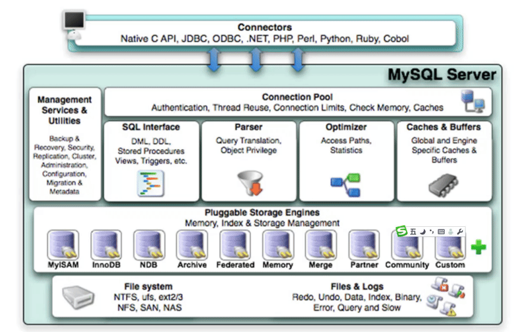
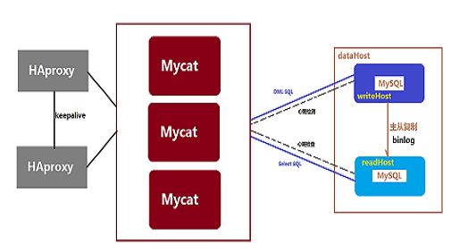
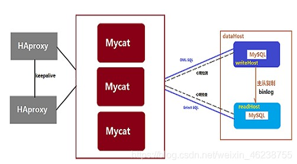

Linux: Mysql
- TAGS: Linux
数据库原理
数据的时代
- 涉及的数据量大
- 数据不随程序的结束而消失
- 数据被多个应用程序共享
- 大数据
*数据的分类*：
- 结构化的数据：即有固定格式和有限长度的数据。例如填的表格就是结构化的 数据，国籍：中华人民共和国，民族：汉，性别：男，这都叫结构化数据
- 非结构化的数据：非结构化的数据越来越多，就是不定长、无固定格式的数据， 例如网页，有时候非常长，有时候几句话就没了；例如语音，视频都是非结构 化的数据
- 半结构化数据：比如：XML或者HTML的格式的数据
数据库的发展史
萌芽阶段：文件系统
使用磁盘文件来存储数据
初级阶段：第一代数据库
出现了网状模型、层次模型的数据库
中级阶段：第二代数据库
关系型数据库和结构化查询语言
高级阶段：新一代数据库
"关系-对象"型数据库
文件管理系统的缺点
- 编写应用程序不方便
- 数据冗余不可避免
- 应用程序依赖性
- 不支持对文件的并发访问
- 数据间联系弱
- 难以按用户视图表示数据
- 无安全控制功能
DBMS 数据库管理系统
- 数据库：database是数据的汇集，它以一定的组织形式存于存储介质上
- DBMS：是管理数据库的系统软件，它实现数据库系统的各种功能。是数据库系 统的核心
- DBA：负责数据库的规划、设计、协调、维护和管理等工作
- 应用程序：指以数据库为基础的应用程序
数据库管理系统的优点
- 相互关联的数据的集合
- 较少的数据冗余
- 程序与数据相互独立
- 保证数据的安全、可靠
- 最大限度地保证数据的正确性
- 数据可以并发使用并能同时保证一致性
数据库管理系统的基本功能
- 数据定义
- 数据处理
- 数据安全
- 数据备份
数据库系统的架构
- 单机架构
- Microsof 中的 access 数据库，账务用的
- 大型主机/终端架构
- 主从式架构（C/S）
- 分布式架构
- TIDB
各种数据库管理系统
层次数据库
以树型结构表示实体及其之间联系。这种结构简单，但缺乏灵活性，因为这种关 系只支持一对多
代表数据库：IBM IMS
网状数据库
最早出现的是网状DBMS，1964年通用电气公司的Charles Bachman成功地开发出 世界上第一个网状IDS，也是第一个数据库管理系统，IDS具有数据模式和日志的 特征，只能在GE主机运行
RDBMS 关系型数据库
Relational Database Management System，关系模型最初由IBM公司开始开发系 统R，这是一个开发RDBMS原型的研究项目。然而，第一个商业上可用的RDBMS是 甲骨文，于1979年发布。
关系统型数据库相关概念
- 关系 ：关系就是二维表，其中：表中的行、列次序并不重要
- 行row：表中的每一行，又称为一条记录record
- 列column：表中的每一列，称为属性，字段，域field
- 主键Primary key：PK，一个或多个字段的组合，用于惟一确定一个记录的字段，一张表只有一个主键，主键字段不能为空NULL
- 唯一键Unique Key: 一个或多个字段的组合，用于惟一确定一个记录的字段，一张表可以有多个UK，且UK字段可以为空NULL，
- 域domain：属性的取值范围，如，性别只能是'男'和'女'两个值，人类的年龄只能0-150
1.7.3.2 常用关系数据库
- MySQL: MySQL, MariaDB, Percona Server
- PostgreSQL: 简称为pgsql，EnterpriseDB
- Oracle
- MSSQL
- DB2
1.7.3.3 数据库排名
关系型数据库理论
实体-联系模型E-R
E-R模型实体-关系模型，E-R 模型就是描述数据库存储数据的结构模型。对于大 型公司开发项目，需要根据产品的设计，先使用建模工具，如power designer, db desinger 等这些软件来画出实体-关系模型（E-R模型）
- 实体Entity：客观存在并可以相互区分的客观事物或抽象事件称为实体,在E-R图中用矩形框表示实体，把实体名写在框内
- 属性：实体所具有的特征或性质，用椭圆形表示。
- 联系relation：联系是数据之间的关联集合，是客观存在的应用语义链
- 实体内部的联系：指组成实体的各属性之间的联系。如职工实体中，职工号和部门经理号之间有一种关联关系
- 实体之间的联系：指不同实体之间联系。例：学生选课实体和学生基本信息实体之间
- 实体之间的联系用菱形框表示
联系类型
- 一对一联系(1:1): 在表A和表B中创建一个字段，存储另一个表的主键值。如：一个人只有一个身份证
- 一对多联系(1:n)：外键。一张表的字段与另一张表字段有依赖关系。如部门和员工。
- 多对多联系(m:n)：增加第三张表。如：学生和课程
数据的操作
开发工程师CRUD(增加Create、查询Retrieve或Read、更新Update、删除Delete)
- 数据提取：在数据集合中提取感兴趣的内容。SELECT
- 数据更新：变更数据库中的数据。INSERT、DELETE、UPDATE
数据库规划流程
| 概念模型 CDM | 逻辑模型LDM | 物理模型PDM | |
|---|---|---|---|
| 目的 | 描述业务系统要管理的对象 | 基于概念模型，详细列出所有实体、实体的属性及关系 | 概念逻辑模型，结合数据库的物理结构，设计具体的表结构，字段列表及主外键 |
| 特点 | 用概念名词来描述现实中的实体及业务规则，如联系人 | 基于业务的描述和数据库无关 | 技术实现细节和具体的数据类型相关 |
| 主要使用者 | 用户、需求分析师 | 需求分析师、架构师及开发 | 开发、DBA |
收集数据，得到字段
收集必要且完整的数据项
转换成数据表的字段
把字段分类，归入表，建立表的关联
关联：表和表间的关系
分割数据表并建立关联的优点
节省空间
减少输入错误
方便数据修改
- 规范化数据库
数据库的正规化分析
数据库规范化，又称数据库或资料库的正规化、标准化，是数据库设计中的一系 列原理和技术，以减少数据库中数据冗余，增进数据的一致性。关系模型的发明 者埃德加·科德最早提出这一概念，并于1970年代初定义了第一范式、第二范式 和第三范式的概念
设计关系数据库时，遵从不同的规范要求，设计出合理的关系型数据库，不同的 规范要求被称为不同范式，各种范式呈递次规范，越高的范式数据库冗余越小
目前关系数据库有六种范式：第一范式（1NF）、第二范式（2NF）、第三范式 （3NF）、巴德斯科范式（BCNF）、第四范式(4NF）和第五范式（5NF，又称完美 范式）。满足最低要求的范式是第一范式（1NF）。在第一范式的基础上进一步 满足更多规范要求的称为第二范式（2NF），其余范式以次类推。一般数据库只 需满足第三范式(3NF）即可
规则是死的，人是活的，所以范式是否必须遵守，要看业务需要而定掌握范式的 目的是为了在合适场景下违反范式。
第一范式：1NF
无重复的列，每一列都是不可分割的基本数据项，同一列中不能有多个值，即实 体中的某个属性不能有多个值或者不能有重复的属性，确保每一列的原子性。除 去同类型的字段，就是无重复的列
说明：第一范式（1NF）是对关系模式的基本要求，不满足第一范式（1NF）的数 据库就不是关系数据库
如： 表1
| id | 作者 |
| 1 | u1 |
| 2 | u2 |
表2
| id | 作者id | 书名 |
| 1 | 2 | xx1 |
| 2 | 2 | xx2 |
| 3 | 1 | xx3 |
作者id与表1是主外键关系
第二范式：2NF
第二范式必须先满足第一范式，属性完全依赖于主键，要求表中的每个行必须可 以被唯一地区分，通常为表加上每行的唯一标识PK，非PK的字段需要与整个PK有 直接相关性，即非PK的字段不能依赖于部分主键
例：员工表
同名的人在不同的城市，在同一个城市中每个人的姓名都不一样。设置主键必须 唯一，name和city联合作为复合主键。
但我们发现非主键字段依赖了主键，不符合第二范式。需要重新设计
第三范式：3NF
属性不依赖于其它非主属性，满足第三范式必须先满足第二范式。第三范式要求 一个数据表中不包含已在其它表中已包含的非主关键字信息，非PK的字段间不能 有从属关系
SQL 结构化查询语言简介
SQL：结构化查询语言，Structure Query Language
SQL解释器：将SQL语句解释成机器语言
数据存储协议：应用层协议，C/S
- S：server,监听于套接字，接收并处理客户端的应用请求
- C：Client
客户端程序接口
- CLI
- GUI
应用编程接口
- ODBC：Open Database Connectivity
- JDBC：Java Data Base Connectivity
数据约束
约束：constraint，表中的数据在数据类型限定的基础上额外要遵守的限制
常见约束如下：
- 非空not null：此字段不允许填写空值
- 主键primary key：一个或多个字段的组合，填入的数据必须能在本表中唯一标识本行；必须提供数据，即NOT NULL，一个表只能有一个
- 惟一键unique：一个或多个字段的组合，填入的数据必须能在本表中唯一标识本行；允许为NULL，一个表可以存在多个
- 默认 default：当不填写字段对应的值会使用默认值，如果填写时以填写为准。
- 外键foreign key：一个表中的某字段可填入的数据取决于另一个表的主键或唯一键已有的数据
- 检查：字段值在一定范围内。如年龄在0到150之间。
关系运算
- 选择：挑选出符合条件的行
- 投影：挑选出需要的字段
- 连接：表间字段的关联
数据抽象
- 物理层：数据存储格式，即RDBMS在磁盘上如何组织文件
- 逻辑层：DBA角度，描述存储什么数据，以及数据间存在什么样的关系
- 视图层：用户角度，描述DB中的部分数据
关系模型的分类
- 关系模型
- 基于对象的关系模型
- 半结构化的关系模型：XML数据
MySQL安装和基本使用
MySQL 介绍
MySQL 历史
MySQL的历史可以追溯到1979年，它的创始人叫做 Michael widenius，他在开发 一个报表工具时，设计了一套API，后来他的客户要求他的API支持SQL语句，他 直接借助于mSQL（当时比较牛）的代码，将它集成到自己的存储引擎中。但是他 总是感觉不满意，萌生了自己做一套数据库的想法。
直到1996年，MySQL 1.0发布，Michael Widenius的大女儿的简称就是MY， Michael Widenius大概也是把MySQL当成自己女儿一样对待。仅仅过了几个月的 时间，1996年10月MySQL 3.11.1 当时发布了Solaris的版本，一个月后，linux 的版本诞生，从那里开始，MySQL慢慢的被人所接受。
1999年，Michael Widenius成立了MySQL AB公司，MySQL由个人开发转变为团队 开发，2000年使用GPL协议开源。
2001年，MySQL生命中大事发生了，那就是存储引擎InnoDB的诞生。Oracle在 2005年收集了InnoDB，只不过InnoDB一直以来都只能作为第三方插件供用户选择。 直到现在，MySQL可以选择的众多存储引擎中，InnoDB依然是第一选择。
2008年，MySQL AB公司被Sun公司以10亿美元收购，MySQL数据库进入Sun时代。 Sun为MySQL的发展提供了绝佳的环境，2008年11月，MySQL 5.1发布，MySQL成为 了最受欢迎的小型数据库。
2009年4月，Oracle公司以74亿美元收购Sun公司，MySQL也随之进入Oracle时代。
2010年12月，MySQL 5.5发布，Oracle终于把InnoDB做成了MySQL的默认存储引擎， Mysql从此进入了辉煌时代。
然而，从那之后，Oracle对MySQL的态度渐渐发生了变化，Oracle虽然宣称MySQL 依然遵守GPL协议，但却暗地里把开发人员全部换成了Oracle自己人，开源社区 再也影响不了MySQL发展的脚步，真正有心做贡献的人也被拒之门外，MySQL随时 都有闭源的可能…..
看着自己辛苦养大的MySQL被Oracle搞成这样，Michael Widenius非常失望，决 定在MySQL走向闭源前，将MySQL进行分支化，依然是使用了自己小女儿的名字 MariaDB。
MariaDB数据库管理系统是MySQL的一个分支，主要由开源社区在维护，采用GPL 协议，MariaDB的目的是完全兼容MySQL，包括API和命令行，使之能轻松成为 MySQL的代替品。在存储引擎方面，使用XtraDB来代替MySQL的InnoDB。
MariaDB由MySQL的创始人主导，由开源社区的大神进行开发。因此，大家都认为， MariaDB拥有比MySQL纯正的MySQL血脉。
最初的版本更新与MySQL同步，相对MySQL5以后的版本，MariaDB也有相应的 5.1-5.5版本。后来MariaDB终于摆脱了MySQL，它的版本号直接从10.0开始，以 自己的步伐进行开发，当然，还是可以对MySQL完全兼容。
Mysql大事记：
- 1979年：TcX公司 Monty Widenius，Unireg
- 1996年：发布MySQL1.0，Solaris版本，Linux版本
- 1999年：MySQL AB公司，瑞典
- 2003年：MySQL 5.0版本，提供视图、存储过程等功能
- 2008年：Sun 花10亿美元收购MySQL
- 2009年：Oracle 花75亿美元收购sun
- 2009年：Monty成立MariaDB
MySQL系列
MySQL 的三大主要分支
- mysql
- mariadb
- percona Server
官方文档
版本演变
MySQL：5.1 –> 5.5 –> 5.6 –> 5.7 –>8.0
MariaDB：5.5 –>10.0–> 10.1 –> 10.2 –> 10.3 –> 10.4 –> 10.5 … –> 11.1
MYSQL的特性
- 插件式存储引擎：也称为“表类型”，存储管理器有多种实现版本，功能和特
性可能均略有差别；用户可根据需要灵活选择,Mysql5.5.5开始innoDB引擎是
MYSQL默认引擎
- MyISAM ==> Aria
- InnoDB ==> XtraDB
- 单进程，多线程
- 诸多扩展和新特性
- 提供了较多测试组件
- 开源
MySQL 安装
安装方式
- 源代码：编译安装
- 二进制格式的程序包：展开至特定路径，并经过简单配置后即可使用
- 程序包管理器管理的程序包
RPM包安装MySQL
CentOS 安装光盘
项目官方：https://downloads.mariadb.org/mariadb/repositories/
国内镜像：https://mirrors.tuna.tsinghua.edu.cn/mariadb/yum/ https://mirrors.tuna.tsinghua.edu.cn/mysql/yum/
CentOS 8：安装光盘直接提供
- mysql-server：8.0
- mariadb-server : 10.3.17
CentOS 7：安装光盘直接提供
- mariadb-server：5.5 服务器包
- mariadb 客户端工具包
CentOS 6：
- mysql-server：5.1 服务器包
- mysql 客户端工具包
范例: CentOS 7 安装MySQL5.7
[10:54:25 root@centos7 ~]#cat /etc/yum.repos.d/mysql57.repo [mysql57] name=mysql57 baseurl=https://mirrors.tuna.tsinghua.edu.cn/mysql/yum/mysql-5.7-community-el7-x86_64/ gpgcheck=0 [10:55:08 root@centos7 ~]#yum list | grep mysql57 mysql-community-client.i686 5.7.33-1.el7 mysql57 mysql-community-libs-compat.x86_64 5.7.33-1.el7 mysql57 mysql-community-server.x86_64 5.7.33-1.el7 mysql57 mysql-community-test.x86_64 5.7.33-1.el7 mysql57 [10:55:17 root@centos7 ~]#yum install mysql-community-server -y [11:00:53 root@centos7 ~]#systemctl enable --now mysqld [11:04:08 root@centos7 ~]#ss -ntl State Recv-Q Send-Q Local Address:Port Peer Address:Port LISTEN 0 80 [::]:3306 [::]:* [11:04:26 root@centos7 ~]#mysql ERROR 1045 (28000): Access denied for user 'root'@'localhost' (using password: NO) [11:05:15 root@centos7 ~]#grep password /var/log/mysqld.log 2021-01-28T03:04:05.376619Z 1 [Note] A temporary password is generated for root@localhost: j9eNwN#IsToD 2021-01-28T03:05:15.225574Z 2 [Note] Access denied for user 'root'@'localhost' (using password: NO) #修改初始密码方法1 [11:37:14 root@centos7 ~]#mysql -uroot -p'j9eNwN#IsToD' mysql> alter user root@'localhost' identified by 'Zhangzhuo@0705'; Query OK, 0 rows affected (0.00 sec) mysql> status #修改初始密码方法2 [11:38:28 root@centos7 ~]#mysqladmin -uroot -p'j9eNwN#IsToD' password 'Zhangzhuo@0705'
范例：centos7安装Mariadb
[11:42:44 root@centos7 ~]#cat /etc/yum.repos.d/mariadb.repo [mariadb105] name=mariadb105 baseurl=https://mirrors.tuna.tsinghua.edu.cn/mariadb/yum/10.5/centos/7/x86_64/ gpgcheck=0 [11:47:06 root@centos7 ~]#yum install -y MariaDB-server [11:47:43 root@centos7 ~]#systemctl enable --now mariadb.service [11:48:08 root@centos7 ~]#mysql Welcome to the MariaDB monitor. Commands end with ; or \g. Your MariaDB connection id is 3 Server version: 10.5.8-MariaDB MariaDB Server Copyright (c) 2000, 2018, Oracle, MariaDB Corporation Ab and others. Type 'help;' or '\h' for help. Type '\c' to clear the current input statement. MariaDB [(none)]> status ------------------------ mysql Ver 15.1 Distrib 10.5.8-MariaDB, for Linux (x86_64) using readline 5.1 Connection id: 3 Current database: Current user: root@localhost SSL: Not in use Current pager: stdout Using outfile: '' Using delimiter: ; Server: MariaDB Server version: 10.5.8-MariaDB MariaDB Server Protocol version: 10 Connection: Localhost via UNIX socket Server characterset: latin1 Db characterset: latin1 Client characterset: utf8 Conn. characterset: utf8 UNIX socket: /var/lib/mysql/mysql.sock Uptime: 18 sec Threads: 2 Questions: 4 Slow queries: 0 Opens: 16 Open tables: 10 Queries per second avg: 0.222
范例：ubuntu安装MySQL
apt list mysql* apt install mysql-server ss -tnlp # 数据库服务默认启动了，且端口绑定在127.0.0.1上，需要手动改配置文件。
命令帮助 加分号的命令是传给服务端的命令，不加分号是客户端命令 客户端命令
mysql> \h For information about MySQL products and services, visit: http://www.mysql.com/ For developer information, including the MySQL Reference Manual, visit: http://dev.mysql.com/ To buy MySQL Enterprise support, training, or other products, visit: https://shop.mysql.com/ List of all MySQL commands: Note that all text commands must be first on line and end with ';' ? (\?) Synonym for `help'. clear (\c) Clear the current input statement. connect (\r) Reconnect to the server. Optional arguments are db and host. delimiter (\d) Set statement delimiter. edit (\e) Edit command with $EDITOR. ego (\G) Send command to mysql server, display result vertically. exit (\q) Exit mysql. Same as quit. go (\g) Send command to mysql server. help (\h) Display this help. nopager (\n) Disable pager, print to stdout. notee (\t) Don't write into outfile. pager (\P) Set PAGER [to_pager]. Print the query results via PAGER. print (\p) Print current command. prompt (\R) Change your mysql prompt. quit (\q) Quit mysql. 退出 rehash (\#) Rebuild completion hash. source (\.) Execute an SQL script file. Takes a file name as an argument. 引用本地SQL脚本 status (\s) Get status information from the server. 状态 system (\!) Execute a system shell command. tee (\T) Set outfile [to_outfile]. Append everything into given outfile. use (\u) Use another database. Takes database name as argument. charset (\C) Switch to another charset. Might be needed for processing binlog with multi-byte charsets. warnings (\W) Show warnings after every statement. nowarning (\w) Don't show warnings after every statement. resetconnection(\x) Clean session context. For server side help, type 'help contents'
初始化脚本提高安全性
运行脚本：mysql_secure_installation
范例：运行安全加固脚本
# mysql_secure_installation 设置数据管理员root口令 禁止root远程登录 删除anonymous用户帐号 删除test数据库
MySQL 组成
客户端程序
- mysql: 交互式的CLI工具
- mysqldump：备份工具，基于mysql协议向mysqld发起查询请求，并将查得的所 有数据转换成insert等写操作语句保存文本文件中
- mysqladmin：基于mysql协议管理mysqld
- mysqlimport：数据导入工具
- MyISAM存储引擎的管理工具：
- myisamchk：检查MyISAM库
- myisampack：打包MyISAM表，只读
服务器端程序
- mysqld_safe
- mysqld
- mysqld_multi 多实例，示例：mysqld_multi –example
用户账号
mysql用户账号由两部分组成：
'USERNAME'@'HOST'
说明：
- HOST限制此用户可通过哪些远程主机连接mysql服务器
支持使用通配符：
% 匹配任意长度的任意字符，相当于shell中的*。例：172.16.0.0/255.255.0.0 或 172.16.%.% _ 匹配任意单个字符，相当于shell中的?
范例：查询当前系统账号
> selet user,host from mysql.user;
mysql 命令
mysql 运行命令类型
- 客户端命令：本地执行，每个命令都完整形式和简写格式
mysql> \h, help
mysql> \u，use 切换数据库
mysql> \s，status
mysql> \!，system
- 服务端命令：通过mysql协议发往服务器执行并取回结果，命令末尾都必须使 用命令结束符号，默认为分号
#示例： mysql>SELECT VERSION();
mysql使用模式
- 交互式模式
- 脚本模式：
mysql –uUSERNAME -pPASSWORD < /path/somefile.sql cat /path/somefile.sql | mysql –uUSERNAME -pPASSWORD mysql>source /path/from/somefile.sql
mysql命令使用格式
mysql [OPTIONS] [database]
mysql客户端常用选项：
-A, --no-auto-rehash 禁止补全 -u, --user= 用户名,默认为root -h, --host= 服务器主机,默认为localhost -p, --passowrd= 用户密码,建议使用-p,默认为空密码 -P, --port= 服务器端口 -S, --socket= 指定连接socket文件路径 -D, --database= 指定默认数据库 -C, --compress 启用压缩 -N --skip-column-names 代表不显示列名 -e “SQL“ 执行SQL命令 -V, --version 显示版本 -v --verbose 显示详细信息 --print-defaults 获取程序默认使用的配置
登录系统：
#默认空密码登录 mysql –uroot –p
运行mysql命令：
mysql>use mysql # 切换到数据库 mysql>select user(); # 查看当前用户 mysql>SELECT User,Host,Password FROM user; > system clear # 清屏
范例：不显示列名
$ mysql -Ne 'select * from db1.student;' +----+--------+------+------+ | 10 | tom | 22 | M | | 11 | k | 30 | F | | 12 | jasper | 22 | M | | 13 | q | 22 | F | +----+--------+------+------+ [jasper@c5 ~] eth0 = 10.0.4.12 $ mysql -e 'select * from db1.student;' +----+--------+------+--------+ | id | name | age | gender | +----+--------+------+--------+ | 10 | tom | 22 | M | | 11 | k | 30 | F | | 12 | jasper | 22 | M | | 13 | q | 22 | F | +----+--------+------+--------+
范例：mysql的配置文件，修改提示符
#查看mysql版本 [root@centos8 ~]#mysql -V mysql Ver 15.1 Distrib 10.3.11-MariaDB, for Linux (x86_64) using readline 5.1 #临时修改mysql提示符 [root@centos8 ~]#mysql -uroot -pcentos --prompt="\\r:\\m:\\s(\\u@\\h) [\\d]>\\_" 01:51:47(root@localhost) [(none)]> #持久修改mysql提示符 [root@centos8 ~]#vim /etc/my.cnf.d/mysql-clients.cnf [mysql] prompt="\\r:\\m:\\s(\\u@\\h) [\\d]>\\_" [root@centos8 ~]#mysql --print-defaults -v mysql would have been started with the following arguments: --prompt=\r:\m:\s(\u@\h) [\d]>\_ -v [root@centos8 ~]#mysql 10:29:30(root@localhost) [(none)]> use mysql Database changed 10:29:34(root@localhost) [mysql]> exit
范例：配置客户端mysql的自动登录
vim/etc/my.cnf.d/client.conf [client] user=wang password=centos [mysql] prompt=(\\u@\\h) [\\d]>\\_
mysqladmin命令
mysqladmin 命令格式
mysqladmin [OPTIONS] command command....
范例：
#查看mysql服务是否正常，如果正常提示mysqld is alive mysqladmin -uroot -pcentos ping #关闭mysql服务，但mysqladmin命令无法开启 mysqladmin –uroot –pcentos shutdown #创建数据库testdb mysqladmin -uroot –pcentos create testdb #删除数据库testdb mysqladmin -uroot -pcentos drop testdb #修改root密码 mysqladmin –uroot –pcentos password 'xxx' #日志滚动,生成新文件/var/lib/mysql/mariadb-bin.00000N mysqladmin -uroot -pcentos flush-logs
mycli
MyCLI 是 MySQL，MariaDB和Percona的命令行界面，具有自动完成和语法突出显示功能
安装
#centos8安装 yum install python3-pip pip3 install mycli #ubuntu安装 apt -y install mycli
使用
mycli -uroot -S /var/lib/mysql/mysql.sock
服务器端配置
服务器端配置文件
服务器端(mysqld)：工作特性有多种配置方式
- 命令行选项:
- 配置文件：类ini格式,集中式的配置，能够为mysql的各应用程序提供配置信息
服务器端配置文件：
/etc/my.cnf #Global选项 /etc/mysql/my.cnf #Global选项 ~/.my.cnf #User-specific 选项
配置文件格式：
[mysqld] [mysqld_safe] [mysqld_multi] [mysql] [mysqldump] [server] [client]
格式：parameter = value
说明：
_和- 相同 1，ON，TRUE意义相同， 0，OFF，FALSE意义相同
socket 连接说明
服务器监听的两种socket地址：
- ip socket: 监听在tcp的3306端口，支持远程通信，侦听3306/tcp端口可以在 绑定有一个或全部接口IP上
- unix sock: 监听在sock文件上，仅支持本机通信，如： /var/lib/mysql/mysql.sock。说明：host为localhost 时自动使用unix sock
范例：MySQL的端口
> show variables like 'port'; # MySQL8.0增加了一个33060/tcp端口 > show avriables lik 'mysqlx_port'
关闭mysqld网络连接
只侦听本地客户端，所有客户端和服务器的交互都通过一个socket文件实现， socket的配置存放在/var/lib/mysql/mysql.sock），可在/etc/my.cnf修改
范例：
vim /etc/my.cnf
[mysqld]
skip-networking=1
bind_address=127.0.0.1
通用二进制格式安装MySQL
通用二进制格式安装 MySQL5.6
下载地址：https://downloads.mysql.com/archives/community/
Product Version: 5.7.41
Operating System:Linux - Generic
OS Version: Linux - Generic (glibc 2.12) (x86, 64-bit)
准备用户
groupadd -r -g 306 mysql useradd -r -g 306 -u 306 -d /data/mysql mysql # -r 系统用户，他的家目录需要提前手动创建
准备数据目录，建议使用逻辑卷
#可选做，后面的脚本mysql_install_db可自动生成此目录 mkdir /data/mysql chown mysql:mysql /data/mysql #方法二：逻辑卷 fdisk /dev/sda yum install -y lvm2 pvcreate /dev/sda6 vgcreate vg0 /dev/sda6 lvcreate -n mysql -l 100%free vg0 mkfs.ext4 /dev/vg0/mysql #创建文件系统 vim /etc/fstab #修改配置文件，开机自动挂载 mount -a #全部挂载 df -h #确认挂载是否成功
准备二进制程序
#带有linux是编译好的，路径已经指定 tar xf mariadb-VERSION-linux-x86_64.tar.gz -C /usr/local cd /usr/local ln -sv mariadb-VERSION mysql chown -R root:root /usr/local/mysql/
准备配置文件
cd /usr/local/mysql cp -b support-files/my-large.cnf /etc/my.cnf vim /etc/my.cnf #mysql语句块中添加以下三个选项 [mysqld] datadir = /data/mysql #数据库位置 innodb_file_per_table = on #在mariadb5.5以上版的是默认值，可不加 skip_name_resolve = on #禁止主机名解析，建议使用
创建数据库文件
cd /usr/local/mysql/
./scripts/mysql_install_db --datadir=/data/mysql --user=mysql
[root@centos8 mysql]#ls /data/mysql/ -l
total 110604
-rw-rw---- 1 mysql mysql 12582912 Jun 1 16:44 ibdata1
-rw-rw---- 1 mysql mysql 50331648 Jun 1 16:44 ib_logfile0
-rw-rw---- 1 mysql mysql 50331648 Jun 1 16:44 ib_logfile1
drwx------ 2 mysql mysql 4096 Jun 1 16:44 mysql
drwx------ 2 mysql mysql 4096 Jun 1 16:44 performance_schema
drwx------ 2 mysql mysql 4096 Jun 1 16:44 test
准备服务脚本，并启动服务
cp ./support-files/mysql.server /etc/rc.d/init.d/mysqld chkconfig --add mysqld service mysqld start #如果有对应的service 文件可以执行下面 cp support-files/systemd/mariadb.service /usr/lib/systemd/system/ systemctl daemon-reload systemctl enable --now mariadb
PATH路径
echo 'PATH=/user/local/mysql/bin:$PATH' > /etc/profile.d/mysql.sh . /etc/profile.d/mysql.sh
安全初始化
/user/local/mysql/bin/mysql_secure_installation
实战案例：一键安装mysql-5.6二进制包的脚本
范例：离线安装mysql5.6二进制包的脚本
# vim mysql-install.sh #!/bin/bash DIR=`pwd` NAME="mysql-5.6.34-linux-glibc2.5-x86_64.tar.gz" FULL_NAME=${DIR}/${NAME} DATA_DIR="/data/mysql" yum install libaio perl-Data-Dumper vim gcc gcc-c++ wget autoconf net-tools lrzsz -y yum install curl policycoreutils openssh-server openssh-clients postfix -y if [ -f ${FULL_NAME} ];then echo "安装文件存在" else echo "安装文件不存在" exit 3 fi if [ -h /usr/local/mysql ];then echo "Mysql 已经安装" exit 3 else tar xvf ${FULL_NAME} -C /usr/local/src ln -sv /usr/local/src/mysql-5.6.34-linux-glibc2.5-x86_64 /usr/local/mysql if id mysql;then echo "mysql 用户已经存在，跳过创建用户过程" else useradd -r -s /sbin/nologin mysql fi if id mysql;then chown -R mysql.mysql /usr/local/mysql/* if [ ! -d /data/mysql ];then mkdir -pv /data/mysql && chown -R mysql.mysql /data /usr/local/mysql/scripts/mysql_install_db --user=mysql --datadir=/data/mysql --basedir=/usr/local/mysql/ cp /usr/local/src/mysql-5.6.34-linux-glibc2.5-x86_64/support-files/mysql.server /etc/init.d/mysqld chmod a+x /etc/init.d/mysqld cp ${DIR}/my.cnf /etc/my.cnf ln -sv /usr/local/mysql/bin/mysql /usr/bin/mysql /etc/init.d/mysqld start chkconfig --add mysqld else echo "MySQL数据目录已经存在," exit 3 fi fi fi #my.cnf [mysqld] socket=/var/lib/mysql/mysql.sock user=mysql symbolic-links=0 datadir=/data/mysql innodb_file_per_table=1 [client] port=3306 socket=/var/lib/mysql/mysql.sock [mysqld_safe] log-error=/var/log/mysqld.log pid-file=/tmp/mysql.pid
实战案例：通用二进制安装MySQL5.7和MySQL8.0
安装相关包
yum -y install libaio numactl-libs
用户和组
groupadd mysql useradd -r -g mysql -s /bin/false mysql
准备程序文件
https://repo.huaweicloud.com/mysql/Downloads/MySQL-5.7/mysql-5.7.33-linux-glibc2.12-x86_64.tar
wget
tar xf mysql-5.7.29-linux-glibc2.12-x86_64.tar.gz –C /usr/local
cd /usr/local/
ln -s mysql-5.7.29-linux-glibc2.12-x86_64/ mysql
chown -R root.root /usr/local/mysql/
准备环境变量
echo 'PATH=/usr/local/mysql/bin:$PATH' > /etc/profile.d/mysql.sh . /etc/profile.d/mysql.sh
准备配置文件
cp /etc/my.cnf{,.bak}
vim /etc/my.cnf
[mysqld]
datadir=/data/mysql
skip_name_resolve=1
socket=/data/mysql/mysql.sock
log-error=/data/mysql/mysql.log
pid-file=/data/mysql/mysql.pid
[client]
socket=/data/mysql/mysql.sock
生成数据库文件,并提取root密码
# 方式1 生成随机密码 mysqld --initialize --user=mysql --datadir=/data/mysql ...省略... 2019-07-04T13:03:54.258140Z 1 [Note] A temporary password is generated for root@localhost: LufavlMka6,! #注意生成root的初始密码 grep password /data/mysql/mysql.log 2019-12-26T13:31:30.458826Z 1 [Note] A temporary password is generated for root@localhost: LufavlMka6,! awk '/temporary password/{print $NF}' /data/mysql/mysql.log LufavlMka6,! # 方式2 生成root空密码 mysqld --initialize-insecure --user=mysql --datadir=/data/mysql
准备服务脚本和启动
cp /usr/local/mysql/support-files/mysql.server /etc/init.d/mysqld chkconfig --add mysqld service mysqld start # 或 cp support-files/systemd/mariadb.service /usr/lib/systemd/system/ systemctl daemon-reload systemctl enable --now mariadb
修改口令
#修改前面生成的随机密码 mysqladmin -uroot -p'LufavlMka6,!' password xxx #修改前面生成的空密码 mysqladmin -uroot password xxx
测试登录
mysql -uroot -pxxx
8.0
cd /usr/local/src/ wget https://dev.mysql.com/get/Downloads/MySQL-8.0/mysql-8.0.42-linux-glibc2.28-aarch64.tar.xz yum install libncurses* -y tar -xf mysql-8.0.42-linux-glibc2.28-aarch64.tar.xz groupadd mysql useradd -r -g mysql -s /bin/false mysql mkdir /data/mysql/{data,log/{binlog,slow,relaylog},startsql} -p touch /data/mysql/log/mysql_error.log mkdir /var/lib/mysql mv mysql-8.0.42-linux-glibc2.28-aarch64 /usr/local/mysql chown -R mysql:mysql /data/mysql* /var/lib/mysql* mkdir /data/mysql/tmp chown -R mysql:mysql /data/mysql* /var/lib/mysql* vi /etc/my.cnf /usr/local/mysql/bin/mysqld --initialize --user=mysql --datadir=/data/mysql/data --basedir=/usr/local/mysql --port=3306 cat /data/mysql/log/error.log|grep "temporary password" cp /usr/local/mysql/support-files/mysql.server /etc/init.d/mysqld /usr/local/mysql/bin/mysqld_safe --defaults-file=/etc/my.cnf --user=mysql & mysql -uroot -p -S /var/lib/mysql/mysqld.sock mysql -uroot -p -S /var/lib/mysql/mysqld.sock < /tmp/all.sql mysqldump -udev_user -h abcip -p --single-transaction --master-data=2 --set-gtid-purged=OFF -E -R --triggers --databases game_user_center a_b a_c a_d > /tmp/all.sql
实战案例：一键安装MySQL5.7和MySQL8.0二进制包的脚本
#!/bin/bash . /etc/init.d/functions SRC_DIR=`pwd` MYSQL='mysql-5.7.29-linux-glibc2.12-x86_64.tar.gz' COLOR='echo -e \E[01;31m' END='\E[0m' MYSQL_ROOT_PASSWORD=xxx check (){ if [ $UID -ne 0 ]; then action "当前用户不是root,安装失败" false exit 1 fi cd $SRC_DIR if [ ! -e $MYSQL ];then $COLOR"缺少${MYSQL}文件"$END $COLOR"请将相关软件放在${SRC_DIR}目录下"$END exit elif [ -e /usr/local/mysql ];then action "数据库已存在，安装失败" false exit else return fi } install_mysql(){ $COLOR"开始安装MySQL数据库..."$END yum -y -q install libaio numactl-libs ncurses-compat-libs libncurses.so.5 &> /dev/null cd $SRC_DIR tar xf $MYSQL -C /usr/local/ MYSQL_DIR=`echo $MYSQL| sed -nr 's/^(.*[0-9]).*/\1/p'` ln -s /usr/local/$MYSQL_DIR /usr/local/mysql chown -R root.root /usr/local/mysql/ id mysql &> /dev/null || { useradd -s /sbin/nologin -r mysql ; action "创建mysql用户"; } echo 'PATH=/usr/local/mysql/bin/:$PATH' > /etc/profile.d/mysql.sh . /etc/profile.d/mysql.sh cat > /etc/my.cnf <<EOF [mysqld] server-id=1 log-bin datadir=/data/mysql socket=/data/mysql/mysql.sock log-error=/data/mysql/mysql.log pid-file=/data/mysql/mysql.pid [client] socket=/data/mysql/mysql.sock EOF mysqld --initialize --user=mysql --datadir=/data/mysql cp /usr/local/mysql/support-files/mysql.server /etc/init.d/mysqld chkconfig --add mysqld chkconfig mysqld on service mysqld start [ $? -ne 0 ] && { $COLOR"数据库启动失败，退出!"$END;exit; } MYSQL_OLDPASSWORD=`awk '/A temporary password/{print $NF}' /data/mysql/mysql.log` mysqladmin -uroot -p$MYSQL_OLDPASSWORD password $MYSQL_ROOT_PASSWORD &>/dev/null action "数据库安装完成" } check install_mysql
源码编译安装MySQL
建议：内存4G以上
安装相关依赖包
yum -y install bison bison-devel zlib-devel libcurl-devel libarchive-devel boost-devel gcc gcc-c++ cmake ncurses-devel gnutls-devel libxml2-devel openssl-devel libevent-devel libaio-devel
做准备用户和数据目录
useradd -r -s /sbin/nologin -d /data/mysql mysql
准备数据库目录
mkdir /data/mysql chown mysql.mysql /data/mysql
源码编译安装
编译安装说明
利用cmake编译,而利用传统方法，cmake的重要特性之一是其独立于源码 (out-of-source)的编译功能，即编译工作可以在另一个指定的目录中而非源码 目录中进行，这可以保证源码目录不受任何一次编译的影响，因此在同一个源码 树上可以进行多次不同的编译，如针对于不同平台编译
编译选项:https://dev.mysql.com/doc/refman/5.7/en/source-configuration-options.html
下载并解压缩源码包
tar xvf mariadb-10.2.18.tar.gz -C /usr/local/src #mysql-5.6.51.tar.gz
源码编译安装mariadb
cd mariadb-10.2.18/ cmake . \ -DCMAKE_INSTALL_PREFIX=/apps/mysql \ -DMYSQL_DATADIR=/data/mysql/ \ -DSYSCONFDIR=/etc/ \ -DMYSQL_USER=mysql \ -DWITH_INNOBASE_STORAGE_ENGINE=1 \ -DWITH_ARCHIVE_STORAGE_ENGINE=1 \ -DWITH_BLACKHOLE_STORAGE_ENGINE=1 \ -DWITH_PARTITION_STORAGE_ENGINE=1 \ -DWITHOUT_MROONGA_STORAGE_ENGINE=1 \ -DWITH_DEBUG=0 \ -DWITH_READLINE=1 \ -DWITH_SSL=system \ -DWITH_ZLIB=system \ -DWITH_LIBWRAP=0 \ -DENABLED_LOCAL_INFILE=1 \ -DMYSQL_UNIX_ADDR=/data/mysql/mysql.sock \ -DDEFAULT_CHARSET=utf8 \ -DDEFAULT_COLLATION=utf8_general_ci make && make install #make -e 16 && make install # 并行16核编译
提示：如果出错，执行`rm -f CMakeCache.txt`
准备环境变量
echo 'PATH=/apps/mysql/bin:$PATH' > /etc/profile.d/mysql.sh . /etc/profile.d/mysql.sh
生成数据库文件
cd /apps/mysql/
scripts/mysql_install_db --datadir=/data/mysql/ --user=mysql
准备配置文件
#针对老版本或mariadb-10.2.18 cp /apps/mysql/support-files/my-huge.cnf /etc/my.cnf #mysql5.7 cp -b /apps/mysql/support-files/my-default.cnf /etc/my.cnf
准备启动脚本,并启动服务
cp /app/mysql/support-files/mysql.server /etc/init.d/mysqld chkconfig --add mysqld service mysqld start
安全初始化
mysql_secure_installation
基于docker容器创建MySQL
docker run -d --name mysql -e MYSQL_ROOT_PASSWORD=123456 -p 3306:3306 mysql
范例：
mkdir -p /data/mysql/data cat /data/mysql/my.cnf #For advice on how to change settings please see # http://dev.mysql.com/doc/refman/5.6/en/server-configuration-defaults.html # *** DO NOT EDIT THIS FILE. It's a template which will be copied to the # *** default location during install, and will be replaced if you # *** upgrade to a newer version of MySQL. [mysqld] #basedir=/var/lib/mysql datadir=/var/lib/mysql #socket=/var/lib/mysql/tmp/mysql.sock socket=/var/run/mysqld/mysqld.sock secure-file-priv=/var/lib/mysql-files user=mysql #tmpdir=/tmp max_connections=2000 character-set-server=utf8 #sql_mode=STRICT_TRANS_TABLES,NO_ZERO_IN_DATE,NO_ZERO_DATE,ERROR_FOR_DIVISION_BY_ZERO,NO_AUTO_CREATE_USER,NO_ENGINE_SUBSTITUTION lower_case_table_names=1 skip-name-resolve max_connections=3000 ## 服务端使用的字符集默认为8比特编码的latin1字符集 character-set-server=utf8mb4 ## 创建新表时将使用的默认存储引擎 default-storage-engine=INNODB #lower_case_table_name=1 max_allowed_packet=1024M max_length_for_sort_data=838860 group_concat_max_len=1844674407370954752 query_cache_type=1 loose_max_statement_time=3000000 table_open_cache=4096 max_connect_errors=100000 sort_buffer_size=3M join_buffer_size=3M log_bin_trust_function_creators=1 #开启慢日志 log_output=file slow_query_log=on slow_query_log_file = /var/lib/mysql/mysql-slow.log log_queries_not_using_indexes=on long_query_time = 1 sql_mode = "ONLY_FULL_GROUP_BY,STRICT_TRANS_TABLES,NO_ZERO_IN_DATE,ALLOW_INVALID_DATES,ERROR_FOR_DIVISION_BY_ZERO,NO_AUTO_CREATE_USER,NO_ENGINE_SUBSTITUTION" # Remove leading # and set to the amount of RAM for the most important data # cache in MySQL. Start at 70% of total RAM for dedicated server, else 10%. # innodb_buffer_pool_size = 128M # Remove leading # to turn on a very important data integrity option: logging # changes to the binary log between backups. # log_bin # These are commonly set, remove the # and set as required. # basedir = ..... # datadir = ..... # port = ..... # server_id = ..... # socket = ..... # Remove leading # to set options mainly useful for reporting servers. # The server defaults are faster for transactions and fast SELECTs. # Adjust sizes as needed, experiment to find the optimal values. # join_buffer_size = 128M # sort_buffer_size = 2M # read_rnd_buffer_size = 2M #sql_mode=NO_ENGINE_SUBSTITUTION,STRICT_TRANS_TABLES [mysqld_safe] log-error=/var/lib/mysql/error.log pid-file=/var/lib/mysql/mysql.pid [mysqldump] user=root password=VW4rbQfLTn cat /data/mysql/start.sh docker run -d -p 3306:3306 --restart always -v /data/mysql/data:/var/lib/mysql -v /data/mysql/my.cnf:/etc/my.cnf -e "MYSQL_ROOT_PASSWORD=VW4rbQfLTn" -e "TZ=Asia/Shanghai" --name mysql mysql:5.7 # 启动 bash /data/mysql/start.sh
docker-compose
# 创建目录 $ mkdir -p /data/mysql # mysql配置文件 cat << EOF > my.cnf #For advice on how to change settings please see # http://dev.mysql.com/doc/refman/5.6/en/server-configuration-defaults.html # *** DO NOT EDIT THIS FILE. It's a template which will be copied to the # *** default location during install, and will be replaced if you # *** upgrade to a newer version of MySQL. [mysqld] basedir=/var/lib/mysql datadir=/var/lib/mysql socket=/var/lib/mysql/tmp/mysql.sock user=mysql tmpdir=/tmp max_connections=200 character-set-server=utf8 #sql_mode=STRICT_TRANS_TABLES,NO_ZERO_IN_DATE,NO_ZERO_DATE,ERROR_FOR_DIVISION_BY_ZERO,NO_AUTO_CREATE_USER,NO_ENGINE_SUBSTITUTION max_connections=100 character-set-server=utf8 lower_case_table_names=1 skip-name-resolve max_connections=3000 ## 服务端使用的字符集默认为8比特编码的latin1字符集 character-set-server=utf8mb4 ## 创建新表时将使用的默认存储引擎 default-storage-engine=INNODB #lower_case_table_name=1 max_allowed_packet=1024M max_length_for_sort_data=838860 group_concat_max_len=1844674407370954752 query_cache_type=1 loose_max_statement_time=3000000 table_open_cache=4096 max_connect_errors=100000 sort_buffer_size=3M join_buffer_size=3M log_bin_trust_function_creators=1 #开启慢日志 log_output=file slow_query_log=on slow_query_log_file = /var/lib/mysql/mysql-slow.log log_queries_not_using_indexes=on long_query_time = 1 sql_mode = "ONLY_FULL_GROUP_BY,STRICT_TRANS_TABLES,NO_ZERO_IN_DATE,ALLOW_INVALID_DATES,ERROR_FOR_DIVISION_BY_ZERO,NO_AUTO_CREATE_USER,NO_ENGINE_SUBSTITUTION" # Remove leading # and set to the amount of RAM for the most important data # cache in MySQL. Start at 70% of total RAM for dedicated server, else 10%. # innodb_buffer_pool_size = 128M # Remove leading # to turn on a very important data integrity option: logging # changes to the binary log between backups. # log_bin # These are commonly set, remove the # and set as required. # basedir = ..... # datadir = ..... # port = ..... # server_id = ..... # socket = ..... # Remove leading # to set options mainly useful for reporting servers. # The server defaults are faster for transactions and fast SELECTs. # Adjust sizes as needed, experiment to find the optimal values. # join_buffer_size = 128M # sort_buffer_size = 2M # read_rnd_buffer_size = 2M #sql_mode=NO_ENGINE_SUBSTITUTION,STRICT_TRANS_TABLES [mysqld_safe] log-error=/var/lib/mysql/error.log pid-file=/var/lib/mysql/mysql.pid [mysqldump] user=root password=123 EOF # mysql docker-compose $ cat << EOF > /data/mysql/mysql-single.yaml version: "3.5" services: db: image: mysql:5.7 container_name: mysql hostname: mysql volumes: - ./data:/var/lib/mysql - ./my.cnf:/etc/my.cnf restart: always ports: - "3306:3306" environment: - MYSQL_ROOT_PASSWORD=123 - TZ=Asia/Shanghai networks: mysql: aliases: - db networks: mysql: name: mysql driver: bridge EOF # 启动 mysql $ docker-compose -f /data/mysql/mysql-single.yaml up -d
MySQL多实例
多实例介绍
什么是数据库多实例
- MySQL多实例就是在一台服务器上同时开启多个不同的服务端口（如：3306、 3307等），同时运行多个MySQL服务进程，这些服务进程通过不同的Socket监 听不同的服务端口来提供服务。多实例可能是MySQL的不同版本,也可能是 MySQL的同一版本实现
多实例的好处
- 可有效利用服务器资源。当单个服务器资源有剩余时，可以充分利用剩余资源 提供更多的服务，且可以实现资源的逻辑隔离节约服务器资源。例如公司服务 器资源紧张，但是数据库又需要各自尽量独立的提供服务，并且还需要到主从 复制等技术，多实例就是最佳选择
多实例弊端
- 存在资源互相抢占的问题。比如：当某个数据库实例并发很高或者SQL查询慢 时，整个实例会消耗大量的CPU、磁盘I/O等资源，导致服务器上面其他的数据 库实例在提供服务的质量也会下降,所以具体的需求要根据自己的实际情况而 定。
多实例常见的配置方案
- 单一的配置文件、单一启动程序多实例部署方式
- MySQL官方文档提到的单一配置文件、单一启动程序多实例部署方式
- 耦合度太高，一个配置文件不好管理。不是很推荐
- 多配置文件、多启动程序部署方式
- 多配置文件、多启动程序部署方式是针对每个实例都有独立的配置文件和目 录，管理灵活，此方案耦合度较低
- 工作开发和运维的统一原则：降低耦合度。所以建议此方式
实战案例：CentOS 8实现MySQL的多实例
实验目的
CentOS 8 yum安装mariadb-10.3.17并实现三个实例
环境要求
一台系统CentOS 8.X主机
前提准备
关闭SElinux 关闭防火墙 时间同步
实现步骤
安装mariadb
[root@centos8 ~]#yum install mariadb-server
准备三个实例的目录
[root@centos8 ~]#mkdir -pv
/mysql/{3306,3307,3308}/{data,etc,socket,log,bin,pid}
[root@centos8 ~]#chown -R mysql.mysql /mysql
[root@centos8 ~]#tree -d /mysql/
/mysql/
├── 3306
│ ├── bin
│ ├── data
│ ├── etc
│ ├── log
│ ├── pid
│ └── socket
├── 3307
│ ├── bin
│ ├── data
│ ├── etc
│ ├── log
│ ├── pid
│ └── socket
└── 3308
├── bin
├── data
├── etc
├── log
├── pid
└── socket
21 directories
生成数据库文件
[root@centos8 ~]#mysql_install_db --datadir=/mysql/3306/data --user=mysql [root@centos8 ~]#mysql_install_db --datadir=/mysql/3307/data --user=mysql [root@centos8 ~]#mysql_install_db --datadir=/mysql/3308/data --user=mysql
准备配置文件
[root@centos8 ~]#vim /mysql/3306/etc/my.cnf [mysqld] port=3306 datadir=/mysql/3306/data socket=/mysql/3306/socket/mysql.sock log-error=/mysql/3306/log/mysql.log pid-file=/mysql/3306/pid/mysql.pid #重复上面步骤设置3307，3308 sed 's/3306/3307/' /mysql/3306/etc/my.cnf > /mysql/3307/etc/my.cnf sed 's/3306/3308/' /mysql/3306/etc/my.cnf > /mysql/3308/etc/my.cnf
准备启动脚本
[root@centos8 ~]#vim /mysql/3306/bin/mysqld #!/bin/bash port=3306 mysql_user="root" mysql_pwd="xxx" cmd_path="/usr/bin" mysql_basedir="/mysql" mysql_sock="${mysql_basedir}/${port}/socket/mysql.sock" function_start_mysql() { if [ ! -e "$mysql_sock" ];then printf "Starting MySQL...\n" ${cmd_path}/mysqld_safe --defaults-file=${mysql_basedir}/${port}/etc/my.cnf &> /dev/null & else printf "MySQL is running...\n" exit fi } function_stop_mysql() { if [ ! -e "$mysql_sock" ];then printf "MySQL is stopped...\n" exit else printf "Stoping MySQL...\n" ${cmd_path}/mysqladmin -u ${mysql_user} -p${mysql_pwd} -S ${mysql_sock} shutdown fi } function_restart_mysql() { printf "Restarting MySQL...\n" function_stop_mysql sleep 2 function_start_mysql } case $1 in start) function_start_mysql ;; stop) function_stop_mysql ;; restart) function_restart_mysql ;; *) printf "Usage: ${mysql_basedir}/${port}/bin/mysqld {start|stop|restart}\n" esac [root@centos8 ~]#chmod +x /mysql/3306/bin/mysqld #重复上述过程，分别建立3307，3308的启动脚本 sed 's/3306/3307/' /mysql/3306/bin/mysqld >/mysql/3307/bin/mysqld sed 's/3306/3308/' /mysql/3306/bin/mysqld >/mysql/3308/bin/mysqld
启动服务
[root@centos8 ~]#/mysql/3306/bin/mysqld start [root@centos8 ~]#/mysql/3307/bin/mysqld start [root@centos8 ~]#/mysql/3308/bin/mysqld start [root@centos8 ~]#ss -ntl State Recv-Q Send-Q Local Address:Port Peer Address:Port LISTEN 0 128 0.0.0.0:22 0.0.0.0:* LISTEN 0 128 [::]:22 [::]:* LISTEN 0 80 *:3306 *:* LISTEN 0 80 *:3307 *:* LISTEN 0 80 *:3308 *:*
登录实例
[root@centos8 ~]#/mysql/3308/bin/mysqld start #两种连接方法 [root@centos8 ~]#mysql -h127.0.0.1 -P3308 [root@centos8 ~]#mysql -uroot -S /mysqldb/3306/socket/mysql.sock #确认连接的端口 MariaDB [(none)]> show variables like 'port'; +---------------+-------+ | Variable_name | Value | +---------------+-------+ | port | 3306 | +---------------+-------+ 1 row in set (0.001 sec) MariaDB [(none)]> #关闭数据库，需要手动输入root的密码 [root@centos8 ~]#/mysql/3308/bin/mysqld stop Stoping MySQL... Enter password: [root@centos8 ~]#/mysql/3308/bin/mysqld start Starting MySQL...
修改root密码
#加上root的口令 [root@centos8 ~]#mysqladmin -uroot -S /mysql/3306/socket/mysql.sock password 'xxx' [root@centos8 ~]#mysqladmin -uroot -S /mysql/3307/socket/mysql.sock password 'xxx' [root@centos8 ~]#mysqladmin -uroot -S /mysql/3308/socket/mysql.sock password 'xxx' #或者登录mysql,执行下面也可以 Mariadb>update mysql.user set password=password(“centos”) where user='root'; Mariadb>flush privileges; #重复步骤，分别修改别外两个实例3307，3308对应root口令
测试连接
[root@centos8 ~]#mysql -uroot -p -S /mysql/3306/socket/mysql.sock #提示输入口令才能登录
开机启动
vim /etc/rc.d/rc.local # 最后添加下面内容 for i in {3306..3308};do /mysql/$i/bin/mysqld start; done chmod +x /etc/rc.d/rc.local
实战案例：CentOS 7 实现MySQL的多实例
实验目的
CentOS 7.7 yum安装mariadb并实现三个实例
环境要求
一台主机 系统：CentOS 7.X
前提准备
关闭SElinux 关闭防火墙 时间同步
实现步骤
安装mariadb
yum install mariadb-server Systemctl start mariadb
准备三个实例的目录
mkdir -pv /mysql/{3306,3307,3308}/{data,etc,socket,log,bin,pid}
chown -R mysql.mysql /mysql
生成数据库文件
mysql_install_db --datadir=/mysql/3306/data --user=mysql mysql_install_db --datadir=/mysql/3307/data --user=mysql mysql_install_db --datadir=/mysql/3308/data --user=mysql
准备启动脚本
cp /etc/my.cnf /mysql/3306/etc/ vim /mysql/3306/etc/my.cnf [mysqld] #加此行，如果port是3306可省略此行 port=3306 datadir=/mysql/3306/data/ socket=/mysql/3306/socket/mysql.sock [mysqld_safe] log-error=/mysql/3306/log/mariadb.log pid-file=/mysql/3306/pid/mariadb.pid #重复上面步骤设置3307，3308
准备配置文件
vim /mysql/3306/bin/mysqld #!/bin/bash port=3306 mysql_user="root" mysql_pwd="xxx" cmd_path="/usr/bin" mysql_basedir="/mysql" mysql_sock="${mysql_basedir}/${port}/socket/mysql.sock" function_start_mysql() { if [ ! -e "$mysql_sock" ];then printf "Starting MySQL...\n" ${cmd_path}/mysqld_safe --defaults-file=${mysql_basedir}/${port}/etc/my.cnf &> /dev/null & else printf "MySQL is running...\n" exit fi } function_stop_mysql() { if [ ! -e "$mysql_sock" ];then printf "MySQL is stopped...\n" exit else printf "Stoping MySQL...\n" ${cmd_path}/mysqladmin -u ${mysql_user} -p${mysql_pwd} -S ${mysql_sock} shutdown fi } function_restart_mysql() { printf "Restarting MySQL...\n" function_stop_mysql sleep 2 function_start_mysql } case $1 in start) function_start_mysql ;; stop) function_stop_mysql ;; restart) function_restart_mysql ;; *) printf "Usage: ${mysql_basedir}/${port}/bin/mysqld {start|stop|restart}\n" esac #重复上述过程，分别建立3307，3308的启动脚本
启动关闭服务
/mysql/3306/bin/mysqld start /mysql/3307/bin/mysqld start /mysql/3308/bin/mysqld start
登录实例
/mysql/3306/bin/mysqld start mysql -uroot -S /mysql/3306/socket/mysql.sock mariadb>show variables like 'port' #确认连接的端口
修改root密码
mysqladmin -uroot -S /mysql/3306/socket/mysql.sock password 'xxx' #加上新口令 #或者登录mysql,执行下面也可以 Mariadb>update mysql.user set password=password(“centos”) where user='root'; Mariadb>flush privileges; #重复步骤，分别修改别外两个实例3307，3308对应root口令
测试连接
mysql -uroot -S /mysql/3306/socket/mysql.sock –p #提示输入口令才能登录
SQL语言
关系型数据库的常见组件
- 数据库：database
- 表：table，行：row 列：column
- 索引：index
- 视图：view
- 用户：user
- 权限：privilege
- 存储过程：procedure
- 存储函数：function
- 触发器：trigger
- 事件调度器：event scheduler，任务计划
SQL语言的兴起与语法标准
20世纪70年代，IBM开发出SQL，用于DB2
1981年，IBM推出SQL/DS数据库
业内标准微软和Sybase的T-SQL，Oracle的PL/SQL
SQL作为关系型数据库所使用的标准语言，最初是基于IBM的实现在1986年被批准 的。1987年，国际标准化组织(ISO)把ANSI(美国国家标准化组织) SQL作为国际 标准
SQL：ANSI SQL，SQL-1986, SQL-1989, SQL-1992, SQL-1999, SQL-2003，SQL-2008, SQL-2011
SQL语言规范
- 在数据库系统中，SQL语句不区分大小写，建议用大写
- SQL语句可单行或多行书写，以“;”结尾
- 关键词不能跨多行或简写
- 用空格和缩进来提高语句的可读性
- 子句通常位于独立行，便于编辑，提高可读性
注释
官方参考：https://dev.mysql.com/doc/refman/8.4/en/comments.html
MySQL 服务器支持三种注释风格：
#单行注释内容。 -- 注释内容。第二个破折号后至少有一个空白或控制字符，例如空格或制表符 /*注释内容*/ 类似于 C 语言。这种语法允许注释跨越多行
内联注释
/*!MySQL-specific */ 只有MySQL能识别它是注释，但不具备注释的语义。 !字符后添加一个版本号，则只有当 MySQL 版本大于或等于指定的版本号时，才执行注释内的语法。
范例
mysql> SELECT 1+1; #comment mysql> SELECT 1+1; -- comment mysql> SELECT 1 /*comment*/ + 1; mysql> SELECT 1+ /* this is a multiple-line comment */ 1; /*!select*/ 1; /*!50110 select*/ 1; #MySQL 5.1.10 或更高版本
mysql> select 1+1--1; #--1没有被识别为注释，而是被解释为减负1 即1+1-(-1) +--------+ | 1+1--1 | +--------+ | 3 | +--------+ 1 row in set (0.000 sec) mysql> select 1+1--'a'; #--'a'被识别为注释，因为--后面跟着非数字字符 +----------+ | 1+1--'a' | +----------+ | 2 | +----------+ mysql> SELECT 1 /**/ + 1--'s'+'2'/*!+1*/; +-----------------------+ | 1 /**/ + 1--'s'+'2'+1 | +-----------------------+ | 5 | +-----------------------+
数据库对象和命名
数据库的组件(对象)：
- 数据库、表、索引、视图、用户、存储过程、函数、触发器、事件调度器等
命名规则：
- 必须以字母开头，可包括数字和三个特殊字符`# _ $`
- 不要使用MySQL的保留字
- 同一database(Schema)下的对象不能同名
SQL语句分类
- DDL: Data Defination Language 数据定义语言，定义或修改数据库对象（如表、索引、视图等）的结构。关键字：
- CREATE（创建数据库或表）
- ALTER（修改表结构）
- DROP（删除数据库或表）
- TRUNCATE（快速清空表数据并重置结构）
- DML: Data Manipulation Language 数据操纵语言，对表中的数据进行增、删、改操作。关键字：
- INSERT（插入数据）
- UPDATE（更新数据）
- DELETE（删除数据）
- DQL：Data Query Language 数据查询语言，从数据库中检索数据，是SQL的核心部分。关键字：
- SELECT（查询数据）。特点：支持单表查询、多表连接（如内连接、外连接）、聚合函数（SUM、COUNT等）、分组（GROUP BY）和条件筛选（HAVING）
- DCL：Data Control Language 数据控制语言，管理数据库权限和事务控制。关键字：
- GRANT（授予权限）
- REVOKE（撤销权限）
- COMMIT（提交事务）
- ROLLBACK（回滚事务）
- TCL: Transaction Control Language 事务控制语言，负责处理ACID事务,确保数据库操作的原子性和一致性。关键字：
- BEGIN TRANSACTION（开始事务）
- SAVEPOINT（设置保存点）
- COMMIT（提交事务）
- ROLLBACK（回滚到保存点或事务起点）
SQL的CRUD(Create-Read-Update-Delete)，即 Insert,update,delete,select 四条语句
软件开发：CRUD
运维人员：查询居多
SQL语句构成
关健字Keyword组成子句clause，多条clause组成语句
示例：
SELECT * #SELECT子句 FROM products #FROM子句 WHERE price>400 #WHERE子句
说明：一组SQL语句，由三个子句构成，SELECT,FROM和WHERE是关键字
数据库操作
获取SQL 命令使用帮助：
官方帮助：https://dev.mysql.com/doc/refman/8.0/en/sql-statements.html
mysql> HELP KEYWORD
字符集和排序
早期MySQL版本默认为latin1，从MySQL8.0开始默认字符集已经为 utf8mb4
查看支持所有字符集：
shwo charset; SHOW CHARACTER SET;
范例：字符集和相关文件
mysql> SHOW CHARACTER SET; # 字符集 描述 默认排序 最大支持的字节数 +----------+---------------------------------+---------------------+--------+ | Charset | Description | Default collation | Maxlen | +----------+---------------------------------+---------------------+--------+ | armscii8 | ARMSCII-8 Armenian | armscii8_general_ci | 1 | | ascii | US ASCII | ascii_general_ci | 1 | | big5 | Big5 Traditional Chinese | big5_chinese_ci | 2 | | binary | Binary pseudo charset | binary | 1 | | cp1250 | Windows Central European | cp1250_general_ci | 1 | | cp1251 | Windows Cyrillic | cp1251_general_ci | 1 | | cp1256 | Windows Arabic | cp1256_general_ci | 1 | | cp1257 | Windows Baltic | cp1257_general_ci | 1 | | cp850 | DOS West European | cp850_general_ci | 1 | | cp852 | DOS Central European | cp852_general_ci | 1 | | cp866 | DOS Russian | cp866_general_ci | 1 | | cp932 | SJIS for Windows Japanese | cp932_japanese_ci | 2 | | dec8 | DEC West European | dec8_swedish_ci | 1 | | eucjpms | UJIS for Windows Japanese | eucjpms_japanese_ci | 3 | | euckr | EUC-KR Korean | euckr_korean_ci | 2 | | gb18030 | China National Standard GB18030 | gb18030_chinese_ci | 4 | | gb2312 | GB2312 Simplified Chinese | gb2312_chinese_ci | 2 | | gbk | GBK Simplified Chinese | gbk_chinese_ci | 2 | | geostd8 | GEOSTD8 Georgian | geostd8_general_ci | 1 | | greek | ISO 8859-7 Greek | greek_general_ci | 1 | | hebrew | ISO 8859-8 Hebrew | hebrew_general_ci | 1 | | hp8 | HP West European | hp8_english_ci | 1 | | keybcs2 | DOS Kamenicky Czech-Slovak | keybcs2_general_ci | 1 | | koi8r | KOI8-R Relcom Russian | koi8r_general_ci | 1 | | koi8u | KOI8-U Ukrainian | koi8u_general_ci | 1 | | latin1 | cp1252 West European | latin1_swedish_ci | 1 | | latin2 | ISO 8859-2 Central European | latin2_general_ci | 1 | | latin5 | ISO 8859-9 Turkish | latin5_turkish_ci | 1 | | latin7 | ISO 8859-13 Baltic | latin7_general_ci | 1 | | macce | Mac Central European | macce_general_ci | 1 | | macroman | Mac West European | macroman_general_ci | 1 | | sjis | Shift-JIS Japanese | sjis_japanese_ci | 2 | | swe7 | 7bit Swedish | swe7_swedish_ci | 1 | | tis620 | TIS620 Thai | tis620_thai_ci | 1 | | ucs2 | UCS-2 Unicode | ucs2_general_ci | 2 | | ujis | EUC-JP Japanese | ujis_japanese_ci | 3 | | utf16 | UTF-16 Unicode | utf16_general_ci | 4 | | utf16le | UTF-16LE Unicode | utf16le_general_ci | 4 | | utf32 | UTF-32 Unicode | utf32_general_ci | 4 | | utf8 | UTF-8 Unicode | utf8_general_ci | 3 | | utf8mb4 | UTF-8 Unicode | utf8mb4_0900_ai_ci | 4 | +----------+---------------------------------+---------------------+--------+ 41 rows in set (0.00 sec) # 可以看到 utf8只占了3个字节，属于阉割版的utf8。utf8mb4 才是真的utf8. [root@centos8 ~]#ll /usr/share/mysql/charsets/ total 240 -rw-r--r-- 1 root root 5939 Jun 25 2019 armscii8.xml -rw-r--r-- 1 root root 5925 Jun 25 2019 ascii.xml -rw-r--r-- 1 root root 8654 Jun 25 2019 cp1250.xml -rw-r--r-- 1 root root 8783 Jun 25 2019 cp1251.xml -rw-r--r-- 1 root root 5982 Jun 25 2019 cp1256.xml -rw-r--r-- 1 root root 9315 Jun 25 2019 cp1257.xml -rw-r--r-- 1 root root 5919 Jun 25 2019 cp850.xml -rw-r--r-- 1 root root 5941 Jun 25 2019 cp852.xml -rw-r--r-- 1 root root 6026 Jun 25 2019 cp866.xml -rw-r--r-- 1 root root 6942 Jun 25 2019 dec8.xml -rw-r--r-- 1 root root 5929 Jun 25 2019 geostd8.xml -rw-r--r-- 1 root root 6141 Jun 25 2019 greek.xml -rw-r--r-- 1 root root 5930 Jun 25 2019 hebrew.xml -rw-r--r-- 1 root root 5915 Jun 25 2019 hp8.xml -rw-r--r-- 1 root root 19495 Jun 25 2019 Index.xml -rw-r--r-- 1 root root 5942 Jun 25 2019 keybcs2.xml -rw-r--r-- 1 root root 5923 Jun 25 2019 koi8r.xml -rw-r--r-- 1 root root 6945 Jun 25 2019 koi8u.xml -rw-r--r-- 1 root root 10229 Jun 25 2019 latin1.xml -rw-r--r-- 1 root root 7651 Jun 25 2019 latin2.xml -rw-r--r-- 1 root root 5928 Jun 25 2019 latin5.xml -rw-r--r-- 1 root root 7851 Jun 25 2019 latin7.xml -rw-r--r-- 1 root root 8460 Jun 25 2019 macce.xml -rw-r--r-- 1 root root 8471 Jun 25 2019 macroman.xml -rw-r--r-- 1 root root 1749 Jun 25 2019 README -rw-r--r-- 1 root root 6943 Jun 25 2019 swe7.xml
查看当前字符集的使用情况
MariaDB [mysql]> show variables like 'character%'; +--------------------------+------------------------------+ | Variable_name | Value | +--------------------------+------------------------------+ | character_set_client | utf8 | | character_set_connection | utf8 | | character_set_database | latin1 | | character_set_filesystem | binary | | character_set_results | utf8 | | character_set_server | latin1 | | character_set_system | utf8 | | character_sets_dir | /usr/share/mariadb/charsets/ | +--------------------------+------------------------------+ 8 rows in set (0.001 sec)
查看支持所有排序规则：
SHOW COLLATION;
查看当前使用的排序规则
SHOW VARIABLES LIKE 'collation%';
设置服务器默认的字符集
vim /etc/my.cnf [mysqld] character-set-server=utf8mb4
设置mysql客户端默认的字符集，这个要跟服务器端一致
vim /etc/my.cnf #针对mysql客户端 [mysql] default-character-set=utf8mb4 #针对所有mysql客户端 [client] default-character-set=utf8mb4
范例：Mariadb10.3 默认的字符集和排序规则
MariaDB [mysql]> SELECT VERSION(); +-----------------+ | VERSION() | +-----------------+ | 10.3.17-MariaDB | +-----------------+ 1 row in set (0.000 sec) MariaDB [mysql]> show variables like 'character%'; +--------------------------+------------------------------+ | Variable_name | Value | +--------------------------+------------------------------+ | character_set_client | utf8 | | character_set_connection | utf8 | | character_set_database | latin1 | | character_set_filesystem | binary | | character_set_results | utf8 | | character_set_server | latin1 | | character_set_system | utf8 | | character_sets_dir | /usr/share/mariadb/charsets/ | +--------------------------+------------------------------+ 8 rows in set (0.001 sec) MariaDB [mysql]> SHOW VARIABLES LIKE 'collation%'; +----------------------+-------------------+ | Variable_name | Value | +----------------------+-------------------+ | collation_connection | utf8_general_ci | | collation_database | latin1_swedish_ci | | collation_server | latin1_swedish_ci | +----------------------+-------------------+ 3 rows in set (0.001 sec)
范例：MySQL 8.0 默认的字符集和排序规则
mysql> SELECT VERSION(); +-----------+ | VERSION() | +-----------+ | 8.0.17 | +-----------+ 1 row in set (0.00 sec) mysql> show variables like 'character%'; +--------------------------+----------------------------+ | Variable_name | Value | +--------------------------+----------------------------+ | character_set_client | utf8mb4 | | character_set_connection | utf8mb4 | | character_set_database | utf8mb4 | | character_set_filesystem | binary | | character_set_results | utf8mb4 | | character_set_server | utf8mb4 | | character_set_system | utf8 | | character_sets_dir | /usr/share/mysql/charsets/ | +--------------------------+----------------------------+ 8 rows in set (0.00 sec) mysql> SHOW VARIABLES LIKE 'collation%'; +----------------------+--------------------+ | Variable_name | Value | +----------------------+--------------------+ | collation_connection | utf8mb4_0900_ai_ci | | collation_database | utf8mb4_0900_ai_ci | | collation_server | utf8mb4_0900_ai_ci | +----------------------+--------------------+ 3 rows in set (0.01 sec)
查看所有排序规则
SHOW COLLATION;
管理数据库
创建数据库
CREATE DATABASE|SCHEMA [IF NOT EXISTS] 'DB_NAME' CHARACTER SET 'character set name' COLLATE 'collate name';
范例：
MariaDB [mysql]> create database db1; Query OK, 1 row affected (0.000 sec) MariaDB [mysql]> show create database db1; +----------+----------------------------------------------------------------+ | Database | Create Database | +----------+----------------------------------------------------------------+ | db1 | CREATE DATABASE `db1` /*!40100 DEFAULT CHARACTER SET latin1 */ | +----------+----------------------------------------------------------------+ 1 row in set (0.000 sec) # 指定字符集和排序方式 [root@centos8 ~]#cat /var/lib/mysql/db1/db.opt default-character-set=latin1 default-collation=latin1_swedish_ci MariaDB [(none)]> create database db1; ERROR 1007 (HY000): Can't create database 'db1'; database exists MariaDB [(none)]> create database IF NOT EXISTS db1; Query OK, 0 rows affected, 1 warning (0.000 sec) MariaDB [(none)]> show warnings; +-------+------+----------------------------------------------+ | Level | Code | Message | +-------+------+----------------------------------------------+ | Note | 1007 | Can't create database 'db1'; database exists | +-------+------+----------------------------------------------+ 1 row in set (0.000 sec)
范例：指定字符集创建新数据库
CREATE DATABASE IF NOT EXISTS xxx CHARACTER SET 'utf8mb4' COLLATE utf8mb4_general_ci; MariaDB [(none)]> create database IF NOT EXISTS db2 CHARACTER SET 'utf8' collate utf8_bin; # utf8_bin是区分大小写的排序规则 Query OK, 1 row affected (0.000 sec) MariaDB [(none)]> SHOW CREATE DATABASE db2; +----------+--------------------------------------------------------------+ | Database | Create Database | +----------+--------------------------------------------------------------+ | db2 | CREATE DATABASE `db2` /*!40100 DEFAULT CHARACTER SET utf8 */ | +----------+--------------------------------------------------------------+ 1 row in set (0.000 sec) MariaDB [(none)]> #配置文件指定默认字符集和排序 [root@centos8 ~]#cat /mysql/3306/data/db2/db.opt default-character-set=utf8 default-collation=utf8_general_ci
范例：以容器方式启动并创建数据库
docker run -p 3306:3306 --name mysql-server -t \ -e MYSQL_DATABASE="zabbix" \ -e MYSQL_USER="zabbix" \ -e MYSQL_PASSWORD="zabbix_pwd" \ -e MYSQL_ROOT_PASSWORD="root_pwd" \ -d mysql:5.7 \ --character-set-server=utf8 --collation-server=utf8_bin
修改数据库
ALTER DATABASE DB_NAME character set utf8;
范例：修改数据库字符集和排序规则
MariaDB [(none)]> ALTER DATABASE db1 character set utf8 COLLATE utf8_bin; MariaDB [(none)]> show create database db1; [root@centos8 ~]#cat /var/lib/mysql/db1/db.opt
删除数据库
DROP DATABASE|SCHEMA [IF EXISTS] 'DB_NAME';
MariaDB [(none)]> drop database db1; MariaDB [(none)]> show databases; +--------------------+ | Database | +--------------------+ | information_schema | | mysql | | performance_schema | +--------------------+ [root@centos8 ~]#ls /var/lib/mysql/ #实际上就是删除目录 aria_log.00000001 ib_buffer_pool ib_logfile0 ibtmp1 mysql mysql_upgrade_info tc.log aria_log_control ibdata1 ib_logfile1 multi-master.info mysql.sock performance_schema
查看数据库列表
SHOW DATABASES;
范例：
MariaDB [(none)]> show databases; +--------------------+ | Database | +--------------------+ | information_schema | | mysql | | performance_schema | +--------------------+ 3 rows in set (0.000 sec) # 查看数据库创建指令 show create database db_xxx1;
数据类型
数据类型：
- 数据长什么样
- 数据需要多少空间来存放
数据类型
- 系统内置数据类型
- 用户定义数据类型
MySQL支持多种内置数据类型
- 数值类型
- 日期/时间类型
- 字符串(字符)类型
数据类型参考链接 https://dev.mysql.com/doc/refman/9.3/en/data-types.html
选择正确的数据类型对于获得高性能至关重要，三大原则：
- 更小的通常更好，尽量使用可正确存储数据的最小数据类型
- 简单就好，简单数据类型的操作通常需要更少的CPU周期
- 尽量避免NULL，包含为NULL的列，对MySQL更难优化
整数型
tinyint(m) 迷你整型 1个字节 范围(-128~127) smallint(m) 短整型 2个字节 范围(-32768~32767) mediumint(m) 中整型 3个字节 范围(-8388608~8388607) int(m) 标准整型 4个字节 范围(-2147483648~2147483647) bigint(m) 大整型 8个字节 范围(+-9.22*10的18次方)
上述数据类型，如果 加修饰符unsigned后，则最大值翻倍 （ 默认第一位都是符号位，导致范围正负都有 ）
如：tinyint unsigned的取值范围为(0~255) int(m)里的m是表示SELECT查询结 果集中的显示宽度，并不影响实际的取值范围，规定了MySQL的一些交互工具 （例如MySQL命令行客户端）用来显示字符的个数。对于存储和计算来说， Int(1)和Int(20)是相同的
BOOL，BOOLEAN：布尔型，是TINYINT(1)的同义词。zero值被视为假，非zero值视为真
零填充
整数类型的显示宽度、零填充
我们在很多设计表中，可能会看到比如 int(11) 这种数据类型，这里面的 11 代表的就是 显示宽度 。
所谓的显示宽度，其实就是显示的时候，看到的最少数字个数。
比如 int(2) ，表示不管你的数值是多少，最少可以看到两个数字。假如你存的 数值是9，没有满两位，就会在前面补零，显示为 09 ；假如你的数值是120，超 过了显示宽度，则直接显示原始值，不会做零填充。
显示宽度的注意事项：
- 显示宽度只适用于 MySQL 的整数类型。
- 显示宽度只是指明 MySQL 整数类型最少显示的数字个数（可以通过desc查看表字段显示）。
- 显示宽度只是在显示的时候改变数值的样式，不会对原本的值进行更改。
- 显示宽度和数值类型的取值范围无关。例如int(10) 他的取值范围依然是(-2 147 483 648，2 147 483 647)，即int的范围。
零填充的注意事项：
- 要想让显示宽度自动进行零填充，必须要配合 ZEROFILL 这个关键字一起使用。
- 零填充只能针对正整数，也就是说， ZEROFILL 要求整型为无符号型。
举例：
1、新建一张表，然后在这张表中新增 num1 字段，要求 num1 显示3位，不够3位的自动进行零填充：
# 新建一张表 CREATE TABLE table_xxx1 ( id int NOT NULL AUTO_INCREMENT PRIMARY KEY ); # 显示宽度有效（正确写法） alter table table_xxx1 add num1 int(3) zerofill; # 对比：普通写法，显示宽度无效 alter table table_xxx1 add num2 int(3); # 对比：普通写法 alter table table_xxx1 add num3 int;
上述命令中，如果把 zerofill 这个关键字去掉，是达不到显示宽度的效果的。执行完上述命令后， 我们执行 desc table_xxx1 命令，对比一下 num1、num2、num3 的字段结构就知道了：
浮点型(float和double)，近似值
float(m,d) 单精度浮点型 8位精度(4字节) m总个数，d小数位
double(m,d) 双精度浮点型16位精度(8字节) m总个数，d小数位
设一个字段定义为float(6,3)，如果插入一个数123.45678,实际数据库里存的是 123.457，但总个数还以实际为准，即6位
定点数
在数据库中存放的是精确值,存为十进制
decimal(m,d) 参数m<65 是总个数，d<30且 d<m 是小数位
MySQL5.0和更高版本将数字打包保存到一个二进制字符串中（每4个字节存9个数字）。
例如:
decimal(18,9)小数点两边将各存储9个数字，一共使用9个字节：其中，小数点 前的9个数字用4个字节，小数点后的9个数字用4个字节，小数点本身占1个字节
浮点类型在存储同样范围的值时，通常比decimal使用更少的空间。float使用4 个字节存储。double占用8个字节
因为需要额外的空间和计算开销，所以应该尽量只在对小数进行精确计算时才使 用decimal，例如存储财务数据。但在数据量比较大的时候，可以考虑使用 bigint代替decimal
字符串(char,varchar,text)
char(n) 固定长度，最多255个字符 varchar(n) 可变长度，最多65535个字符 tinytext 可变长度，最多255个字符 text 可变长度，最多65535个字符 mediumtext 可变长度，最多2的24次方-1个字符 longtext 可变长度，最多2的32次方-1个字符 BINARY(M) 固定长度，可存二进制或字符，长度为0-M字节 VARBINARY(M) 可变长度，可存二进制或字符，允许长度为0-M字节 内建类型：ENUM枚举, SET集合
| 类型 | 大小 | 用途 |
| CHAR | 0-255bytes | 定长字符串 |
| VARCHAR | 0-65535bytes | 变长字符串 |
| TINYBLOB | 0-255bytes | 不超过255个字符的二进制字符串 |
| TINYTEXT | 0-255bytes | 短文本字符串 |
| BLOB | 0-65 535bytes | 二进制形式的长文本数据 |
| TEXT | 0-65 535bytes | 长文本数据 |
| MEDIUMBLOB | 0-16 777 215bytes | 二进制形式的中等长度文本数据 |
| MEDIUMTEXT | 0-16 777 215bytes | 中等长度文本数据 |
| LONGBLOB | 0-4 294 967 295bytes | 二进制形式的极大文本数据 |
| LONGTEXT | 0-4 294 967 295bytes | 极大文本数据 |
char和varchar ：
参考：https://dev.mysql.com/doc/refman/8.0/en/char.html
| Value | CHAR(4) | Storage Required | VARCHAR(4) | Storage Required |
|---|---|---|---|---|
| '' | ' ' | 4 bytes | '' | 1 byte |
| 'ab' | 'ab' | 4 bytes | 'ab' | 3 bytes |
| 'abcd' | 'abcd' | 4 bytes | 'abcd' | 5 bytes |
| 'abcdefgh' | 'abcd' | 4 bytes | 'abcd' | 5 bytes |
1.char(n)若存入字符数小于n，则以空格补于其后，查询之时再将空格去掉，所 以char类型存储的字符串末尾不能有空格，varchar不限于此
2.char(n)固定长度，char(4)不管是存入几个字符，都将占用4个字节，varchar 是存入的实际字符数+1个字节（n<n>255)，所以varchar(4),存入3个字符将占用 4个字节
3.char类型的字符串检索速度要比varchar类型的快
varchar和text ：
1.varchar可指定n，text不能指定，内部存储varchar是存入的实际字符数+1个 字节（n<n>255)，text是实际字符数+2个字节。
2.text类型不能有默认值
3.varchar可直接创建索引，text创建索引要指定前多少个字符。varchar查询速 度快于text数据类型
问：VARCHAR(50)能存放几个utf8编码的汉字
答：存放汉字个数与版本相关。mysql5.0以上版本，varchar(50)指的是50字符， 无论存放的是数字、字母还是utf8编码汉字，都可以存放50个。
二进制数据BLOB
BLOB和text存储方式不同，TEXT以文本方式存储，英文存储区分大小写，而Blob 以二进制方式存储，不分大小写
BLOB存储的数据只能整体读出
TEXT可以指定字符集，BLOB不用指定字符集
日期时间类型
date 日期 '2008-12-2'
time 时间 '12:25:36'
datetime 日期时间 '2008-12-2 22:06:44'
timestamp 自动存储记录修改时间
YEAR(2), YEAR(4)：年份
timestamp字段里的时间数据会随其他字段修改的时候自动刷新，这个数据类型 的字段可以存放这条记录最后被修改的时间
修饰符
适用所有类型的修饰符 ：
NULL 数据列可包含NULL值，默认值
NOT NULL 数据列不允许包含NULL值，*为必填选项
DEFAULT 默认值
PRIMARY KEY 主键，所有记录中此字段的值不能重复，且不能为NULL
UNIQUE KEY 唯一键，所有记录中此字段的值不能重复，但可以为NULL
CHARACTER SET name 指定一个字符集
适用数值型的修饰符 ：
AUTO_INCREMENT 自动递增，适用于整数类型
UNSIGNED 无符号
范例：关于AUTO_INCREMENT
MariaDB [hellodb]> SHOW VARIABLES LIKE 'auto_inc%'; +--------------------------+-------+ | Variable_name | Value | +--------------------------+-------+ | auto_increment_increment | 1 | | auto_increment_offset | 1 | +--------------------------+-------+ 2 rows in set (0.001 sec) # auto_increment_offset 定义初始值 # auto_increment_increment 定义步进
范例：
mysql> create database test; Query OK, 1 row affected (0.00 sec) mysql> use test Database changed mysql> create table student (id smallint unsigned primary key auto_increment, name varchar(10), age tinyint unsigned, gender enum('M','F') default 'M') ENGINE=InnoDB AUTO_INCREMENT=10 DEFAULT CHARSET=utf8; mysql> show create table student; +---------+------------------------------------------------------------------------------------------------------------------------------------------------------------------------------------------------------------------------------------------------------------------------------+ | Table | Create Table | +---------+------------------------------------------------------------------------------------------------------------------------------------------------------------------------------------------------------------------------------------------------------------------------------+ | student | CREATE TABLE `student` ( `id` smallint(5) unsigned NOT NULL AUTO_INCREMENT, `name` varchar(10) DEFAULT NULL, `age` tinyint(3) unsigned DEFAULT NULL, `gender` enum('M','F') DEFAULT 'M', PRIMARY KEY (`id`) ) ENGINE=InnoDB AUTO_INCREMENT=10 DEFAULT CHARSET=utf8 | +---------+------------------------------------------------------------------------------------------------------------------------------------------------------------------------------------------------------------------------------------------------------------------------------+ 1 row in set (0.01 sec) mysql> insert into t1 values(null); Query OK, 1 row affected (0.01 sec) mysql> select * from t1; +------------+ | id | +------------+ | 4294967294 | +------------+ 1 row in set (0.00 sec) mysql> insert into t1 values(null); Query OK, 1 row affected (0.00 sec) mysql> select * from t1; +------------+ | id | +------------+ | 4294967294 | | 4294967295 | +------------+ 2 rows in set (0.00 sec) mysql> insert into t1 values(null); ERROR 1062 (23000): Duplicate entry '4294967295' for key 'PRIMARY' MariaDB [testdb]> insert t1 value(null); ERROR 167 (22003): Out of range value for column 'id' at row 1
DDL语句
表：二维关系
设计表：遵循规范
定义：字段，索引
- 字段：字段名，字段数据类型，修饰符
- 约束，索引：应该创建在经常用作查询条件的字段上
创建表
创建表：
CREATE TABLE
获取帮助：
HELP CREATE TABLE
创建表的方法
直接创建
CREATE TABLE [IF NOT EXISTS] 'tbl_name' (col1 type1 修饰符, col2 type2 修饰符, ...) #字段信息 col type1 PRIMARY KEY(col1,...) INDEX(col1, ...) UNIQUE KEY(col1, ...) #表选项： ENGINE [=] engine_name ROW_FORMAT [=] {DEFAULT|DYNAMIC|FIXED|COMPRESSED|REDUNDANT|COMPACT}
注意：
- Storage Engine是指表类型，也即在表创建时指明其使用的存储引擎
- 同一库中不同表可以使用不同的存储引擎
- 同一个库中表建议要使用同一种存储引擎类型
范例：创建表
CREATE TABLE student ( #表名 id int UNSIGNED AUTO_INCREMENT PRIMARY KEY, #字段名，字段类型 name VARCHAR(20) NOT NULL, age tinyint UNSIGNED, gender ENUM('M','F') default 'M' #ENUM枚举型，只能选一个 )ENGINE=InnoDB AUTO_INCREMENT=10 DEFAULT CHARSET=utf8; #ENGINE存储引擎 #id字段以10初始值 MariaDB [testdb]> desc student; +--------+---------------------+------+-----+---------+----------------+ | Field | Type | Null | Key | Default | Extra | +--------+---------------------+------+-----+---------+----------------+ | id | int(10) unsigned | NO | PRI | NULL | auto_increment | | name | varchar(20) | NO | | NULL | | | age | tinyint(3) unsigned | YES | | NULL | | | gender | enum('M','F') | YES | | M | | +--------+---------------------+------+-----+---------+----------------+ #10代表预留了10个字节，20，3同理 MariaDB [testdb]> insert student (name,age)values('xiaoming',20); Query OK, 1 row affected (0.001 sec) MariaDB [testdb]> select * from student; +----+----------+------+--------+ | id | name | age | gender | +----+----------+------+--------+ | 10 | xiaoming | 20 | M | +----+----------+------+--------+ 1 row in set (0.001 sec) MariaDB [testdb]> insert student (name,age,gender)values('xiaohong',18,'f'); Query OK, 1 row affected (0.001 sec) MariaDB [testdb]> select * from student; +----+----------+------+--------+ | id | name | age | gender | +----+----------+------+--------+ | 10 | xiaoming | 20 | M | | 11 | xiaohong | 18 | F | +----+----------+------+--------+ 2 rows in set (0.000 sec) #复合主键 CREATE TABLE employee (id int UNSIGNED NOT NULL ,name VARCHAR(20) NOT NULL,age tinyint UNSIGNED,PRIMARY KEY(id,name));
范例：auto_increment 属性
MariaDB [testdb]> SHOW VARIABLES LIKE 'auto_inc%'; +--------------------------+-------+ | Variable_name | Value | +--------------------------+-------+ | auto_increment_increment | 1 | | auto_increment_offset | 1 | +--------------------------+-------+ 2 rows in set (0.001 sec) MariaDB [testdb]> SET @@auto_increment_increment=10; Query OK, 0 rows affected (0.000 sec) MariaDB [testdb]> SET @@auto_increment_offset=3; Query OK, 0 rows affected (0.000 sec) MariaDB [testdb]> SHOW VARIABLES LIKE 'auto_inc%'; +--------------------------+-------+ | Variable_name | Value | +--------------------------+-------+ | auto_increment_increment | 10 | | auto_increment_offset | 3 | +--------------------------+-------+ 2 rows in set (0.001 sec) MariaDB [testdb]> CREATE TABLE autoinc1 (col INT NOT NULL AUTO_INCREMENT PRIMARY KEY); Query OK, 0 rows affected (0.006 sec) MariaDB [testdb]> INSERT INTO autoinc1 VALUES (NULL),(NULL),(NULL),(NULL); Query OK, 4 rows affected (0.001 sec) Records: 4 Duplicates: 0 Warnings: 0 MariaDB [testdb]> SELECT col FROM autoinc1; +-----+ | col | +-----+ | 3 | | 13 | | 23 | | 33 | +-----+ 4 rows in set (0.000 sec)
范例：
mysql> create table testdate (id int auto_increment primary key,date timestamp DEFAULT CURRENT_TIMESTAMP NOT NULL);
通过查询现存表创建；
新表会被直接插入查询而来的数据
CREATE [TEMPORARY] TABLE [IF NOT EXISTS] tbl_name [(create_definition,...)] [table_options] [partition_options] select_statement
范例：
MariaDB [db1]> create table user select user,host,password from mysql.user; Query OK, 6 rows affected (0.004 sec) Records: 6 Duplicates: 0 Warnings: 0 MariaDB [db1]> show tables; +---------------+ | Tables_in_db1 | +---------------+ | user | +---------------+ 1 row in set (0.000 sec) MariaDB [db1]> desc user; +----------+----------+------+-----+---------+-------+ | Field | Type | Null | Key | Default | Extra | +----------+----------+------+-----+---------+-------+ | user | char(80) | NO | | | | | host | char(60) | NO | | | | | password | char(41) | NO | | | | +----------+----------+------+-----+---------+-------+ 3 rows in set (0.001 sec)
通过复制现存的表的表结构创建
但不复制数据
CREATE [TEMPORARY] TABLE [IF NOT EXISTS] tbl_name { LIKE old_tbl_name | (LIKE old_tbl_name) }
范例：
MariaDB [testdb]> desc student; +--------+---------------------+------+-----+---------+----------------+ | Field | Type | Null | Key | Default | Extra | +--------+---------------------+------+-----+---------+----------------+ | id | int(10) unsigned | NO | PRI | NULL | auto_increment | | name | varchar(20) | NO | | NULL | | | age | tinyint(3) unsigned | YES | | NULL | | | gender | enum('M','F') | YES | | M | | +--------+---------------------+------+-----+---------+----------------+ 4 rows in set (0.001 sec) MariaDB [testdb]> create table teacher like student; Query OK, 0 rows affected (0.007 sec) MariaDB [testdb]> desc teacher; +--------+---------------------+------+-----+---------+----------------+ | Field | Type | Null | Key | Default | Extra | +--------+---------------------+------+-----+---------+----------------+ | id | int(10) unsigned | NO | PRI | NULL | auto_increment | | name | varchar(20) | NO | | NULL | | | age | tinyint(3) unsigned | YES | | NULL | | | gender | enum('M','F') | YES | | M | | +--------+---------------------+------+-----+---------+----------------+ 4 rows in set (0.001 sec)
表查看
查看支持的engine类型
SHOW ENGINES;
查看表：
SHOW TABLES [FROM db_name]
范例：
MariaDB [testdb]> show tables; +------------------+ | Tables_in_testdb | +------------------+ | student | | teacher | +------------------+ 2 rows in set (0.000 sec)
查看表结构：
DESC [db_name.]tb_name #推荐 SHOW COLUMNS FROM [db_name.]tb_name
范例：
MariaDB [testdb]> desc student; +--------+---------------------+------+-----+---------+----------------+ | Field | Type | Null | Key | Default | Extra | +--------+---------------------+------+-----+---------+----------------+ | id | int(10) unsigned | NO | PRI | NULL | auto_increment | | name | varchar(20) | NO | | NULL | | | age | tinyint(3) unsigned | YES | | NULL | | | gender | enum('M','F') | YES | | M | | +--------+---------------------+------+-----+---------+----------------+ 4 rows in set (0.001 sec) MariaDB [testdb]> SHOW COLUMNS FROM student; +--------+---------------------+------+-----+---------+----------------+ | Field | Type | Null | Key | Default | Extra | +--------+---------------------+------+-----+---------+----------------+ | id | int(10) unsigned | NO | PRI | NULL | auto_increment | | name | varchar(20) | NO | | NULL | | | age | tinyint(3) unsigned | YES | | NULL | | | gender | enum('M','F') | YES | | M | | +--------+---------------------+------+-----+---------+----------------+ 4 rows in set (0.001 sec)
查看表创建命令（创建表的过程）：
SHOW CREATE TABLE tbl_name
范例：
MariaDB [testdb]> show create table student; +---------+------------------------------------------------------------------------------------------------------------------------------------------------------------------------------------------------------------------------------------------------------------------------+ | Table | Create Table | +---------+------------------------------------------------------------------------------------------------------------------------------------------------------------------------------------------------------------------------------------------------------------------------+ | student | CREATE TABLE `student` ( `id` int(10) unsigned NOT NULL AUTO_INCREMENT, `name` varchar(20) NOT NULL, `age` tinyint(3) unsigned DEFAULT NULL, `gender` enum('M','F') DEFAULT 'M', PRIMARY KEY (`id`) ) ENGINE=InnoDB AUTO_INCREMENT=12 DEFAULT CHARSET=latin1 | +---------+------------------------------------------------------------------------------------------------------------------------------------------------------------------------------------------------------------------------------------------------------------------------+ 1 row in set (0.000 sec)
查看表状态：
SHOW TABLE STATUS LIKE '表名'
范例：
MariaDB [testdb]> SHOW TABLE STATUS LIKE 'student'\G #\G竖向显示 ************************** 1. row *************************** Name: student Engine: InnoDB Version: 10 Row_format: Dynamic Rows: 2 Avg_row_length: 8192 Data_length: 16384 Max_data_length: 0 Index_length: 0 Data_free: 0 Auto_increment: 12 Create_time: 2020-06-05 03:24:53 Update_time: 2020-06-05 03:28:35 Check_time: NULL Collation: latin1_swedish_ci #字符排序规则 Checksum: NULL Create_options: Comment: Max_index_length: 0 Temporary: N 1 row in set (0.001 sec)
查看库中所有表状态
SHOW TABLE STATUS FROM db_name
范例：
MariaDB [testdb]> SHOW TABLE STATUS FROM testdb\G ************************** 1. row *************************** Name: student Engine: InnoDB Version: 10 Row_format: Dynamic Rows: 2 Avg_row_length: 8192 Data_length: 16384 Max_data_length: 0 Index_length: 0 Data_free: 0 Auto_increment: 12 Create_time: 2020-06-05 03:24:53 Update_time: 2020-06-05 03:28:35 Check_time: NULL Collation: latin1_swedish_ci Checksum: NULL Create_options: Comment: Max_index_length: 0 Temporary: N ************************** 2. row *************************** Name: teacher Engine: InnoDB Version: 10 Row_format: Dynamic Rows: 0 Avg_row_length: 0 Data_length: 16384 Max_data_length: 0 Index_length: 0 Data_free: 0 Auto_increment: 1 Create_time: 2020-06-05 06:01:43 Update_time: NULL Check_time: NULL Collation: latin1_swedish_ci Checksum: NULL Create_options: Comment: Max_index_length: 0 Temporary: N 2 rows in set (0.000 sec)
修改和删除表
修改表
ALTER TABLE 'tbl_name' #字段： #添加字段：add ADD col1 data_type [FIRST|AFTER col_name] #FIRST指添加到col_name的前面 #删除字段：drop #修改字段： alter（默认值）, change（字段名）, modify（字段属性）
查看修改表帮助
Help ALTER TABLE
删除表
DROP TABLE [IF EXISTS] 'tbl_name';
面试题：修改表范例
ALTER TABLE students RENAME s1; # 或者rename table 原表名 to 新表名; ALTER TABLE s1 ADD phone varchar(11) AFTER name; ALTER TABLE s1 MODIFY phone int; ALTER TABLE s1 CHANGE COLUMN phone mobile char(11); # 改新字段名 ALTER TABLE s1 DROP COLUMN mobile; ALTER TABLE s1 character set utf8; ALTER TABLE s1 change name name varchar(20) character set utf8; ALTER TABLE students ADD gender ENUM('m','f'); ALETR TABLE students CHANGE id sid int UNSIGNED NOT NULL PRIMARY KEY; ALTER TABLE students DROP age; DESC students; #新建表无主键，添加和删除主键 CREATE TABLE t1 SELECT * FROM students; ALTER TABLE t1 add primary key (stuid); ALTER TABLE t1 drop primary key ;
举例1： 在 name 字段的后面，新增一个 home 字段：
alter table 表名 add home varchar(255) default null comment '地址' after name;
注意，上方举例中，如果是新建 varchar 类型的字段，一定要指定 varchar 的长度（比如255），否则报错。
举例2： 新增一个 id 字段，放到最前面：
alter table 表名 add id int first; insert into 表名 value(3,'xxx2','China',27,'man');
修改字段名 sex 为 sexy ：
alter table 表名 change sex sexy varchar(255);
举例1、针对现有的字段 name 和 age ，将age放在name之后：
# 注意，这里的 age 后面一定要跟上它的字段类型，否则执行失败 alter table 表名 modify age int after name;
修改字段的默认值
# 若本身存在默认值，则先删除 alter table 表名 alter column 字段名 drop default; # 若本身不存在则可以直接设定 alter table 表名 alter column 字段名 set default 默认值; #举例 alter table 表名 alter column sexy set default 'man'; insert into 表名 value(4,'xxx3','China',27,default);
举例：（删除表中的 age 这个字段）
alter table 表名 drop age;
DML语句
DML: INSERT, DELETE, UPDATE 增、删、改
INSERT 语句
功能：一次插入一行或多行数据
语法
INSERT [LOW_PRIORITY | DELAYED | HIGH_PRIORITY] [IGNORE] [INTO] tbl_name [(col_name,...)] {VALUES | VALUE} ({expr | DEFAULT},...),(...),... [ ON DUPLICATE KEY UPDATE col_name=expr [, col_name=expr] ... ] INSERT [LOW_PRIORITY | DELAYED | HIGH_PRIORITY] [IGNORE] [INTO] tbl_name SET col_name={expr | DEFAULT}, ... [ ON DUPLICATE KEY UPDATE col_name=expr [, col_name=expr] ... ] INSERT [LOW_PRIORITY | HIGH_PRIORITY] [IGNORE] [INTO] tbl_name [(col_name,...)] SELECT ... [ ON DUPLICATE KEY UPDATE col_name=expr [, col_name=expr] ... ]
简化写法：
INSERT tbl_name [(col1,...)] VALUES (val1,...), (val21,...)
方式1、全字段插入：
语法格式：
insert into 表名 values(值1, 值2, ... 最后一个值);
解释：
- 值的顺序必须与所有字段的顺序一致。
- 值的数据类型也必须与字段定义的数据类型一致。
举例（给表中插入一条完整的数据）：
insert into 表名 values(3, 'qianguyihao', 28);
方式2、部分字段插入：
语法格式：
insert into 表名 (字段1, 字段2, 字段3) values(值1, 值2, 值3);
解释：字段的顺序可以随意，但值的顺序必须要与前面的字段顺序一一对应，数 据类型也要一致。
举例（给表中的指定字段插入数据）：
insert into 表名 (id, name) values(4, 'xusong');
范例：
mysql> create table student (id smallint unsigned primary key auto_increment, name varchar(10), age tinyint unsigned, gender enum('M','F') default 'M') ENGINE=InnoDB AUTO_INCREMENT=10 DEFAULT CHARSET=utf8; mysql> insert student(name,age) values('tom',22),('k',30); mysql> select * from student; +----+------+------+--------+ | id | name | age | gender | +----+------+------+--------+ | 10 | tom | 22 | M | | 11 | k | 30 | M | +----+------+------+--------+ mysql> insert student values(null,'jasper',22,'M'),(null,'q',22,'F'); mysql> select * from student; +----+--------+------+--------+ | id | name | age | gender | +----+--------+------+--------+ | 10 | tom | 22 | M | | 11 | k | 30 | M | | 12 | jasper | 22 | M | | 13 | q | 22 | F | +----+--------+------+--------+ mysql> insert student values(null,'xxx',18,default); Query OK, 1 row affected (0.00 sec)
UPDATE 语句
语法：
UPDATE [LOW_PRIORITY] [IGNORE] table_reference SET col_name1={expr1|DEFAULT} [, col_name2={expr2|DEFAULT}] ... [WHERE where_condition] [ORDER BY ...] [LIMIT row_count]
注意： 一定要有限制条件，否则将修改所有行的指定字段
可利用mysql 选项避免此错误：
mysql -U | --safe-updates| --i-am-a-dummy [root@centos8 ~]#vim /etc/my.cnf [mysql] safe-updates
范例：
mysql> update student set gender='F' where id=11;
DELETE语句
删除表中数据，但不会自动缩减数据文件的大小。
语法:
DELETE [LOW_PRIORITY] [QUICK] [IGNORE] FROM tbl_name [WHERE where_condition] [ORDER BY ...] [LIMIT row_count] 可先排序再指定删除的行数
注意： 一定要有限制条件，否则将清空表中的所有数据
如果想清空表，保留表结构，也可以使用下面语句，此语句会自动缩减数据文件的大小。
TRUNCATE TABLE tbl_name;
缩减表大小
OPTIMIZE TABLE tb_name
DQL语句
单表操作
语法：
SELECT [ALL | DISTINCT | DISTINCTROW ] [HIGH_PRIORITY] #高优先级 [STRAIGHT_JOIN] [SQL_SMALL_RESULT] [SQL_BIG_RESULT] [SQL_BUFFER_RESULT] [SQL_CACHE | SQL_NO_CACHE] [SQL_CALC_FOUND_ROWS] select_expr [, select_expr ...] [FROM table_references [WHERE where_condition] [GROUP BY {col_name | expr | position} [ASC | DESC], ... [WITH ROLLUP]] [HAVING where_condition] [ORDER BY {col_name | expr | position} [ASC | DESC], ...] [LIMIT {[offset,] row_count | row_count OFFSET offset}] [PROCEDURE procedure_name(argument_list)] [INTO OUTFILE 'file_name' [CHARACTER SET charset_name] export_options | INTO DUMPFILE 'file_name' | INTO var_name [, var_name]] [FOR UPDATE | LOCK IN SHARE MODE]]
说明:
- 字段显示可以使用别名:
col1 AS alias1, col2 AS alias2, ... as可省略
- WHERE子句：指明过滤条件以实现“选择”的功能：
过滤条件：布尔型表达式 算术操作符：+, -, *, /, % 比较操作符：=,<=>（相等或都为空）, <>, !=(非标准SQL), >,>=, <, <= 范例查询：BETWEEN min_num AND max_num 不连续查询：IN (element1, element2, ...) 从括号中的元素取一个 空查询：IS NULL, IS NOT NULL DISTINCT 去除重复行，范例：SELECT DISTINCT gender FROM students; 模糊查询：LIKE 使用 % 表示任意长度的任意字符，_ 表示任意单个字符 RLIKE：正则表达式，索引失效，不建议使用 REGEXP：匹配字符串可用正则表达式书写模式，同上 逻辑操作符：NOT，AND，OR，XOR
- GROUP：根据指定的条件把查询结果进行“分组”以用于做“聚合”运算
常见聚合函数：avg(), max(), min(), count(), sum()，注意聚合函数不对null统计 HAVING: 对分组聚合运算后的结果指定过滤条件 一旦分组group by ，select语句后只跟分组的字段，聚合函数
- ORDER BY: 根据指定的字段对查询结果进行排序 升序：ASC 降序：DESC
LIMIT [[offset,]row_count]：对查询的结果进行输出行数数量限制
- 注意： select * from table limit m,n ，其中 m 是指记录开始，从 0 开始，表示第一条记录； n 是指从第 m+1 条开始，取 n 条
-- 返回5条记录， [1,5]左闭右闭 SELECT * FROM employees as emp LIMIT 5; -- 返回5条记录，偏移3条，limit3, 5 --- (3,3+5]左开右闭 start:end start:len 分页用到 SELECT * FROM employees as emp LIMIT 3, 5; -- 等价于 SELECT * FROM employees as emp LIMIT 5 offset 3;
对查询结果中的数据请求施加“锁”
FOR UPDATE: 写锁，独占或排它锁，只有一个读和写操作
LOCK IN SHARE MODE: 读锁，共享锁，同时多个读操作
范例DQL查询
范例：字段别名
MariaDB [hellodb]> select stuid 学员ID,name as 姓名,gender 性别 from students; +----------+---------------+--------+ | 学员ID | 姓名 | 性别 | +----------+---------------+--------+ | 1 | Shi Zhongyu | M | | 2 | Shi Potian | M | | 3 | Xie Yanke | M | | 4 | Ding Dian | M | | 5 | Yu Yutong | M | | 6 | Shi Qing | M | | 7 | Xi Ren | F | | 8 | Lin Daiyu | F | | 9 | Ren Yingying | F | | 10 | Yue Lingshan | F | | 11 | Yuan Chengzhi | M | | 12 | Wen Qingqing | F | | 13 | Tian Boguang | M | | 14 | Lu Wushuang | F | | 15 | Duan Yu | M | | 16 | Xu Zhu | M | | 17 | Lin Chong | M | | 18 | Hua Rong | M | | 19 | Xue Baochai | F | | 20 | Diao Chan | F | | 21 | Huang Yueying | F | | 22 | Xiao Qiao | F | | 23 | Ma Chao | M | | 24 | Xu Xian | M | | 25 | Sun Dasheng | M | +----------+---------------+--------+ 25 rows in set (0.000 sec)
范例：简单查询
DESC students; INSERT INTO students VALUES(1,'tom'，'m'),(2,'alice','f'); INSERT INTO students(id,name) VALUES(3,'jack'),(4,'allen'); SELECT * FROM students WHERE id < 3; SELECT * FROM students WHERE gender='m'; SELECT * FROM students WHERE gender IS NULL; SELECT * FROM students WHERE gender IS NOT NULL; SELECT * FROM students ORDER BY name DESC LIMIT 2; SELECT * FROM students ORDER BY name DESC LIMIT 1,2; SELECT * FROM students WHERE id >=2 and id <=4 SELECT * FROM students WHERE BETWEEN 2 AND 4 SELECT * FROM students WHERE name LIKE 't%' SELECT * FROM students WHERE name RLIKE '.*[lo].*'; SELECT id stuid,name as stuname FROM students select * from students where classid in (1,3,5); select * from students where classid not in (1,3,5);
范例：判断是否为NULL
MariaDB [hellodb]> select * from students where classid is null; +-------+-------------+-----+--------+---------+-----------+ | StuID | Name | Age | Gender | ClassID | TeacherID | +-------+-------------+-----+--------+---------+-----------+ | 24 | Xu Xian | 27 | M | NULL | NULL | | 25 | Sun Dasheng | 100 | M | NULL | NULL | +-------+-------------+-----+--------+---------+-----------+ 2 rows in set (0.002 sec) MariaDB [hellodb]> select * from students where classid <=> null; +-------+-------------+-----+--------+---------+-----------+ | StuID | Name | Age | Gender | ClassID | TeacherID | +-------+-------------+-----+--------+---------+-----------+ | 24 | Xu Xian | 27 | M | NULL | NULL | | 25 | Sun Dasheng | 100 | M | NULL | NULL | +-------+-------------+-----+--------+---------+-----------+ 2 rows in set (0.000 sec) MariaDB [hellodb]> select * from students where classid is not null;
范例： 去重
MariaDB [hellodb]> select distinct gender from students ; +--------+ | gender | +--------+ | M | | F | +--------+ 2 rows in set (0.001 sec)
范例：分组统计
#分组统计 select classid,avg(age) as 平均年龄 from students where classid > 3 group by classid having 平均年龄 >30 ; select gender,avg(age) 平均年龄 from students group by gender having gender='M'; select classid,gender,avg(age) from students group by classid,gender;
范例：排序
select classid,sum(age) from students where classid is not null group by classid order by classid; select classid,sum(age) from students group by classid having classid is not null order by classid; select classid,sum(age) from students where classid is not null group by classid order by classid limit 2,3; # limit 2,3 跳过前2个往后的3个 #必须先过滤，再排序 select * from students where classid is not null order by gender desc, age asc ; #多列排序 select * from students order by gender desc, age asc;
范例：正序排序，NULL记录排在最后
#对classid 正序排序，NULL记录排在最后 select * from students order by -classid desc ;
范例：分组和排序
#分组后再排序 MariaDB [hellodb]> select gender,classid,avg(age) from students where classid is not null group by gender,classid order by gender,classid; +--------+---------+----------+ | gender | classid | avg(age) | +--------+---------+----------+ | F | 1 | 19.0000 | | F | 3 | 18.3333 | | F | 6 | 20.0000 | | F | 7 | 18.0000 | | F | 77 | 18.0000 | | F | 93 | 18.0000 | | M | 1 | 21.5000 | | M | 2 | 35.2000 | | M | 3 | 23.0000 | | M | 4 | 23.6000 | | M | 5 | 46.0000 | | M | 6 | 23.0000 | | M | 7 | 23.0000 | | M | 94 | 18.0000 | +--------+---------+----------+ 14 rows in set (0.001 sec) MariaDB [hellodb]> select * from students order by age limit 10; +-------+---------------+-----+--------+---------+-----------+ | StuID | Name | Age | Gender | ClassID | TeacherID | +-------+---------------+-----+--------+---------+-----------+ | 14 | Lu Wushuang | 17 | F | 3 | NULL | | 8 | Lin Daiyu | 17 | F | 7 | NULL | | 33 | Miejue Shitai | 18 | F | 77 | NULL | | 32 | Zhang Sanfeng | 18 | M | 94 | NULL | | 27 | liudehua | 18 | F | 1 | NULL | | 34 | Lin Chaoying | 18 | F | 93 | NULL | | 19 | Xue Baochai | 18 | F | 6 | NULL | | 7 | Xi Ren | 19 | F | 3 | NULL | | 12 | Wen Qingqing | 19 | F | 1 | NULL | | 20 | Diao Chan | 19 | F | 7 | NULL | +-------+---------------+-----+--------+---------+-----------+ 10 rows in set (0.001 sec) MariaDB [hellodb]> select * from students order by age limit 3,10; +-------+---------------+-----+--------+---------+-----------+ | StuID | Name | Age | Gender | ClassID | TeacherID | +-------+---------------+-----+--------+---------+-----------+ | 34 | Lin Chaoying | 18 | F | 93 | NULL | | 19 | Xue Baochai | 18 | F | 6 | NULL | | 32 | Zhang Sanfeng | 18 | M | 94 | NULL | | 27 | liudehua | 18 | F | 1 | NULL | | 20 | Diao Chan | 19 | F | 7 | NULL | | 12 | Wen Qingqing | 19 | F | 1 | NULL | | 10 | Yue Lingshan | 19 | F | 3 | NULL | | 15 | Duan Yu | 19 | M | 4 | NULL | | 7 | Xi Ren | 19 | F | 3 | NULL | | 29 | wuyanzu | 19 | M | 4 | NULL | +-------+---------------+-----+--------+---------+-----------+ 10 rows in set (0.000 sec) MariaDB [hellodb]> select distinct age from students order by age limit 3 ; +-----+ | age | +-----+ | 17 | | 18 | | 19 | +-----+ 3 rows in set (0.001 sec) MariaDB [hellodb]> select distinct age from students order by age limit 3,5 ; +-----+ | age | +-----+ | 20 | | 21 | | 22 | | 23 | | 25 | +-----+ 5 rows in set (0.001 sec)
范例：时间字段进行过滤查询
MariaDB [testdb]>create table testdate (id int,date timestamp DEFAULT CURRENT_TIMESTAMP ); MariaDB [testdb]> insert testdate (id) values(1); MariaDB [testdb]> insert testdate (id) values(2); MariaDB [testdb]> select * from testdate; +----+---------------------+ | id | date | +----+---------------------+ | 1 | 2020-06-03 15:21:03 | | 2 | 2020-06-03 15:21:12 | | 3 | 2020-06-03 15:21:14 | | 4 | 2020-06-03 15:21:17 | | 5 | 2020-06-03 18:27:39 | | 6 | 2020-06-03 18:27:44 | +----+---------------------+ 6 rows in set (0.001 sec) MariaDB [testdb]> select * from testdate where date between '2020-06-03 15:21:12' and '2020-06-03 18:27:40'; +----+---------------------+ | id | date | +----+---------------------+ | 2 | 2020-06-03 15:21:12 | | 3 | 2020-06-03 15:21:14 | | 4 | 2020-06-03 15:21:17 | | 5 | 2020-06-03 18:27:39 | +----+---------------------+ 4 rows in set (0.000 sec) MariaDB [testdb]> select * from testdate where date >= '2020-06-03 15:21:12' and date <= '2020-06-03 18:27:40'; +----+---------------------+ | id | date | +----+---------------------+ | 2 | 2020-06-03 15:21:12 | | 3 | 2020-06-03 15:21:14 | | 4 | 2020-06-03 15:21:17 | | 5 | 2020-06-03 18:27:39 | +----+---------------------+ 4 rows in set (0.001 sec)
范例：SQL 注入攻击
select * from user where name='admin' and password='' or '1'='1'; select * from user where name='admin' and password='' or '1=1'; select * from user where name='admin'; -- ' and password='xxx123'; select * from user where name='admin'; # ' and password='xxx123';
范例：sql 注入
存在隐式转换。跟字段类型有关，如果是数字类型，'1ssss' 隐式转换为 1
隐式转换 ：某个参数的类型是int类型，当给参数赋值时给的是string类型， mysql就会识别string的第一个字符，如果第一个字符是数字就会被转换成int类 型，否则转换失败不会向后执行。
mysql> create table user (id int primary key auto_increment,name varchar(20) not null,password varchar(30) not null); Query OK, 0 rows affected (0.04 sec) mysql> desc user; +----------+-------------+------+-----+---------+----------------+ | Field | Type | Null | Key | Default | Extra | +----------+-------------+------+-----+---------+----------------+ | id | int(11) | NO | PRI | NULL | auto_increment | | name | varchar(20) | NO | | NULL | | | password | varchar(30) | NO | | NULL | | +----------+-------------+------+-----+---------+----------------+ 3 rows in set (0.00 sec) mysql> insert user values(null,'admin','123456'); Query OK, 1 row affected (0.01 sec) mysql> select * from user where name='admin' and password='123456'; +----+-------+----------+ | id | name | password | +----+-------+----------+ | 1 | admin | 123456 | +----+-------+----------+ 1 row in set (0.00 sec) mysql> select * from user where name='admin' and password='12345'; Empty set (0.00 sec) # 创建一个特殊的密码 'or'1'='1 # name='admin' and password=''or'1'='1' mysql> select * from user where name='admin' and password=''or'1'='1'; +----+-------+----------+ | id | name | password | +----+-------+----------+ | 1 | admin | 123456 | +----+-------+----------+ 1 row in set (0.00 sec) mysql> select * from user where name='admin'; -- ' and password='xxx123'; +----+-------+----------+ | id | name | password | +----+-------+----------+ | 1 | admin | 123456 | +----+-------+----------+ 1 row in set (0.00 sec) mysql> select * from user where name='admin'; # ' and password='xxx123'; +----+-------+----------+ | id | name | password | +----+-------+----------+ | 1 | admin | 123456 | +----+-------+----------+ 1 row in set (0.00 sec)
多表查询
多表查询，即查询结果来自于多张表
- 子查询：在SQL语句嵌套着查询语句，性能较差，基于某语句的查询结果再次进行的查询
- 联合查询：UNION
- 交叉连接：笛卡尔乘积
- 内连接：
- 等值连接：让表之间的字段以“等值”建立连接关系
- 不等值连接
- 自然连接：去掉重复列的等值连接，语法：FROM table NATURAL JOIN table2;
- 外连接：
- 左外连接：FROM tb1 LEFT JOIN tb2 ON tb1.col=tb2.col
- 右外连接：FROM tb1 RIGHT JOIN tb2 ON tb1.col=tb2.col
- 完全外连接：FROM tb1 FULL OUTER JOIN tb2 ON tb1.col=tb2.col 注意：MySQL不支持此SQL语法
- 自连接：本表和本表进行连接查询
子查询
常用在WHERE子句中的子查询
- 用于比较表达式中的子查询；子查询仅能返回单个值
SELECT Name,Age FROM students WHERE Age>(SELECT avg(Age) FROM students);
- 用于IN中的子查询：子查询应该单键查询并返回一个或多个值从构成列表
SELECT Name,Age FROM students WHERE Age IN (SELECT Age FROM teachers);
- 用于EXISTS 和 Not EXISTS
参考链接：https://dev.mysql.com/doc/refman/8.0/en/exists-and-not-exists-subqueries.html
EXISTS(包括 NOT EXISTS )子句的返回值是一个BOOL值。 EXISTS内部有一个子 查询语句(SELECT… FROM…)，将其称为EXIST的内查询语句。其内查询语句返 回一个结果集。EXISTS子句根据其内查询语句的结果集空或者非空，返回一个布 尔值。将外查询表的每一行，代入内查询作为检验，如果内查询返回的结果为非 空值，则EXISTS子句返回TRUE，外查询的这一行数据便可作为外查询的结果行返 回，否则不能作为结果
Select * from TableA a where Exists （Select * from TableB b where a.id=b.id and a.name=b.name）; #TableA a 给表TableA取别名为a MariaDB [hellodb]> select * from students s where EXISTS (select * from teachers t where s.teacherid=t.tid); +-------+-------------+-----+--------+---------+-----------+ | StuID | Name | Age | Gender | ClassID | TeacherID | +-------+-------------+-----+--------+---------+-----------+ | 1 | Shi Zhongyu | 22 | M | 2 | 3 | | 4 | Ding Dian | 32 | M | 4 | 4 | | 5 | Yu Yutong | 26 | M | 3 | 1 | +-------+-------------+-----+--------+---------+-----------+ 3 rows in set (0.001 sec) MariaDB [hellodb]> select * from students s where NOT EXISTS (select * from teachers t where s.teacherid=t.tid); +-------+---------------+-----+--------+---------+-----------+ | StuID | Name | Age | Gender | ClassID | TeacherID | +-------+---------------+-----+--------+---------+-----------+ | 2 | Shi Potian | 22 | M | 1 | 7 | | 3 | Xie Yanke | 53 | M | 2 | 16 | | 6 | Shi Qing | 46 | M | 5 | NULL | | 7 | Xi Ren | 19 | F | 3 | NULL | | 8 | Lin Daiyu | 17 | F | 7 | NULL | | 9 | Ren Yingying | 20 | F | 6 | NULL | | 10 | Yue Lingshan | 19 | F | 3 | NULL | | 11 | Yuan Chengzhi | 23 | M | 6 | NULL | | 12 | Wen Qingqing | 19 | F | 1 | NULL | | 13 | Tian Boguang | 33 | M | 2 | NULL | | 14 | Lu Wushuang | 17 | F | 3 | NULL | | 15 | Duan Yu | 19 | M | 4 | NULL | | 16 | Xu Zhu | 21 | M | 1 | NULL | | 17 | Lin Chong | 25 | M | 4 | NULL | | 18 | Hua Rong | 23 | M | 7 | NULL | | 19 | Xue Baochai | 18 | F | 6 | NULL | | 20 | Diao Chan | 19 | F | 7 | NULL | | 21 | Huang Yueying | 22 | F | 6 | NULL | | 22 | Xiao Qiao | 20 | F | 1 | NULL | | 23 | Ma Chao | 23 | M | 4 | NULL | | 24 | Xu Xian | 27 | M | NULL | NULL | | 25 | Sun Dasheng | 100 | M | NULL | NULL | +-------+---------------+-----+--------+---------+-----------+ 22 rows in set (0.001 sec)
说明：
- Exists（Not Exists）用在where之后，且后面紧跟子查询语句（带括号）
- Not Exists(Exists) 只关心子查询有没有结果,并不关心子查询的结果具体是什么
- 把TableA的记录逐条代入到子查询，如果子查询结果集为空，说明不存在，那 么这条TableA的记录出现在最终结果集，否则被排除
- 用于FROM子句中的子查询
使用格式：
SELECT tb_alias.col1,... FROM (SELECT clause) AS tb_alias WHERE Clause;
范例：
SELECT s.aage,s.ClassID FROM (SELECT avg(Age) AS aage,ClassID FROM students WHERE ClassID IS NOT NULL GROUP BY ClassID) AS s WHERE s.aage>30;
范例：子查询
#子查询：select 的执行结果，被其它SQL调用 MariaDB [hellodb]> select stuid,name,age from students where age > (select avg(age) from students); +-------+--------------+-----+ | stuid | name | age | +-------+--------------+-----+ | 3 | Xie Yanke | 53 | | 4 | Ding Dian | 32 | | 6 | Shi Qing | 46 | | 13 | Tian Boguang | 33 | | 25 | Sun Dasheng | 100 | +-------+--------------+-----+ 5 rows in set (0.001 sec)
范例：子查询用于更新表
把四号老师的年龄更改为学生的平均年龄 MariaDB [hellodb]> update teachers set age=(select avg(age) from students) where tid=4; Query OK, 1 row affected (0.003 sec) Rows matched: 1 Changed: 1 Warnings: 0 MariaDB [hellodb]> select * from teachers; +-----+---------------+-----+--------+ | TID | Name | Age | Gender | +-----+---------------+-----+--------+ | 1 | Song Jiang | 45 | M | | 2 | Zhang Sanfeng | 94 | M | | 3 | Miejue Shitai | 77 | F | | 4 | Lin Chaoying | 29 | F | +-----+---------------+-----+--------+ 4 rows in set (0.000 sec)
联合查询：UNION
联合查询 Union 实现的条件，多个表的字段数量相同，字段名和数据类型可以 不同，但一般数据类型是相同的。
SELECT Name,Age FROM students UNION SELECT Name,Age FROM teachers;
union 去重 union all 重复字段也会显示
范例：联合查询
#多表纵向合并union MariaDB [hellodb]> select * from teachers union select * from students; MariaDB [hellodb]> select * from teachers union select stuid,name,age,gender from students; +-----+---------------+-----+--------+ | TID | Name | Age | Gender | +-----+---------------+-----+--------+ | 1 | Song Jiang | 45 | M | | 2 | Zhang Sanfeng | 94 | M | | 3 | Miejue Shitai | 77 | F | | 4 | Lin Chaoying | 29 | F | | 1 | Shi Zhongyu | 45 | M | | 2 | Shi Potian | 22 | M | | 3 | Xie Yanke | 77 | M | | 4 | Ding Dian | 32 | M | | 5 | Yu Yutong | 26 | M | | 6 | Shi Qing | 46 | M | | 7 | Xi Ren | 19 | F | | 8 | Lin Daiyu | 17 | F | | 9 | Ren Yingying | 20 | F | | 10 | Yue Lingshan | 19 | F | | 11 | Yuan Chengzhi | 23 | M | | 12 | Wen Qingqing | 19 | F | | 13 | Tian Boguang | 33 | M | | 14 | Lu Wushuang | 17 | F | | 15 | Duan Yu | 19 | M | | 16 | Xu Zhu | 21 | M | | 17 | Lin Chong | 25 | M | | 18 | Hua Rong | 23 | M | | 19 | Xue Baochai | 18 | F | | 20 | Diao Chan | 19 | F | | 21 | Huang Yueying | 22 | F | | 22 | Xiao Qiao | 20 | F | | 23 | Ma Chao | 23 | M | | 24 | Xu Xian | 27 | M | | 25 | Sun Dasheng | 100 | M | +-----+---------------+-----+--------+ 29 rows in set (0.002 sec) MariaDB [hellodb]> select * from teachers union select * from teachers; +-----+---------------+-----+--------+ | TID | Name | Age | Gender | +-----+---------------+-----+--------+ | 1 | Song Jiang | 45 | M | | 2 | Zhang Sanfeng | 94 | M | | 3 | Miejue Shitai | 77 | F | | 4 | Lin Chaoying | 29 | F | +-----+---------------+-----+--------+ 4 rows in set (0.001 sec) MariaDB [hellodb]> select * from teachers union all select * from teachers; +-----+---------------+-----+--------+ | TID | Name | Age | Gender | +-----+---------------+-----+--------+ | 1 | Song Jiang | 45 | M | | 2 | Zhang Sanfeng | 94 | M | | 3 | Miejue Shitai | 77 | F | | 4 | Lin Chaoying | 29 | F | | 1 | Song Jiang | 45 | M | | 2 | Zhang Sanfeng | 94 | M | | 3 | Miejue Shitai | 77 | F | | 4 | Lin Chaoying | 29 | F | +-----+---------------+-----+--------+ 8 rows in set (0.001 sec)
交叉连接
即笛卡尔乘积，"雨露均沾"，横向合并，利用 cross join实现
范例：交叉连接
#横向合并，交叉连接（横向笛卡尔） MariaDB [hellodb]> select * from students cross join teachers; MariaDB [hellodb]> select * from teachers,students; +-----+---------------+-----+--------+-------+---------------+-----+--------+---------+-----------+ | TID | Name | Age | Gender | StuID | Name | Age | Gender | ClassID | TeacherID | +-----+---------------+-----+--------+-------+---------------+-----+--------+---------+-----------+ | 1 | Song Jiang | 45 | M | 1 | Shi Zhongyu | 45 | M | 2 | 3 | | 2 | Zhang Sanfeng | 94 | M | 1 | Shi Zhongyu | 45 | M | 2 | 3 | | 3 | Miejue Shitai | 77 | F | 1 | Shi Zhongyu | 45 | M | 2 | 3 | | 4 | Lin Chaoying | 29 | F | 1 | Shi Zhongyu | 45 | M | 2 | 3 | | 1 | Song Jiang | 45 | M | 2 | Shi Potian | 22 | M | 1 | 7 | | 2 | Zhang Sanfeng | 94 | M | 2 | Shi Potian | 22 | M | 1 | 7 | | 3 | Miejue Shitai | 77 | F | 2 | Shi Potian | 22 | M | 1 | 7 | | 4 | Lin Chaoying | 29 | F | 2 | Shi Potian | 22 | M | 1 | 7 | | 1 | Song Jiang | 45 | M | 3 | Xie Yanke | 77 | M | 2 | 16 | | 2 | Zhang Sanfeng | 94 | M | 3 | Xie Yanke | 77 | M | 2 | 16 | | 3 | Miejue Shitai | 77 | F | 3 | Xie Yanke | 77 | M | 2 | 16 | | 4 | Lin Chaoying | 29 | F | 3 | Xie Yanke | 77 | M | 2 | 16 | | 1 | Song Jiang | 45 | M | 4 | Ding Dian | 32 | M | 4 | 4 | | 2 | Zhang Sanfeng | 94 | M | 4 | Ding Dian | 32 | M | 4 | 4 | | 3 | Miejue Shitai | 77 | F | 4 | Ding Dian | 32 | M | 4 | 4 | | 4 | Lin Chaoying | 29 | F | 4 | Ding Dian | 32 | M | 4 | 4 | | 1 | Song Jiang | 45 | M | 5 | Yu Yutong | 26 | M | 3 | 1 | | 2 | Zhang Sanfeng | 94 | M | 5 | Yu Yutong | 26 | M | 3 | 1 | | 3 | Miejue Shitai | 77 | F | 5 | Yu Yutong | 26 | M | 3 | 1 | | 4 | Lin Chaoying | 29 | F | 5 | Yu Yutong | 26 | M | 3 | 1 | | 1 | Song Jiang | 45 | M | 6 | Shi Qing | 46 | M | 5 | NULL | | 2 | Zhang Sanfeng | 94 | M | 6 | Shi Qing | 46 | M | 5 | NULL | | 3 | Miejue Shitai | 77 | F | 6 | Shi Qing | 46 | M | 5 | NULL | | 4 | Lin Chaoying | 29 | F | 6 | Shi Qing | 46 | M | 5 | NULL | | 1 | Song Jiang | 45 | M | 7 | Xi Ren | 19 | F | 3 | NULL | | 2 | Zhang Sanfeng | 94 | M | 7 | Xi Ren | 19 | F | 3 | NULL | | 3 | Miejue Shitai | 77 | F | 7 | Xi Ren | 19 | F | 3 | NULL | | 4 | Lin Chaoying | 29 | F | 7 | Xi Ren | 19 | F | 3 | NULL | | 1 | Song Jiang | 45 | M | 8 | Lin Daiyu | 17 | F | 7 | NULL | | 2 | Zhang Sanfeng | 94 | M | 8 | Lin Daiyu | 17 | F | 7 | NULL | | 3 | Miejue Shitai | 77 | F | 8 | Lin Daiyu | 17 | F | 7 | NULL | | 4 | Lin Chaoying | 29 | F | 8 | Lin Daiyu | 17 | F | 7 | NULL | | 1 | Song Jiang | 45 | M | 9 | Ren Yingying | 20 | F | 6 | NULL | | 2 | Zhang Sanfeng | 94 | M | 9 | Ren Yingying | 20 | F | 6 | NULL | | 3 | Miejue Shitai | 77 | F | 9 | Ren Yingying | 20 | F | 6 | NULL | | 4 | Lin Chaoying | 29 | F | 9 | Ren Yingying | 20 | F | 6 | NULL | | 1 | Song Jiang | 45 | M | 10 | Yue Lingshan | 19 | F | 3 | NULL | | 2 | Zhang Sanfeng | 94 | M | 10 | Yue Lingshan | 19 | F | 3 | NULL | | 3 | Miejue Shitai | 77 | F | 10 | Yue Lingshan | 19 | F | 3 | NULL | | 4 | Lin Chaoying | 29 | F | 10 | Yue Lingshan | 19 | F | 3 | NULL | | 1 | Song Jiang | 45 | M | 11 | Yuan Chengzhi | 23 | M | 6 | NULL | | 2 | Zhang Sanfeng | 94 | M | 11 | Yuan Chengzhi | 23 | M | 6 | NULL | | 3 | Miejue Shitai | 77 | F | 11 | Yuan Chengzhi | 23 | M | 6 | NULL | | 4 | Lin Chaoying | 29 | F | 11 | Yuan Chengzhi | 23 | M | 6 | NULL | | 1 | Song Jiang | 45 | M | 12 | Wen Qingqing | 19 | F | 1 | NULL | | 2 | Zhang Sanfeng | 94 | M | 12 | Wen Qingqing | 19 | F | 1 | NULL | | 3 | Miejue Shitai | 77 | F | 12 | Wen Qingqing | 19 | F | 1 | NULL | | 4 | Lin Chaoying | 29 | F | 12 | Wen Qingqing | 19 | F | 1 | NULL | | 1 | Song Jiang | 45 | M | 13 | Tian Boguang | 33 | M | 2 | NULL | | 2 | Zhang Sanfeng | 94 | M | 13 | Tian Boguang | 33 | M | 2 | NULL | | 3 | Miejue Shitai | 77 | F | 13 | Tian Boguang | 33 | M | 2 | NULL | | 4 | Lin Chaoying | 29 | F | 13 | Tian Boguang | 33 | M | 2 | NULL | | 1 | Song Jiang | 45 | M | 14 | Lu Wushuang | 17 | F | 3 | NULL | | 2 | Zhang Sanfeng | 94 | M | 14 | Lu Wushuang | 17 | F | 3 | NULL | | 3 | Miejue Shitai | 77 | F | 14 | Lu Wushuang | 17 | F | 3 | NULL | | 4 | Lin Chaoying | 29 | F | 14 | Lu Wushuang | 17 | F | 3 | NULL | | 1 | Song Jiang | 45 | M | 15 | Duan Yu | 19 | M | 4 | NULL | | 2 | Zhang Sanfeng | 94 | M | 15 | Duan Yu | 19 | M | 4 | NULL | | 3 | Miejue Shitai | 77 | F | 15 | Duan Yu | 19 | M | 4 | NULL | | 4 | Lin Chaoying | 29 | F | 15 | Duan Yu | 19 | M | 4 | NULL | | 1 | Song Jiang | 45 | M | 16 | Xu Zhu | 21 | M | 1 | NULL | | 2 | Zhang Sanfeng | 94 | M | 16 | Xu Zhu | 21 | M | 1 | NULL | | 3 | Miejue Shitai | 77 | F | 16 | Xu Zhu | 21 | M | 1 | NULL | | 4 | Lin Chaoying | 29 | F | 16 | Xu Zhu | 21 | M | 1 | NULL | | 1 | Song Jiang | 45 | M | 17 | Lin Chong | 25 | M | 4 | NULL | | 2 | Zhang Sanfeng | 94 | M | 17 | Lin Chong | 25 | M | 4 | NULL | | 3 | Miejue Shitai | 77 | F | 17 | Lin Chong | 25 | M | 4 | NULL | | 4 | Lin Chaoying | 29 | F | 17 | Lin Chong | 25 | M | 4 | NULL | | 1 | Song Jiang | 45 | M | 18 | Hua Rong | 23 | M | 7 | NULL | | 2 | Zhang Sanfeng | 94 | M | 18 | Hua Rong | 23 | M | 7 | NULL | | 3 | Miejue Shitai | 77 | F | 18 | Hua Rong | 23 | M | 7 | NULL | | 4 | Lin Chaoying | 29 | F | 18 | Hua Rong | 23 | M | 7 | NULL | | 1 | Song Jiang | 45 | M | 19 | Xue Baochai | 18 | F | 6 | NULL | | 2 | Zhang Sanfeng | 94 | M | 19 | Xue Baochai | 18 | F | 6 | NULL | | 3 | Miejue Shitai | 77 | F | 19 | Xue Baochai | 18 | F | 6 | NULL | | 4 | Lin Chaoying | 29 | F | 19 | Xue Baochai | 18 | F | 6 | NULL | | 1 | Song Jiang | 45 | M | 20 | Diao Chan | 19 | F | 7 | NULL | | 2 | Zhang Sanfeng | 94 | M | 20 | Diao Chan | 19 | F | 7 | NULL | | 3 | Miejue Shitai | 77 | F | 20 | Diao Chan | 19 | F | 7 | NULL | | 4 | Lin Chaoying | 29 | F | 20 | Diao Chan | 19 | F | 7 | NULL | | 1 | Song Jiang | 45 | M | 21 | Huang Yueying | 22 | F | 6 | NULL | | 2 | Zhang Sanfeng | 94 | M | 21 | Huang Yueying | 22 | F | 6 | NULL | | 3 | Miejue Shitai | 77 | F | 21 | Huang Yueying | 22 | F | 6 | NULL | | 4 | Lin Chaoying | 29 | F | 21 | Huang Yueying | 22 | F | 6 | NULL | | 1 | Song Jiang | 45 | M | 22 | Xiao Qiao | 20 | F | 1 | NULL | | 2 | Zhang Sanfeng | 94 | M | 22 | Xiao Qiao | 20 | F | 1 | NULL | | 3 | Miejue Shitai | 77 | F | 22 | Xiao Qiao | 20 | F | 1 | NULL | | 4 | Lin Chaoying | 29 | F | 22 | Xiao Qiao | 20 | F | 1 | NULL | | 1 | Song Jiang | 45 | M | 23 | Ma Chao | 23 | M | 4 | NULL | | 2 | Zhang Sanfeng | 94 | M | 23 | Ma Chao | 23 | M | 4 | NULL | | 3 | Miejue Shitai | 77 | F | 23 | Ma Chao | 23 | M | 4 | NULL | | 4 | Lin Chaoying | 29 | F | 23 | Ma Chao | 23 | M | 4 | NULL | | 1 | Song Jiang | 45 | M | 24 | Xu Xian | 27 | M | NULL | NULL | | 2 | Zhang Sanfeng | 94 | M | 24 | Xu Xian | 27 | M | NULL | NULL | | 3 | Miejue Shitai | 77 | F | 24 | Xu Xian | 27 | M | NULL | NULL | | 4 | Lin Chaoying | 29 | F | 24 | Xu Xian | 27 | M | NULL | NULL | | 1 | Song Jiang | 45 | M | 25 | Sun Dasheng | 100 | M | NULL | NULL | | 2 | Zhang Sanfeng | 94 | M | 25 | Sun Dasheng | 100 | M | NULL | NULL | | 3 | Miejue Shitai | 77 | F | 25 | Sun Dasheng | 100 | M | NULL | NULL | | 4 | Lin Chaoying | 29 | F | 25 | Sun Dasheng | 100 | M | NULL | NULL | +-----+---------------+-----+--------+-------+---------------+-----+--------+---------+-----------+ 100 rows in set (0.002 sec) MariaDB [hellodb]> select stuid,students.name student_name,students.age,tid,teachers.name teacher_name,teachers.age from teachers cross join students; +-------+---------------+-----+-----+---------------+-----+ | stuid | student_name | age | tid | teacher_name | age | +-------+---------------+-----+-----+---------------+-----+ | 1 | Shi Zhongyu | 45 | 1 | Song Jiang | 45 | | 1 | Shi Zhongyu | 45 | 2 | Zhang Sanfeng | 94 | | 1 | Shi Zhongyu | 45 | 3 | Miejue Shitai | 77 | | 1 | Shi Zhongyu | 45 | 4 | Lin Chaoying | 29 | | 2 | Shi Potian | 22 | 1 | Song Jiang | 45 | | 2 | Shi Potian | 22 | 2 | Zhang Sanfeng | 94 | | 2 | Shi Potian | 22 | 3 | Miejue Shitai | 77 | | 2 | Shi Potian | 22 | 4 | Lin Chaoying | 29 | | 3 | Xie Yanke | 77 | 1 | Song Jiang | 45 | | 3 | Xie Yanke | 77 | 2 | Zhang Sanfeng | 94 | | 3 | Xie Yanke | 77 | 3 | Miejue Shitai | 77 | | 3 | Xie Yanke | 77 | 4 | Lin Chaoying | 29 | | 4 | Ding Dian | 32 | 1 | Song Jiang | 45 | | 4 | Ding Dian | 32 | 2 | Zhang Sanfeng | 94 | | 4 | Ding Dian | 32 | 3 | Miejue Shitai | 77 | | 4 | Ding Dian | 32 | 4 | Lin Chaoying | 29 | | 5 | Yu Yutong | 26 | 1 | Song Jiang | 45 | | 5 | Yu Yutong | 26 | 2 | Zhang Sanfeng | 94 | | 5 | Yu Yutong | 26 | 3 | Miejue Shitai | 77 | | 5 | Yu Yutong | 26 | 4 | Lin Chaoying | 29 | | 6 | Shi Qing | 46 | 1 | Song Jiang | 45 | | 6 | Shi Qing | 46 | 2 | Zhang Sanfeng | 94 | | 6 | Shi Qing | 46 | 3 | Miejue Shitai | 77 | | 6 | Shi Qing | 46 | 4 | Lin Chaoying | 29 | | 7 | Xi Ren | 19 | 1 | Song Jiang | 45 | | 7 | Xi Ren | 19 | 2 | Zhang Sanfeng | 94 | | 7 | Xi Ren | 19 | 3 | Miejue Shitai | 77 | | 7 | Xi Ren | 19 | 4 | Lin Chaoying | 29 | | 8 | Lin Daiyu | 17 | 1 | Song Jiang | 45 | | 8 | Lin Daiyu | 17 | 2 | Zhang Sanfeng | 94 | | 8 | Lin Daiyu | 17 | 3 | Miejue Shitai | 77 | | 8 | Lin Daiyu | 17 | 4 | Lin Chaoying | 29 | | 9 | Ren Yingying | 20 | 1 | Song Jiang | 45 | | 9 | Ren Yingying | 20 | 2 | Zhang Sanfeng | 94 | | 9 | Ren Yingying | 20 | 3 | Miejue Shitai | 77 | | 9 | Ren Yingying | 20 | 4 | Lin Chaoying | 29 | | 10 | Yue Lingshan | 19 | 1 | Song Jiang | 45 | | 10 | Yue Lingshan | 19 | 2 | Zhang Sanfeng | 94 | | 10 | Yue Lingshan | 19 | 3 | Miejue Shitai | 77 | | 10 | Yue Lingshan | 19 | 4 | Lin Chaoying | 29 | | 11 | Yuan Chengzhi | 23 | 1 | Song Jiang | 45 | | 11 | Yuan Chengzhi | 23 | 2 | Zhang Sanfeng | 94 | | 11 | Yuan Chengzhi | 23 | 3 | Miejue Shitai | 77 | | 11 | Yuan Chengzhi | 23 | 4 | Lin Chaoying | 29 | | 12 | Wen Qingqing | 19 | 1 | Song Jiang | 45 | | 12 | Wen Qingqing | 19 | 2 | Zhang Sanfeng | 94 | | 12 | Wen Qingqing | 19 | 3 | Miejue Shitai | 77 | | 12 | Wen Qingqing | 19 | 4 | Lin Chaoying | 29 | | 13 | Tian Boguang | 33 | 1 | Song Jiang | 45 | | 13 | Tian Boguang | 33 | 2 | Zhang Sanfeng | 94 | | 13 | Tian Boguang | 33 | 3 | Miejue Shitai | 77 | | 13 | Tian Boguang | 33 | 4 | Lin Chaoying | 29 | | 14 | Lu Wushuang | 17 | 1 | Song Jiang | 45 | | 14 | Lu Wushuang | 17 | 2 | Zhang Sanfeng | 94 | | 14 | Lu Wushuang | 17 | 3 | Miejue Shitai | 77 | | 14 | Lu Wushuang | 17 | 4 | Lin Chaoying | 29 | | 15 | Duan Yu | 19 | 1 | Song Jiang | 45 | | 15 | Duan Yu | 19 | 2 | Zhang Sanfeng | 94 | | 15 | Duan Yu | 19 | 3 | Miejue Shitai | 77 | | 15 | Duan Yu | 19 | 4 | Lin Chaoying | 29 | | 16 | Xu Zhu | 21 | 1 | Song Jiang | 45 | | 16 | Xu Zhu | 21 | 2 | Zhang Sanfeng | 94 | | 16 | Xu Zhu | 21 | 3 | Miejue Shitai | 77 | | 16 | Xu Zhu | 21 | 4 | Lin Chaoying | 29 | | 17 | Lin Chong | 25 | 1 | Song Jiang | 45 | | 17 | Lin Chong | 25 | 2 | Zhang Sanfeng | 94 | | 17 | Lin Chong | 25 | 3 | Miejue Shitai | 77 | | 17 | Lin Chong | 25 | 4 | Lin Chaoying | 29 | | 18 | Hua Rong | 23 | 1 | Song Jiang | 45 | | 18 | Hua Rong | 23 | 2 | Zhang Sanfeng | 94 | | 18 | Hua Rong | 23 | 3 | Miejue Shitai | 77 | | 18 | Hua Rong | 23 | 4 | Lin Chaoying | 29 | | 19 | Xue Baochai | 18 | 1 | Song Jiang | 45 | | 19 | Xue Baochai | 18 | 2 | Zhang Sanfeng | 94 | | 19 | Xue Baochai | 18 | 3 | Miejue Shitai | 77 | | 19 | Xue Baochai | 18 | 4 | Lin Chaoying | 29 | | 20 | Diao Chan | 19 | 1 | Song Jiang | 45 | | 20 | Diao Chan | 19 | 2 | Zhang Sanfeng | 94 | | 20 | Diao Chan | 19 | 3 | Miejue Shitai | 77 | | 20 | Diao Chan | 19 | 4 | Lin Chaoying | 29 | | 21 | Huang Yueying | 22 | 1 | Song Jiang | 45 | | 21 | Huang Yueying | 22 | 2 | Zhang Sanfeng | 94 | | 21 | Huang Yueying | 22 | 3 | Miejue Shitai | 77 | | 21 | Huang Yueying | 22 | 4 | Lin Chaoying | 29 | | 22 | Xiao Qiao | 20 | 1 | Song Jiang | 45 | | 22 | Xiao Qiao | 20 | 2 | Zhang Sanfeng | 94 | | 22 | Xiao Qiao | 20 | 3 | Miejue Shitai | 77 | | 22 | Xiao Qiao | 20 | 4 | Lin Chaoying | 29 | | 23 | Ma Chao | 23 | 1 | Song Jiang | 45 | | 23 | Ma Chao | 23 | 2 | Zhang Sanfeng | 94 | | 23 | Ma Chao | 23 | 3 | Miejue Shitai | 77 | | 23 | Ma Chao | 23 | 4 | Lin Chaoying | 29 | | 24 | Xu Xian | 27 | 1 | Song Jiang | 45 | | 24 | Xu Xian | 27 | 2 | Zhang Sanfeng | 94 | | 24 | Xu Xian | 27 | 3 | Miejue Shitai | 77 | | 24 | Xu Xian | 27 | 4 | Lin Chaoying | 29 | | 25 | Sun Dasheng | 100 | 1 | Song Jiang | 45 | | 25 | Sun Dasheng | 100 | 2 | Zhang Sanfeng | 94 | | 25 | Sun Dasheng | 100 | 3 | Miejue Shitai | 77 | | 25 | Sun Dasheng | 100 | 4 | Lin Chaoying | 29 | +-------+---------------+-----+-----+---------------+-----+ 100 rows in set (0.001 sec)
内连接
取交集。
范例：内连接,都符合某一条件
#内连接inner join MariaDB [hellodb]> select * from students inner join teachers on students.teacherid=teachers.tid; +-------+-------------+-----+--------+---------+-----------+-----+---------------+-----+--------+ | StuID | Name | Age | Gender | ClassID | TeacherID | TID | Name | Age | Gender | +-------+-------------+-----+--------+---------+-----------+-----+---------------+-----+--------+ | 5 | Yu Yutong | 26 | M | 3 | 1 | 1 | Song Jiang | 45 | M | | 1 | Shi Zhongyu | 45 | M | 2 | 3 | 3 | Miejue Shitai | 77 | F | | 4 | Ding Dian | 32 | M | 4 | 4 | 4 | Lin Chaoying | 29 | F | +-------+-------------+-----+--------+---------+-----------+-----+---------------+-----+--------+ 3 rows in set (0.001 sec) #如果表定义了别名，原表名将无法使用 MariaDB [hellodb]> select stuid,s.name as student_name ,tid,t.name as teacher_name from students as s inner join teachers as t on s.teacherid=t.tid; +-------+--------------+-----+---------------+ | stuid | student_name | tid | teacher_name | +-------+--------------+-----+---------------+ | 5 | Yu Yutong | 1 | Song Jiang | | 1 | Shi Zhongyu | 3 | Miejue Shitai | | 4 | Ding Dian | 4 | Lin Chaoying | +-------+--------------+-----+---------------+ 3 rows in set (0.001 sec) MariaDB [hellodb]> select stuid,s.name studentname,s.age studentage,tid,t.name as teachername,t.age teacherage from students as s inner join teachers t on s.teacherid=t.tid; +-------+-------------+------------+-----+---------------+------------+ | stuid | studentname | studentage | tid | teachername | teacherage | +-------+-------------+------------+-----+---------------+------------+ | 5 | Yu Yutong | 26 | 1 | Song Jiang | 45 | | 1 | Shi Zhongyu | 45 | 3 | Miejue Shitai | 77 | | 4 | Ding Dian | 32 | 4 | Lin Chaoying | 29 | +-------+-------------+------------+-----+---------------+------------+ 3 rows in set (0.001 sec) MariaDB [hellodb]> select * from students,teachers where students.teacherid=teachers.tid; +-------+-------------+-----+--------+---------+-----------+-----+---------------+-----+--------+ | StuID | Name | Age | Gender | ClassID | TeacherID | TID | Name | Age | Gender | +-------+-------------+-----+--------+---------+-----------+-----+---------------+-----+--------+ | 5 | Yu Yutong | 26 | M | 3 | 1 | 1 | Song Jiang | 45 | M | | 1 | Shi Zhongyu | 45 | M | 2 | 3 | 3 | Miejue Shitai | 77 | F | | 4 | Ding Dian | 32 | M | 4 | 4 | 4 | Lin Chaoying | 29 | F | +-------+-------------+-----+--------+---------+-----------+-----+---------------+-----+--------+ 3 rows in set (0.001 sec) MariaDB [hellodb]> select s.name 学生姓名,s.age 学生年龄,s.gender 学生性别,t.name 老师姓名,t.age 老师年龄,t.gender 老师性别 from students s inner join teachers t on s.gender <> t.gender; +---------------+--------------+--------------+---------------+--------------+--------------+ | 学生姓名 | 学生年龄 | 学生性别 | 老师姓名 | 老师年龄 | 老师性别 | +---------------+--------------+--------------+---------------+--------------+--------------+ | Shi Zhongyu | 45 | M | Miejue Shitai | 77 | F | | Shi Zhongyu | 45 | M | Lin Chaoying | 29 | F | | Shi Potian | 22 | M | Miejue Shitai | 77 | F | | Shi Potian | 22 | M | Lin Chaoying | 29 | F | | Xie Yanke | 77 | M | Miejue Shitai | 77 | F | | Xie Yanke | 77 | M | Lin Chaoying | 29 | F | | Ding Dian | 32 | M | Miejue Shitai | 77 | F | | Ding Dian | 32 | M | Lin Chaoying | 29 | F | | Yu Yutong | 26 | M | Miejue Shitai | 77 | F | | Yu Yutong | 26 | M | Lin Chaoying | 29 | F | | Shi Qing | 46 | M | Miejue Shitai | 77 | F | | Shi Qing | 46 | M | Lin Chaoying | 29 | F | | Xi Ren | 19 | F | Song Jiang | 45 | M | | Xi Ren | 19 | F | Zhang Sanfeng | 94 | M | | Lin Daiyu | 17 | F | Song Jiang | 45 | M | | Lin Daiyu | 17 | F | Zhang Sanfeng | 94 | M | | Ren Yingying | 20 | F | Song Jiang | 45 | M | | Ren Yingying | 20 | F | Zhang Sanfeng | 94 | M | | Yue Lingshan | 19 | F | Song Jiang | 45 | M | | Yue Lingshan | 19 | F | Zhang Sanfeng | 94 | M | | Yuan Chengzhi | 23 | M | Miejue Shitai | 77 | F | | Yuan Chengzhi | 23 | M | Lin Chaoying | 29 | F | | Wen Qingqing | 19 | F | Song Jiang | 45 | M | | Wen Qingqing | 19 | F | Zhang Sanfeng | 94 | M | | Tian Boguang | 33 | M | Miejue Shitai | 77 | F | | Tian Boguang | 33 | M | Lin Chaoying | 29 | F | | Lu Wushuang | 17 | F | Song Jiang | 45 | M | | Lu Wushuang | 17 | F | Zhang Sanfeng | 94 | M | | Duan Yu | 19 | M | Miejue Shitai | 77 | F | | Duan Yu | 19 | M | Lin Chaoying | 29 | F | | Xu Zhu | 21 | M | Miejue Shitai | 77 | F | | Xu Zhu | 21 | M | Lin Chaoying | 29 | F | | Lin Chong | 25 | M | Miejue Shitai | 77 | F | | Lin Chong | 25 | M | Lin Chaoying | 29 | F | | Hua Rong | 23 | M | Miejue Shitai | 77 | F | | Hua Rong | 23 | M | Lin Chaoying | 29 | F | | Xue Baochai | 18 | F | Song Jiang | 45 | M | | Xue Baochai | 18 | F | Zhang Sanfeng | 94 | M | | Diao Chan | 19 | F | Song Jiang | 45 | M | | Diao Chan | 19 | F | Zhang Sanfeng | 94 | M | | Huang Yueying | 22 | F | Song Jiang | 45 | M | | Huang Yueying | 22 | F | Zhang Sanfeng | 94 | M | | Xiao Qiao | 20 | F | Song Jiang | 45 | M | | Xiao Qiao | 20 | F | Zhang Sanfeng | 94 | M | | Ma Chao | 23 | M | Miejue Shitai | 77 | F | | Ma Chao | 23 | M | Lin Chaoying | 29 | F | | Xu Xian | 27 | M | Miejue Shitai | 77 | F | | Xu Xian | 27 | M | Lin Chaoying | 29 | F | | Sun Dasheng | 100 | M | Miejue Shitai | 77 | F | | Sun Dasheng | 100 | M | Lin Chaoying | 29 | F | +---------------+--------------+--------------+---------------+--------------+--------------+ 50 rows in set (0.001 sec) MariaDB [hellodb]> select stuid,s.name,tid,t.name from students s, teachers t where s.teacherid=t.tid; +-------+-------------+-----+---------------+ | stuid | name | tid | name | +-------+-------------+-----+---------------+ | 5 | Yu Yutong | 1 | Song Jiang | | 1 | Shi Zhongyu | 3 | Miejue Shitai | | 4 | Ding Dian | 4 | Lin Chaoying | +-------+-------------+-----+---------------+ 3 rows in set (0.001 sec) #内连接后过滤数据 MariaDB [hellodb]> select * from students s inner join teachers t on s.teacherid=t.tid and s.age > 30; +-------+-------------+-----+--------+---------+-----------+-----+---------------+-----+--------+ | StuID | Name | Age | Gender | ClassID | TeacherID | TID | Name | Age | Gender | +-------+-------------+-----+--------+---------+-----------+-----+---------------+-----+--------+ | 1 | Shi Zhongyu | 45 | M | 2 | 3 | 3 | Miejue Shitai | 77 | F | | 4 | Ding Dian | 32 | M | 4 | 4 | 4 | Lin Chaoying | 29 | F | +-------+-------------+-----+--------+---------+-----------+-----+---------------+-----+--------+ 2 rows in set (0.001 sec) MariaDB [hellodb]> select * from students s inner join teachers t on s.teacherid=t.tid where s.age > 30; +-------+-------------+-----+--------+---------+-----------+-----+---------------+-----+--------+ | StuID | Name | Age | Gender | ClassID | TeacherID | TID | Name | Age | Gender | +-------+-------------+-----+--------+---------+-----------+-----+---------------+-----+--------+ | 1 | Shi Zhongyu | 45 | M | 2 | 3 | 3 | Miejue Shitai | 77 | F | | 4 | Ding Dian | 32 | M | 4 | 4 | 4 | Lin Chaoying | 29 | F | +-------+-------------+-----+--------+---------+-----------+-----+---------------+-----+--------+ 2 rows in set (0.000 sec)
左和右外连接
范例：左，右外连接，outer可以省略
#左外连接 MariaDB [hellodb]> select s.stuid,s.name,s.age,s.teacherid,t.tid,t.name,t.age from students as s left outer join teachers as t on s.teacherid=t.tid; +-------+---------------+-----+-----------+------+---------------+------+ | stuid | name | age | teacherid | tid | name | age | +-------+---------------+-----+-----------+------+---------------+------+ | 1 | Shi Zhongyu | 45 | 3 | 3 | Miejue Shitai | 77 | | 2 | Shi Potian | 22 | 7 | NULL | NULL | NULL | | 3 | Xie Yanke | 77 | 16 | NULL | NULL | NULL | | 4 | Ding Dian | 32 | 4 | 4 | Lin Chaoying | 29 | | 5 | Yu Yutong | 26 | 1 | 1 | Song Jiang | 45 | | 6 | Shi Qing | 46 | NULL | NULL | NULL | NULL | | 7 | Xi Ren | 19 | NULL | NULL | NULL | NULL | | 8 | Lin Daiyu | 17 | NULL | NULL | NULL | NULL | | 9 | Ren Yingying | 20 | NULL | NULL | NULL | NULL | | 10 | Yue Lingshan | 19 | NULL | NULL | NULL | NULL | | 11 | Yuan Chengzhi | 23 | NULL | NULL | NULL | NULL | | 12 | Wen Qingqing | 19 | NULL | NULL | NULL | NULL | | 13 | Tian Boguang | 33 | NULL | NULL | NULL | NULL | | 14 | Lu Wushuang | 17 | NULL | NULL | NULL | NULL | | 15 | Duan Yu | 19 | NULL | NULL | NULL | NULL | | 16 | Xu Zhu | 21 | NULL | NULL | NULL | NULL | | 17 | Lin Chong | 25 | NULL | NULL | NULL | NULL | | 18 | Hua Rong | 23 | NULL | NULL | NULL | NULL | | 19 | Xue Baochai | 18 | NULL | NULL | NULL | NULL | | 20 | Diao Chan | 19 | NULL | NULL | NULL | NULL | | 21 | Huang Yueying | 22 | NULL | NULL | NULL | NULL | | 22 | Xiao Qiao | 20 | NULL | NULL | NULL | NULL | | 23 | Ma Chao | 23 | NULL | NULL | NULL | NULL | | 24 | Xu Xian | 27 | NULL | NULL | NULL | NULL | | 25 | Sun Dasheng | 100 | NULL | NULL | NULL | NULL | +-------+---------------+-----+-----------+------+---------------+------+ 25 rows in set (0.002 sec) #左外连接扩展 MariaDB [hellodb]> select * from students s left outer join teachers t on s.teacherid=t.tid where t.tid is null; +-------+---------------+-----+--------+---------+-----------+------+------+------+--------+ | StuID | Name | Age | Gender | ClassID | TeacherID | TID | Name | Age | Gender | +-------+---------------+-----+--------+---------+-----------+------+------+------+--------+ | 2 | Shi Potian | 22 | M | 1 | 7 | NULL | NULL | NULL | NULL | | 3 | Xie Yanke | 77 | M | 2 | 16 | NULL | NULL | NULL | NULL | | 6 | Shi Qing | 46 | M | 5 | NULL | NULL | NULL | NULL | NULL | | 7 | Xi Ren | 19 | F | 3 | NULL | NULL | NULL | NULL | NULL | | 8 | Lin Daiyu | 17 | F | 7 | NULL | NULL | NULL | NULL | NULL | | 9 | Ren Yingying | 20 | F | 6 | NULL | NULL | NULL | NULL | NULL | | 10 | Yue Lingshan | 19 | F | 3 | NULL | NULL | NULL | NULL | NULL | | 11 | Yuan Chengzhi | 23 | M | 6 | NULL | NULL | NULL | NULL | NULL | | 12 | Wen Qingqing | 19 | F | 1 | NULL | NULL | NULL | NULL | NULL | | 13 | Tian Boguang | 33 | M | 2 | NULL | NULL | NULL | NULL | NULL | | 14 | Lu Wushuang | 17 | F | 3 | NULL | NULL | NULL | NULL | NULL | | 15 | Duan Yu | 19 | M | 4 | NULL | NULL | NULL | NULL | NULL | | 16 | Xu Zhu | 21 | M | 1 | NULL | NULL | NULL | NULL | NULL | | 17 | Lin Chong | 25 | M | 4 | NULL | NULL | NULL | NULL | NULL | | 18 | Hua Rong | 23 | M | 7 | NULL | NULL | NULL | NULL | NULL | | 19 | Xue Baochai | 18 | F | 6 | NULL | NULL | NULL | NULL | NULL | | 20 | Diao Chan | 19 | F | 7 | NULL | NULL | NULL | NULL | NULL | | 21 | Huang Yueying | 22 | F | 6 | NULL | NULL | NULL | NULL | NULL | | 22 | Xiao Qiao | 20 | F | 1 | NULL | NULL | NULL | NULL | NULL | | 23 | Ma Chao | 23 | M | 4 | NULL | NULL | NULL | NULL | NULL | | 24 | Xu Xian | 27 | M | NULL | NULL | NULL | NULL | NULL | NULL | | 25 | Sun Dasheng | 100 | M | NULL | NULL | NULL | NULL | NULL | NULL | +-------+---------------+-----+--------+---------+-----------+------+------+------+--------+ 22 rows in set (0.001 sec) #多个条件的左外连接 MariaDB [hellodb]> select * from students s left outer join teachers t on s.teacherid=t.tid and s.teacherid is null; +-------+---------------+-----+--------+---------+-----------+------+------+------+--------+ | StuID | Name | Age | Gender | ClassID | TeacherID | TID | Name | Age | Gender | +-------+---------------+-----+--------+---------+-----------+------+------+------+--------+ | 1 | Shi Zhongyu | 45 | M | 2 | 3 | NULL | NULL | NULL | NULL | | 2 | Shi Potian | 22 | M | 1 | 7 | NULL | NULL | NULL | NULL | | 3 | Xie Yanke | 77 | M | 2 | 16 | NULL | NULL | NULL | NULL | | 4 | Ding Dian | 32 | M | 4 | 4 | NULL | NULL | NULL | NULL | | 5 | Yu Yutong | 26 | M | 3 | 1 | NULL | NULL | NULL | NULL | | 6 | Shi Qing | 46 | M | 5 | NULL | NULL | NULL | NULL | NULL | | 7 | Xi Ren | 19 | F | 3 | NULL | NULL | NULL | NULL | NULL | | 8 | Lin Daiyu | 17 | F | 7 | NULL | NULL | NULL | NULL | NULL | | 9 | Ren Yingying | 20 | F | 6 | NULL | NULL | NULL | NULL | NULL | | 10 | Yue Lingshan | 19 | F | 3 | NULL | NULL | NULL | NULL | NULL | | 11 | Yuan Chengzhi | 23 | M | 6 | NULL | NULL | NULL | NULL | NULL | | 12 | Wen Qingqing | 19 | F | 1 | NULL | NULL | NULL | NULL | NULL | | 13 | Tian Boguang | 33 | M | 2 | NULL | NULL | NULL | NULL | NULL | | 14 | Lu Wushuang | 17 | F | 3 | NULL | NULL | NULL | NULL | NULL | | 15 | Duan Yu | 19 | M | 4 | NULL | NULL | NULL | NULL | NULL | | 16 | Xu Zhu | 21 | M | 1 | NULL | NULL | NULL | NULL | NULL | | 17 | Lin Chong | 25 | M | 4 | NULL | NULL | NULL | NULL | NULL | | 18 | Hua Rong | 23 | M | 7 | NULL | NULL | NULL | NULL | NULL | | 19 | Xue Baochai | 18 | F | 6 | NULL | NULL | NULL | NULL | NULL | | 20 | Diao Chan | 19 | F | 7 | NULL | NULL | NULL | NULL | NULL | | 21 | Huang Yueying | 22 | F | 6 | NULL | NULL | NULL | NULL | NULL | | 22 | Xiao Qiao | 20 | F | 1 | NULL | NULL | NULL | NULL | NULL | | 23 | Ma Chao | 23 | M | 4 | NULL | NULL | NULL | NULL | NULL | | 24 | Xu Xian | 27 | M | NULL | NULL | NULL | NULL | NULL | NULL | | 25 | Sun Dasheng | 100 | M | NULL | NULL | NULL | NULL | NULL | NULL | +-------+---------------+-----+--------+---------+-----------+------+------+------+--------+ 25 rows in set (0.000 sec) #先左外连接，再过滤 MariaDB [hellodb]> select * from students s left outer join teachers t on s.teacherid=t.tid where s.teacherid is null; +-------+---------------+-----+--------+---------+-----------+------+------+------+--------+ | StuID | Name | Age | Gender | ClassID | TeacherID | TID | Name | Age | Gender | +-------+---------------+-----+--------+---------+-----------+------+------+------+--------+ | 6 | Shi Qing | 46 | M | 5 | NULL | NULL | NULL | NULL | NULL | | 7 | Xi Ren | 19 | F | 3 | NULL | NULL | NULL | NULL | NULL | | 8 | Lin Daiyu | 17 | F | 7 | NULL | NULL | NULL | NULL | NULL | | 9 | Ren Yingying | 20 | F | 6 | NULL | NULL | NULL | NULL | NULL | | 10 | Yue Lingshan | 19 | F | 3 | NULL | NULL | NULL | NULL | NULL | | 11 | Yuan Chengzhi | 23 | M | 6 | NULL | NULL | NULL | NULL | NULL | | 12 | Wen Qingqing | 19 | F | 1 | NULL | NULL | NULL | NULL | NULL | | 13 | Tian Boguang | 33 | M | 2 | NULL | NULL | NULL | NULL | NULL | | 14 | Lu Wushuang | 17 | F | 3 | NULL | NULL | NULL | NULL | NULL | | 15 | Duan Yu | 19 | M | 4 | NULL | NULL | NULL | NULL | NULL | | 16 | Xu Zhu | 21 | M | 1 | NULL | NULL | NULL | NULL | NULL | | 17 | Lin Chong | 25 | M | 4 | NULL | NULL | NULL | NULL | NULL | | 18 | Hua Rong | 23 | M | 7 | NULL | NULL | NULL | NULL | NULL | | 19 | Xue Baochai | 18 | F | 6 | NULL | NULL | NULL | NULL | NULL | | 20 | Diao Chan | 19 | F | 7 | NULL | NULL | NULL | NULL | NULL | | 21 | Huang Yueying | 22 | F | 6 | NULL | NULL | NULL | NULL | NULL | | 22 | Xiao Qiao | 20 | F | 1 | NULL | NULL | NULL | NULL | NULL | | 23 | Ma Chao | 23 | M | 4 | NULL | NULL | NULL | NULL | NULL | | 24 | Xu Xian | 27 | M | NULL | NULL | NULL | NULL | NULL | NULL | | 25 | Sun Dasheng | 100 | M | NULL | NULL | NULL | NULL | NULL | NULL | +-------+---------------+-----+--------+---------+-----------+------+------+------+--------+ 20 rows in set (0.001 sec) #右外连接 MariaDB [hellodb]> select * from students s right outer join teachers t on s.teacherid=t.tid; +-------+-------------+------+--------+---------+-----------+-----+---------------+-----+--------+ | StuID | Name | Age | Gender | ClassID | TeacherID | TID | Name | Age | Gender | +-------+-------------+------+--------+---------+-----------+-----+---------------+-----+--------+ | 1 | Shi Zhongyu | 45 | M | 2 | 3 | 3 | Miejue Shitai | 77 | F | | 4 | Ding Dian | 32 | M | 4 | 4 | 4 | Lin Chaoying | 29 | F | | 5 | Yu Yutong | 26 | M | 3 | 1 | 1 | Song Jiang | 45 | M | | NULL | NULL | NULL | NULL | NULL | NULL | 2 | Zhang Sanfeng | 94 | M | +-------+-------------+------+--------+---------+-----------+-----+---------------+-----+--------+ 4 rows in set (0.001 sec) #右外连接的扩展用法 MariaDB [hellodb]> select * from students s right outer join teachers t on s.teacherid=t.tid where s.teacherid is null; +-------+------+------+--------+---------+-----------+-----+---------------+-----+--------+ | StuID | Name | Age | Gender | ClassID | TeacherID | TID | Name | Age | Gender | +-------+------+------+--------+---------+-----------+-----+---------------+-----+--------+ | NULL | NULL | NULL | NULL | NULL | NULL | 2 | Zhang Sanfeng | 94 | M | +-------+------+------+--------+---------+-----------+-----+---------------+-----+--------+ 1 row in set (0.000 sec)
完全外连接
范例：完全外连接，MySQL不支持
#完全外连接 full outer join MariaDB [hellodb]> select * from students s left join teachers t on s.teacherid=t.tid -> union -> select * from students s right join teachers t on s.teacherid=t.tid; +-------+---------------+------+--------+---------+-----------+------+---------------+------+--------+ | StuID | Name | Age | Gender | ClassID | TeacherID | TID | Name | Age | Gender | +-------+---------------+------+--------+---------+-----------+------+---------------+------+--------+ | 1 | Shi Zhongyu | 45 | M | 2 | 3 | 3 | Miejue Shitai | 77 | F | | 2 | Shi Potian | 22 | M | 1 | 7 | NULL | NULL | NULL | NULL | | 3 | Xie Yanke | 77 | M | 2 | 16 | NULL | NULL | NULL | NULL | | 4 | Ding Dian | 32 | M | 4 | 4 | 4 | Lin Chaoying | 29 | F | | 5 | Yu Yutong | 26 | M | 3 | 1 | 1 | Song Jiang | 45 | M | | 6 | Shi Qing | 46 | M | 5 | NULL | NULL | NULL | NULL | NULL | | 7 | Xi Ren | 19 | F | 3 | NULL | NULL | NULL | NULL | NULL | | 8 | Lin Daiyu | 17 | F | 7 | NULL | NULL | NULL | NULL | NULL | | 9 | Ren Yingying | 20 | F | 6 | NULL | NULL | NULL | NULL | NULL | | 10 | Yue Lingshan | 19 | F | 3 | NULL | NULL | NULL | NULL | NULL | | 11 | Yuan Chengzhi | 23 | M | 6 | NULL | NULL | NULL | NULL | NULL | | 12 | Wen Qingqing | 19 | F | 1 | NULL | NULL | NULL | NULL | NULL | | 13 | Tian Boguang | 33 | M | 2 | NULL | NULL | NULL | NULL | NULL | | 14 | Lu Wushuang | 17 | F | 3 | NULL | NULL | NULL | NULL | NULL | | 15 | Duan Yu | 19 | M | 4 | NULL | NULL | NULL | NULL | NULL | | 16 | Xu Zhu | 21 | M | 1 | NULL | NULL | NULL | NULL | NULL | | 17 | Lin Chong | 25 | M | 4 | NULL | NULL | NULL | NULL | NULL | | 18 | Hua Rong | 23 | M | 7 | NULL | NULL | NULL | NULL | NULL | | 19 | Xue Baochai | 18 | F | 6 | NULL | NULL | NULL | NULL | NULL | | 20 | Diao Chan | 19 | F | 7 | NULL | NULL | NULL | NULL | NULL | | 21 | Huang Yueying | 22 | F | 6 | NULL | NULL | NULL | NULL | NULL | | 22 | Xiao Qiao | 20 | F | 1 | NULL | NULL | NULL | NULL | NULL | | 23 | Ma Chao | 23 | M | 4 | NULL | NULL | NULL | NULL | NULL | | 24 | Xu Xian | 27 | M | NULL | NULL | NULL | NULL | NULL | NULL | | 25 | Sun Dasheng | 100 | M | NULL | NULL | NULL | NULL | NULL | NULL | | NULL | NULL | NULL | NULL | NULL | NULL | 2 | Zhang Sanfeng | 94 | M | +-------+---------------+------+--------+---------+-----------+------+---------------+------+--------+ 26 rows in set (0.001 sec) MariaDB [hellodb]> select s.stuid,s.name,s.age,t.tid,t.name,t.age from students as s left join teachers as t on s.teacherid=t.tid -> union -> select s.stuid,s.name,s.age,t.tid,t.name,t.age from students as s right join teachers as t on s.teacherid=t.tid; +-------+---------------+------+------+---------------+------+ | stuid | name | age | tid | name | age | +-------+---------------+------+------+---------------+------+ | 1 | Shi Zhongyu | 45 | 3 | Miejue Shitai | 77 | | 2 | Shi Potian | 22 | NULL | NULL | NULL | | 3 | Xie Yanke | 77 | NULL | NULL | NULL | | 4 | Ding Dian | 32 | 4 | Lin Chaoying | 29 | | 5 | Yu Yutong | 26 | 1 | Song Jiang | 45 | | 6 | Shi Qing | 46 | NULL | NULL | NULL | | 7 | Xi Ren | 19 | NULL | NULL | NULL | | 8 | Lin Daiyu | 17 | NULL | NULL | NULL | | 9 | Ren Yingying | 20 | NULL | NULL | NULL | | 10 | Yue Lingshan | 19 | NULL | NULL | NULL | | 11 | Yuan Chengzhi | 23 | NULL | NULL | NULL | | 12 | Wen Qingqing | 19 | NULL | NULL | NULL | | 13 | Tian Boguang | 33 | NULL | NULL | NULL | | 14 | Lu Wushuang | 17 | NULL | NULL | NULL | | 15 | Duan Yu | 19 | NULL | NULL | NULL | | 16 | Xu Zhu | 21 | NULL | NULL | NULL | | 17 | Lin Chong | 25 | NULL | NULL | NULL | | 18 | Hua Rong | 23 | NULL | NULL | NULL | | 19 | Xue Baochai | 18 | NULL | NULL | NULL | | 20 | Diao Chan | 19 | NULL | NULL | NULL | | 21 | Huang Yueying | 22 | NULL | NULL | NULL | | 22 | Xiao Qiao | 20 | NULL | NULL | NULL | | 23 | Ma Chao | 23 | NULL | NULL | NULL | | 24 | Xu Xian | 27 | NULL | NULL | NULL | | 25 | Sun Dasheng | 100 | NULL | NULL | NULL | | NULL | NULL | NULL | 2 | Zhang Sanfeng | 94 | +-------+---------------+------+------+---------------+------+ 26 rows in set (0.001 sec) #完全外连接的扩展示例 MariaDB [hellodb]> select * from students s left outer join teachers t on s.teacherid=t.tid where t.tid is null union select * from students s right outer join teachers t on s.teacherid=t.tid where s.teacherid is null; +-------+---------------+------+--------+---------+-----------+------+---------------+------+--------+ | StuID | Name | Age | Gender | ClassID | TeacherID | TID | Name | Age | Gender | +-------+---------------+------+--------+---------+-----------+------+---------------+------+--------+ | 2 | Shi Potian | 22 | M | 1 | 7 | NULL | NULL | NULL | NULL | | 3 | Xie Yanke | 77 | M | 2 | 16 | NULL | NULL | NULL | NULL | | 6 | Shi Qing | 46 | M | 5 | NULL | NULL | NULL | NULL | NULL | | 7 | Xi Ren | 19 | F | 3 | NULL | NULL | NULL | NULL | NULL | | 8 | Lin Daiyu | 17 | F | 7 | NULL | NULL | NULL | NULL | NULL | | 9 | Ren Yingying | 20 | F | 6 | NULL | NULL | NULL | NULL | NULL | | 10 | Yue Lingshan | 19 | F | 3 | NULL | NULL | NULL | NULL | NULL | | 11 | Yuan Chengzhi | 23 | M | 6 | NULL | NULL | NULL | NULL | NULL | | 12 | Wen Qingqing | 19 | F | 1 | NULL | NULL | NULL | NULL | NULL | | 13 | Tian Boguang | 33 | M | 2 | NULL | NULL | NULL | NULL | NULL | | 14 | Lu Wushuang | 17 | F | 3 | NULL | NULL | NULL | NULL | NULL | | 15 | Duan Yu | 19 | M | 4 | NULL | NULL | NULL | NULL | NULL | | 16 | Xu Zhu | 21 | M | 1 | NULL | NULL | NULL | NULL | NULL | | 17 | Lin Chong | 25 | M | 4 | NULL | NULL | NULL | NULL | NULL | | 18 | Hua Rong | 23 | M | 7 | NULL | NULL | NULL | NULL | NULL | | 19 | Xue Baochai | 18 | F | 6 | NULL | NULL | NULL | NULL | NULL | | 20 | Diao Chan | 19 | F | 7 | NULL | NULL | NULL | NULL | NULL | | 21 | Huang Yueying | 22 | F | 6 | NULL | NULL | NULL | NULL | NULL | | 22 | Xiao Qiao | 20 | F | 1 | NULL | NULL | NULL | NULL | NULL | | 23 | Ma Chao | 23 | M | 4 | NULL | NULL | NULL | NULL | NULL | | 24 | Xu Xian | 27 | M | NULL | NULL | NULL | NULL | NULL | NULL | | 25 | Sun Dasheng | 100 | M | NULL | NULL | NULL | NULL | NULL | NULL | | NULL | NULL | NULL | NULL | NULL | NULL | 2 | Zhang Sanfeng | 94 | M | +-------+---------------+------+--------+---------+-----------+------+---------------+------+--------+ 23 rows in set (0.001 sec) MariaDB [hellodb]> select * from (select s.stuid,s.name s_name,s.teacherid,t.tid,t.name t_name from students s left outer join teachers t on s.teacherid=t.tid union select s.stuid,s.name,s.teacherid,t.tid,t.name from students s right outer join teachers t on s.teacherid=t.tid) as a where a.teacherid is null or a.tid is null; +-------+---------------+-----------+------+---------------+ | stuid | s_name | teacherid | tid | t_name | +-------+---------------+-----------+------+---------------+ | 2 | Shi Potian | 7 | NULL | NULL | | 3 | Xie Yanke | 16 | NULL | NULL | | 6 | Shi Qing | NULL | NULL | NULL | | 7 | Xi Ren | NULL | NULL | NULL | | 8 | Lin Daiyu | NULL | NULL | NULL | | 9 | Ren Yingying | NULL | NULL | NULL | | 10 | Yue Lingshan | NULL | NULL | NULL | | 11 | Yuan Chengzhi | NULL | NULL | NULL | | 12 | Wen Qingqing | NULL | NULL | NULL | | 13 | Tian Boguang | NULL | NULL | NULL | | 14 | Lu Wushuang | NULL | NULL | NULL | | 15 | Duan Yu | NULL | NULL | NULL | | 16 | Xu Zhu | NULL | NULL | NULL | | 17 | Lin Chong | NULL | NULL | NULL | | 18 | Hua Rong | NULL | NULL | NULL | | 19 | Xue Baochai | NULL | NULL | NULL | | 20 | Diao Chan | NULL | NULL | NULL | | 21 | Huang Yueying | NULL | NULL | NULL | | 22 | Xiao Qiao | NULL | NULL | NULL | | 23 | Ma Chao | NULL | NULL | NULL | | 24 | Xu Xian | NULL | NULL | NULL | | 25 | Sun Dasheng | NULL | NULL | NULL | | NULL | NULL | NULL | 2 | Zhang Sanfeng | +-------+---------------+-----------+------+---------------+ 23 rows in set (0.001 sec)
自连接
即：表自身连接自身
范例：自连接
#自连接 MariaDB [hellodb]> select * from emp; +----+----------+-----------+ | id | name | leader_id | +----+----------+-----------+ | 1 | cici | NULL | | 2 | zsir | 1 | | 3 | wang | 2 | | 4 | zhang | 3 | +----+----------+-----------+ 4 rows in set (0.000 sec) MariaDB [hellodb]> select e.name 员工姓名,l.name 领导姓名 from emp e inner join emp l on e.leader_id=l.id; +--------------+--------------+ | 员工姓名 | 领导姓名 | +--------------+--------------+ | zsir | cici | | wang | zsir | | zhang | wang | +--------------+--------------+ 3 rows in set (0.001 sec) MariaDB [hellodb]> select e.name 员工姓名,l.name 领导姓名 from emp e left join emp l on e.leader_id=l.id; +--------------+--------------+ | 员工姓名 | 领导姓名 | +--------------+--------------+ | cici | NULL | | zsir | cici | | wang | zsir | | zhang | wang | +--------------+--------------+ 4 rows in set (0.000 sec) MariaDB [hellodb]> select e.name 员工姓名,IFNULL(l.name,'无上级') 领导姓名 from emp e left join emp l on e.leader_id=l.id; +--------------+--------------+ | 员工姓名 | 领导姓名 | +--------------+--------------+ | cici | 无上级 | | zsir | cici | | wang | zsir | | zhang | wang | +--------------+--------------+ 4 rows in set (0.001 sec)
范例：三表连接
#三张表连接示例 MariaDB [hellodb]> select * from courses; +----------+----------------+ | CourseID | Course | +----------+----------------+ | 1 | Hamo Gong | | 2 | Kuihua Baodian | | 3 | Jinshe Jianfa | | 4 | Taiji Quan | | 5 | Daiyu Zanghua | | 6 | Weituo Zhang | | 7 | Dagou Bangfa | +----------+----------------+ 7 rows in set (0.000 sec) MariaDB [hellodb]> select * from scores; +----+-------+----------+-------+ | ID | StuID | CourseID | Score | +----+-------+----------+-------+ | 1 | 1 | 2 | 77 | | 2 | 1 | 6 | 93 | | 3 | 2 | 2 | 47 | | 4 | 2 | 5 | 97 | | 5 | 3 | 2 | 88 | | 6 | 3 | 6 | 75 | | 7 | 4 | 5 | 71 | | 8 | 4 | 2 | 89 | | 9 | 5 | 1 | 39 | | 10 | 5 | 7 | 63 | | 11 | 6 | 1 | 96 | | 12 | 7 | 1 | 86 | | 13 | 7 | 7 | 83 | | 14 | 8 | 4 | 57 | | 15 | 8 | 3 | 93 | +----+-------+----------+-------+ 15 rows in set (0.001 sec) MariaDB [hellodb]> select st.name,sc.score from students st inner join scores sc on st.stuid=sc.stuid; +-------------+-------+ | name | score | +-------------+-------+ | Shi Zhongyu | 77 | | Shi Zhongyu | 93 | | Shi Potian | 47 | | Shi Potian | 97 | | Xie Yanke | 88 | | Xie Yanke | 75 | | Ding Dian | 71 | | Ding Dian | 89 | | Yu Yutong | 39 | | Yu Yutong | 63 | | Shi Qing | 96 | | Xi Ren | 86 | | Xi Ren | 83 | | Lin Daiyu | 57 | | Lin Daiyu | 93 | +-------------+-------+ 15 rows in set (0.000 sec) MariaDB [hellodb]> select st.name,sc.CourseID,sc.score from students st inner join scores sc on st.stuid=sc.stuid; +-------------+----------+-------+ | name | CourseID | score | +-------------+----------+-------+ | Shi Zhongyu | 2 | 77 | | Shi Zhongyu | 6 | 93 | | Shi Potian | 2 | 47 | | Shi Potian | 5 | 97 | | Xie Yanke | 2 | 88 | | Xie Yanke | 6 | 75 | | Ding Dian | 5 | 71 | | Ding Dian | 2 | 89 | | Yu Yutong | 1 | 39 | | Yu Yutong | 7 | 63 | | Shi Qing | 1 | 96 | | Xi Ren | 1 | 86 | | Xi Ren | 7 | 83 | | Lin Daiyu | 4 | 57 | | Lin Daiyu | 3 | 93 | +-------------+----------+-------+ 15 rows in set (0.000 sec) MariaDB [hellodb]> select st.name,co.Course,sc.score from students st inner join scores sc on st.stuid=sc.stuid inner join courses co on sc.courseid=co.courseid; +-------------+----------------+-------+ | name | Course | score | +-------------+----------------+-------+ | Shi Zhongyu | Kuihua Baodian | 77 | | Shi Zhongyu | Weituo Zhang | 93 | | Shi Potian | Kuihua Baodian | 47 | | Shi Potian | Daiyu Zanghua | 97 | | Xie Yanke | Kuihua Baodian | 88 | | Xie Yanke | Weituo Zhang | 75 | | Ding Dian | Daiyu Zanghua | 71 | | Ding Dian | Kuihua Baodian | 89 | | Yu Yutong | Hamo Gong | 39 | | Yu Yutong | Dagou Bangfa | 63 | | Shi Qing | Hamo Gong | 96 | | Xi Ren | Hamo Gong | 86 | | Xi Ren | Dagou Bangfa | 83 | | Lin Daiyu | Taiji Quan | 57 | | Lin Daiyu | Jinshe Jianfa | 93 | +-------------+----------------+-------+ 15 rows in set (0.001 sec)
SELECT语句处理的顺序
查询执行路径中的组件：查询缓存、解析器、预处理器、优化器、查询执行引擎、存储引擎
SELECT语句的执行流程：
FROM Clause --> WHERE Clause --> GROUP BY --> HAVING Clause -->SELECT --> ORDER BY --> LIMIT
练习 导入hellodb.sql生成数据库
- 在students表中，查询年龄大于25岁，且为男性的同学的名字和年龄
- 以ClassID为分组依据，显示每组的平均年龄
- 显示第2题中平均年龄大于30的分组及平均年龄
- 显示以L开头的名字的同学的信息
- 显示TeacherID非空的同学的相关信息
- 以年龄排序后，显示年龄最大的前10位同学的信息
- 查询年龄大于等于20岁，小于等于25岁的同学的信息
- 以ClassID分组，显示每班的同学的人数
- 以Gender分组，显示其年龄之和
- 以ClassID分组，显示其平均年龄大于25的班级
- 以Gender分组，显示各组中年龄大于25的学员的年龄之和
- 显示前5位同学的姓名、课程及成绩
- 显示其成绩高于80的同学的名称及课程
- 取每位同学各门课的平均成绩，显示成绩前三名的同学的姓名和平均成绩
- 显示每门课程课程名称及学习了这门课的同学的个数
- 显示其年龄大于平均年龄的同学的名字
- 显示其学习的课程为第1、2，4或第7门课的同学的名字
- 显示其成员数最少为3个的班级的同学中年龄大于同班同学平均年龄的同学
- 统计各班级中年龄大于全校同学平均年龄的同学
VIEW 视图
视图：虚拟表，保存有实表的查询结果，相当于别名
利用视图，可以隐匿表的真实结构，在程序中利用视图进行查询，可以避免表结 构的变化，而修改程序，降低程序和数据库之间的耦合度。
创建方法：
CREATE VIEW view_name [(column_list)] AS select_statement [WITH [CASCADED | LOCAL] CHECK OPTION]
查看视图定义：
SHOW CREATE VIEW view_name #只能看视图定义 SHOW CREATE TABLE view_name # 可以查看表和视图
删除视图：
DROP VIEW [IF EXISTS] view_name [, view_name] ... [RESTRICT | CASCADE]
注意：视图中的数据事实上存储于“基表”中，因此，其修改操作也会针对基表 实现；其修改操作受基表限制
范例：
MariaDB [hellodb]> create view v_score as select st.name,co.Course,sc.score from students st inner join scores sc on st.stuid=sc.stuid inner join courses co on sc.courseid=co.courseid; Query OK, 0 rows affected (0.002 sec) MariaDB [hellodb]> select * from v; ERROR 1146 (42S02): Table 'hellodb.v' doesn't exist MariaDB [hellodb]> select * from v_score; +-------------+----------------+-------+ | name | Course | score | +-------------+----------------+-------+ | Shi Zhongyu | Kuihua Baodian | 77 | | Shi Zhongyu | Weituo Zhang | 93 | | Shi Potian | Kuihua Baodian | 47 | | Shi Potian | Daiyu Zanghua | 97 | | Xie Yanke | Kuihua Baodian | 88 | | Xie Yanke | Weituo Zhang | 75 | | Ding Dian | Daiyu Zanghua | 71 | | Ding Dian | Kuihua Baodian | 89 | | Yu Yutong | Hamo Gong | 39 | | Yu Yutong | Dagou Bangfa | 63 | | Shi Qing | Hamo Gong | 96 | | Xi Ren | Hamo Gong | 86 | | Xi Ren | Dagou Bangfa | 83 | | Lin Daiyu | Taiji Quan | 57 | | Lin Daiyu | Jinshe Jianfa | 93 | +-------------+----------------+-------+ 15 rows in set (0.001 sec) MariaDB [hellodb]> SHOW TABLE STATUS LIKE 'v_score'\G ************************** 1. row *************************** Name: v_score Engine: NULL Version: NULL Row_format: NULL Rows: NULL Avg_row_length: NULL Data_length: NULL Max_data_length: NULL Index_length: NULL Data_free: NULL Auto_increment: NULL Create_time: NULL Update_time: NULL Check_time: NULL Collation: NULL Checksum: NULL Create_options: NULL Comment: VIEW Max_index_length: NULL Temporary: NULL 1 row in set (0.001 sec) [root@centos8 ~]#ls /var/lib/mysql/hellodb/ classes.frm courses.frm emp.ibd students.ibd teachers.ibd classes.ibd courses.ibd scores.frm teachers2.frm toc.frm coc.frm db.opt scores.ibd teachers2.ibd toc.ibd coc.ibd emp.frm students.frm teachers.frm v_score.frm
FUNCTION函数
函数：分为系统内置函数和自定义函数
系统内置函数参考：
https://dev.mysql.com/doc/refman/5.7/en/built-in-function-reference.html
- 自定义函数：user-defined function UDF，保存在mysql.proc表中
创建UDF语法
CREATE [AGGREGATE] FUNCTION function_name(parameter_name type,[parameter_name type,...]) RETURNS {STRING|INTEGER|REAL} runtime_body
说明：
- 参数可以有多个,也可以没有参数
- 无论有无参数，小括号（）是必须的
- 必须有且只有一个返回值
*查看函数列表*：
SHOW FUNCTION STATUS;
查看函数定义
SHOW CREATE FUNCTION function_name
删除UDF
DROP FUNCTION function_name
调用自定义函数语法
SELECT function_name(parameter_value,...)
范例：
#无参UDF CREATE FUNCTION simpleFun() RETURNS VARCHAR(20) RETURN "Hello World"; #有参数UDF DELIMITER // -- 认为//是结束，而不是; CREATE FUNCTION deleteById(id SMALLINT UNSIGNED) RETURNS VARCHAR(20) BEGIN DELETE FROM students WHERE stuid = id; RETURN (SELECT COUNT(*) FROM students); END// DELIMITER ;
MySQL中的变量
两种变量：系统内置变量和用户自定义变量
- 系统变量：MySQL数据库中内置的变量，可用@@var_name引用
- 用户自定义变量分为以下两种
- 普通变量：在当前会话中有效，可用@var_name引用
- 局部变量：在函数或存储过程内才有效，需要用DECLARE 声明，之后直接用 var_name引用
自定义函数中定义局部变量语法
DECLARE 变量1[,变量2,... ]变量类型 [DEFAULT 默认值]
说明：局部变量的作用范围是在BEGIN…END程序中,而且定义局部变量语句必须在BEGIN…END的第一行定义
范例:
DELIMITER // CREATE FUNCTION addTwoNumber(x SMALLINT UNSIGNED, y SMALLINT UNSIGNED) RETURNS SMALLINT BEGIN DECLARE a, b SMALLINT UNSIGNED; SET a = x, b = y; RETURN a+b; END// DELIMITER ; MariaDB [hellodb]> select addTwoNumber(10,20); +---------------------+ | addTwoNumber(10,20) | +---------------------+ | 30 | +---------------------+ 1 row in set (0.000 sec)
为变量赋值语法
SET parameter_name = value[,parameter_name = value...] SELECT INTO parameter_name
范例:
..... DECLARE x int; SELECT COUNT(*) FROM tdb_name INTO x; RETURN x; END//
范例：自定义的普通变量
PROCEDURE 存储过程
存储过程：多表SQL的语句的集合，可以独立执行，存储过程保存在mysql.proc表中
存储过程优势
存储过程把经常使用的SQL语句或业务逻辑封装起来,预编译保存在数据库中,当 需要时从数据库中直接调用,省去了编译的过程，提高了运行速度，同时降低网 络数据传输量
存储过程与自定义函数的区别
- 存储过程实现的过程要复杂一些,而函数的针对性较强
- 存储过程可以有多个返回值,而自定义函数只有一个返回值
- 存储过程一般可独立执行,而函数往往是作为其他SQL语句的一部分来使用
- 无参数的存储过程执行过程中可以不加()，函数必须加()
创建存储过程
CREATE PROCEDURE sp_name ([ proc_parameter [,proc_parameter ...]]) routime_body proc_parameter : [IN|OUT|INOUT] parameter_name type
说明：其中IN表示输入参数，OUT表示输出参数，INOUT表示既可以输入也可以输 出；param_name 表示参数名称；type表示参数的类型
查看存储过程列表
SHOW PROCEDURE STATUS;
查看存储过程定义
SHOW CREATE PROCEDURE sp_name
调用存储过程
CALL sp_name ([ proc_parameter [,proc_parameter ...]])
说明:当无参时,可以省略”()",当有参数时,不可省略"()”
存储过程修改
ALTER语句修改存储过程只能修改存储过程的注释等无关紧要的东西,不能修改存 储过程体,所以要修改存储过程,方法就是删除重建
删除存储过程
DROP PROCEDURE [IF EXISTS] sp_name
范例
# 创建无参存储过程 delimiter // CREATE PROCEDURE showTime() BEGIN SELECT now(); END// delimiter ; CALL showTime;
范例
#创建含参存储过程：只有一个IN参数 delimiter // CREATE PROCEDURE selectById(IN id SMALLINT UNSIGNED) BEGIN SELECT * FROM students WHERE stuid = id; END// delimiter ; call selectById(2);
范例
delimiter // CREATE PROCEDURE dorepeat(n INT) BEGIN SET @i = 0; SET @sum = 0; REPEAT SET @sum = @sum+@i; SET @i = @i + 1; UNTIL @i > n END REPEAT; END// delimiter ; CALL dorepeat(100); SELECT @sum;
范例
#创建含参存储过程:包含IN参数和OUT参数 delimiter // CREATE PROCEDURE deleteById(IN id SMALLINT UNSIGNED, OUT num SMALLINT UNSIGNED) BEGIN DELETE FROM students WHERE stuid >= id; SELECT row_count() into num; END// delimiter ; call deleteById(2,@Line); SELECT @Line; #说明:创建存储过程deleteById,包含一个IN参数和一个OUT参数.调用时,传入删除的ID和保存被修改的行数值的用户变量@Line,select @Line;输出被影响行数 #row_count() 系统内置函数，用于存放前一条SQL修改过的表的记录数
流程控制
存储过程和函数中可以使用流程控制来控制语句的执行
- IF：用来进行条件判断。根据是否满足条件，执行不同语句
- CASE：用来进行条件判断，可实现比IF语句更复杂的条件判断
- LOOP：重复执行特定的语句，实现一个简单的循环
- LEAVE：用于跳出循环控制，相当于SHELL中break
- ITERATE：跳出本次循环，然后直接进入下一次循环，相当于SHELL中continue
- REPEAT：有条件控制的循环语句。当满足特定条件时，就会跳出循环语句
- WHILE：有条件控制的循环语句
范例：CASE 判断
body.errorType: 2 | SELECT "body.errorType" AS "errorType", COUNT(*) AS cnt, ( CASE WHEN "body.errorType" = 2 THEN '抖音小程序视频错误' ELSE '未知异常，请排查' END ) AS "errorDesc", ARRAY_JOIN( ARRAY_AGG( DISTINCT CASE WHEN "body" LIKE '%videoUrlObj%' THEN REGEXP_EXTRACT("body", '(?<="compilationsId":)([0-9]+)') ELSE NULL END ), ',' ) AS "合集ID" FROM "error-push" GROUP BY "body.errorType" ORDER BY cnt DESC
TRIGGER触发器
触发器的执行不是由程序调用，也不是由手工启动，而是由事件来触发、激活从 而实现执行。但一般由应用端完成，触发器会增加数据库负担
创建触发器
CREATE [DEFINER = { user | CURRENT_USER }] TRIGGER trigger_name trigger_time trigger_event ON tbl_name FOR EACH ROW trigger_body
说明：
trigger_name：触发器的名称
trigger_time：{ BEFORE | AFTER }，表示在事件之前或之后触发
trigger_event:：{ INSERT |UPDATE | DELETE }，触发的具体事件
tbl_name：该触发器作用在表名
范例：
#创建触发器，在向学生表INSERT数据时，学生数增加，DELETE学生时，学生数减少 CREATE TABLE student_info ( stu_id INT(11) NOT NULL AUTO_INCREMENT , stu_name VARCHAR(255) DEFAULT NULL, PRIMARY KEY (stu_id) ); CREATE TABLE student_count ( student_count INT(11) DEFAULT 0 ); INSERT INTO student_count VALUES(0); CREATE TRIGGER trigger_student_count_insert AFTER INSERT ON student_info FOR EACH ROW UPDATE student_count SET student_count=student_count+1; CREATE TRIGGER trigger_student_count_delete AFTER DELETE ON student_info FOR EACH ROW UPDATE student_count SET student_count=student_count-1;
[root@centos8 ~]#cat /var/lib/mysql/hellodb/trigger_student_count_delete.TRN TYPE=TRIGGERNAME trigger_table=student_info [root@centos8 ~]#cat /var/lib/mysql/hellodb/trigger_student_count_insert.TRN TYPE=TRIGGERNAME trigger_table=student_info [root@centos8 ~]#cat /var/lib/mysql/hellodb/student_info.TRG TYPE=TRIGGERS triggers='CREATE DEFINER=`root`@`localhost` TRIGGER trigger_student_count_insert\nAFTER INSERT\nON student_info FOR EACH ROW\nUPDATE student_count SET student_count=student_count+1' 'CREATE DEFINER=`root`@`localhost` TRIGGER trigger_student_count_delete\nAFTER DELETE\nON student_info FOR EACH ROW\nUPDATE student_count SET student_count=student_count-1' sql_modes=1411383296 1411383296 definers='root@localhost' 'root@localhost' client_cs_names='utf8' 'utf8' connection_cl_names='utf8_general_ci' 'utf8_general_ci' db_cl_names='utf8_general_ci' 'utf8_general_ci' created=159142866954 159142867177
MariaDB [hellodb]> select * from student_info; Empty set (0.001 sec) MariaDB [hellodb]> select * from student_count; +---------------+ | student_count | +---------------+ | 0 | +---------------+ 1 row in set (0.000 sec) MariaDB [hellodb]> insert student_info (stu_name)value('xioaming'); Query OK, 1 row affected (0.002 sec) MariaDB [hellodb]> select * from student_info; +--------+----------+ | stu_id | stu_name | +--------+----------+ | 1 | xioaming | +--------+----------+ 1 row in set (0.001 sec) MariaDB [hellodb]> select * from student_count; +---------------+ | student_count | +---------------+ | 1 | +---------------+ 1 row in set (0.000 sec) MariaDB [hellodb]> insert student_info (stu_name)value('xiaohong'); Query OK, 1 row affected (0.001 sec) MariaDB [hellodb]> insert student_info (stu_name)value('xiaoqiang'),('wangcai'); Query OK, 2 rows affected (0.002 sec) Records: 2 Duplicates: 0 Warnings: 0 MariaDB [hellodb]> select * from student_info; +--------+-----------+ | stu_id | stu_name | +--------+-----------+ | 1 | xioaming | | 2 | xiaohong | | 3 | xiaoqiang | | 4 | wangcai | +--------+-----------+ 4 rows in set (0.000 sec) MariaDB [hellodb]> select * from student_count; +---------------+ | student_count | +---------------+ | 4 | +---------------+ 1 row in set (0.000 sec) MariaDB [hellodb]> delete from student_info where stu_id >= 3; Query OK, 2 rows affected (0.001 sec) MariaDB [hellodb]> select * from student_count; +---------------+ | student_count | +---------------+ | 2 | +---------------+ 1 row in set (0.000 sec) MariaDB [hellodb]> select * from student_info; +--------+----------+ | stu_id | stu_name | +--------+----------+ | 1 | xioaming | | 2 | xiaohong | +--------+----------+ 2 rows in set (0.000 sec)
查看触发器
#在当前数据库对应的目录下，可以查看到新生成的相关文件：trigger_name.TRN,table _name.TRG SHOW TRIGGERS; #查询系统表information_schema.triggers的方式指定查询条件，查看指定的触发器信息。 USE information_schema; SELECT * FROM triggers WHERE trigger_name='trigger_student_count_insert';
删除触发器
DROP TRIGGER trigger_name;
Event 事件
Event 事件介绍
事件（event）是MySQL在相应的时刻调用的过程式数据库对象。一个事件可调用 一次，也可周期性的启动，它由一个特定的线程来管理的，也就是所谓的“事件 调度器”。
事件和触发器类似，都是在某些事情发生的时候启动。当数据库上启动一条语句 的时候，触发器就启动了，而事件是根据调度事件来启动的。由于它们彼此相似， 所以事件也称为临时性触发器。
事件取代了原先只能由操作系统的计划任务来执行的工作，而且MySQL的事件调 度器可以精确到每秒钟执行一个任务，而操作系统的计划任务（如：Linux下的 CRON或Windows下的任务计划）只能精确到每分钟执行一次。
事件的优缺点
优点：一些对数据定时性操作不再依赖外部程序，而直接使用数据库本身提供的 功能，可以实现每秒钟执行一个任务，这在一些对实时性要求较高的环境下就非 常实用
缺点：定时触发，不可以直接调用
Event 管理
相关变量和服务器选项
MySQL事件调度器event_scheduler负责调用事件，它默认是关闭的。这个调度器 不断地监视一个事件是否要调用，要创建事件，必须打开调度器
服务器系统变量和服务器选项：
event_scheduler：默认值为OFF，设置为ON才支持Event，并且系统自动打开专用的线程
范例：开启和关闭event_scheduler
#默认事件调度功能是关闭的 MariaDB [(none)]> select @@event_scheduler; -- @@ 表示系统自带变量 +-------------------+ | @@event_scheduler | +-------------------+ | OFF | +-------------------+ 1 row in set (0.000 sec) #临时开启事件调度功能 MariaDB [(none)]> set global event_scheduler=1; -- 1 on true 都是等价的 Query OK, 0 rows affected (0.000 sec) MariaDB [(none)]> show processlist; +----+-----------------+-----------+------+---------+------+--------------------------+------------------+----------+ | Id | User | Host | db | Command | Time | State | Info | Progress | +----+-----------------+-----------+------+---------+------+--------------------------+------------------+----------+ | 1 | system user | | NULL | Daemon | NULL | InnoDB purge coordinator | NULL | 0.000 | | 2 | system user | | NULL | Daemon | NULL | InnoDB purge worker | NULL | 0.000 | | 4 | system user | | NULL | Daemon | NULL | InnoDB purge worker | NULL | 0.000 | | 3 | system user | | NULL | Daemon | NULL | InnoDB purge worker | NULL | 0.000 | | 5 | system user | | NULL | Daemon | NULL | InnoDB shutdown handler | NULL | 0.000 | | 6 | event_scheduler | localhost | NULL | Daemon | 2166 | Waiting on empty queue | NULL | 0.000 | | 10 | root | localhost | NULL | Query | 0 | Init | show processlist | 0.000 | +----+-----------------+-----------+------+---------+------+--------------------------+------------------+----------+ 7 rows in set (0.000 sec) #临时关闭事件调度功能 MariaDB [(none)]> set global event_scheduler=0; Query OK, 0 rows affected (0.000 sec) MariaDB [(none)]> show processlist; +----+-------------+-----------+------+---------+------+--------------------------+------------------+----------+ | Id | User | Host | db | Command | Time | State | Info | Progress | +----+-------------+-----------+------+---------+------+--------------------------+------------------+----------+ | 1 | system user | | NULL | Daemon | NULL | InnoDB purge coordinator | NULL | 0.000 | | 2 | system user | | NULL | Daemon | NULL | InnoDB purge worker | NULL | 0.000 | | 4 | system user | | NULL | Daemon | NULL | InnoDB purge worker | NULL | 0.000 | | 3 | system user | | NULL | Daemon | NULL | InnoDB purge worker | NULL | 0.000 | | 5 | system user | | NULL | Daemon | NULL | InnoDB shutdown handler | NULL | 0.000 | | 10 | root | localhost | NULL | Query | 0 | Init | show processlist | 0.000 | +----+-------------+-----------+------+---------+------+--------------------------+------------------+----------+ 6 rows in set (0.000 sec) #持久开启事件调度 [root@centos8 ~]#vim /etc/my.cnf.d/mariadb-server.cnf [mysqld] event_scheduler=ON [root@centos8 ~]#systemctl restart mariadb
管理事件
create event语句创建一个事件。每个事件由两个主要部分组成，第一部分是事 件调度（event schedule），表示事件何时启动以及按什么频率启动，第二部分 是事件动作（event action），这是事件启动时执行的代码，事件的动作包含一 条SQL语句，它可能是一个简单地insert或者update语句，也可以使一个存储过 程或者benin…end语句块，这两种情况允许我们执行多条SQL
一个事件可以是活动（打开）的或停止（关闭）的，活动意味着事件调度器检查 事件动作是否必须调用，停止意味着事件的声明存储在目录中，但调度器不会检 查它是否应该调用。在一个事件创建之后，它立即变为活动的，一个活动的事件 可以执行一次或者多次
创建Event
CREATE [DEFINER = { user | CURRENT_USER }] EVENT [IF NOT EXISTS] event_name ON SCHEDULE schedule [ON COMPLETION [NOT] PRESERVE] [ENABLE | DISABLE | DISABLE ON SLAVE] [COMMENT 'comment'] DO event_body; schedule: AT timestamp [+ INTERVAL interval] ... | EVERY interval [STARTS timestamp [+ INTERVAL interval] ...] [ENDS timestamp [+ INTERVAL interval] ...] interval: quantity {YEAR | QUARTER | MONTH | DAY | HOUR | MINUTE | WEEK | SECOND | YEAR_MONTH | DAY_HOUR | DAY_MINUTE | DAY_SECOND | HOUR_MINUTE | HOUR_SECOND | MINUTE_SECOND}
说明：
- event_name ：创建的event名字，必须是唯一确定的
- ON SCHEDULE：计划任务
- schedule:决定event的执行时间和频率（注意时间一定要是将来的时间，过去 的时间会出错），有两种形式AT和EVERY
- [ON COMPLETION [NOT] PRESERVE]： 可选项，默认是ON COMPLETION NOT PRESERVE 即计划任务执行完毕后自动drop该事件；ON COMPLETION PRESERVE 则不会drop掉
- [COMMENT 'comment'] ：可选项，comment 用来描述event；相当注释，最大长度64个字节
- [ENABLE | DISABLE]：设定event的状态，默认ENABLE：表示系统尝试执行这 个事件，DISABLE：关闭该事情，可以用alter修改
- DO event_body: 需要执行的sql语句，可以是复合语句
提示：event事件是存放在mysql.event表中
查看Event
SHOW EVENTS [{FROM | IN} schema_name]
[LIKE 'pattern' | WHERE expr]
注意：事件执行完即释放，如立即执行事件，执行完后，事件便自动删除，多次 调用事件或等待执行事件,才可以用上述命令查看到。
修改Event
ALTER [DEFINER = { user | CURRENT_USER }] EVENT event_name [ON SCHEDULE schedule] [ON COMPLETION [NOT] PRESERVE] [RENAME TO new_event_name] [ENABLE | DISABLE | DISABLE ON SLAVE] [COMMENT 'comment'] [DO event_body]
注意：alter event语句可以修改事件的定义和属性。可以让一个事件成为停止 的或者再次让它活动，也可以修改一个事件的名字或者整个调度。然而当一个使 用 ON COMPLETION NOT PRESERVE 属性定义的事件最后一次执行后，事件直接就 不存在了，不能修改
删除Event
DROP EVENT [IF EXISTS] event_name
范例
范例：创建立即启动事件
MariaDB [(none)]> create database testdb; Query OK, 1 row affected (0.000 sec) MariaDB [(none)]> use testdb Database changed #创建一个表记录每次事件调度的名字和事件戳 MariaDB [testdb]> create table events_list(event_name varchar(20) not null,event_started timestamp not null); Query OK, 0 rows affected (0.006 sec) #临时关闭事件调度功能 MariaDB [testdb]> set global event_scheduler=0; Query OK, 0 rows affected (0.000 sec) MariaDB [testdb]> show variables like 'event_scheduler'; +-----------------+-------+ | Variable_name | Value | +-----------------+-------+ | event_scheduler | OFF | +-----------------+-------+ 1 row in set (0.001 sec) #创建一次性事件 MariaDB [testdb]> create event event_now on schedule at now() do insert into events_list values('event_now', now()); Query OK, 0 rows affected, 1 warning (0.000 sec) #因为事件调度功能禁用，所有表中无记录 MariaDB [testdb]> select *from events_list; Empty set (0.001 sec) #查看事件 MariaDB [testdb]> show events\G ************************** 1. row *************************** Db: testdb Name: event_now Definer: root@localhost Time zone: SYSTEM Type: ONE TIME Execute at: 2020-06-06 16:52:08 Interval value: NULL Interval field: NULL Starts: NULL Ends: NULL Status: ENABLED Originator: 1 character_set_client: utf8 collation_connection: utf8_general_ci Database Collation: latin1_swedish_ci 1 row in set (0.001 sec) #任务计划存放在mysql.event表中 MariaDB [testdb]> select * from mysql.event\G ************************** 1. row *************************** db: testdb name: event_now body: insert into events_list values('event_now', now()) definer: root@localhost execute_at: 2020-06-06 08:52:08 interval_value: NULL interval_field: NULL created: 2020-06-06 16:52:08 modified: 2020-06-06 16:52:08 last_executed: NULL starts: NULL ends: NULL status: ENABLED on_completion: DROP sql_mode: STRICT_TRANS_TABLES,ERROR_FOR_DIVISION_BY_ZERO,NO_AUTO_CREATE_USER,NO_ENGINE_SUBSTITUTION comment: originator: 1 time_zone: SYSTEM character_set_client: utf8 collation_connection: utf8_general_ci db_collation: latin1_swedish_ci body_utf8: insert into events_list values('event_now', now()) 1 row in set (0.000 sec) #开启事件调度功能 MariaDB [testdb]> set global event_scheduler=1; Query OK, 0 rows affected (0.000 sec) #事件立即执行，每秒插入一条记录 MariaDB [testdb]> select *from events_list; +------------+---------------------+ | event_name | event_started | +------------+---------------------+ | event_now | 2020-06-06 16:52:39 | +------------+---------------------+ 1 row in set (0.000 sec) #事件执行完成后自动删除 MariaDB [testdb]> show events; Empty set (0.001 sec)
范例：创建每秒启动的事件
#创建一个表记录每次事件调度的名字和事件戳 MariaDB [testdb]> create table events_list(event_name varchar(20) not null,event_started timestamp not null); Query OK, 0 rows affected (0.005 sec) #开启事件调度功能 MariaDB [testdb]> set global event_scheduler=1; Query OK, 0 rows affected (0.000 sec) #创建事件 MariaDB [testdb]> CREATE EVENT event_every_second ON SCHEDULE EVERY 1 SECOND DO INSERT INTO events_list VALUES('event_now', now()); Query OK, 0 rows affected, 1 warning (0.000 sec) MariaDB [testdb]> SHOW EVENTS\G ************************** 1. row *************************** Db: testdb Name: event_every_second Definer: root@localhost Time zone: SYSTEM Type: RECURRING Execute at: NULL Interval value: 1 Interval field: SECOND Starts: 2020-06-06 17:27:44 Ends: NULL Status: ENABLED Originator: 1 character_set_client: utf8 collation_connection: utf8_general_ci Database Collation: latin1_swedish_ci 1 row in set (0.001 sec) #事件是存放在mysql.event表中 MariaDB [testdb]> select *from mysql.event\G ************************** 1. row *************************** db: testdb name: event_every_second body: INSERT INTO events_list VALUES('event_now', now()) definer: root@localhost execute_at: NULL interval_value: 1 interval_field: SECOND created: 2020-06-06 17:27:44 modified: 2020-06-06 17:27:44 last_executed: NULL starts: 2020-06-06 09:27:44 ends: NULL status: ENABLED on_completion: DROP sql_mode: STRICT_TRANS_TABLES,ERROR_FOR_DIVISION_BY_ZERO,NO_AUTO_CREATE_USER,NO_ENGINE_SUBSTITUTION comment: originator: 1 time_zone: SYSTEM character_set_client: utf8 collation_connection: utf8_general_ci db_collation: latin1_swedish_ci body_utf8: INSERT INTO events_list VALUES('event_now', now()) 1 row in set (0.000 sec) MariaDB [testdb]> select *from events_list; +------------+---------------------+ | event_name | event_started | +------------+---------------------+ | event_now | 2020-06-06 17:28:09 | | event_now | 2020-06-06 17:28:10 | | event_now | 2020-06-06 17:28:11 | | event_now | 2020-06-06 17:28:12 | | event_now | 2020-06-06 17:28:13 | | event_now | 2020-06-06 17:28:14 | | event_now | 2020-06-06 17:28:15 | | event_now | 2020-06-06 17:28:16 | | event_now | 2020-06-06 17:28:17 | | event_now | 2020-06-06 17:28:18 | | event_now | 2020-06-06 17:28:19 | | event_now | 2020-06-06 17:28:20 | | event_now | 2020-06-06 17:28:21 | | event_now | 2020-06-06 17:28:22 | +------------+---------------------+ 14 rows in set (0.000 sec) MariaDB [testdb]> drop event event_every_second; Query OK, 0 rows affected (0.000 sec) MariaDB [testdb]> SHOW EVENTS\G Empty set (0.001 sec) MariaDB [testdb]> select *from mysql.event\G Empty set (0.000 sec)
范例： 创建每分钟启动的事件
MariaDB [testdb]> show variables like 'event_scheduler'; +-----------------+-------+ | Variable_name | Value | +-----------------+-------+ | event_scheduler | ON | +-----------------+-------+ 1 row in set (0.001 sec) MariaDB [testdb]> create event testdb.event_every_minute on schedule every 1 minute do insert into events_list values('event_now', now()); Query OK, 0 rows affected (0.000 sec) MariaDB [testdb]> select now(); +---------------------+ | now() | +---------------------+ | 2020-06-06 17:34:30 | +---------------------+ 1 row in set (0.000 sec) MariaDB [testdb]> select *from events_list; +------------+---------------------+ | event_name | event_started | +------------+---------------------+ | event_now | 2020-06-06 17:34:26 | +------------+---------------------+ 20 rows in set (0.000 sec) MariaDB [testdb]> SHOW EVENTS\G ************************** 1. row *************************** Db: testdb Name: event_every_minute Definer: root@localhost Time zone: SYSTEM Type: RECURRING Execute at: NULL Interval value: 1 Interval field: MINUTE Starts: 2020-06-06 17:34:26 Ends: NULL Status: ENABLED Originator: 1 character_set_client: utf8 collation_connection: utf8_general_ci Database Collation: latin1_swedish_ci 1 row in set (0.001 sec) MariaDB [testdb]> select *from events_list; +------------+---------------------+ | event_name | event_started | +------------+---------------------+ | event_now | 2020-06-06 17:34:26 | | event_now | 2020-06-06 17:35:26 | | event_now | 2020-06-06 17:36:26 | | event_now | 2020-06-06 17:37:26 | | event_now | 2020-06-06 17:38:26 | | event_now | 2020-06-06 17:39:26 | | event_now | 2020-06-06 17:40:26 | | event_now | 2020-06-06 17:41:26 | | event_now | 2020-06-06 17:42:26 | +------------+---------------------+ 9 rows in set (0.000 sec)
范例：创建定时调用存储过程的事件
MariaDB [testdb]> drop event event_every_minute; Query OK, 0 rows affected (0.000 sec) MariaDB [testdb]> truncate table events_list; Query OK, 0 rows affected (0.007 sec) MariaDB [testdb]> select *from events_list; Empty set (0.000 sec) MariaDB [testdb]> delimiter // MariaDB [testdb]> create procedure sp_insert() -> begin -> insert into events_list values('event_now', now()); -> end// Query OK, 0 rows affected (0.000 sec) MariaDB [testdb]> delimiter ; MariaDB [testdb]> CREATE DEFINER=`root`@`localhost` EVENT event_test ON SCHEDULE EVERY 10 SECOND STARTS '2019-12-02 22:55:00' ON COMPLETION PRESERVE ENABLE DO call sp_insert(); Query OK, 0 rows affected (0.001 sec) MariaDB [testdb]> select now(); +---------------------+ | now() | +---------------------+ | 2020-06-06 18:11:06 | +---------------------+ 1 row in set (0.000 sec) MariaDB [testdb]> select *from events_list; +------------+---------------------+ | event_name | event_started | +------------+---------------------+ | event_now | 2020-06-06 18:11:10 | | event_now | 2020-06-06 18:11:20 | | event_now | 2020-06-06 18:11:30 | | event_now | 2020-06-06 18:11:40 | +------------+---------------------+ 4 rows in set (0.000 sec)
范例：修改事件
MariaDB [testdb]> ALTER DEFINER='root'@'localhost' EVENT event_test ON SCHEDULE EVERY 30 SECOND ON COMPLETION PRESERVE ENABLE DO call sp_insert(); #禁用事件 MariaDB [testdb]> alter event testdb.event_test disable; MariaDB [testdb]> show events\G #启用事件 MariaDB [testdb]> alter event testdb.event_test enable; Query OK, 0 rows affected (0.000 sec) MariaDB [testdb]> show events\G #修改事件名称 MariaDB [testdb]> alter event testdb.event_test rename to event_test2; Query OK, 0 rows affected (0.001 sec) MariaDB [testdb]> show events\G
MySQL用户管理
相关数据库和表
元数据数据库：mysql 系统授权表：db, host, user, columns_priv, tables_priv, procs_priv, proxies_priv
用户账号
'USERNAME'@'HOST' @'HOST': 主机名： user1@'web1.xxx.org' IP地址或Network 通配符： % _ 示例：wang@172.16.%.% user2@'192.168.1.%' xxx@'10.0.0.0/255.255.0.0'
创建用户：CREATE USER
CREATE USER 'USERNAME'@'HOST' [IDENTIFIED BY 'password']； 示例： create user test@'10.0.0.0/255.255.255.0' identified by '123456'; create user test2@'10.0.0.%' identified by 123456;
新建用户的默认权限：USAGE
用户重命名：RENAME USER
RENAME USER old_user_name TO new_user_name;
删除用户：
DROP USER 'USERNAME'@'HOST'
范例：删除默认的空用户
DROP USER ''@'localhost';
修改密码 ：
注意：
- 新版mysql中用户密码可以保存在mysql.user表的authentication_string字段中
- 如果mysql.user表的authentication_string和password字段都保存密码，authentication_string优先生效
#方法1：用户可以通过此方式修改自己的密码 SET PASSWORD FOR 'user'@'host' = PASSWORD('password'); #MySQL8.0 版本不支持此方法，因为passwod函数被取消 set password for root@'localhost'='123456'; #MySQL8.0版本支持此方法，此方式直接将密码123456加密后存放在mysql.user表的authentication_string字段 #方法2 ALTER USER test@'%' IDENTIFIED BY 'centos'; #通过改密码方法，用户可以通过此方法修改自己的密码，MySQL8.0版本修改密码 #方法3：此方法MySQL8.0不支持，因为password函数被取消 UPDATE mysql.user SET password=PASSWORD('password') WHERE clause; #mariadb 10.3 update mysql.user set authentication_string=password('ubuntu') where user='xxx'; #此方法需要执行下面指令才能生效： FLUSH PRIVILEGES;
忘记管理员密码的解决办法：
- 启动mysqld进程时，为其使用如下选项：
--skip-grant-tables --skip-networking
- 使用UPDATE命令修改管理员密码
- 关闭mysqld进程，移除上述两个选项，重启mysqld
范例：Mariadb和MySQL5.6之前版本破解root密码
[root@centos8 ~]#vim /etc/my.cnf [mysqld] skip-grant-tables skip-networking [root@centos8 ~]#systemctl restart mariadb [root@centos8 ~]#mysql #方法1 #mariadb 旧版本和MySQL5.6版之前 MariaDB [(none)]> update mysql.user set password=password('ubuntu') where user='root'; #mariadb 新版 MariaDB [(none)]> update mysql.user set authentication_string=password('ubuntu') where user='root'; #方法2 > flush privileges; > alter user root@'localhost' identified by 'ubuntu'; [root@centos8 ~]#vim /etc/my.cnf [mysqld] #skip-grant-tables #skip-networking [root@centos8 ~]#systemctl restart mariadb [root@centos8 ~]#mysql -uroot -pubuntu
范例：MySQL5.7和8.0破解root密码
[root@centos8 ~]#vim /etc/my.cnf [mysqld] skip-grant-tables skip-networking #MySQL8.0不需要 [root@centos8 ~]#systemctl restart mysqld [root@centos8 ~]#mysql #方法1 > update mysql.user set authentication_string='ubuntu' where user='root' and host='localhost'; #方法2 > flush privileges; #再执行下面任意一个命令 > alter user root@'localhost' identified by 'ubuntu'; > set password for root@'localhost'='ubuntu'; [root@centos8 ~]#vim /etc/my.cnf [mysqld] #skip-grant-tables #skip-networking [root@centos8 ~]#systemctl restart mysqld [root@centos8 ~]#mysql -uroot -pubuntu
范例：删库跑路之清空root密码方法
#此方法适用于包安装方式的MySQL或MariaDB systemctl stop mysqld rm -fr /var/lib/mysql/* systemctl start mysqld
权限管理和DCL语句
权限类别
- 管理类
- 程序类
- 数据库级别
- 表级别
- 字段级别
*管理类*：
- CREATE USER
- FILE
- SUPER
- SHOW DATABASES
- RELOAD
- SHUTDOWN
- REPLICATION SLAVE 数据库复制
- REPLICATION CLIENT
- LOCK TABLES
- PROCESS
- CREATE TEMPORARY TABLES
程序类：针对 FUNCTION、PROCEDURE、TRIGGER
- CREATE
- ALTER
- DROP
- EXCUTE
库和表级别：针对 DATABASE、TABLE
- ALTER
- CREATE
- CREATE VIEW
- DROP INDEX
- SHOW VIEW
- WITH GRANT OPTION：能将自己获得的权限转赠给其他用户
数据操作
- SELECT
- INSERT
- DELETE
- UPDATE
字段级别
- SELECT(col1,col2,…)
- UPDATE(col1,col2,…)
- INSERT(col1,col2,…)
所有权限
- ALL PRIVILEGES 或 ALL
授权
授权：GRANT
GRANT priv_type [(column_list)],... ON [object_type] priv_level TO 'user'@'host' [IDENTIFIED BY 'password'] [WITH GRANT OPTION]; priv_type: ALL [PRIVILEGES] object_type:TABLE | FUNCTION | PROCEDURE priv_level: *(所有库) |*.* | db_name.* | db_name.tbl_name | tbl_name(当前库的表) | db_name.routine_name(指定库的函数,存储过程,触发器) with_option: GRANT OPTION | MAX_QUERIES_PER_HOUR count | MAX_UPDATES_PER_HOUR count | MAX_CONNECTIONS_PER_HOUR count | MAX_USER_CONNECTIONS count
参考：https://dev.mysql.com/doc/refman/5.7/en/grant.html
范例：
GRANT SELECT (col1), INSERT (col1,col2) ON mydb.mytbl TO 'someuser'@'somehost'; GRANT ALL ON wordpress.* TO wordpress@'10.0.0.%'; GRANT ALL PRIVILEGES ON *.* TO 'root'@'10.0.0.%' WITH GRANT OPTION; # WITH GRANT OPTION同时允许把自己的权限授权给别人 #创建用户和授权同时执行的方式在MySQL8.0取消了 GRANT ALL ON wordpress.* TO wordpress@'192.168.8.%' IDENTIFIED BY 'xxx'; GRANT ALL PRIVILEGES ON *.* TO 'root'@'192.168.8.%' IDENTIFIED BY 'xxx' WITH GRANT OPTION; #mysql8上已淘汰
取消授权
取消授权：REVOKE
REVOKE priv_type [(column_list)] [, priv_type [(column_list)]] ... ON [object_type] priv_level FROM user [, user] ...
参考：https://dev.mysql.com/doc/refman/5.7/en/revoke.html
范例：
REVOKE DELETE ON testdb.* FROM 'testuser'@'172.16.0.%';
查看指定用户获得的授权
Help SHOW GRANTS SHOW GRANTS FOR 'user'@'host'; SHOW GRANTS FOR CURRENT_USER[()];
注意：MariaDB服务进程启动时会读取mysql库中所有授权表至内存
(1) GRANT或REVOKE等执行权限操作会保存于系统表中，MariaDB的服务进程通常 会自动重读授权表，使之生效
(2)对于不能够或不能及时重读授权表的命令，可手动让MariaDB的服务进程重读 授权表：mysql>FLUSH PRIVILEGES;
MySQL的图形化的远程管理工具
在MySQL数据库中创建用户并授权后，可以使用相关图形化工具进行远程的管理。
常见的图形化管理工具：
- Navicat
- SQLyog
Navicat 工具
SQLyog 工具
MySQL架构和性能优化
 MySQL是C/S 架构的，connectors是连接器；可供Native C API、JDBC、ODBC、 NET、PHP、Perl、Python、Ruby、Cobol等连接mysql；ODBC叫开放数据库（系统） 互联，open database connection；每种语言都有各自的连接数据库的API接 口;JDBC是主要用于java语言利用较为底层的驱动连接数据库；以上这些，站在 编程角度可以理解为连入数据库管理系统的驱动，站在mysql角度称作专用语言 对应的链接器.
任何链接器连入mysql以后， mysql是单进程多线程模型 的，因此， 每个用 户连接，都会创建一个单独的连接线程 ；其实mysql连接也有长短连接两种方 式，使用mysql客户端连入数据库后，直到使用quit命令才退出，可认为是长连 接；使用mysql中的-e选项，在mysql客户端向服务器端申请运行一个命令后则立 即退出，也就意味着连接会立即断开；所以，mysql也支持长短连接类似于两种 类型；所以，用户连入mysql后，创建一个连接线程，完成之后，能够通过这个 链接线程完成接收客户端发来的请求，为其处理请求，构建响应报文并发给客户 端；由于是单进程模型，就意味着必须要维持一个线程池，跟之前介绍过的 varnish很接近，需要一个线程池来管理这众多线程是如何对众多客户端的并发 请求，完成并发响应的，组件connection pool就是实现这样功能；connection pool对于mysql而言，它所实现的功能，包括authentication认证，用户发来的 账号密码是否正确要完成认证功能；thread reuse线程重用功能，一般当一个用 户连接进来以后要用一个线程来响应它，而后当用户退出这个线程有可能并非被 销毁，而是把它清理完以后，重新收归到线程池当中的空闲线程中去，以完成所 谓的线程重用；connection limit 线程池的大小决定了连接并发数量的上限， 例如，最多容纳100线程，一旦到达此上限后续到达的连接请求则只能排队或拒 绝连接；check memory用来检测内存，caches实现线程缓存；整个都属于线程池 的功能.当用户请求之后，通过线程池建立一个用户连接，这个线程一直存在， 然后用户就通过这个会话，发送对应的SQL语句到服务器端.
服务器收到SQL语句后，要对语句完成执行，首先要能理解sql语句需要有sql解释器或叫sql接口， sqlinterface就可理解为是整个mysql的外壳 ，就像shell是linux操作系统的外壳一样道理；用户无论通过哪种链接器发来的基本的SQL请求，当然，事实上通过native C API也有发过来的不是SQL 请求，而仅仅是对API中的传递参数后的调用；不是SQL语句不过都统统理解为sql语句罢了；对SQL而言分为DDL和DML两种类型，但是无论哪种类型，提交以后必须交给内核，让内核来运行，在这之前必须要告诉内核哪个是命令，哪个是选项，哪些是参数，是否存在语法错误等等；因此，这个整个 SQL接口就是一个完完整整的sql命令的解释器 ，并且这个sql接口还有提供完整的sql接口应该具备的功能，比如支持所谓过程式编程，支持代码块的实现像存储过程、存储函数，触发器、必要时还要实现部署一个关系型数据库应该具备的基本组件例如视图等等，其实都在sql interface这个接口实现的； SQL接口做完词法分析、句法分析后，要分析语句如何执行让parser解析器或分析器实现，parser是专门的分析器 ，这个分析器并不是分析语法问题的，语法问题在sql接口时就能发现是否有错误了，一个语句没有问题，就要做执行分析，所谓叫查询翻译，把一个查询语句给它转换成对应的能够在本地执行的特定操作；比如说看上去是语句而背后可能是执行的一段二进制指令，这个时候就完成对应的指令，还要根据用户请求的对象，比如某一字段查询内容是否有对应数据的访问权限，或叫对象访问权限；在数据库中库、表、字段、字段中的数据有时都称为object，叫一个数据库的对象，用户认证的通过，并不意味着就能一定能访问数据库上的所有数据，所以说， mysql的认证大概分为两过程都要完成，第一是连入时需要认证账号密码是否正确这是authentication，然后，验证成功后用户发来sql语句还要验证用户是否有权限获取它期望请求获取的数据；这个称为object privilege，这一切都是有parser分析器进行的
分析器分析完成之后，可能会生成多个执行树，也就意味着为了能够达到访问期望访问到的目的，可能有多条路径都可实现，就像文件系统一样可以使用相对路径也可使用绝对路径；它有多种方式，在多种路径当中一定有一个是最优的，类似路由选择，因此， optimizer就要去衡量多个访问路径中哪一个代价或开销是最小的 ，这个开销的计算要依赖于索引等各种内部组件来进行评估；而且这个评估的只是近似值，同时还要考虑到当前mysql内部在实现资源访问时统计数据，比如，根据判断认为是1号路径的开销最小的，但是众多统计数据表明发往1号路径的访问的资源开销并不小，并且比3号路径大的多，因此，可能会依据3号路径访问；这就是所谓的optimizer它负责检查多条路径，每条路径的开销，然后评估开销，这个评估根据内部的静态数据，索引，根域根据动态生成的统计数据来判定每条路径的开销大小，因此这里还有statics；一旦优化完成之后，还要生成统计数据，这就是优化器的作用；如果没有优化器mysql执行语句是最慢的，其实优化还包括一种功能，一旦选择完一条路径后，例如用户给的这个命令执行起来，大概需要100个开销，如果通过改写语句能够达到同样目的可能只需要30个开销；于是，optimizer还要试图改写sql语句；所以优化本身还包括查询语句的改写；一旦优化完成，接下来就交给存储引擎完成.
mysql是插件式存储引擎，它就能够替换使用选择多种不同的引擎，MyISAM是MySQL 经典的存储引擎之一，InnoDB是innobase提供给MySQL的，NDB主要用于MySQL Cluster 分布式集群环境，archive做归档的等等，还有许多第三方开发的存储引擎；存储引擎负责把具体分析的结果完成对磁盘上文件路径访问的转换，数据库中的行数据都是存储在磁盘块上的，因此存储引擎要把数据库数据映射为磁盘块，并把磁盘块加载至内存中；进程实现数据处理时，是不可能直接访问磁盘上的数据的，因为它没有权限，只有让内核来把它所访问的数据加载至内存中以后，进程在内存中完成修改，由内核再负责把数据存回磁盘；对于文件系统而言，数据的存储都是以磁盘块方式存储的，但是，mysql在实现数据组织时，不完全依赖于磁盘，而是把磁盘块再次组织成更大一级的逻辑单位，类似于lvm中的PE或LE的形式；其实，MySQL的存储引擎在实现数据管理时，也是在文件系统之上布设文件格式，对于文件而言在逻辑层上还会再次组织成一个逻辑单位，这个逻辑单位称为mysql的数据块datablock一般为16k，对于关系型数据库，数据是按行存储的；一般一行数据都是存储在一起的，因此，MySQL 在内部有一个数据块datablock，在datablock就存储一行数据，一个数据块里可能存放了n行数据；将来在查询加载一行数据时，内核会把整个一个数据数据块加载至内存中，而mysql存储引擎，就从中挑出来某一行返回给查询者，是这样实现的；所以整个存储是以datablock在底层为其最终级别的.
事实上，整个存取过程，尤其是访问比较热点的数据，也不可能每一次当用户访问时或当某SQL语句用到时再临时从磁盘加载到内存中，因此，为了能够加上整个性能，mysql的有些存储引擎可以实现，把频繁访问到的热点数据，统统装入内存，用户访问、修改时直接在内存中操作，只不过周期性的写入磁盘上而已，比如像InnoDB，所以caches和buffers组件就是实现此功能的；MySQL为了执行加速，因为它会不断访问数据，而随计算机来说io是最慢的一环，尤其是磁盘io，所以为了加速都载入内存中管理；这就需要MySQL维护cache和buffer缓存或缓冲；这是由MySQL服务器自己维护的；有很多存储引擎自己也有cache和buffer；一个数据库提供了3种视图，物理视图就是看到的对应的文件系统存储为一个个的文件，*MySQL的数据文件类型，常见的有redo log重做日志，undo log撤销日志，data是真正的数据文件，index是索引文件，binary log是二进制日志文件，error log错误日志，query log查询日志，slow query log慢查询日志，在复制架构中还存在中继日志文件*，跟二进制属于同种格式；这是mysql数据文件类型，也就是物理视图；逻辑视图这是在mysql接口上通过存储引擎把mysql文件尤其是data文件，给它映射为一个个关系型数据库应该具备组成部分，比如表，一张表在底层是一个数据文件而已，里面组织的就是datablock，最终映射为磁盘上文件系统的block，然后再次映射为本地扇区的存储，但是整个mysql需要把他们映射成一个二维关系表的形式，需要依赖sql接口以及存储引擎共同实现；所以，把底层数据文件映射成关系型数据库的组件就是逻辑视图；DBA 就是关注内部组件是如何运作的，并且定义、配置其运作模式，而链接器都是终端用户通过链接器的模式进入数据库来访问数据；数据集可能非常大，每一类用户可能只有一部分数据的访问权限，这个时候，最终的终端用户所能访问到的数据集合称作用户视图；为了保证MySQL运作还提供了管理和服务工具，例如:备份恢复工具，安全工具，复制工具，集群服务，管理、配置、迁移、元数据等工具
存储引擎
| Feature | MyISAM | InnoDB | Memory | Archive | NDB |
|---|---|---|---|---|---|
| Storage limits | 256TB | 64TB | RAM | None | 384EB |
| Transactions事务 | No | Yes | No | No | Yes |
| Locking granularity 锁粒度 | Table表级锁 | Row行级锁 | Table | Row | Row |
| MVCC多版本并发控制机制 | No | Yes | No | No | No |
| Clustered indexes聚簇索引 | No | Yes | No | No | No |
| Foreign key support外键支持 | No | Yes | No | No | Yes |
| Data caches数据缓存 | No | Yes | N/A | No | Yes |
| Geospatial data type support | Yes | Yes | No | Yes | Yes |
| Geospatial indexing support | Yes | Yes | No | No | No |
| B-tree indexes | Yes | Yes | Yes | No | No |
| T-tree indexes | No | No | No | No | Yes |
| Hash indexes | No | No | Yes | No | Yes |
| Index caches | Yes | Yes | N/A | No | Yes |
| Cluster database support | No | No | No | No | Yes |
| Compressed data | Yes | Yes | No | Yes | No |
| Encrypted data | Yes | Yes | Yes | Yes | Yes |
| Full-text search indexes | Yes | Yes | No | No | No |
| Backup/point-in-time recovery | Yes | Yes | Yes | Yes | Yes |
| Replication support | Yes | Yes | Limited | Yes | Yes |
| Update statistics for data dictionary | Yes | Yes | Yes | Yes | Yes |
MySQL中的数据用各种不同的技术存储在文件（或者内存）中。这些技术中的每 一种技术都使用不同的存储机制、索引技巧、锁定水平并且最终提供广泛的不同 的功能和能力,此种技术称为存储擎,MySQL支持多种存储引擎，其中目前*应用最 广泛的是InnoDB和MyISAM两种*
官方参考资料：
MyISAM存储引擎
MyISAM引擎特点
- 不支持事务
- 表级锁定
- 读写相互阻塞，写入不能读，读时不能写
- 只缓存索引
- 不支持外键约束
- 不支持聚簇索引
- 读取数据较快，占用资源较少
- 不支持MVCC（多版本并发控制机制）高并发
- 崩溃恢复性较差
- MySQL5.5.5前默认的数据库引擎
MyISAM存储引擎适用场景
- 只读（或者写较少）、
- 表较小（可以接受长时间进行修复操作）
MyISAM引擎文件
- tbl_name.frm 表格式定义
- tbl_name.MYD 数据文件
- tbl_name.MYI 索引文件
InnoDB引擎
InnoDB引擎特点
- 行级锁
- 支持事务，适合处理大量短期事务
- 读写阻塞与事务隔离级别相关
- 可缓存数据和索引
- 支持聚簇索引
- 崩溃恢复性更好
- 支持MVCC高并发
- 从MySQL5.5后支持全文索引
- 从MySQL5.5.5开始为默认的数据库引擎
MVCC说明：
- 执行修改操作时，实际上执行的是删除加插入，这样做的优点就是数据库就 可以并发访问，修改时也可以访问
- 在3200时间点访问数据库时，看到的数据是前三个
InnoDB数据库文件
大概流程：一行里有若干域，一页（16K）里有若干行，多个页放到extent盘区 里，extent合并成一个段，最后段放在表空间中；其中页是存放数据的最小空间
- 所有InnoDB表的数据和索引放置于同一个表空间中
数据文件：ibdata1, ibdata2,存放在datadir定义的目录下; #centos6默认在/var/lib/mysql/ 表格式定义：tb_name.frm,存放在datadir定义的每个数据库对应的目录下
- 每个表单独使用一个表空间存储表的数据和索引
两类文件放在对应每个数据库独立目录中 数据文件(存储数据和索引)：tb_name.ibd 表格式定义：tb_name.frm
启用：innodb_file_per_table=ON (MariaDB 5.5以后版是默认值)
#查看这个变量是否开启对应功能。@@查内置变量 >select @@innodb_file_per_table
参看：https://mariadb.com/kb/en/library/xtradbinnodb-server-system-variables/#innodb_file_per_table
其它存储擎
- Performance_Schema：Performance_Schema数据库使用
- Memory：将所有数据存储在RAM中，以便在需要快速查找参考和其他类似数据 的环境中进行快速访问。适用存放临时数据。引擎以前被称为HEAP引擎
- MRG_MyISAM：使MySQLDBA或开发人员能够对一系列相同的MyISAM表进行逻辑分 组，并将它们作为一个对象引用。适用于VLDB(Very Large Data Base)环境， 如数据仓库
- Archive：为存储和检索大量很少参考的存档或安全审核信息，只支持SELECT 和INSERT操作；支持行级锁和专用缓存区
- Federated联合：用于访问其它远程MySQL服务器一个代理，它通过创建一个到 远程MySQL服务器的客户端连接，并将查询传输到远程服务器执行，而后完成 数据存取，提供链接单独MySQL服务器的能力，以便从多个物理服务器创建一 个逻辑数据库。非常适合分布式或数据集市环境
- BDB：可替代InnoDB的事务引擎，支持COMMIT、ROLLBACK和其他事务特性
- Cluster/NDB：MySQL的簇式数据库引擎，尤其适合于具有高性能查找要求的应 用程序，这类查找需求还要求具有最高的正常工作时间和可用性
- CSV：CSV存储引擎使用逗号分隔值格式将数据存储在文本文件中。可以使用 CSV引擎以CSV格式导入和导出其他软件和应用程序之间的数据交换
- BLACKHOLE：黑洞存储引擎接受但不存储数据，检索总是返回一个空集。该功 能可用于分布式数据库设计，数据自动复制，但不是本地存储
- example："stub"引擎，它什么都不做。可以使用此引擎创建表，但不能将数 据存储在其中或从中检索。目的是作为例子来说明如何开始编写新的存储引擎
管理存储引擎
查看mysql支持的存储引擎
show engines;
查看当前默认的存储引擎
show variables like '%storage_engine%';
设置默认的存储引擎
vim /etc/my.conf
[mysqld]
default_storage_engine= InnoDB
查看库中所有表使用的存储引擎
show table status from db_name;
查看库中指定表的存储引擎
show table status like 'tb_name'; show create table tb_name;
设置表的存储引擎：
CREATE TABLE tb_name(... ) ENGINE=InnoDB; ALTER TABLE tb_name ENGINE=InnoDB;
MySQL中的系统数据库
mysql数据库
是mysql的核心数据库，类似于Sql Server中的master库，主要负责存储数据库的用户、权限设置、关键字等mysql自己需要使用的控制和管理信息
performance_schema数据库
MySQL5.5开始新增的数据库，主要用于收集数据库服务器性能参数,库里表的 存储引擎均为PERFORMANCE_SCHEMA，用户不能创建存储引擎为 PERFORMANCE_SCHEMA的表
information_schema数据库
MySQL5.0之后产生的，一个虚拟数据库，物理上并不存在information_schema 数据库类似与“数据字典”，提供了访问数据库元数据的方式，即数据的数据。 比如数据库名或表名，列类型，访问权限（更加细化的访问方式）
information_schema数据库中有三个表非常重要： - SCHEMATA：表里包含所有数据库的名字 - TABLES：表里包含所有数据库的所有表，默认字段为table_name - COLUMNS：表里包含所有数据库的所有表的所有字段 三个列非常重要： - TABLE_SCHEMA：数据库名 - TABLE_NAME：表名 - COLUMN_NAME：字段名
范例：
mysql> use information_schema mysql> desc COLUMNS; # 查看所有表的字段 +--------------------------+---------------------+------+-----+---------+-------+ | Field | Type | Null | Key | Default | Extra | +--------------------------+---------------------+------+-----+---------+-------+ | TABLE_SCHEMA | varchar(64) | NO | | | | | TABLE_NAME | varchar(64) | NO | | | | | COLUMN_NAME | varchar(64) | NO | | | | mysql> select table_name from information_schema.tables where table_schema = 'dvwa'; +------------+ | table_name | +------------+ | guestbook | | users | +------------+
sys数据库
MySQL5.7之后新增加的数据库，库中所有数据源来自performance_schema。目 标是把performance_schema的把复杂度降低，让DBA能更好的阅读这个库里的 内容。让DBA更快的了解DB的运行情况
服务器配置和状态
可以通过mysqld选项，服务器系统变量和服务器状态变量进行MySQL的配置和查看状态
官方帮助 ：
- https://dev.mysql.com/doc/refman/8.0/en/server-option-variable-reference.html
- https://dev.mysql.com/doc/refman/5.7/en/server-option-variable-reference.html
- https://mariadb.com/kb/en/library/full-list-of-mariadb-options-system-and-status-variables/
说明:
Cmd-Line和Option File 都为yes时就是服务器选项
System Var 为yes时就是服务器变量
Dynamic 为 No 时代表变量为只读，只能看不能改
注意：
- 其中有些参数支持运行时修改，会立即生效
- 有些参数不支持动态修改，且只能通过修改配置文件，并重启服务器程序生效
- 有些参数作用域是全局的，为所有会话设置
- 有些可以为每个用户提供单独（会话）的设置
服务器选项
获取mysqld的可用选项列表：
#查看mysqld可用选项列表和及当前值 mysqld --verbose --help #获取mysqld当前启动选项 mysqld --print-defaults
范例:
#查看可用选项列表和当前值 [root@centos8 ~]#/usr/libexec/mysqld --verbose --help #查看mysqld的当前启动选项 [root@centos8 ~]#/usr/libexec/mysqld --print-defaults /usr/libexec/mysqld would have been started with the following arguments: --plugin-load-add=auth_gssapi.so --datadir=/var/lib/mysql -- socket=/var/lib/mysql/mysql.sock --log-error=/var/log/mariadb/mariadb.log --pidfile=/run/mariadb/mariadb.pid
设置服务器选项方法：
- 在命令行中设置
shell> /usr/bin/mysqld_safe --skip-name-resolve=1 shell> /usr/libexec/mysqld --basedir=/usr
- 在配置文件my.cnf中设置
范例：
vim /etc/my.cnf
[mysqld]
skip_name_resolve=1
skip-grant-tables
范例: skip-grant-tables是服务器选项,但不是系统变量
[root@centos8 ~]#mysqladmin variables |grep skip_grant_tables
[root@centos8 ~]#mysql
MariaDB [(none)]> show variables like 'skip_grant_tables';
Empty set (0.001 sec)
服务器系统变量
服务器系统变量：可以分全局和会话两种 获取系统变量
SHOW GLOBAL VARIABLES; #只查看global变量 SHOW [SESSION] VARIABLES; #查看所有变量(包括global和session) #查看指定的系统变量 SHOW VARIABLES LIKE 'VAR_NAME'; SELECT @@VAR_NAME; #查看选项和部分变量 [root@centos8 ~]#mysqladmin variables
修改服务器变量的值：
help SET
修改全局变量：仅对修改后新创建的会话有效；对已经建立的会话无效
SET GLOBAL system_var_name=value; SET @@global.system_var_name=value;
修改会话变量：
SET [SESSION] system_var_name=value; SET @@[session.]system_var_name=value;
范例: character_set_results是系统变量并非服务器选项
[root@centos8 ~]#mysql MariaDB [(none)]> show variables like 'character_set_results'; +-----------------------+-------+ | Variable_name | Value | +-----------------------+-------+ | character_set_results | utf8 | +-----------------------+-------+ 1 row in set (0.001 sec) MariaDB [(none)]> set character_set_results="utf8mb4"; Query OK, 0 rows affected (0.000 sec) MariaDB [(none)]> show variables like 'character_set_results'; +-----------------------+---------+ | Variable_name | Value | +-----------------------+---------+ | character_set_results | utf8mb4 | +-----------------------+---------+ 1 row in set (0.001 sec) [root@centos8 ~]#vim /etc/my.cnf.d/mariadb-server.cnf [mysqld] character_set_results=utf8mb4 #character_set_results不是服务器选项,写入配置文件将导致无法启动 [root@centos8 ~]#systemctl restart mariadb Job for mariadb.service failed because the control process exited with error code. See "systemctl status mariadb.service" and "journalctl -xe" for details.
范例：修改mysql的最大并发连接数
#默认值为151 [root@centos8 ~]#mysqladmin variables |grep '\<max_connections' | max_connections | 151 [root@centos8 ~]#mysql MariaDB [(none)]> show variables like 'max_connections'; +-----------------+-------+ | Variable_name | Value | +-----------------+-------+ | max_connections | 151 | +-----------------+-------+ 1 row in set (0.001 sec) MariaDB [hellodb]> set global max_connections=2000; Query OK, 0 rows affected (0.000 sec) MariaDB [hellodb]> show variables like 'max_connections'; +-----------------+-------+ | Variable_name | Value | +-----------------+-------+ | max_connections | 2000 | +-----------------+-------+ 1 row in set (0.001 sec) [root@centos8 ~]#vim /etc/my.cnf.d/mariadb-server.cnf [mysqld] max_connections = 8000 [root@centos8 ~]#systemctl restart mariadb [root@centos8 ~]#mysql -uroot -p MariaDB [(none)]> select @@max_connections; +-------------------+ | @@max_connections | +-------------------+ | 594 | +-------------------+ 1 row in set (0.000 sec) #方法1 [root@centos8 ~]#vim /usr/lib/systemd/system/mariadb.service [Service] #加下面一行 LimitNOFILE=65535 #方法2 [root@centos8 ~]#mkdir /etc/systemd/system/mariadb.service.d/ [root@node3 ~]#vim /etc/systemd/system/mariadb.service.d/limits.conf [Service] LimitNOFILE=65535 [root@centos8 ~]#systemctl daemon-reload [root@centos8 ~]#systemctl restart mariadb [root@centos8 ~]#mysql -uroot -p -e "select @@max_connections" Enter password: +-------------------+ | @@max_connections | +-------------------+ | 8000 | +-------------------+
范例：修改页大小
参看：https://mariadb.com/kb/en/innodb-system-variables/#innodb_page_size
说明：初始化数据目录后，不能更改此系统变量的值。
在MariaDB实例启动时设置InnoDB的页面大小，此后保持不变。
[root@centos8 ~]#mysqladmin variables |grep innodb_page_size | innodb_page_size | 16384 [root@centos8 ~]#mysql MariaDB [(none)]> show variables like "innodb_page_size"; +------------------+-------+ | Variable_name | Value | +------------------+-------+ | innodb_page_size | 16384 | +------------------+-------+ 1 row in set (0.001 sec) [root@centos8 ~]#vim /etc/my.cnf.d/mariadb-server.cnf [mysqld] innodb_page_size=64k [root@centos8 ~]#rm -rf /var/lib/mysql/* [root@centos8 ~]#systemctl restart mariadb [root@centos8 ~]#mysql MariaDB [(none)]> show variables like "innodb_page_size"; +------------------+-------+ | Variable_name | Value | +------------------+-------+ | innodb_page_size | 65536 | +------------------+-------+ 1 row in set (0.001 sec)
服务器状态变量
服务器状态变量：分全局和会话两
状态变量（只读）：用于保存mysqld运行中的统计数据的变量，不可更改，只影响自己的session
SHOW GLOBAL STATUS; SHOW [SESSION] STATUS;
范例：
MariaDB [(none)]> show status like "innodb_page_size"; #每个存储引擎页的大小 +------------------+-------+ | Variable_name | Value | +------------------+-------+ | Innodb_page_size | 16384 | +------------------+-------+ 1 row in set (0.001 sec) MariaDB [hellodb]> SHOW GLOBAL STATUS like 'com_select'; #当前数据库查询的次数 +---------------+-------+ | Variable_name | Value | +---------------+-------+ | Com_select | 5 | +---------------+-------+ 1 row in set (0.001 sec)
服务器变量 SQL_MODE
SQL_MODE：对其设置可以完成一些约束检查的工作,可分别进行全局的设置或当前会话的设置
参考 ：
- https://mariadb.com/kb/en/library/sql-mode/
- https://dev.mysql.com/doc/refman/5.7/en/server-options.html#option_mysqld_sql-mode
常见MODE:
- NO_AUTO_CREATE_USER： 禁止GRANT创建密码为空的用户
- NO_ZERO_DATE：在严格模式，不允许使用'0000-00-00'的时间
- ONLY_FULL_GROUP_BY： 对于GROUP BY聚合操作，如果在SELECT中的列，没有在GROUP BY中出现，那么将认为这个SQL是不合法的
- NO_BACKSLASH_ESCAPES： 反斜杠“\”作为普通字符而非转义字符
- PIPES_AS_CONCAT： 将”||"视为连接操作符而非“或"运算符
范例：CentOS 8 修改SQL_MODE变量实现分组语句控制
MariaDB [hellodb]> show variables like 'sql_mode'; +---------------+-------------------------------------------------------------------------------------------+ | Variable_name | Value | +---------------+-------------------------------------------------------------------------------------------+ | sql_mode | STRICT_TRANS_TABLES,ERROR_FOR_DIVISION_BY_ZERO,NO_AUTO_CREATE_USER,NO_ENGINE_SUBSTITUTION | +---------------+-------------------------------------------------------------------------------------------+ 1 row in set (0.001 sec) MariaDB [hellodb]> select classid,count(*) from students group by classid; +---------+----------+ | classid | count(*) | +---------+----------+ | NULL | 2 | | 1 | 4 | | 2 | 3 | | 3 | 4 | | 4 | 4 | | 5 | 1 | | 6 | 4 | | 7 | 3 | +---------+----------+ 8 rows in set (0.000 sec) MariaDB [hellodb]> select stuid,classid,count(*) from students group by classid; +-------+---------+----------+ | stuid | classid | count(*) | +-------+---------+----------+ | 24 | NULL | 2 | | 2 | 1 | 4 | | 1 | 2 | 3 | | 5 | 3 | 4 | | 4 | 4 | 4 | | 6 | 5 | 1 | | 9 | 6 | 4 | | 8 | 7 | 3 | +-------+---------+----------+ 8 rows in set (0.000 sec) #修改SQL_MODE MariaDB [hellodb]> set sql_mode='ONLY_FULL_GROUP_BY'; Query OK, 0 rows affected (0.000 sec) MariaDB [hellodb]> show variables like 'sql_mode'; +---------------+--------------------+ | Variable_name | Value | +---------------+--------------------+ | sql_mode | ONLY_FULL_GROUP_BY | +---------------+--------------------+ 1 row in set (0.001 sec) MariaDB [hellodb]> select classid,count(*) from students group by classid; +---------+----------+ | classid | count(*) | +---------+----------+ | NULL | 2 | | 1 | 4 | | 2 | 3 | | 3 | 4 | | 4 | 4 | | 5 | 1 | | 6 | 4 | | 7 | 3 | +---------+----------+ 8 rows in set (0.001 sec) MariaDB [hellodb]> select stuid,classid,count(*) from students group by classid; ERROR 1055 (42000): 'hellodb.students.StuID' isn't in GROUP BY
范例：CentOS 7 修改SQL_MODE变量
MariaDB [hellodb]> create table test (id int,name varchar(3)); Query OK, 0 rows affected (0.008 sec) MariaDB [hellodb]> insert test values(1,'abcde'); Query OK, 1 row affected, 1 warning (0.003 sec) MariaDB [hellodb]> show warnings; +---------+------+-------------------------------------------+ | Level | Code | Message | +---------+------+-------------------------------------------+ | Warning | 1265 | Data truncated for column 'name' at row 1 | +---------+------+-------------------------------------------+ 1 row in set (0.000 sec) MariaDB [hellodb]> select * from test; +------+------+ | id | name | +------+------+ | 1 | abc | +------+------+ 1 row in set (0.000 sec) MariaDB [hellodb]> show variables like 'SQL_MODE'; +---------------+-----------+ | Variable_name | Value | +---------------+-----------+ | sql_mode | | +---------------+-----------+ 1 row in set (0.001 sec) MariaDB [hellodb]> set SQL_MODE=TRADITIONAL; Query OK, 0 rows affected (0.000 sec) MariaDB [hellodb]> show variables like 'SQL_MODE'; +---------------+------------------------------------------------------------------------------------------------------------------------------------------------------+ | Variable_name | Value | +---------------+------------------------------------------------------------------------------------------------------------------------------------------------------+ | sql_mode | STRICT_TRANS_TABLES,STRICT_ALL_TABLES,NO_ZERO_IN_DATE,NO_ZERO_DATE,ERROR_FOR_DIVISION_BY_ZERO,TRADITIONAL,NO_AUTO_CREATE_USER,NO_ENGINE_SUBSTITUTION | +---------------+------------------------------------------------------------------------------------------------------------------------------------------------------+ 1 row in set (0.002 sec) MariaDB [hellodb]> insert test values(1,'xxx'); ERROR 1406 (22001): Data too long for column 'name' at row 1
Query Cache 查询缓存
查询缓存原理
查询执行路径
查询缓存原理
缓存SELECT操作或预处理查询的结果集和SQL语句，当有新的SELECT语句或预处 理查询语句请求，先去查询缓存，判断是否存在可用的记录集，*查询命令会转 换成hash值*，判断标准：hash值与缓存的SQL语句hash值，是否完全一样，区分 大小写
优缺点
不需要对SQL语句做任何解析和执行，当然语法解析必须通过在先，直接从Query Cache中获得查询结果，提高查询性能
查询缓存的判断规则，不够智能，也即提高了查询缓存的使用门槛，降低效率
查询缓存的使用，会增加检查和清理Query Cache中记录集的开销
哪些查询可能不会被缓存
- 查询语句中加了SQL_NO_CACHE参数
- 查询语句中含有获得值的函数，包含:自定义函数，如：NOW()，CURDATE()、GET_LOCK()、RAND()、CONVERT_TZ()等
- 对系统数据库的查询：mysql、information_schema 查询语句中使用SESSION级别变量或存储过程中的局部变量
- 查询语句中使用了LOCK IN SHARE MODE、FOR UPDATE的语句，查询语句中类似SELECT …INTO 导出数据的语句
- 对临时表的查询操作
- 存在警告信息的查询语句
- 不涉及任何表或视图的查询语句
- 某用户只有列级别权限的查询语句
- 事务隔离级别为Serializable时，所有查询语句都不能缓存
查询缓存相关的服务器变量
- query_cache_min_res_unit：查询缓存中内存块的最小分配单位，默认4k，较 小值会减少浪费，但会导致更频繁的内存分配操作，较大值会带来浪费，会导 致碎片过多，内存不足
- query_cache_limit：单个查询结果能缓存的最大值，单位字节，默认为1M， 对于查询结果过大而无法缓存的语句，建议使用SQL_NO_CACHE
- query_cache_size：查询缓存总共可用的内存空间；单位字节，必须是1024的 整数倍，最小值40KB，低于此值有警报，临时设置时不能使用单位，修改配置 文件可以使用单位
- query_cache_wlock_invalidate：如果某表被其它的会话锁定，是否仍然可以 从查询缓存中返回结果，默认值为OFF，表示可以在表被其它会话锁定的场景 中继续从缓存返回数据；ON则表示不允许
- query_cache_type：是否开启缓存功能，取值为ON, OFF, DEMAND
SELECT语句的缓存控制
- SQL_CACHE：显式指定存储查询结果于缓存之中
- SQL_NO_CACHE：显式查询结果不予缓存
- query_cache_type参数变量
- query_cache_type的值为OFF或0时，查询缓存功能关闭
- query_cache_type的值为ON或1时，查询缓存功能打开，SELECT的结果符合缓 存条件即会缓存，否则，不予缓存，显式指定SQL_NO_CACHE，不予缓存，此为 默认值
- query_cache_type的值为DEMAND或2时，查询缓存功能按需进行，显式指定 SQL_CACHE的SELECT语句才会缓存；其它均不予缓存
官方帮助：
- <https://mariadb.com/kb/en/library/server-system-variables/#query_cache_type> - <https://dev.mysql.com/doc/refman/5.7/en/query-cache-configuration.html>
查询缓存相关的状态变量：
- Qcache_free_blocks：处于空闲状态 Query Cache中内存 Block 数
- Qcache_total_blocks：Query Cache 中总Block，当Qcache_free_blocks相对 此值较大时，可能用内存碎片，执行FLUSH QUERY CACHE清理碎片
- Qcache_free_memory：处于空闲状态的 Query Cache 内存总量
- Qcache_hits：Query Cache 命中次数（查询时利用了查询缓存，即命中一次）
- Qcache_inserts：向 Query Cache 中插入新的 Query Cache的次数，即没有命中的次数
- Qcache_lowmem_prunes：记录因为内存不足而被移除出查询缓存的查询数
- Qcache_not_cached：没有被 Cache 的 SQL 数，包括无法被 Cache 的 SQL 以及由于query_cache_type 设置的不会被 Cache 的 SQL语句
- Qcache_queries_in_cache：在 Query Cache 中的 SQL 数量
命中率和内存使用率估算
- 查询缓存中内存块的最小分配单位query_cache_min_res_unit ：
(query_cache_size - Qcache_free_memory) / Qcache_queries_in_cache #（查询缓存的总容量 - 剩余内存的空间）/已经缓存下来的记录数
- 查询缓存命中率 ：
Qcache_hits / ( Qcache_hits + Qcache_inserts ) * 100%
- 查询缓存内存使用率：
(query_cache_size – qcache_free_memory) / query_cache_size * 100% #（查询缓存的总容量 - 剩余内存的空间）/总的查询缓存空间 #（目前占用的空间）
范例：
[root@centos7 ~]#vim /etc/my.cnf [mysqld] query_cache_type=ON query_cache_size=10M [root@centos8 ~]#systemctl restart mariadb [root@centos8 ~]#mysql -uroot -p MariaDB [(none)]> show variables like 'query_cache%'; +------------------------------+----------+ | Variable_name | Value | +------------------------------+----------+ | query_cache_limit | 1048576 | | query_cache_min_res_unit | 4096 | | query_cache_size | 10485760 | | query_cache_strip_comments | OFF | | query_cache_type | ON | | query_cache_wlock_invalidate | OFF | +------------------------------+----------+ 6 rows in set (0.001 sec) MariaDB [hellodb]> show GLOBAL STATUS like 'Qcache%'; +-------------------------+---------+ | Variable_name | Value | +-------------------------+---------+ | Qcache_free_blocks | 1 | | Qcache_free_memory | 1027736 | | Qcache_hits | 4 | | Qcache_inserts | 3 | | Qcache_lowmem_prunes | 0 | | Qcache_not_cached | 0 | | Qcache_queries_in_cache | 3 | | Qcache_total_blocks | 8 | +-------------------------+---------+ 8 rows in set (0.001 sec)
MySQL 8.0 变化 MySQL8.0 取消查询缓存的功能
尽管MySQL Query Cache旨在提高性能，但它存在严重的可伸缩性问题，并且很容易成为严重的瓶颈。
自MySQL 5.6（2013）以来，默认情况下已禁用查询缓存，其不能与多核计算机 上在高吞吐量工作负载情况下进行扩展。
另外有时因为查询缓存往往弊大于利。比如:查询缓存的失效非常频繁，只要有 对一个表的更新，这个表上的所有的查询缓存都会被清空。因此很可能你费劲地 把结果存起来，还没使用呢，就被一个更新全清空了。对于更新压力大的数据库 来说，查询缓存的命中率会非常低。除非你的业务有一张静态表，很长时间更新 一次，比如系统配置表，那么这张表的查询才适合做查询缓存。
目前大多数应用都把缓存做到了应用逻辑层，比如:使用redis或者memcache
INDEX 索引
索引介绍
索引：是排序的快速查找的特殊数据结构，定义作为查找条件的字段上，又称为 键key，索引通过存储引擎实现
优点 ：
- 索引可以降低服务需要扫描的数据量，减少了IO次数
- 索引可以帮助服务器避免排序和使用临时表
- 索引可以帮助将随机I/O转为顺序I/O
缺点 ：
- 占用额外空间，影响插入速度
索引类型 ：
- `B+ TREE、HASH、R TREE、FULL TEXT`
- 聚簇（集）索引、非聚簇索引：数据和索引是否存储在一起；如innodb是聚集，MyISAM是非聚集
- 主键索引、二级（辅助）索引
- 稠密索引、稀疏索引：是否索引了每一个数据项
- 简单索引、组合索引：是否是多个字段的索引
- 左前缀索引：取前面的字符做索引
- 覆盖索引：从索引中即可取出要查询的数据，性能高
索引结构
参考链接：https://www.cs.usfca.edu/~galles/visualization/Algorithms.html
二叉树:
参考链接：https://www.cs.usfca.edu/~galles/visualization/BST.html
可能会有不平衡的情况
红黑树:
参考链接：https://www.cs.usfca.edu/~galles/visualization/RedBlack.html
平衡树
B Tree 索引
参考链接：https://www.cs.usfca.edu/~galles/visualization/BTree.html
每次查询时效率可能不一样，时高时低。
数据越小，分支越多，层数越低，磁盘IO次数越少；（可以考虑只放编号，占用 空间少，分支多，也就是B+TREE）
B+Tree索引
参考链接：https://www.cs.usfca.edu/~galles/visualization/BPlusTree.html
每次查询时效率相同，磁盘IO次数少，索引节点不放数据，叶子节点之间是有关系的
B+Tree索引：只有叶子节点放数据，按顺序存储，每一个叶子节点到根结点的距离是相同的；左前缀索引，适合查询范围类的数据
博客参考：https://www.cnblogs.com/cangqinglang/p/15042752.html
面试题：InnoDB中一颗B+树可以存放多少行数据？
假设定义一颗B+树高度为2，即一个根节点和若干叶子节点。那么这棵B+树的存放总行记录数=根节点指针数*单个叶子记录行数。这里先计算叶子节点，B+树中单个叶子节点的大小为16K，假设每一条目为1K，那么记录数即为16(16K/1K=16)，然后计算非叶子节点能够存放多个指针，假设主键ID为bigint类型，那么长度为8字节，而指针大小在InnoDB中是设置为6个字节，这样加起来一共是14个字节。那么通过页大小/（主键ID大小+指针大小），即16384/14=1170个指针，所以一颗高度为2的B+树能存放16*1170=18720条这样的记录。根据这个原理可以算出一颗高度为3的B+树可以存放16*1170*1170=21902400条记录。所以在InnoDB中B+树高度一般为2-3层，它就能满足千万级的数据存储。
可以使用B+Tree索引的查询类型: (假设前提：姓，名，年龄三个字段建立了一个复合索引)
- 全值匹配：精确所有索引列，如：姓wang，名xiaochun，年龄30
- 匹配最左前缀：即只使用索引的第一列，如：姓wang
- 匹配列前缀：只匹配一列值开头部分，如：姓以w开头的
- 匹配范围值：如：姓ma和姓wang之间
- 精确匹配某一列并范围匹配另一列：如：姓wang,名以x开头的
- 只访问索引的查询
B+Tree索引的限制 ：
- 如不从最左列开始，则无法使用索引 ，如：查找名为xiaochun（%xiaochun%），或姓为g结尾（g%）
- 不能跳过索引中的列：如：查找姓wang，年龄30的，只能使用索引第一列
特别提示
索引列的顺序和查询语句的写法应相匹配，才能更好的利用索引
为优化性能，可能需要针对相同的列但顺序不同创建不同的索引来满足不同类型的查询需求
Hash索引
Hash索引：基于哈希表实现，只有精确匹配索引中的所有列的查询才有效，索引 自身只存储索引列对应的哈希值和数据指针，索引结构紧凑，查询性能好
Memory存储引擎支持显式hash索引，InnoDB和MyISAM存储引擎不支持
适用场景：只支持等值比较查询，包括=, <=>, IN()
不适合使用hash索引的场景
- 不适用于顺序查询：索引存储顺序的不是值的顺序
- 不支持模糊匹配
- 不支持范围查询
- 不支持部分索引列匹配查找：如A，B列索引，只查询A列索引无效
空间数据索引R-Tree（ Geospatial indexing ）
MyISAM支持地理空间索引，可使用任意维度组合查询，使用特有的函数访问，常 用于做地理数据存储，使用不多
InnoDB从MySQL5.7之后也开始支持
全文索引(FULLTEXT)
在文本中查找关键词，而不是直接比较索引中的值，类似搜索引擎
InnoDB从MySQL 5.6之后也开始支持
聚簇和非聚簇索引，主键和二级索引
MyISAM 主索引结构-–—非聚簇索引
冗余和重复索引 ：
- 冗余索引：（A），（A，B）
- 重复索引：已经有索引，再次建立索引
索引优化
- 独立地使用列：尽量避免其参与运算，独立的列指索引列不能是表达式的一部 分，也不能是函数的参数，在where条件中，始终将索引列单独放在比较符号 的一侧，尽量不要在列上进行运算（函数操作和表达式操作）
- 左前缀索引：构建指定索引字段的左侧的字符数，要通过索引选择性（不重复 的索引值和数据表的记录总数的比值）来评估，尽量使用短索引，如果可以， 应该制定一个前缀长度
- 多列索引：AND操作时更适合使用多列索引，而非为每个列创建单独的索引
- 选择合适的索引列顺序：无排序和分组时，将选择性最高放左侧
- 只要列中含有NULL值，就最好不要在此列设置索引，复合索引如果有NULL值， 此列在使用时也不会使用索引
- 对于经常在where子句使用的列，最好设置索引
- 对于有多个列where或者order by子句，应该建立复合索引
- 对于like语句，以 % 或者 _ 开头的不会使用索引，以 % 结尾会使用索引
- 尽量不要使用not in和<>操作,虽然可能使用索引,但性能不高
- 不要使用RLIKE正则表达式会导致索引失效
- 查询时，能不要_就不用_，尽量写全字段名，比如:select id,name,age from students;
- 大部分情况连接效率远大于子查询
- 在有大量记录的表分页时使用limit
- 对于经常使用的查询，可以开启查询缓存
- 多使用explain和profile分析查询语句
- 查看慢查询日志，找出执行时间长的sql语句优化
管理索引
创建索引
CREATE [UNIQUE] INDEX index_name ON tbl_name (index_col_name[(length)],...); #uniqe唯一键索引 ALTER TABLE tbl_name ADD INDEX index_name(index_col_name[(length)]); help CREATE INDEX;
> create index idx_name on students(name(5)); #拿student表中name的前5个做为索引 > show index from student; #查看索引
删除索引
DROP INDEX index_name ON tbl_name; ALTER TABLE tbl_name DROP INDEX index_name(index_col_name);
查看索引
SHOW INDEXES FROM [db_name.]tbl_name;
优化表空间
OPTIMIZE TABLE tb_name;
查看索引的使用
SET GLOBAL userstat=1; #统计索引的利用情况 SHOW INDEX_STATISTICS;
范例:KEY上有值代表有索引
MariaDB [hellodb]> SET GLOBAL userstat=1; Query OK, 0 rows affected (0.000 sec) MariaDB [hellodb]> SHOW INDEX_STATISTICS; Empty set (0.000 sec) MariaDB [hellodb]> desc students; +-----------+---------------------+------+-----+---------+----------------+ | Field | Type | Null | Key | Default | Extra | +-----------+---------------------+------+-----+---------+----------------+ | StuID | int(10) unsigned | NO | PRI | NULL | auto_increment | | Name | varchar(50) | NO | | NULL | | | Age | tinyint(3) unsigned | NO | | NULL | | | Gender | enum('F','M') | NO | | NULL | | | ClassID | tinyint(3) unsigned | YES | | NULL | | | TeacherID | int(10) unsigned | YES | | NULL | | +-----------+---------------------+------+-----+---------+----------------+ 6 rows in set (0.001 sec) MariaDB [hellodb]> show indexes from students\G; ************************* 1. row *************************** Table: students Non_unique: 0 Key_name: PRIMARY Seq_in_index: 1 Column_name: StuID Collation: A Cardinality: 25 Sub_part: NULL Packed: NULL Null: Index_type: BTREE Comment: Index_comment: 1 rows in set (0.001 sec) MariaDB [hellodb]> SHOW INDEX_STATISTICS; Empty set (0.000 sec) MariaDB [hellodb]> select * from students where stuid=10; +-------+--------------+-----+--------+---------+-----------+ | StuID | Name | Age | Gender | ClassID | TeacherID | +-------+--------------+-----+--------+---------+-----------+ | 10 | Yue Lingshan | 19 | F | 3 | NULL | +-------+--------------+-----+--------+---------+-----------+ 1 row in set (0.000 sec) MariaDB [hellodb]> show INDEX_STATISTICS; +--------------+------------+------------+-----------+ | Table_schema | Table_name | Index_name | Rows_read | +--------------+------------+------------+-----------+ | hellodb | students | PRIMARY | 1 | +--------------+------------+------------+-----------+ 1 row in set (0.000 sec) MariaDB [hellodb]> select * from students where stuid=20; +-------+-----------+-----+--------+---------+-----------+ | StuID | Name | Age | Gender | ClassID | TeacherID | +-------+-----------+-----+--------+---------+-----------+ | 20 | Diao Chan | 19 | F | 7 | NULL | +-------+-----------+-----+--------+---------+-----------+ 1 row in set (0.001 sec) MariaDB [hellodb]> show INDEX_STATISTICS; +--------------+------------+------------+-----------+ | Table_schema | Table_name | Index_name | Rows_read | +--------------+------------+------------+-----------+ | hellodb | students | PRIMARY | 2 | +--------------+------------+------------+-----------+ 1 row in set (0.000 sec)
EXPLAIN 工具
可以通过EXPLAIN来分析索引的有效性,获取查询执行计划信息，用来查看查询优化器如何执行查询
参考资料： https://dev.mysql.com/doc/refman/5.7/en/explain-output.html
语法：
EXPLAIN SELECT clause
*EXPLAIN输出信息说明*：
| 列名 | 说明 |
|---|---|
| id | 执行编号，标识select所属的行。如果在语句中没子查询或关联查询，只有唯一的select，每行都将显示1。否则，内层的select语句一般会顺序编号，对应于其在原始语句中的位置 |
| select_type | 简单查询：SIMPLE。复杂查询：PRIMARY(最外面的SELECT)、DERIVED(用于FROM中的子查询)、UNION(UNION语句的第一个之后的SELECT语句)、UNION RESULT(匿名临时表)、SUBQUERY(简单子查询) |
| table | 访问引用哪个表（引用某个查询，如“derived3”） |
| type | 关联类型或访问类型，即MySQL决定的如何去查询表中的行的方式 |
| possible_keys | 查询可能会用到的索引 |
| key | 显示mysql决定采用哪个索引来优化查询 |
| key_len | 显示mysql在索引里使用的字节数 |
| ref | 根据索引返回表中匹配某单个值的所有行 |
| rows | 为了找到所需的行而需要读取的行数，估算值，不精确。通过把所有rows列值相乘，可粗略估算整个查询会检查的行数 |
| Extra | 额外信息 |
额外信息：
- Using index：MySQL将会使用覆盖索引，以避免访问表
- Using where：MySQL服务器将在存储引擎检索后，再进行一次过滤
- Using temporary：MySQL对结果排序时会使用临时表
- Using filesort：对结果使用一个外部索引排序
说明：
type显示的是访问类型，是较为重要的一个指标，结果值从好到坏依次是：NULL >system > const >eq_ref > ref > fulltext > ref_or_null > index_merge >unique_subquery > index_subquery > range >index > ALL，一般来说，得保 证查询至少达到range级别，最好能达到ref
NULL >system > const >eq_ref > ref > fulltext > ref_or_null > index_merge >unique_subquery > index_subquery > range >index > ALL //最好到最差 备注：掌握以下10种常见的即可 NULL >system > const >eq_ref >ref > ref_or_null > index_merge >range >index > ALL
| 类型 | 说明 |
|---|---|
| All | 最坏的情况,全表扫描 |
| index | 和全表扫描一样。只是扫描表的时候按照索引次序进行而不是行。主要优点就是避免了排序, 但是开销仍然非常大。如在Extra列看到Using index，说明正在使用覆盖索引，只扫描索引的数据，它比按索引次序全表扫描的开销要小很多 |
| range | 范围扫描，一个有限制的索引扫描。key 列显示使用了哪个索引。当使用=、 <>、>、>=、<、<=、IS NULL、<=>、BETWEEN 或者 IN 操作符,用常量比较关键字列时,可以使用 range |
| ref | 一种索引访问，它返回所有匹配某个单个值的行。此类索引访问只有当使用非唯一性索引或唯一性索引非唯一性前缀时才会发生。这个类型跟eq_ref不同的是，它用在关联操作只使用了索引的最左前缀，或者索引不是UNIQUE和PRIMARY KEY。ref可以用于使用=或<=>操作符的带索引的列。 |
| eq_ref | 最多只返回一条符合条件的记录。使用唯一性索引或主键查找时会发生 （高效） |
| const | 当确定最多只会有一行匹配的时候，MySQL优化器会在查询前读取它而且只读取一次，因此非常快。当主键放入where子句时，mysql把这个查询转为一个常量（高效） |
| system | 这是const连接类型的一种特例，表仅有一行满足条件。 |
| Null | 意味着mysql能在优化阶段分解查询语句，在执行阶段甚至用不到访问表或索引（高效） |
范例：
MariaDB [hellodb]> explain select * from students where stuid not in (5,10,20); +------+-------------+----------+------+---------------+------+---------+------+------+-------------+ | id | select_type | table | type | possible_keys | key | key_len | ref | rows | Extra | +------+-------------+----------+------+---------------+------+---------+------+------+-------------+ | 1 | SIMPLE | students | ALL | PRIMARY | NULL | NULL | NULL | 25 | Using where | +------+-------------+----------+------+---------------+------+---------+------+------+-------------+ 1 row in set (0.000 sec) MariaDB [hellodb]> explain select * from students where stuid <> 10; +------+-------------+----------+-------+---------------+---------+---------+------+------+-------------+ | id | select_type | table | type | possible_keys | key | key_len | ref | rows | Extra | +------+-------------+----------+-------+---------------+---------+---------+------+------+-------------+ | 1 | SIMPLE | students | range | PRIMARY | PRIMARY | 4 | NULL | 24 | Using where | +------+-------------+----------+-------+---------------+---------+---------+------+------+-------------+ 1 row in set (0.000 sec) MariaDB [hellodb]> explain select * from students where age > (select avg(age) from teachers); +------+-------------+----------+------+---------------+------+---------+------+------+-------------+ | id | select_type | table | type | possible_keys | key | key_len | ref | rows | Extra | +------+-------------+----------+------+---------------+------+---------+------+------+-------------+ | 1 | PRIMARY | students | ALL | NULL | NULL | NULL | NULL | 25 | Using where | | 2 | SUBQUERY | teachers | ALL | NULL | NULL | NULL | NULL | 4 | | +------+-------------+----------+------+---------------+------+---------+------+------+-------------+ 2 rows in set (0.000 sec) MariaDB [hellodb]> create index idx_age on students(age); Query OK, 0 rows affected (0.007 sec) Records: 0 Duplicates: 0 Warnings: 0 MariaDB [hellodb]> explain select * from students where age > (select avg(age) from teachers); +------+-------------+----------+-------+---------------+---------+---------+------+------+-------------+ | id | select_type | table | type | possible_keys | key | key_len | ref | rows | Extra | +------+-------------+----------+-------+---------------+---------+---------+------+------+-------------+ | 1 | PRIMARY | students | range | idx_age | idx_age | 1 | NULL | 1 | Using where | | 2 | SUBQUERY | teachers | ALL | NULL | NULL | NULL | NULL | 4 | | +------+-------------+----------+-------+---------------+---------+---------+------+------+-------------+ 2 rows in set (0.000 sec)
范例:创建索引和使用索引
MariaDB [hellodb]> create index idx_name on students(name(10)); Query OK, 0 rows affected (0.009 sec) Records: 0 Duplicates: 0 Warnings: 0 MariaDB [hellodb]> show indexes from students\G; ************************* 1. row *************************** Table: students Non_unique: 0 Key_name: PRIMARY Seq_in_index: 1 Column_name: StuID Collation: A Cardinality: 25 Sub_part: NULL Packed: NULL Null: Index_type: BTREE Comment: Index_comment: ************************* 2. row *************************** Table: students Non_unique: 1 Key_name: idx_name Seq_in_index: 1 Column_name: Name Collation: A Cardinality: 25 Sub_part: 10 Packed: NULL Null: Index_type: BTREE Comment: Index_comment: 2 rows in set (0.000 sec) MariaDB [hellodb]> explain select * from students where name like 'w%'; +------+-------------+----------+-------+---------------+----------+---------+------+------+-------------+ | id | select_type | table | type | possible_keys | key | key_len | ref | rows | Extra | +------+-------------+----------+-------+---------------+----------+---------+------+------+-------------+ | 1 | SIMPLE | students | range | idx_name | idx_name | 32 | NULL | 1 | Using where | +------+-------------+----------+-------+---------------+----------+---------+------+------+-------------+ 1 row in set (0.001 sec) MariaDB [hellodb]> explain select * from students where name like 'x%'; +------+-------------+----------+------+---------------+------+---------+------+------+-------------+ | id | select_type | table | type | possible_keys | key | key_len | ref | rows | Extra | +------+-------------+----------+------+---------------+------+---------+------+------+-------------+ | 1 | SIMPLE | students | ALL | idx_name | NULL | NULL | NULL | 25 | Using where | +------+-------------+----------+------+---------------+------+---------+------+------+-------------+ 1 row in set (0.000 sec)
使用profile工具
#打开后，会显示语句执行详细的过程 set profiling = ON; #查看语句，注意结果中的query_id值 show profiles; mysql> show profiles; +----------+------------+--------------------+ | Query_ID | Duration | Query | +----------+------------+--------------------+ | 1 | 0.00013450 | select @@profiling | | 2 | 0.00020450 | select * from user | +----------+------------+--------------------+ 2 rows in set, 1 warning (0.00 sec) #显示语句详细执行步骤和时长 show profile for query # mysql> show profile for query 2; +----------------------+----------+ | Status | Duration | +----------------------+----------+ | starting | 0.000053 | | checking permissions | 0.000007 | | Opening tables | 0.000018 | | init | 0.000015 | | System lock | 0.000006 | | optimizing | 0.000004 | | statistics | 0.000011 | | preparing | 0.000009 | | executing | 0.000003 | | Sending data | 0.000038 | | end | 0.000003 | | query end | 0.000006 | | closing tables | 0.000006 | | freeing items | 0.000015 | | cleaning up | 0.000011 | +----------------------+----------+ 15 rows in set, 1 warning (0.00 sec) #显示cpu使用情况 show profile cpu for query # mysql> show profile cpu for query 2; +----------------------+----------+----------+------------+ | Status | Duration | CPU_user | CPU_system | +----------------------+----------+----------+------------+ | starting | 0.000053 | 0.000000 | 0.000047 | | checking permissions | 0.000007 | 0.000000 | 0.000007 | | Opening tables | 0.000018 | 0.000000 | 0.000018 | | init | 0.000015 | 0.000000 | 0.000015 | | System lock | 0.000006 | 0.000000 | 0.000006 | | optimizing | 0.000004 | 0.000000 | 0.000005 | | statistics | 0.000011 | 0.000000 | 0.000010 | | preparing | 0.000009 | 0.000000 | 0.000009 | | executing | 0.000003 | 0.000000 | 0.000003 | | Sending data | 0.000038 | 0.000000 | 0.000037 | | end | 0.000003 | 0.000000 | 0.000003 | | query end | 0.000006 | 0.000000 | 0.000006 | | closing tables | 0.000006 | 0.000000 | 0.000006 | | freeing items | 0.000015 | 0.000000 | 0.000015 | | cleaning up | 0.000011 | 0.000000 | 0.000012 | +----------------------+----------+----------+------------+ 15 rows in set, 1 warning (0.00 sec)
并发控制
锁机制
说明：锁机制太严格会造成并发性的损失
锁类型：
- 读锁：共享锁，也称为 S 锁 ,只读不可写（包括当前事务） ，多个读互不阻塞; 维护阶段会用到
- 写锁：独占锁，排它锁，也称为 X 锁，写锁会阻塞其它事务（不包括当前事务）的读和写
- S 锁和 S 锁是兼容的，X 锁和其它锁都 不兼容
- 举个例子，事务 T1获取了一个行 r1 的 S 锁，另外事务 T2 可以立即获得 行 r1 的 S 锁，此时 T1和 T2 共同获得行 r1 的 S 锁，此种情况称为*锁 兼容*，但是另外一个事务 T2此时如果想获得行 r1 的 X 锁，则必须等待 T1 对行锁的释放，此种情况也成为 锁冲突
锁粒度：
- 表级锁：MyISAM
- 行级锁：InnodB
实现
- 存储引擎：自行实现其锁策略和锁粒度
- 服务器级：实现了锁，表级锁，用户可显式请求
分类：
- 隐式锁：由存储引擎自动施加锁（MyISAM）
- 显式锁：用户手动请求
锁策略：在锁粒度及数据安全性寻求的平衡机制
显式使用锁
帮助:https://mariadb.com/kb/en/lock-tables/
加锁
LOCK TABLES tbl_name [[AS] alias] lock_type [, tbl_name [[AS] alias] lock_type] ... lock_type: READ #读锁 WRITE #写锁
解锁
UNLOCK TABLES
关闭正在打开的表（清除查询缓存），通常在备份前加全局读锁
FLUSH TABLES [tb_name[,...]] [WITH READ LOCK] #创建用户本质是修改数据库，修改user表，故也不能执行成功
查询时加写或读锁
SELECT clause [FOR UPDATE | LOCK IN SHARE MODE]
范例: 加读锁
mysql> lock tables students read ; Query OK, 0 rows affected (0.00 sec) mysql> update students set classid=2 where stuid=24; ERROR 1099 (HY000): Table 'students' was locked with a READ lock and can't be updated mysql> unlock tables ; mysql> update students set classid=2 where stuid=24; Query OK, 1 row affected (1 min 45.52 sec) Rows matched: 1 Changed: 1 Warnings: 0
范例: 同时在两个终端对同一行记录修改
#同时对同一行记录执行update #在第一终端提示1行成功 MariaDB [hellodb]> update students set classid=1 where stuid=24; Query OK, 1 row affected (0.002 sec) Rows matched: 1 Changed: 1 Warnings: 0 #在第二终端提示0行修改 MariaDB [hellodb]> update students set classid=1 where stuid=24; Query OK, 0 rows affected (0.000 sec) Rows matched: 1 Changed: 0 Warnings: 0
事务
事务Transactions：一组原子性的SQL语句，或一个独立工作单元
事务日志：记录事务信息，实现undo,redo等故障恢复功能 ；
说明：事务日志会循环覆盖
事务特性
*ACID特性*：
- A：atomicity原子性；整个事务中的所有操作要么全部成功执行，要么全部失败后回滚
- C：consistency一致性；数据库总是从一个一致性状态转换为另一个一致性状态。类似于能量守恒定律。
- I：Isolation隔离性；一个事务所做出的操作在提交之前，是不能为其它事务所见；隔离有多种隔离级别，实现并发
- D：durability持久性；一旦事务提交，其所做的修改会永久保存于数据库中
Transaction生命周期
管理事务
显式启动事务
# 以下任意一个 BEGIN BEGIN WORK START TRANSACTION
*结束事务*：
#提交，相当于vi中的wq保存退出 COMMIT #回滚，相当于vi中的q!不保存退出 ROLLBACK
注意：只有事务型存储引擎中的DML语句方能支持此类操作
*自动提交*：
set autocommit={1|0} # 自动提交是1
默认为1，为0时设为非自动提交 建议：显式请求和提交事务，而不要使用“自动提交”功能
事务支持保存点
SAVEPOINT identifier ROLLBACK [WORK] TO [SAVEPOINT] identifier RELEASE SAVEPOINT identifier
查看事务：
#查看当前正在进行的事务 SELECT * FROM INFORMATION_SCHEMA.INNODB_TRX; #查看当前锁定的事务 SELECT * FROM INFORMATION_SCHEMA.INNODB_LOCKS; #查看当前等锁的事务 SELECT * FROM INFORMATION_SCHEMA.INNODB_LOCK_WAITS;
死锁：
两个或多个事务在同一资源相互占用，并请求锁定对方占用的资源的状态。
范例：找到未完成的导致阻塞的事务
#在第一会话中执行 MariaDB [hellodb]> begin; MariaDB [hellodb]> update teachers set age=25; #在第二个会话中执行 MariaDB [hellodb]> update teachers set age=30; #在第三个会话中执行 MariaDB [hellodb]> show engine innodb status; ...省略... ---TRANSACTION 2384, ACTIVE 162 sec 3 lock struct(s), heap size 1136, 7 row lock(s), undo log entries 4 MySQL thread id 16, OS thread handle 140653843576576, query id 300158 localhost root ...省略... MariaDB [hellodb]> select * from information_schema.innodb_locks; +-------------+-------------+-----------+-----------+----------------------+------------+------------+-----------+----------+-----------+ | lock_id | lock_trx_id | lock_mode | lock_type | lock_table | lock_index | lock_space | lock_page | lock_rec | lock_data | +-------------+-------------+-----------+-----------+----------------------+------------+------------+-----------+----------+-----------+ | 2394:25:3:2 | 2394 | X | RECORD | `hellodb`.`teachers` | PRIMARY | 25 | 3 | 2 | 1 | | 2384:25:3:2 | 2384 | X | RECORD | `hellodb`.`teachers` | PRIMARY | 25 | 3 | 2 | 1 | +-------------+-------------+-----------+-----------+----------------------+------------+------------+-----------+----------+-----------+ 2 rows in set (0.002 sec) MariaDB [hellodb]> select * from information_schema.innodb_lock_waits; +-------------------+-------------------+-----------------+------------------+ | requesting_trx_id | requested_lock_id | blocking_trx_id | blocking_lock_id | +-------------------+-------------------+-----------------+------------------+ | 2395 | 2395:25:3:2 | 2384 | 2384:25:3:2 | +-------------------+-------------------+-----------------+------------------+ 1 row in set (0.000 sec) #查看正在进行的事务 MariaDB [hellodb]> select * from information_schema.innodb_trx\G; ************************* 1. row *************************** trx_id: 2395 trx_state: LOCK WAIT trx_started: 2020-06-11 14:23:26 trx_requested_lock_id: 2395:25:3:2 trx_wait_started: 2020-06-11 14:23:26 trx_weight: 2 trx_mysql_thread_id: 18 #线程ID trx_query: update teachers set age=30 trx_operation_state: starting index read trx_tables_in_use: 1 trx_tables_locked: 1 trx_lock_structs: 2 trx_lock_memory_bytes: 1136 trx_rows_locked: 1 trx_rows_modified: 0 trx_concurrency_tickets: 0 trx_isolation_level: REPEATABLE READ trx_unique_checks: 1 trx_foreign_key_checks: 1 trx_last_foreign_key_error: NULL trx_is_read_only: 0 trx_autocommit_non_locking: 0 ************************* 2. row *************************** trx_id: 2384 trx_state: RUNNING trx_started: 2020-06-11 14:18:39 trx_requested_lock_id: NULL trx_wait_started: NULL trx_weight: 7 trx_mysql_thread_id: 16 #线程ID trx_query: NULL trx_operation_state: NULL trx_tables_in_use: 0 trx_tables_locked: 1 trx_lock_structs: 3 trx_lock_memory_bytes: 1136 trx_rows_locked: 7 trx_rows_modified: 4 trx_concurrency_tickets: 0 trx_isolation_level: REPEATABLE READ trx_unique_checks: 1 trx_foreign_key_checks: 1 trx_last_foreign_key_error: NULL trx_is_read_only: 0 trx_autocommit_non_locking: 0 2 rows in set (0.001 sec) MariaDB [hellodb]> show processlist; +----+-------------+-----------+---------+---------+-------+--------------------------+----------------------------+----------+ | Id | User | Host | db | Command | Time | State | Info | Progress | +----+-------------+-----------+---------+---------+-------+--------------------------+----------------------------+----------+ | 3 | system user | | NULL | Daemon | NULL | InnoDB purge worker | NULL | 0.000 | | 2 | system user | | NULL | Daemon | NULL | InnoDB purge coordinator | NULL | 0.000 | | 1 | system user | | NULL | Daemon | NULL | InnoDB purge worker | NULL | 0.000 | | 4 | system user | | NULL | Daemon | NULL | InnoDB purge worker | NULL | 0.000 | | 5 | system user | | NULL | Daemon | NULL | InnoDB shutdown handler | NULL | 0.000 | | 9 | root | localhost | hellodb | Sleep | 13312 | | NULL | 0.000 | | 11 | root | localhost | hellodb | Sleep | 13312 | | NULL | 0.000 | | 14 | root | localhost | hellodb | Sleep | 7338 | | NULL | 0.000 | | 16 | root | localhost | hellodb | Sleep | 268 | | NULL | 0.000 | | 18 | root | localhost | hellodb | Query | 42 | Updating | update teachers set age=30 | 0.000 | | 19 | root | localhost | hellodb | Query | 0 | Init | show processlist | 0.000 | +----+-------------+-----------+---------+---------+-------+--------------------------+----------------------------+----------+ 11 rows in set (0.000 sec) #杀掉未完成的事务 MariaDB [hellodb]> kill 16; Query OK, 0 rows affected (0.001 sec) #杀掉之后，第二个会话中的命令立即执行成功，等待了三十多秒 MariaDB [hellodb]> update teachers set age=30; Query OK, 4 rows affected (36.498 sec) Rows matched: 4 Changed: 4 Warnings: 0 #查看事务锁的超时时长，默认50s MariaDB [hellodb]> show global variables like 'innodb_lock_wait_timeout'; +--------------------------+-------+ | Variable_name | Value | +--------------------------+-------+ | innodb_lock_wait_timeout | 50 | +--------------------------+-------+ 1 row in set (0.002 sec)
事务隔离级别
MySQL 支持四种隔离级别，事务隔离级别：从上至下更加严格
| 隔离级别 | 脏读 | 不可重复读 | 㓜读 | 加读锁 |
|---|---|---|---|---|
| 读未提交 | 可以出现 | 可以出现 | 可以出现 | 否 |
| 读提交 | 不允许出现 | 可以出现 | 可以出现 | 否 |
| 可重复读 | 不允许出现 | 不允许出现 | 可以出现 | 否 |
| 序列化 | 不允许出现 | 不允许出现 | 不允许出现 | 是 |
READ UNCOMMITTED
可读取到未提交数据，产生 脏读
READ COMMITTED
可读取到提交数据，但未提交数据不可读，产生 不可重复读 ，即可读取到 多个提交数据，导致每次读取数据不一致（当备份数据库时就很头疼）
REPEATABLE READ
可重复读，多次读取数据都一致，产生 幻读 ，即读取过程中，即使有其它 提交的事务修改数据，仍只能读取到未修改前的旧数据。此为MySQL默认设置 （适合备份）
SERIALIZABLE
可串行化，未提交的读事务阻塞修改事务（加读锁，但不阻塞读事务），或者 未提交的修改事务阻塞读事务（加写锁，其它事务的读，写都不可以执行）。 会导致 并发性能差
MVCC和事务的隔离级别:
MVCC（多版本并发控制机制）只在REPEATABLE READ和READ COMMITTED两个隔离 级别下工作。其他两个隔离级别都和MVCC不兼容,因为READ UNCOMMITTED总是读 取最新的数据行，而不是符合当前事务版本的数据行。而SERIALIZABLE则会对所 有读取的行都加锁
指定事务隔离级别:
- 服务器变量tx_isolation指定，默认为REPEATABLE-READ，可在GLOBAL和 SESSION级进行设置
SET tx_isolation='READ-UNCOMMITTED|READ-COMMITTED|REPEATABLEREAD|SERIALIZABLE'
- 服务器选项中指定
vim /etc/my.cnf
[mysqld]
transaction-isolation="SERIALIZABLE"
死锁 ：
两个或多个事务在同一资源相互占用，并请求锁定对方占用的资源的状态
范例：MySQL8.0事务隔离级别系统变量tx_isolation取消
>select @@tx_isolation; #8.0中取消 >select @@transaction_isolation;
范例：默认为事务隔离级别REPEATABLE READ，可重复读，多次读取数据都一致， 产生 幻读
#第一个会话：修改数据并提交 MariaDB [hellodb]> select * from teachers; +-----+---------------+-----+--------+ | TID | Name | Age | Gender | +-----+---------------+-----+--------+ | 1 | Song Jiang | 45 | M | | 2 | Zhang Sanfeng | 94 | M | | 3 | Miejue Shitai | 77 | F | | 4 | Lin Chaoying | 40 | F | +-----+---------------+-----+--------+ 4 rows in set (0.001 sec) MariaDB [hellodb]> begin; Query OK, 0 rows affected (0.000 sec) MariaDB [hellodb]> update teachers set age=4 where tid=4; Query OK, 1 row affected (0.000 sec) Rows matched: 1 Changed: 1 Warnings: 0 MariaDB [hellodb]> commit; Query OK, 0 rows affected (0.001 sec) #第二个会话：产生幻读，查看到的是修改前的数据 MariaDB [hellodb]> select * from teachers; +-----+---------------+-----+--------+ | TID | Name | Age | Gender | +-----+---------------+-----+--------+ | 1 | Song Jiang | 45 | M | | 2 | Zhang Sanfeng | 94 | M | | 3 | Miejue Shitai | 77 | F | | 4 | Lin Chaoying | 40 | F | +-----+---------------+-----+--------+ 4 rows in set (0.000 sec)
MVCC工作机制
MVCC（多版本并发控制，Multi-Version Concurrency Control）是一种常用于 数据库管理系统中的并发控制机制。MVCC工作机制基本可以概括为：通过创建多 个版本来实现事务并发控制，以允许多个读操作同时进行，而避免写操作之间的 冲突。
具体来说，MVCC会在数据库中为每个操作创建不同的版本。对于写操作，它会将 其版本的时间戳设置为当前时间，并将该版本加入数据库中，同时将旧版本的快 照保存到undo log中；对于读操作，会将其版本时间戳设置为读取时的时间，然 后根据时间戳获取符合条件的数据版本，以此保证读操作与其他读操作之间不会 产生冲突。
当一个事务启动时，会根据隔离级别创建一个事务快照。在事务执行过程中，只 能看到在创建快照之前创建或更新的记录，这也就保证了读操作的正确性。
当有多个读写事务同时访问同一条记录时，MVCC会通过版本号的比较来判断是否 存在冲突，并对并发事务进行适当的隔离和锁定，以避免产生数据不一致的情况。
总之，MVCC通过创建多个版本，并使用版本号来进行标识和管理，以实现更高效、 更安全的并发控制，是较为成熟的数据库管理系统中一种常用的并发控制机制。
日志管理
MySQL 支持丰富的日志类型，如下：
- 事务日志：transaction log
- 事务日志的写入类型为“追加”，因此其操作为“顺序IO”；通常也被称为： 预写式日志write ahead logging（先于数据前记录日志）事务日志文件： ib_logfile0， ib_logfile1
- 错误日志error log
- 通用日志general log
- 慢查询日志 slow query log
- 二进制日志 binary log
- 中继日志reley log，在主从复制架构中，从服务器用于保存从主服务器的二 进制日志中读取的事件
事务日志
事务日志：transaction log
- redo log：实现WAL（Write Ahead Log），数据更新前先记录redo log
- undo log：保存与执行的操作相反的操作，用于实现rollback
事务型存储引擎自行管理和使用，建议和数据文件分开存放
Innodb事务日志相关配置:
MariaDB [hellodb]> show variables like '%innodb_log%'; innodb_log_file_size 50331648 #每个日志文件大小，生产中建议设置大些，放在独立的磁盘分区中数据可保证是连续的。 innodb_log_files_in_group 2 #日志组成员个数，生产中建议设置大些 innodb_log_group_home_dir ./ # 事务文件路径
InnoDB事务日性能优化
innodb_flush_log_at_trx_commit=0|1|2 # 默认为1
1 此为默认值，日志缓冲区将写入日志文件，并在每次事务后执行刷新到磁盘。 这是完全遵守ACID特性（若一秒钟发生了一百次事务就写一百次磁盘，保证数据不丢失） 0 提交时没有写磁盘的操作; 而是每秒执行一次将日志缓冲区的提交的事务写入刷新到磁盘。 这样可提供更好的性能，但服务器崩溃可能丢失最后一秒的事务（追求性能时） 2 每次提交后都会写入OS的缓冲区，但每秒才会进行一次刷新到磁盘文件中。 性能比0略差一些，但操作系统或停电可能导致最后一秒的交易丢失（追求性能时）
范例：修改事务文件路径
[root@centos8 ~]#mkdir /data/trans_log [root@centos8 ~]#chown mysql.mysql /data/trans_log [root@centos8 ~]#vim /etc/my.cnf.d/mariadb-server.cnf [mysqld] innodb_log_group_home_dir=/data/trans_log [root@centos8 ~]#ll /data/trans_log/ total 614400 -rw-rw---- 1 mysql mysql 209715200 Jun 11 16:14 ib_logfile0 -rw-rw---- 1 mysql mysql 209715200 Jun 11 16:14 ib_logfile1 -rw-rw---- 1 mysql mysql 209715200 Jun 11 16:14 ib_logfile2
高并发业务行业最佳实践，是使用第三种折衷配置（=2） ：
1.配置为2和配置为0，性能差异并不大，因为将数据从Log Buffer拷贝到OS cache，虽然跨越用户态与内核态，但毕竟只是内存的数据拷贝，速度很快 2.配置为2和配置为0，安全性差异巨大，操作系统崩溃的概率相比MySQL应用程序崩溃的概率，小很多，设置为2，只要操作系统不奔溃，也绝对不会丢数据
说明：
- 设置为1，同时sync_binlog = 1表示最高级别的容错
- innodb_use_global_flush_log_at_trx_commit=0时，将不能用SET语句重置此 变量（ MariaDB 10.2.6后废弃）
范例: 十万次事务测试
#模式1 MariaDB [hellodb]> select @@innodb_flush_log_at_trx_commit; +----------------------------------+ | @@innodb_flush_log_at_trx_commit | +----------------------------------+ | 1 | +----------------------------------+ 1 row in set (0.000 sec) MariaDB [hellodb]> call sp_testlog; Query OK, 100000 rows affected (38.593 sec) #模式0 MariaDB [hellodb]> select @@innodb_flush_log_at_trx_commit; +----------------------------------+ | @@innodb_flush_log_at_trx_commit | +----------------------------------+ | 0 | +----------------------------------+ 1 row in set (0.000 sec) MariaDB [hellodb]> call sp_testlog; Query OK, 100000 rows affected (3.639 sec) #模式2 MariaDB [hellodb]> select @@innodb_flush_log_at_trx_commit; +----------------------------------+ | @@innodb_flush_log_at_trx_commit | +----------------------------------+ | 2 | +----------------------------------+ 1 row in set (0.000 sec) MariaDB [hellodb]> call sp_testlog; Query OK, 100000 rows affected (4.422 sec)
错误日志
错误日志
- mysqld启动和关闭过程中输出的事件信息
- mysqld运行中产生的错误信息
- event scheduler运行一个event时产生的日志信息
- 在主从复制架构中的从服务器上启动从服务器线程时产生的信息
错误文件路径
SHOW GLOBAL VARIABLES LIKE 'log_error'
范例：查看错误文件路径
MariaDB [hellodb]> show global variables like 'log_error'; +---------------+------------------------------+ | Variable_name | Value | +---------------+------------------------------+ | log_error | /var/log/mariadb/mariadb.log | +---------------+------------------------------+ 1 row in set (0.002 sec)
记录哪些警告信息至错误日志文件
#CentOS7 mariadb 5.5 默认值为1 #CentOS8 mariadb 10.3 默认值为2 log_warnings=0|1|2|3...
范例：
MariaDB [hellodb]> SHOW GLOBAL VARIABLES LIKE 'log_warnings'; +---------------+-------+ | Variable_name | Value | +---------------+-------+ | log_warnings | 2 | +---------------+-------+ 1 row in set (0.001 sec) # mysql8.0 变量变化 show global variables like 'log_error_verbosity';
通用日志
通用日志：记录对数据库的通用操作，包括:错误的SQL语句
通用日志可以保存在：file（默认值）或 table（mysql.general_log表）
通用日志相关设置
general_log=ON|OFF #默认没有开启 general_log_file=HOSTNAME.log log_output=TABLE|FILE|NONE
范例：
mysql> select @@general_log; +---------------+ | @@general_log | +---------------+ | 0 | +---------------+ mysql> show variables like 'general_log%'; +------------------+-----------------------+ | Variable_name | Value | +------------------+-----------------------+ | general_log | OFF | | general_log_file | /var/lib/mysql/c5.log | +------------------+------------- # 开启能用日志 mysql> set global general_log=1; Query OK, 0 rows affected (0.09 sec) #修改通用日志，记录通用日志至mysql.general_log表中 MariaDB [hellodb]> set global log_output="table"; Query OK, 0 rows affected (0.000 sec) MariaDB [hellodb]> show global variables like 'log_output'; +---------------+-------+ | Variable_name | Value | +---------------+-------+ | log_output | TABLE | +---------------+-------+ 1 row in set (0.001 sec) MariaDB [mysql]> select * from mysql.general_log\G ...省略... ************************* 37. row *************************** event_time: 2020-06-11 19:05:16.450156 user_host: root[root] @ localhost [] thread_id: 8 server_id: 1 command_type: Query argument: show tables ************************* 38. row *************************** event_time: 2020-06-11 19:05:23.554815 user_host: root[root] @ localhost [] thread_id: 8 server_id: 1 command_type: Query argument: select * from mysql.general_log 38 rows in set (0.001 sec) # general_log表是CSV格式的存储引擎 mysql> show table status like 'general_log'\G *************************** 1. row *************************** Name: general_log Engine: CSV Version: 10 Row_format: Dynamic Rows: 1 Avg_row_length: 0 Data_length: 0 Max_data_length: 0 Index_length: 0 Data_free: 0 Auto_increment: NULL Create_time: NULL Update_time: NULL Check_time: NULL Collation: utf8_general_ci Checksum: NULL Create_options: Comment: General log 1 row in set (0.00 sec) # tail -f general_log.CSV "2023-05-15 05:30:33.781471","root[root] @ localhost []",29,0,"Query","select * from general_log" "2023-05-15 05:30:54.884528","root[root] @ localhost []",29,0,"Query","show table status like 'general_log'"
范例：查找执行次数最多的前三条语句
mysql> select argument,count(argument) num from mysql.general_log group by argument order by num limit 3;
范例:对访问的语句进行排序
[root@centos8 ~]#mysql -e 'select argument from mysql.general_log' | awk '{sql[$0]++}END{for(i in sql){print sql[i],i}}'|sort -nr [root@centos8 ~]#mysql -e 'select argument from mysql.general_log' |sort |uniq -c |sort -nr
慢查询日志
慢查询日志：记录执行查询时长超出指定时长的操作
慢查询相关变量
slow_query_log=ON|OFF #开启或关闭慢查询，支持全局和会话，只有全局设置才会生成慢查询文件 long_query_time=N #慢查询的阀值，单位秒，默认10s slow_query_log_file=HOSTNAME-slow.log #慢查询日志文件 log_slow_filter = admin,filesort,filesort_on_disk,full_join,full_scan, query_cache,query_cache_miss,tmp_table,tmp_table_on_disk #上述查询类型且查询时长超过long_query_time，则记录日志 log_queries_not_using_indexes=ON #不使用索引或使用全索引扫描，不论是否达到慢查询阀值的语句是否记录日志，默认OFF，即不记录 log_slow_rate_limit = 1 #多少次查询才记录，mariadb特有 log_slow_verbosity= Query_plan,explain #记录内容 log_slow_queries = OFF #同slow_query_log，MariaDB 10.0/MySQL 5.6.1 版后已删除
范例：
> select sleep(2); # 休眠2秒看看有没有记录
范例：慢查询分析工具mysqldumpslow
mysqldumpslow -s c -t 2 /var/lib/mysql/centos8-slow.log
二进制日志(备份)
- 记录导致数据改变或潜在导致数据改变的SQL语句
- 记录已提交的日志
- 不依赖于存储引擎类型
功能：通过“重放”日志文件中的事件来生成数据副本
注意：建议二进制日志和数据文件分开存放
二进制日志记录三种格式
- 基于“语句”记录：statement，记录语句，默认模式（ MariaDB 10.2.3版本以下 ），日志量较少
- 基于“行”记录：row，记录数据，日志量较大，更加安全，建议使用的格式
- 混合模式：mixed, 让系统自行判定该基于哪种方式进行，默认模式（ MariaDB10.2.4及版本以上）
格式配置
MariaDB [hellodb]> show variables like 'binlog_format'; +---------------+-------+ | Variable_name | Value | +---------------+-------+ | binlog_format | MIXED | +---------------+-------+ 1 row in set (0.001 sec) #MySQL 8.0 默认使用ROW方式 mysql> show variables like 'binlog_format'; +---------------+-------+ | Variable_name | Value | +---------------+-------+ | binlog_format | ROW | +---------------+-------+ 1 row in set (0.07 sec)
二进制日志文件的构成
有两类文件 1.日志文件：mysql|mariadb-bin.文件名后缀，二进制格式,如： mariadb-bin.000001 2.索引文件：mysql|mariadb-bin.index，文本格式
二进制日志相关的服务器变量：
sql_log_bin=ON|OFF：#是否记录二进制日志，默认ON，支持动态修改，系统变量，而非服务器选项，session级 log_bin=/PATH/BIN_LOG_FILE名前缀：#指定文件位置；默认OFF，表示不启用二进制日志功能，上述两项都开启才可以，不能动态更改 二进制文件建议与数据目录分开放。 binlog_format=STATEMENT|ROW|MIXED：#二进制日志记录的格式，mariadb5.5默认STATEMENT 记录命令本身。ROW 拆分成每行修改的语句。 max_binlog_size=1073741824：#单个二进制日志文件的最大体积，到达最大值会自动滚动，默认为1G #说明：文件达到上限时的大小未必为指定的精确值 binlog_cache_size=4m #此变量确定在每次事务中保存二进制日志更改记录的缓存的大小（每次连接） max_binlog_cache_size=512m #限制用于缓存多事务查询的字节大小。 sync_binlog=1|0：#设定是否启动二进制日志即时同步磁盘功能，默认0，由操作系统负责同步日志到磁盘 expire_logs_days=N：#二进制日志可以自动删除的天数。 默认为0，即不自动删除
binlog_format说明：
STATEMENT： 数据不全，在不同的时间执行结果不同。有可能带来数据的丢失
update students set age=20 where stuid>=10;
ROW 数据完全，在不同的时间执行结构相同。
update students set age=20 where stuid=10;
update students set age=20 where stuid=11;
二进制日志相关配置
查看mariadb自行管理使用中的二进制日志文件列表，及大小
SHOW {BINARY | MASTER} LOGS
范例：查看binlog创建时间
mysql> show full binary logs; +------------------+-----------+---------------------+ | Log_name | File_size | Modify_time | +------------------+-----------+---------------------+ | mysql-bin.000140 | 524290440 | 2025-02-20 11:16:23 | | mysql-bin.000141 | 524365941 | 2025-02-21 18:01:18 |
查看使用中的二进制日志文件
SHOW MASTER STATUS
在线查看二进制文件中的指定内容
SHOW BINLOG EVENTS [IN 'log_name'] [FROM pos] [LIMIT [offset,] row_count]
范例：
show binlog events in 'mysql-bin.000001' from 6516 limit 2,3
清除指定二进制日志
PURGE { BINARY | MASTER } LOGS { TO 'log_name' | BEFORE datetime_expr }
范例：
PURGE BINARY LOGS TO 'mariadb-bin.000003'; #删除mariadb-bin.000003之前的日志 PURGE BINARY LOGS BEFORE '2017-01-23'; PURGE BINARY LOGS BEFORE '2017-03-22 09:25:30';
删除所有二进制日志，index文件重新记数
RESET MASTER [TO #]; #删除所有二进制日志文件，并重新生成日志文件，文件名从#开始记数，默认从1开始，一般是master主机第一次启动时执行，MariaDB 10.1.6开始支持TO #
切换日志文件 ： 生成新的日志文件
FLUSH LOGS; #命令行 mysqladmin -uroot -p flush-logs
mysqlbinlog
mysqlbinlog ：二进制日志的客户端命令工具，支持离线查看二进制日志
命令格式：
mysqlbinlog [OPTIONS] log_file… #常用选项 --start-datetime：指定开始时间，格式为YYYY-MM-DD HH:MM:SS。 --stop-datetime：指定结束时间，格式为YYYY-MM-DD HH:MM:SS。 --start-position：指定开始位置，单位为字节。 --stop-position：指定结束位置，单位为字节。 --verbose：输出更详细的信息，包括SQL语句的完整形式。 --base64-output=DECODE-ROWS：解码行事件中的Base64编码数据 --database=my_db：指定要操作的数据库 --raw: 获取到的Binlog文件按数据原有格式打印，而不会展示解析后的数据 -v -vvv : 查看具体SQL语句及备注
范例：
mysqlbinlog --start-position=678 --stop-position=752 /var/lib/mysql/mariadb-bin.000003 -v mysqlbinlog --start-datetime="2018-01-30 20:30:10" --stop-datetime="2018-01-30 20:35:22" mariadb-bin.000003 -vvv
二进制日志事件的格式：
.jasper]# mysqlbinlog mysql-bin.000067 |head -n50 # at 4 #250108 23:02:50 server id 1703559787 end_log_pos 175 CRC32 0x0bfa2b8d Start: binlog v 4, server v 8.0.13 created 250108 23:02:50 BINLOG ' m '/*!*/; # at 321 #250108 23:02:50 server id 1703559787 end_log_pos 414 CRC32 0x202c5e4d Query thread_id=329608114 exec_time=0 error_code=0 SET TIMESTAMP=1736348570/*!*/; BEGIN /*!*/; # at 414 #250108 23:02:50 server id 1703559787 end_log_pos 570 CRC32 0xd77f9baf Table_map: `user_account`.`apps_flyer_push_event` mapped to number 622540 # at 570 #250108 23:02:50 server id 1703559787 end_log_pos 1372 CRC32 0xc0e3f73f Write_rows_v1: table id 622540 flags: STMT_END_F BINLOG ' P/fjwA== '/*!*/; #解释输出内容 事件发生的日期和时间：250108 23:02:50 25年01月08号 事件发生的服务器标识：server id 1703559787 事件的结束位置：end_log_pos 175 事件的类型：Query 事件发生时所在服务器执行此事件的线程的ID：thread_id=1 语句的时间戳与将其写入二进制文件中的时间差：exec_time=0 错误代码：error_code=0 事件内容： GTID：Global Transaction ID，mysql5.6以mariadb10以上版本专属属性：GTID BEGIN：表示事务开始。 Table_map：表示表映射事件。 Write_rows：表示写入行事件。 INSERT INTO：表示插入语句。
范例：回溯某时间段事件
#确认MySQL配置：确保MySQL配置中启用了binlog [mysqld] log-bin=mysql-bin #查看当前Binlog文件，并查看所有binlog文件列表 SHOW MASTER STATUS; show binary logs #远程下载binlog， 并查看时间 mysqlbinlog -h rds.xx.com -u king_root -p --read-from-remote-server \ --raw mysql-bin.000067 [root@grafana .jasper]# mysqlbinlog mysql-bin.000067 |head # at 4 #250108 23:02:50 server id 1703559787 end_log_pos 175 CRC32 0x0bfa2b8d Start: binlog v 4, server v 8.0.13 created 250108 23:02:50 #过滤时间段、库，并解码SQL语句 mysqlbinlog \ --start-datetime="2025-01-09 10:40:00" --stop-datetime="2025-01-09 10:50:00" \ --base64-output=decode-rows -v \ --database=user_account \ mysql-bin.000067 > binlog-109.sql
备份和恢复
备份恢复概述
为什么要备份
灾难恢复：硬件故障、软件故障、自然灾害、黑客攻击、误操作测试等数据丢失场景
备份类型
完全备份，部分备份
完全备份：整个数据集
部分备份：只备份数据子集，如部分库或表
完全备份、增量备份、差异备份
增量备份：仅备份最近一次完全备份或增量备份（如果存在增量）以来变化的 数据，备份较快，还原复杂
差异备份：仅备份最近一次完全备份以来变化的数据，备份较慢，还原简单
注意：二进制日志文件不应该与数据文件放在同一磁盘
- 冷、温、热备份
- 冷备：读、写操作均不可进行，数据库停止服务
- 温备：读操作可执行；但写操作不可执行
- 热备：读、写操作均可执行
- MyISAM：温备，不支持热备，不支持事务
- InnoDB：都支持
物理和逻辑备份
物理备份：直接复制数据文件进行备份，与存储引擎有关，占用较多的空间，速度快（需要停服务）
逻辑备份：从数据库中“导出”数据另存而进行的备份，与存储引擎无关，占用空间少，速度慢，可能丢失精度
备份什么
- 数据
- 二进制日志、InnoDB的事务日志
- 用户帐号，权限设置，程序代码（存储过程、函数、触发器、事件调度器）
- 服务器的配置文件
备份注意要点
- 能容忍最多丢失多少数据
- 备份产生的负载，增加io
- 备份过程的时长
- 温备的持锁多久
- 恢复数据需要在多长时间内完成
- 需要备份和恢复哪些数据
还原要点
- 做还原测试，用于测试备份的可用性
- 还原演练，写成规范的技术文档
备份工具
- cp,tar等复制归档工具：物理备份工具，适用所有存储引擎；只支持冷备；完 全和部分备份（需要停服务，无法保证数据时间一致性）
- LVM的快照：先加读锁，做快照后解锁，几乎热备；借助文件系统工具进行备 份（用的不多）
- mysqldump：逻辑备份工具，适用所有存储引擎，对MyISAM存储引擎进行温备； 支持完全或部分备份；对InnoDB存储引擎支持热备，结合binlog的增量备份 （主流工具）
- xtrabackup：由Percona提供支持对InnoDB做热备(物理备份)的工具，支持完 全备份、增量备份（相对较少）
- MariaDB Backup： 从MariaDB 10.1.26开始集成，基于Percona XtraBackup2.3.8实现（付费）
- mysqlbackup：热备份， MySQL Enterprise Edition组件，收费
- mysqlhotcopy：PERL 语言实现，几乎冷备，仅适用于MyISAM存储引擎，使用 LOCK TABLES、FLUSH TABLES和cp或scp来快速备份数据库（用的越来越少）
实战案例：数据库冷备份和还原
#在目标服务器（10.0.0.18）安装mariadb-server，不启动服务 [root@centos8 ~]#dnf install mariadb-server #在源主机（10.0.0.8）先启用二进制日志 （实验需要） [root@centos8 ~]#vim /etc/my.cnf.d/mariadb-server.cnf [mysqld] log-bin=/data/logbin/mysql-bin [root@centos8 ~]#mkdir /data/logbin [root@centos8 ~]#chown mysql.mysql /data/logbin [root@centos8 ~]#systemctl restart mariadb [root@centos8 ~]#ll /data/logbin/ total 8 -rw-rw---- 1 mysql mysql 328 Jun 12 21:37 mysql-bin.000001 -rw-rw---- 1 mysql mysql 30 Jun 12 21:37 mysql-bin.index #1 在源主机（10.0.0.8）执行停止服务 [root@centos8 ~]# systemctl stop mariadb #2 复制相关文件 #如果配置及二进制文件相关有特殊设置也需要备份 [root@centos8 ~]# scp /etc/my.cnf.d/mariadb-server.cnf 10.0.0.18:/etc/my.cnf.d/ [root@centos8 ~]# scp -r /var/lib/mysql/* 10.0.0.18:/var/lib/mysql/ [root@centos8 ~]# scp -r /data/logbin/ 10.0.0.18:/data/ #10.0.0.18事先存在/data/目录 #2 保留属性：推荐使用rsync [root@centos8 ~]#rsync -av /var/lib/mysql/ 10.0.0.18:/var/lib/mysql/ [root@centos8 ~]#rsync -av /data/logbin 10.0.0.18:/backup #数据库更新之前的二进制日志 [root@centos8 ~]#rsync -a /etc/my.cnf.d/mariadb-server.cnf 10.0.0.18:/backup [root@centos8 ~]#ll /data/logbin/ total 8 -rw-rw---- 1 mysql mysql 351 Jun 12 21:44 mysql-bin.000001 -rw-rw---- 1 mysql mysql 30 Jun 12 21:37 mysql-bin.index -rw-rw---- 1 mysql mysql 0 Jun 12 21:44 mysql-bin.state #若源主机在备份之后又更新了数据库，则需要将最新的二进制日志也进行备份 [root@centos8 ~]#rsync -av /data/logbin 10.0.0.18:/backup/newlogbin [root@centos8 ~]#ll /backup/newlogbin/ total 12 -rw-r----- 1 root root 351 Jun 13 23:16 mysql-bin.000001 -rw-r----- 1 root root 913 Jun 13 23:16 mysql-bin.000002 -rw-r----- 1 root root 60 Jun 13 23:16 mysql-bin.index [root@centos8 ~]#mysqlbinlog /backup/newlogbin/mysql-bin.000002 > logbin.sql #mysqlbinlog可以查看二进制日志 MariaDB [(none)]> show variables like 'sql_log_bin'; +---------------+-------+ | Variable_name | Value | +---------------+-------+ | sql_log_bin | ON | +---------------+-------+ 1 row in set (0.001 sec) MariaDB [(none)]> set sql_log_bin=0; Query OK, 0 rows affected (0.000 sec) MariaDB [(none)]> show variables like 'sql_log_bin'; +---------------+-------+ | Variable_name | Value | +---------------+-------+ | sql_log_bin | OFF | +---------------+-------+ 1 row in set (0.001 sec) MariaDB [(none)]> source /root/logbin.sql MariaDB [hellodb]> set sql_log_bin=1; #到此更新后的数据也都还原了 #3 在目标主机（10.0.0.18）执行 [root@centos8 ~]#chown -R mysql.mysql /var/lib/mysql/ [root@centos8 ~]#chown -R mysql.mysql /data/logbin/ [root@centos8 ~]#systemctl start mariadb
注意：
还原数据时要把二进制日志功能停掉sql_log_bin，不然还原的过程也会存到日志里
基于 LVM 的快照备份
生产中用的较少，前提是事先要把数据库存到逻辑卷里
(1) 请求锁定所有表 mysql> FLUSH TABLES WITH READ LOCK; (2) 记录二进制日志文件及事件位置 mysql> FLUSH LOGS; #刷新日志，生成新的二进制日志 mysql> SHOW MASTER STATUS; #看到当前二进制大小和使用文件是谁 mysql -e 'SHOW MASTER STATUS' > /PATH/TO/SOMEFILE (3) 创建快照 lvcreate -L # -s -p r -n NAME /DEV/VG_NAME/LV_NAME (4) 释放锁 mysql> UNLOCK TABLES; (5) 挂载快照卷，执行数据备份 (6) 备份完成后，删除快照卷 #不删的话只要有数 据更新就会写入快照，影响性能 (7) 制定好策略，通过原卷备份二进制日志
mysqldump备份工具
mysqldump 说明
逻辑备份工具 ：
mysqldump, mydumper, phpMyAdmin
Schema和数据存储在一起、巨大的SQL语句、单个巨大的备份文件
mysqldump:是MySQL的客户端命令，通过mysql协议连接至mysql服务器进行备份
命令格式:
mysqldump [OPTIONS] database [tables] #支持指定数据库和指定多表的备份，但数据库本身定义不备份，造成的问题较多，如字符集，排序规则等若没有提前备份，则数据库不可用 mysqldump [OPTIONS] –B DB1 [DB2 DB3...] #支持指定数据库备份，包含数据库本身定义也会备份 mysqldump [OPTIONS] –A [OPTIONS] #备份所有数据库，包含数据库本身定义也会备份
[root@centos8 ~]#mysqldump -uroot -p'' hellodb students > students.sql #利用students.sql就可以进行还原
mysqldump参考：
https://dev.mysql.com/doc/refman/5.7/en/mysqldump.html
mysqldump 常见通用选项：
-A, --all-databases #备份所有数据库，含create database; 不包含information_schema和performance_schema这两个库 -B, --databases db_name… #指定备份的数据库，包括create database语句 -E, --events： #备份相关的所有event scheduler -R, --routines： #备份所有存储过程和自定义函数（mysql数据库包含了存储过程和自定义函数，不加-R选项直接备份nysql数据库也可以） --triggers： #备份表相关触发器，默认启用,用--skip-triggers，不备份触发器 --default-character-set=utf8 #指定字符集 （拉丁字符集被utf8所包含） --master-data[=#]： #此选项须启用二进制日志 #1：所备份的数据之前加一条记录为CHANGE MASTER TO语句，非注释，不指定#，默认为1，适合于主从复制多机使用 #2：记录为被注释的#CHANGE MASTER TO语句，适合于单机使用 #此选项会自动关闭--lock-tables功能，自动打开-x | --lock-all-tables功能（除非开启--single-transaction） -F, --flush-logs #备份前滚动日志，锁定表完成后，执行flush logs命令,生成新的二进制日志文件，配合-A 或 -B 选项时，会导致刷新多次数据库。建议在同一时刻执行转储和日志刷新，可通过和--single-transaction或-x，--master-data 一起使用实现，此时只刷新一次二进制日志 --compact #去掉注释，适合调试，节约备份占用的空间，生产不使用 -d, --no-data #只备份表结构，不备份数据，即只备份create table -t, --no-create-info #只备份数据,不备份表结构，即不备份create table -n,--no-create-db #不备份create database，可被-A或-B覆盖 --flush-privileges #备份mysql或相关时需要使用 -f, --force #忽略SQL错误，继续执行 --hex-blob #使用十六进制符号转储二进制列，当有包括BINARY， VARBINARY，BLOB，BIT的数据类型的列时使用，避免乱码 -q, --quick #不缓存查询，直接输出，加快备份速度
mysqldump的MyISAM存储引擎相关的备份选项
MyISAM不支持事务，只能支持温备；不支持热备，所以必须先锁定要备份的库，而后启动备份操作
-x,--lock-all-tables #加全局读锁，锁定所有库的所有表，同时加--single-transaction或--lock-tables选项会关闭此选项功能，注意：数据量大时，可能会导致长时间无法并发访问数据库 -l,--lock-tables #对于需要备份的每个数据库，在启动备份之前分别锁定其所有表，默认为on,--skip-lock-tables选项可禁用,对备份MyISAM的多个库,可能会造成数据不一致 #注：以上选项对InnoDB表一样生效，实现温备，但不推荐使用
mysqldump的InnoDB存储引擎相关的备份选项:
InnoDB 存储引擎支持事务,可以利用事务的相应的隔离级别,实现热备。也可以实现温备但不建议用
--single-transaction #此选项Innodb中推荐使用，不适用MyISAM，此选项会开始备份前，先执行START TRANSACTION指令开启事务 #此选项通过在单个事务中转储所有表来创建一致的快照。 仅适用于存储在支持多版本控制的存储引擎中的表（目前只有InnoDB可以）; 转储不保证与其他存储引擎保持一致。 在进行单事务转储时，要确保有效的转储文件（正确的表内容和二进制日志位置），没有其他连接应该使用以下语句：ALTER TABLE，DROPTABLE，RENAME TABLE，TRUNCATE TABLE,此选项和--lock-tables（此选项隐含提交挂起的事务）选项是相互排斥,备份大型表时，建议将--single-transaction选项和--quick结合一起使用
生产环境实战备份策略
InnoDB建议备份策略
mysqldump –uroot -p –A –F –E –R --triggers --single-transaction --master-data=1 --flush-privileges --default-character-set=utf8 --hex-blob >${BACKUP}/fullbak_${BACKUP_TIME}.sql
#A全备份都能备份，所以 –E –R --triggers 选项可以不加，加了会加重mysql负载
#--hex-blob十六进制保存 -F生成新的二进制日志 -E备份事务
MyISAM建议备份策略
mysqldump –uroot -p –A –F –E –R –x --master-data=1 --flush-privileges --triggers --default-character-set=utf8 --hex-blob >${BACKUP}/fullbak_${BACKUP_TIME}.sql
#-x锁定整个数据库
mysqldump 备份还原实战案例
备份还原的思路： 1.禁止用户访问，业务升级，skip-networking 2.先还原数据到两点，找到两点以后的二进制日志生成sql语句，导出来后，2：00到10：10的二进制日志中有删表的操作，把此操作删除后再恢复 3.二进制日志功能关闭，先恢复两点之前数据，在恢复两点之后数据 4.一个库里表和表时间不统一（假设10：10点的表是库存表，10：30分的表是订单表），10：10时库存表被删了，而订单却一直在变，库存却没有对应减少，影响业务。这种情况下数据就最好恢复到删表之前的状态，删表之后的状态只能丢弃 具体步骤如下： #导出日志 [root@centos8 ~]#mysqldump -A --master-data=2 > /backup/all_2.sql [root@centos8 ~]#less /backup/alll_2.sql #查看数据更新到哪个点 -- CHANGE MASTER TO MASTER_LOG_FILE='mysql_bin.000001', MASTER_LOG_POS=328; [root@centos8 ~]#mysqlbinlog /data/logbin/mysql_bin.000001 --start-position=328 > /backup/inc.sql #删表操作删除 [root@centos8 ~]#sed -i.bak '/^DROP TABLE/d' /backup/inc.sql #关闭二进制日志功能 MariaDB [(none)]> set sql_log_bin=off; Query OK, 0 rows affected (0.000 sec) MariaDB [(none)]> select @@sql_log_bin; +---------------+ | @@sql_log_bin | +---------------+ | 0 | +---------------+ 1 row in set (0.000 sec) #数据还原 MariaDB [(none)]> source /backup/all_2.sql MariaDB [mysql]> source /backup/inc.sql MariaDB [hellodb]> set sql_log_bin=on;
实战案例：特定数据库的备份脚本
[root@centos8 ~]#cat backup_hellodb.sh #!/bin/bash TIME=`date +%F_%H-%M-%S` DIR=/backup DB=hellodb PASS=xxx [ -d $DIR ] || mkdir $DIR -p mysqldump -uroot -p "$PASS" -F –E –R --triggers --single-transaction --master-data=2 --default-character-set=utf8 -q -B $DB | gzip > ${DIR}/${DB}_${TIME}.sql.gz #-B指定某个库备份
实战案例：分库备份并压缩
[root@centos8 ~]#for db in `mysql -uroot -e 'show databases'|grep -Ev '^(Database|information_schema|performance_schema)$'`;do mysqldump -B $db | gzip > /data/$db.sql.gz;done [root@centos8 ~]#mysql -uroot -e 'show databases'|grep -Ev '^(Database|information_schema|performance_schema)$'|while read db;do mysqldump -B $db | gzip > /data/$db.sql.gz;done [root@centos8 ~]#for db in `mysql -e 'show databases' | grep -Ev 'Database|information_schema|performance_schema'`;do mysqldump -B $db > /backup/${db}_`date +%F`.sql;done [root@centos8 ~]#mysql -uroot -e 'show databases'|grep -Ev '^(Database|information_schema|performance_schema)$' | sed -rn 's# (.*)#mysqldump -B \1 | gzip > /data/\1.sql.gz#p' |bash [root@centos8 ~]#mysql -uroot -e 'show databases'|sed -rn '/^(Database|information_schema|performance_schema)$/!s#(.*)#mysqldump -B \1 |gzip > /data/\1.sql.gz#p' |bash [root@centos8 ~]#ll /backup/ total 484 -rw-r--r-- 1 root root 7803 Jun 13 10:07 hellodb_2020-06-13.sql -rw-r--r-- 1 root root 3012 Jun 13 10:07 hellodb2_2020-06-13.sql -rw-r--r-- 1 root root 481308 Jun 13 10:07 mysql_2020-06-13.sql
实战案例:分库备份的实战脚本
[root@centos8 ~]#cat backup_db.sh #!/bin/bash TIME=`date +%F_%H-%M-%S` DIR=/backup PASS=xxx [ -d "$DIR" ] || mkdir $DIR for DB in `mysql -uroot -p "$PASS" -e 'show databases' | grep -Ev "^Database|.*schema$"`;do mysqldump -F --single-transaction --master-data=2 --default-characterset=utf8 -q -B $DB | gzip > ${DIR}/${DB}_${TIME}.sql.gz done
实战案例：完全备份和还原
#开启二进制日志 [root@centos8 ~]#vim /etc/my.cnf.d/mariadb-server.cnf [mysqld] log-bin #备份 [root@centos8 ~]#mysqldump -uroot -pxxx -A -F --single-transaction --masterdata=2 |gzip > /backup/all-`date +%F`.sql.gz #还原 [root@centos8 backup]#dnf install mariadb-server [root@centos8 backup]#gzip -d all-2019-11-27.sql.gz [root@centos8 ~]#mysql MariaDB [(none)]> set sql_log_bin=off; # 恢复期间不记录二进制日志 MariaDB [(none)]> source /backup/all-2019-11-27.sql MariaDB [(none)]> set sql_log_bin=on;
实战案例：利用二进制日志，还原数据库最新状态
#二进制日志独立存放 [mysqld] log-bin=/data/mysql/mysql-bin #完全备份，并记录备份的二进制位置 mysqldump -uroot -pxxx -A -F --default-character-set=utf8 --single-transaction --master-data=2 | gzip > /backup/all_`date +%F`.sql.gz #修改数据库 insert students (name,age,gender)value('xxx',20,'M'); insert students (name,age,gender)value('wang',22,'M'); #损坏数据库 rm -rf /var/lib/mysql/* #还原 cd /backup gzip -d all_2019-11-25.sql.gz #CentOS 8 需要事先生成数据库相关文件，CentOS7 不需要执行此步 mysql_install_db --user=mysql systemctl restart mariadb MariaDB [(none)]> show master logs; +------------------+-----------+ | Log_name | File_size | +------------------+-----------+ | mysql-bin.000001 | 998 | | mysql-bin.000002 | 28090 | | mysql-bin.000003 | 342 | +------------------+-----------+ 3 rows in set (0.000 sec) MariaDB [(none)]>set sql_log_bin=0; MariaDB [(none)]>source /data/all_2019-11-25.sql [root@centos8 ~]#grep '^-- CHANGE MASTER TO' /data/all_2019-11-25.sql -- CHANGE MASTER TO MASTER_LOG_FILE='mysql-bin.000001', MASTER_LOG_POS=328; #二进制日志的备份 [root@centos8 mysql]#mysqlbinlog mysql-bin.000001 --start-position=328 > /backup/inc.sql [root@centos8 mysql]#mysqlbinlog mysql-bin.000002 >> /backup/inc.sql MariaDB [(none)]>set sql_log_bin=0; MariaDB [(none)]>source /backup/inc.sql MariaDB [(none)]>set sql_log_bin=1;
实战案例：mysqldump 和二进制日志结合实现增量备份
[root@centos8 ~]#mysqldump -uroot -p -A -F --single-transaction --master-data=2 |gzip > /backup/all-`date +%F`.sql.gz #观察备份文件中的二进制文件和位置，将之后的二进制日志进行复制备份 [root@centos8 ~]#cp /var/lib/mysql/mariadb-bin.000003 /backup [root@centos8 ~]#mysqlbinlog --start-position=389 /backup/mariadb-bin.000003 > /backup/inc.sql
实战案例：恢复误删除的表
案例说明：每天2：30做完全备份，早上10：00误删除students，10：10才发现 故障，现需要将数据库还原到10：10的状态，且恢复被删除的students表
#二进制文件放独立的位置，二进制格式用行ROW格式 [mysqld] log_bin=/data/mysql/logbin/mysql-bin binlog_format=ROW #或者 数据中执行指令 set global binlog_format = row mysql> show variables like 'binlog_format'; +---------------+-------+ | Variable_name | Value | +---------------+-------+ | binlog_format | ROW | +---------------+-------+ mkdir -pv /data/mysql/logbin/ chown mysql.mysql /data/mysql/logbin #完全备份 [root@centos8 ~]#mysqldump -uroot -p -A -F --single-transaction --master-data=2 > /backup/allbackup_`date +%F_%T`.sql [root@centos8 ~]#ll /backup/ total 2992 -rw-r--r-- 1 root root 3060921 Nov 27 10:20 allbackup_2019-11-27_10:20:08.sql #完全备份后数据更新 MariaDB [testdb]> insert students (name,age,gender) values('rose',20,'f'); Query OK, 1 row affected (0.001 sec) MariaDB [testdb]> insert students (name,age,gender) values('jack',22,'M'); Query OK, 1 row affected (0.001 sec) #10：00误删除了一个重要的表 MariaDB [testdb]> drop table students; Query OK, 0 rows affected (0.021 sec) #后续其它表继续更新 MariaDB [testdb]> use hellodb; Reading table information for completion of table and column names You can turn off this feature to get a quicker startup with -A Database changed MariaDB [hellodb]> insert teachers (name,age,gender)values('wang',30,'M'); Query OK, 1 row affected (0.002 sec) MariaDB [hellodb]> insert teachers (name,age,gender)values('xxx',28,'M'); Query OK, 1 row affected (0.002 sec) MariaDB [hellodb]> select * from teachers; +-----+---------------+-----+--------+ | TID | Name | Age | Gender | +-----+---------------+-----+--------+ | 1 | Song Jiang | 45 | M | | 2 | Zhang Sanfeng | 94 | M | | 3 | Miejue Shitai | 77 | F | | 4 | Lin Chaoying | 93 | F | | 5 | wang | 30 | M | | 6 | cici | 28 | M | +-----+---------------+-----+--------+ 6 rows in set (0.000 sec) #10：10发现表删除，进行还原 #停止数据库访问 #从完全备份中，找到二进制位置 [root@centos8 ~]#grep '\-\- CHANGE MASTER TO' /backup/allbackup_2019-11- 27_10\:20\:08.sql -- CHANGE MASTER TO MASTER_LOG_FILE='mysql-bin.000003', MASTER_LOG_POS=389; #备份从完全备份后的二进制日志 [root@centos8 ~]#mysqlbinlog --start-position=389 //data/mysql/logbin/mysql-bin.000003 > /backup/inc.sql #找到误删除的语句，从备份中删除此语句 [root@centos8 ~]#vim /data/inc.sql #DROP TABLE `student_info` /* generated by server */ #如果文件过大，可以使用sed实现 [root@centos8 ~]#sed -i.bak '/^DROP TABLE/d' /data/inc.sql #利用完全备份和修改过的二进制日志进行还原 [root@centos8 ~]#mysql -uroot -p MariaDB [hellodb]> set sql_log_bin=0; MariaDB [hellodb]> source /backup/allbackup_2019-11-27_10:20:08.sql; MariaDB [hellodb]> source /backup/inc.sql MariaDB [hellodb]> set sql_log_bin=1;
xtrabackup备份工具
xtrabackup工具介绍
Percona 公司
percona-server
InnoDB –> XtraDB
Xtrabackup备份工具
percona提供的mysql数据库备份工具，惟一开源的能够对innodb和xtradb数据库进行热备的工具
手册：https://www.percona.com/doc/percona-xtrabackup/LATEST/index.html
下载: https://www.percona.com/downloads/
xtrabackup 特点：
- 备份还原过程快速、可靠
- 备份过程不会打断正在执行的事务
- 能够基于压缩等功能节约磁盘空间和流量
- 自动实现备份检验
- 开源，免费
xtrabackup工具文件组成
Xtrabackup2.2 版之前包括4个可执行文件：
- innobackupex: Perl 脚本
- xtrabackup: C/C++，编译的二进制程序
- xbcrypt: 加解密
- xbstream: 支持并发写的流文件格式
说明：
xtrabackup 是用来备份 InnoDB 表的，不能备份非 InnoDB 表，和 MySQL Server 没有交互
innobackupex 脚本用来备份非 InnoDB 表，同时会调用 xtrabackup 命令来备 份 InnoDB 表，还会和MySQL Server 发送命令进行交互，如加全局读锁 （FTWRL）、获取位点（SHOW SLAVE STATUS）等。即innobackupex是在 xtrabackup 之上做了一层封装实现的
xtrabackup的新版变化
xtrabackup版本升级到2.4后，相比之前的2.1有了比较大的变化：innobackupex 功能全部集成到xtrabackup 里面，只有一个binary程序，另外为了兼容考虑， innobackupex作为 xtrabackup的软链接，即xtrabackup现在支持非Innodb表备 份，并且 Innobackupex在下一版本中移除，建议通过xtrabackup替换 innobackupex
xtrabackup备份过程
备份生成的相关文件
使用innobackupex备份时，其会调用xtrabackup备份所有的InnoDB表，复制所有 关于表结构定义的相关文件(.frm)、以及MyISAM、MERGE、CSV和ARCHIVE表的相 关文件，同时还会备份触发器和数据库配置信息相关的文件。这些文件会被保存 至一个以时间命名的目录中,在备份时，innobackupex还会在备份目录中创建如 下文件：
- xtrabackup_info：文本文件，innobackupex工具执行时的相关信息，包括版 本，备份选项，备份时长，备份LSN(log sequence number日志序列号)， BINLOG的位置
- xtrabackup_checkpoints：文本文件，备份类型（如完全或增量）、备份状态 （如是否已经为prepared状态）和LSN范围信息,每个InnoDB页(通常为16k大小)都 会包含一个日志序列号LSN。LSN是整个数据库系统的系统版本号，每个页面相 关的LSN能够表明此页面最近是如何发生改变的
- xtrabackup_binlog_info：文本文件，MySQL服务器当前正在使用的二进制日 志文件及至备份这一刻为止二进制日志事件的位置，可利用实现基于binlog的 恢复
- backup-my.cnf：文本文件，备份命令用到的配置选项信息
- xtrabackup_logfile：备份生成的二进制日志文件
范例:相关文件
[root@centos8 ~]#ll /usr/bin/innobackupex lrwxrwxrwx 1 root root 10 Apr 11 04:10 /usr/bin/innobackupex -> xtrabackup [root@centos8 ~]#ll /usr/bin/xtrabackup -rwxr-xr-x 1 root root 21303696 Apr 11 04:10 /usr/bin/xtrabackup [root@centos8 ~]#ll /backup/ total 12340 -rw-r----- 1 root root 487 Jun 13 22:10 backup-my.cnf drwxr-x--- 2 root root 272 Jun 13 22:10 hellodb -rw-r----- 1 root root 425 Jun 13 22:10 ib_buffer_pool -rw-r----- 1 root root 12582912 Jun 13 22:10 ibdata1 drwxr-x--- 2 root root 4096 Jun 13 22:10 mysql drwxr-x--- 2 root root 8192 Jun 13 22:10 performance_schema drwxr-x--- 2 root root 8192 Jun 13 22:10 sys -rw-r----- 1 root root 25 Jun 13 22:10 xtrabackup_binlog_info -rw-r----- 1 root root 135 Jun 13 22:10 xtrabackup_checkpoints -rw-r----- 1 root root 479 Jun 13 22:10 xtrabackup_info -rw-r----- 1 root root 2560 Jun 13 22:10 xtrabackup_logfile [root@centos8 ~]#cat /backup/xtrabackup_checkpoints backup_type = full-backuped from_lsn = 0 to_lsn = 2682522 last_lsn = 2682531 compact = 0 recover_binlog_info = 0 flushed_lsn = 2682531 [root@centos8 ~]#cat /backup/xtrabackup_info uuid = 9ea8b2fb-ad7f-11ea-9cd4-000c2930800a name = tool_name = xtrabackup tool_command = -uroot -pxxx --backup --target-dir=/backup/ tool_version = 2.4.20 ibbackup_version = 2.4.20 server_version = 5.7.29-log start_time = 2020-06-13 22:10:20 end_time = 2020-06-13 22:10:22 lock_time = 1 binlog_pos = filename 'centos8-bin.000002', position '10185' innodb_from_lsn = 0 innodb_to_lsn = 2682522 partial = N incremental = N format = file compact = N compressed = N encrypted = N [root@centos8 ~]#ll /backup/xtrabackup_binlog_info -rw-r----- 1 root root 25 Jun 13 22:10 /backup/xtrabackup_binlog_info [root@centos8 ~]#cat /backup/xtrabackup_binlog_info centos8-bin.000002 10185 mysql> show master logs; +--------------------+-----------+ | Log_name | File_size | +--------------------+-----------+ | centos8-bin.000001 | 177 | | centos8-bin.000002 | 10185 | +--------------------+-----------+ 2 rows in set (0.00 sec) [root@centos8 ~]#file /backup/xtrabackup_logfile /backup/xtrabackup_logfile: data [root@centos8 ~]#cat /backup/backup-my.cnf # This MySQL options file was generated by innobackupex. # The MySQL server [mysqld] innodb_checksum_algorithm=crc32 innodb_log_checksum_algorithm=strict_crc32 innodb_data_file_path=ibdata1:12M:autoextend innodb_log_files_in_group=2 innodb_log_file_size=50331648 innodb_fast_checksum=false innodb_page_size=16384 innodb_log_block_size=512 innodb_undo_directory=./ innodb_undo_tablespaces=0 server_id=1 redo_log_version=1 server_uuid=64f21c70-ad78-11ea-80fc-000c2930800a master_key_id=0
xtrabackup安装
yum install percona-xtrabackup 在EPEL源中
最新版本下载安装： https://www.percona.com/downloads/XtraBackup/LATEST/
xtrabackup用法
xtrabackup工具备份和还原，需要三步实现
- 备份：对数据库做完全或增量备份
- 预准备： 还原前，先对备份的数据，整理至一个临时目录，
- 还原：将整理好的数据，复制回数据库目录中
xtrabackup 选项参考 ：
https://docs.percona.com/percona-xtrabackup/8.0/xtrabackup_bin/xbk_option_reference.html
*备份*：
innobackupex [option] BACKUP-ROOT-DIR
选项说明：
--user： #该选项表示备份账号 --password： #该选项表示备份的密码 --host： #该选项表示备份数据库的地址 --databases： #该选项接受的参数为数据库名，如果要指定多个数据库，彼此间需要以空格隔开； 如："xtra_test dba_test"，同时，在指定某数据库时，也可以只指定其中的某张表。 如："mydatabase.mytable"。该选项对innodb引擎表无效，还是会备份所有innodb表 --defaults-file：#该选项指定从哪个文件读取MySQL配置，必须放在命令行第一个选项位置 --incremental： #该选项表示创建一个增量备份，需要指定--incremental-basedir --incremental-basedir：#该选项指定为前一次全备份或增量备份的目录，与--incremental同时使用 --incremental-dir： #该选项表示还原时增量备份的目录 --include=name： #指定表名，格式：databasename.tablename
Prepare预准备 ：
innobackupex --apply-log [option] BACKUP-DIR
选项说明：
--apply-log：#一般情况下,在备份完成后，数据尚且不能用于恢复操作，因为备份的数据中可能会包含尚未提交的事务或已经提交但尚未同步至数据文件中的事务。因此，此时数据文件仍处理不一致状态。此选项作用是通过回滚未提交的事务及同步已经提交的事务至数据文件使数据文件处于一致性状态 --use-memory：#和--apply-log选项一起使用，当prepare 备份时，做crash recovery分配的内存大小，单位字节，也可1MB,1M,1G,1GB等，推荐1G --export：#表示开启可导出单独的表之后再导入其他Mysql中 --redo-only：#此选项在prepare base full backup，往其中合并增量备份时候使用，但不包括对最后一个增量备份的合并
还原 ：
innobackupex --copy-back [选项] BACKUP-DIR innobackupex --move-back [选项] [--defaults-group=GROUP-NAME] BACKUP-DIR
选项说明：
--copy-back：#做数据恢复时将备份数据文件拷贝到MySQL服务器的datadir --move-back：#这个选项与--copy-back相似，唯一的区别是它不拷贝文件，而是移动文件到目的地。这个选项移除backup文件，用时候必须小心。使用场景：没有足够的磁盘空间同事保留数据文件和Backup副本 --force-non-empty-directories #指定该参数时候，使得innobackupex --copy-back或--moveback选项转移文件到非空目录，已存在的文件不会被覆盖。如果--copy-back和--move-back文件需要从备份目录拷贝一个在datadir已经存在的文件，会报错失败
还原注意事项：
- datadir 目录必须为空。除非指定innobackupex –force-non-empty-directorires选项指定，否则–copy-back选项不会覆盖
- 在restore之前,必须shutdown MySQL实例，不能将一个运行中的实例restore到datadir目录中
- 由于文件属性会被保留，大部分情况下需要在启动实例之前将文件的属主改
为mysql，这些文件将属于创建备份的用户,执行
chown -R mysql:mysql /data/mysql，以上需要在用户调用innobackupex之前完成
实战案例：利用xtrabackup实现完全备份及还原
注意：目前percona-xtrabackup-24-2.4.18-1.el8.x86_64.rpm不支持CentOS8上的mariadb-10.3版本
案例1：新版xtrabackup完全备份及还原
1 安装xtrabackup包 #先安装mysql yum -y install percona-xtrabackup-24-2.4.18-1.el8.x86_64.rpm 2 在原主机做完全备份到/backup #/backup/base目录不需事先创建 mkdir /backup xtrabackup -uroot -pxxx --backup --target-dir=/backup/base #目标主机无需创建/backup目录，直接直接复制目录本身 scp -r /backup/ 目标主机:/ 3 在目标主机上还原 1）预准备：确保数据一致，提交完成的事务，回滚未完成的事务 xtrabackup --prepare --target-dir=/backup/base 2）复制到数据库目录 注意：数据库目录必须为空，MySQL服务不能启动 xtrabackup --copy-back --target-dir=/backup/base 3）还原属性 chown -R mysql:mysql /var/lib/mysql 4）启动服务 systemctl start mariadb
案例2：旧版xtrabackup完全备份及还原
2.3之前版本
1 在源主机备份
innobackupex --user=root /backup scp -r /backup/2018-02-23_11-55-57/ 目标主机:/data/
2 在目标主机预准备并还原
#预准备 innobackupex --apply-log /data/2018-02-23_11-55-57/ #还原过程 systemctl stop mariadb rm -rf /var/lib/mysql/* innobackupex --copy-back /data/2018-02-23_11-55-57/ chown -R mysql.mysql /var/lib/mysql/ systemctl start mariadb
实战案例：利用xtrabackup完全，增量备份及还原
案例1：新版xtrabackup完全，增量备份及还原
1 备份过程 1）完全备份： mkdir /backup/ xtrabackup -uroot -pxxx --backup --target-dir=/backup/base 2）第一次修改数据 3）第一次增量备份 #增量备份是基于前一个备份 xtrabackup -uroot -pxxx --backup --target-dir=/backup/inc1 --incremental-basedir=/backup/base #查看xtrabackup相关文件 cat /backup/inc1/xtrabackup_info cat /backup/inc1/xtrabackup_checkpoints 4）第二次修改数据 5）第二次增量 xtrabackup -uroot -pxxx --backup --target-dir=/backup/inc2 --incremental-basedir=/backup/inc1 6）scp -r /backup/* 目标主机:/backup/ #备份过程生成三个备份目录 /backup/{base，inc1，inc2} 2还原过程 （想象成扎口袋） 1）预准备完成备份，此选项--apply-log-only 阻止回滚未完成的事务 xtrabackup --prepare --apply-log-only --target-dir=/backup/base 2）合并第1次增量备份到完全备份， xtrabackup --prepare --apply-log-only --target-dir=/backup/base --incremental-dir=/backup/inc1 3）合并第2次增量备份到完全备份：最后一次还原不需要加选项--apply-log-only xtrabackup --prepare --target-dir=/backup/base --incremental-dir=/backup/inc2 4）复制到数据库目录，注意数据库目录必须为空，MySQL服务不能启动 xtrabackup --copy-back --target-dir=/backup/base 5）还原属性：chown -R mysql:mysql /data/mysql 6）启动服务：systemctl start mariadb
案例2：旧版xtrabackup完全，增量备份及还原
2.3之前的版本
1 在源主机备份
innobackupex /backup
mkdir /backup/inc{1,2}
#修改数据库内容
innobackupex --incremental /backup/inc1 --incremental-basedir=/backup/2018-02-23_14-21-42（完全备份生成的路径）
#再次修改数据库内容
innobackupex --incremental /backup/inc2 --incremental-basedir=/backup/inc1/2018-02-23_14-26-17 （上次增量备份生成的路径）
scp -r /backup/* 目标主机:/data/
2 在目标主机还原
#预准备过程 innobackupex --apply-log --redo-only /data/2018-02-23_14-21-42/ innobackupex --apply-log --redo-only /data/2018-02-23_14-21-42/ --incremental-dir=/data/inc1/2018-02-23_14-26-17 innobackupex --apply-log /data/2018-02-23_14-21-42/ --incremental-dir=/data/inc2/2018-02-23_14-28-29/ #还原过程 不启动mariadb systemctl stop mariadb rm -rf /var/lib/mysql/* innobackupex --copy-back /data/2018-02-23_14-21-42/ chown -R mysql.mysql /var/lib/mysql/ systemctl start mariadb
实战案例：xtrabackup单表导出和导入
#导出 1 单表备份 innobackupex -uroot -pxxx --include='hellodb.students' /backup 2备份表结构 mysql -e 'show create table hellodb.students' > student.sql 3删除表 mysql -e 'drop table hellodb.students' #导出 4 innobackupex --apply-log --export /backups/2018-02-23_15-03-23/ 5 创建表 mysql>CREATE TABLE `students` ( `StuID` int(10) unsigned NOT NULL AUTO_INCREMENT, `Name` varchar(50) NOT NULL, `Age` tinyint(3) unsigned NOT NULL, `Gender` enum('F','M') NOT NULL, `ClassID` tinyint(3) unsigned DEFAULT NULL, `TeacherID` int(10) unsigned DEFAULT NULL, PRIMARY KEY (`StuID`) ) ENGINE=InnoDB AUTO_INCREMENT=26 DEFAULT CHARSET=utf8 6 删除表空间 alter table students discard tablespace; 7 cp /backups/2018-02-23_15-03-23/hellodb/students.{cfg,exp,ibd} /var/lib/mysql/hellodb/ 8 chown -R mysql.mysql /var/lib/mysql/hellodb/ 9 mysql>alter table students import tablespace;
MySQL 集群 Cluster
MySQL主从复制
服务性能扩展方式:
- Scale Up，向上扩展，垂直扩展 （给予更好的配置）
- Scale Out，向外扩展，横向扩展 （更多的服务器）
主从复制架构和原理
MySQL的主从复制
- 读写分离
- 复制：每个节点都有相同的数据集，向外扩展，基于二进制日志的单向复制
复制的功用
- 负载均衡读操作
- 备份
- 高可用和故障切换
- 数据分布
- MySQL升级测试
复制架构
一主一从复制架构
一主多从复制架构
主从复制原理
面试常问
主从复制相关线程
主节点：必须开启二进制日志功能，数据更新后同时把更新内容写入二进制文件中
dump Thread ：为每个Slave的I/O Thread启动一个dump线程，用于向其发送binary log events
从节点：建议开启二进制日志功能，可以预防主服务器挂掉，上位
I/O Thread ：向Master请求二进制日志事件，并保存于中继日志relay log中
SQL Thread ：从中继日志中读取日志事件，在本地完成重放
跟复制功能相关的文件:
- master.info: 用于保存slave连接至master时的相关信息，例如账号、密码、服务器地址等
- relay-log.info: 保存在当前slave节点上已经复制的当前二进制日志和本地relay log日志的对应关系
范例: 中继日志
[root@slave ~]#file /var/lib/mysql/mariadb-relay-bin.000001 /var/lib/mysql/mariadb-relay-bin.000001: MySQL replication log, server id 18 MySQL V5+, server version 10.3.17-MariaDB-log [root@slave ~]#mysqlbinlog /var/lib/mysql/mariadb-relay-bin.000001|head /*!50530 SET @@SESSION.PSEUDO_SLAVE_MODE=1*/; /*!40019 SET @@session.max_insert_delayed_threads=0*/; /*!50003 SET @OLD_COMPLETION_TYPE=@@COMPLETION_TYPE,COMPLETION_TYPE=0*/; DELIMITER /*!*/; # at 4 #200615 17:58:48 server id 18 end_log_pos 256 CRC32 0x7bd00c79 Start: binlog v 4, server v 10.3.17-MariaDB-log created 200615 17:58:48 BINLOG ' WEbnXg8cAAAA/AAAAAABAAAAAAQAMTAuMy4xNy1NYXJpYURCLWxvZwAAAAAAAAAAAAAAAAAAAAAAAAAAAAAAAAAAAAAAAAAAAAAAEzgNAAgAEgAEBAQEEgAA5AAEGggAAAAICAgCAAAACgoKAAAAAAAAAAAAAAAAAAAAAAAAAAAAAAAAAAAAAAAAAAAAAAAAAAAAAAAAAAAAAAAAAAAAAAAAAAAAAAAAAAAA
主从复制特点
- 异步复制：客户端性能良好
- 主从数据不一致比较常见
各种复制架构
- 一Master/一Slave
- 一主多从
- 从服务器还可以再有从服务器（级联，复制延迟大）
- Master/Master
- 一从多主:适用于多个不同数据库
- 环状复制
复制需要考虑二进制日志事件记录格式
- STATEMENT（5.0之前），MariaDB5.5默认使用此格式。会造成主从数据不一致
- ROW（5.1之后，推荐）,MySQL8.0默认使用此格式
- MIXED：MariaDB10.3默认使用此格式
实现主从复制配置
参考官网
- https://dev.mysql.com/doc/refman/8.0/en/replication-configuration.html
- https://dev.mysql.com/doc/refman/5.7/en/replication-configuration.html
- https://dev.mysql.com/doc/refman/5.5/en/replication-configuration.html
- https://mariadb.com/kb/en/library/setting-up-replication/
主节点配置:
(1) 启用二进制日志
[mysqld] log_bin
(2) 为当前节点设置一个全局惟一的ID号
[mysqld] server-id=# log-basename=master #可选项，设置datadir中日志名称，确保不依赖主机名
说明：
server-id的取值范围 1 to 4294967295 (>= MariaDB 10.2.2)，默认值为1 0 to 4294967295 (<= MariaDB10.2.1)，默认值为0，如果从节点为0，所有master都将拒绝此slave的连接
(3) 查看从二进制日志的文件和位置开始进行复制
SHOW MASTER LOG;
(4) 创建有复制权限的用户账号
GRANT REPLICATION SLAVE ON *.* TO 'repluser'@'HOST' IDENTIFIED BY 'replpass';
mysql8.0不能一条命令创建账号加授权，必须要分开写
create user xxx@'10.0.0.%' identified by 'replpass'; grant replication slave on *.* to 'xxx'@'10.0.0.%';
从节点配置:
(1) 启动中继日志
[mysqld] server_id=# #为当前节点设置一个全局惟的ID号 log-bin read_only=ON #设置数据库只读，针对supper user无效。不是强制性的 relay_log=relay-log #relay log的文件路径，默认值hostname-relay-bin relay_log_index=relay-log.index #默认值hostname-relay-bin.index
(2) 使用有复制权限的用户账号连接至主服务器，并启动复制线程
CHANGE MASTER TO MASTER_HOST='masterhost', MASTER_USER='repluser', MASTER_PASSWORD='replpass', MASTER_LOG_FILE='mariadb-bin.xxxxxx', MASTER_LOG_POS=#; START SLAVE [IO_THREAD|SQL_THREAD]; #开启2个复制线程 SHOW SLAVE STATUS;
范例：新建主从复制
#主节点 [root@master ~]#vim /etc/my.cnf.d/mariadb-server.cnf [mysqld] server-id=8 log-bin [root@master ~]#systemctl restart mariadb [root@master ~]#mysql MariaDB [(none)]> grant replication slave on *.* to repluser@'192.168.8.%' identified by 'xxx'; #查看二进制文件和位置 MariaDB [(none)]> show master logs; +--------------------+-----------+ | Log_name | File_size | +--------------------+-----------+ | mariadb-bin.000001 | 28052 | | mariadb-bin.000002 | 545 | +--------------------+-----------+ 2 rows in set (0.001 sec) #从节点 [root@slave ~]#vim /etc/my.cnf.d/mariadb-server.cnf [mysqld] server-id=18 [root@slave ~]#systemctl restart mariadb [root@slave1 ~]#mysql MariaDB [(none)]> help change master to MariaDB [(none)]> CHANGE MASTER TO MASTER_HOST='192.168.8.8', MASTER_USER='repluser', MASTER_PASSWORD='xxx', MASTER_PORT=3306, MASTER_LOG_FILE='mariadb-bin.000002', MASTER_LOG_POS=545; MariaDB [(none)]> start slave; Query OK, 0 rows affected, 1 warning (0.000 sec) MariaDB [(none)]> show slave status\G ************************* 1. row *************************** Slave_IO_State: Waiting for master to send event Master_Host: 192.168.8.8 Master_User: repluser Master_Port: 3306 Connect_Retry: 60 Master_Log_File: mariadb-bin.000002 Read_Master_Log_Pos: 26987890 Relay_Log_File: mariadb-relay-bin.000002 Relay_Log_Pos: 26987902 Relay_Master_Log_File: mariadb-bin.000002 Slave_IO_Running: Yes Slave_SQL_Running: Yes Replicate_Do_DB: Replicate_Ignore_DB: Replicate_Do_Table: Replicate_Ignore_Table: Replicate_Wild_Do_Table: Replicate_Wild_Ignore_Table: Last_Errno: 0 Last_Error: Skip_Counter: 0 Exec_Master_Log_Pos: 26987890 Relay_Log_Space: 26988213 Until_Condition: None Until_Log_File: Until_Log_Pos: 0 Master_SSL_Allowed: No Master_SSL_CA_File: Master_SSL_CA_Path: Master_SSL_Cert: Master_SSL_Cipher: Master_SSL_Key: Seconds_Behind_Master: 0 #复制的延迟时间 Master_SSL_Verify_Server_Cert: No Last_IO_Errno: 0 Last_IO_Error: Last_SQL_Errno: 0 Last_SQL_Error: Replicate_Ignore_Server_Ids: Master_Server_Id: 8 Master_SSL_Crl: Master_SSL_Crlpath: Using_Gtid: No Gtid_IO_Pos: Replicate_Do_Domain_Ids: Replicate_Ignore_Domain_Ids: Parallel_Mode: conservative SQL_Delay: 0 SQL_Remaining_Delay: NULL Slave_SQL_Running_State: Slave has read all relay log; waiting for the slave I/O thread to update it Slave_DDL_Groups: 34 Slave_Non_Transactional_Groups: 0 Slave_Transactional_Groups: 100006 1 row in set (0.000 sec) >show processlist; # 查看是否有复制线程，在主上执行看是否有 dump线程
范例：主服务器非新建时,主服务器运行一段时间后，新增从节点服务器
如果主节点已经运行了一段时间，且有大量数据时，如何配置并启动slave节点
- 通过备份恢复数据至从服务器
- 复制起始位置为备份时，二进制日志文件及其POS
主服务器： #1. 主节点配置 server-id log-bin [root@centos8 ~]#vim /etc/my.cnf.d/mariadb-server.cnf [mysqld] server-id=8 log-bin #2. 重启mysql [root@centos8 ~]#systemctl restart mariadb [root@centos8 ~]#ll /var/lib/mysql/ #多出两个文件 -rw-rw---- 1 mysql mysql 330 Jun 14 09:50 mariadb-bin.000001 -rw-rw---- 1 mysql mysql 21 Jun 14 09:50 mariadb-bin.index #查看日志节点 MariaDB [(none)]> show master logs; #先查看节点，再创建账户 +--------------------+-----------+ | Log_name | File_size | +--------------------+-----------+ | mariadb-bin.000001 | 330 | +--------------------+-----------+ 1 row in set (0.000 sec) MariaDB [(none)]> show databases; +--------------------+ | Database | +--------------------+ | hellodb | | information_schema | | mysql | | performance_schema | +--------------------+ 4 rows in set (0.000 sec) #3. 全量备份 [root@centos8 ~]#mkdir /backup/ [root@centos8 ~]#mysqldump -A --single-transaction --master-data=1 -F > /backup/all.sql [root@centos8 ~]#ll /backup/all.sql -rw-r--r-- 1 root root 487711 Jun 14 09:55 /backup/all.sql [root@centos8 ~]#vim /backup/all.sql CHANGE MASTER TO MASTER_LOG_FILE='mariadb-bin.000002', MASTER_LOG_POS=375; #4. 主节点上要建立一个参与复制的账户 MariaDB [(none)]> grant replication slave on *.* to repluser@'10.0.0.%' identified by 'xxx'; #repluser是用户名，10.0.0.%代表可以从这个网段中任何一个主机连接，identified by 指定密码 #5. 复制备份数据库到从节点 [root@centos8 ~]#scp /backup/all.sql 10.0.0.18:/data 从服务器： #6. 从节点配置server-id read_only不强制，建议加上 [root@centos8 ~]#vim /etc/my.cnf.d/mariadb-server.cnf [mysqld] server-id=18 #7. 重启mysql服务 [root@centos8 ~]#systemctl start mariadb #8. 主从复制的配置 方法一：改备份文件 [root@centos8 ~]#vim /data/all.sql CHANGE MASTER TO MASTER_HOST='10.0.0.8', MASTER_USER='repluser', MASTER_PASSWORD='xxx', MASTER_PORT=3306, MASTER_LOG_FILE='mariadb-bin.000002', MASTER_LOG_POS=375; CREATE DATABASE /*!32312 IF NOT EXISTS*/ `hellodb` /*!40100 DEFAULT CHARACTER SET utf8 */; 方法二：命令行 MariaDB [(none)]> help change master to MariaDB [(none)]> CHANGE MASTER TO MASTER_HOST='10.0.0.8', MASTER_USER='repluser', MASTER_PASSWORD='xxx', MASTER_PORT=3306, MASTER_LOG_FILE='mariadb-bin.000002', MASTER_LOG_POS=375; # 关闭2进制日志 > set sql_log_bin=0; # 临时关 #9. 还原数据库和复制信息 [root@centos8 ~]#mysql < /data/all.sql #此时复制信息已经准备好了 MariaDB [(none)]> show slave status\G ************************* 1. row *************************** Slave_IO_State: Master_Host: 10.0.0.8 Master_User: repluser Master_Port: 3306 Connect_Retry: 60 Master_Log_File: mariadb-bin.000002 Read_Master_Log_Pos: 375 Relay_Log_File: mariadb-relay-bin.000001 Relay_Log_Pos: 4 Relay_Master_Log_File: mariadb-bin.000002 Slave_IO_Running: No #I/O线程未启用 Slave_SQL_Running: No #SQL线程未启用 Replicate_Do_DB: Replicate_Ignore_DB: Replicate_Do_Table: Replicate_Ignore_Table: Replicate_Wild_Do_Table: Replicate_Wild_Ignore_Table: Last_Errno: 0 Last_Error: Skip_Counter: 0 Exec_Master_Log_Pos: 375 Relay_Log_Space: 256 Until_Condition: None Until_Log_File: Until_Log_Pos: 0 Master_SSL_Allowed: No Master_SSL_CA_File: Master_SSL_CA_Path: Master_SSL_Cert: Master_SSL_Cipher: Master_SSL_Key: Seconds_Behind_Master: NULL #复制延期，主节点和从节点复制差了多长时间，注意观察，最好是0 Master_SSL_Verify_Server_Cert: No Last_IO_Errno: 0 Last_IO_Error: Last_SQL_Errno: 0 Last_SQL_Error: Replicate_Ignore_Server_Ids: Master_Server_Id: 0 Master_SSL_Crl: Master_SSL_Crlpath: Using_Gtid: No Gtid_IO_Pos: Replicate_Do_Domain_Ids: Replicate_Ignore_Domain_Ids: Parallel_Mode: conservative SQL_Delay: 0 SQL_Remaining_Delay: NULL Slave_SQL_Running_State: Slave_DDL_Groups: 0 Slave_Non_Transactional_Groups: 0 Slave_Transactional_Groups: 0 1 row in set (0.000 sec) #查看新增加的文件 [root@centos8 ~]#ll /var/lib/mysql/ -t total 122952 -rw-rw---- 1 mysql mysql 50331648 Jun 14 10:31 ib_logfile0 -rw-rw---- 1 mysql mysql 12582912 Jun 14 10:31 ibdata1 drwx------ 2 mysql mysql 4096 Jun 14 10:31 mysql drwx------ 2 mysql mysql 272 Jun 14 10:31 hellodb -rw-rw---- 1 mysql mysql 56 Jun 14 10:31 relay-log.info #二进制日志和中继日志的对应关系 -rw-rw---- 1 mysql mysql 256 Jun 14 10:31 mariadb-relay-bin.000001 -rw-rw---- 1 mysql mysql 27 Jun 14 10:31 mariadb-relay-bin.index #复制下来的中继日志 -rw-rw---- 1 mysql mysql 154 Jun 14 10:31 master.info #主节点的信息 #启用两个线程 MariaDB [(none)]> show processlist; #这是从节点启用前的进程 +----+-------------+-----------+------+---------+------+--------------------------+------------------+----------+ | Id | User | Host | db | Command | Time | State | Info | Progress | +----+-------------+-----------+------+---------+------+--------------------------+------------------+----------+ | 2 | system user | | NULL | Daemon | NULL | InnoDB purge worker | NULL | 0.000 | | 1 | system user | | NULL | Daemon | NULL | InnoDB purge coordinator | NULL | 0.000 | | 3 | system user | | NULL | Daemon | NULL | InnoDB purge worker | NULL | 0.000 | | 4 | system user | | NULL | Daemon | NULL | InnoDB purge worker | NULL | 0.000 | | 5 | system user | | NULL | Daemon | NULL | InnoDB shutdown handler | NULL | 0.000 | | 9 | root | localhost | NULL | Query | 0 | Init | show processlist | 0.000 | +----+-------------+-----------+------+---------+------+--------------------------+------------------+----------+ 6 rows in set (0.000 sec) #10. 开启复制线程 MariaDB [(none)]> start slave; Query OK, 0 rows affected (0.002 sec) # 恢复二进制日志 >set sql_log_bin=1; # 临时开，记录当前操作。 MariaDB [(none)]> show slave status\G ************************* 1. row *************************** Slave_IO_State: Waiting for master to send event Master_Host: 10.0.0.8 Master_User: repluser Master_Port: 3306 Connect_Retry: 60 Master_Log_File: mariadb-bin.000002 Read_Master_Log_Pos: 572 Relay_Log_File: mariadb-relay-bin.000002 Relay_Log_Pos: 754 Relay_Master_Log_File: mariadb-bin.000002 Slave_IO_Running: Yes #线程已开启 Slave_SQL_Running: Yes #线程已开启 Seconds_Behind_Master: 0 #复制延迟为0；说明已经复制成功 ...省略... MariaDB [(none)]> show processlist; #这是从节点的进程 +----+-------------+-----------+------+-----------+------+-----------------------------------------------------------------------------+------------------+----------+ | Id | User | Host | db | Command | Time | State | Info | Progress | +----+-------------+-----------+------+-----------+------+-----------------------------------------------------------------------------+------------------+----------+ | 2 | system user | | NULL | Daemon | NULL | InnoDB purge worker | NULL | 0.000 | | 1 | system user | | NULL | Daemon | NULL | InnoDB purge coordinator | NULL | 0.000 | | 3 | system user | | NULL | Daemon | NULL | InnoDB purge worker | NULL | 0.000 | | 4 | system user | | NULL | Daemon | NULL | InnoDB purge worker | NULL | 0.000 | | 5 | system user | | NULL | Daemon | NULL | InnoDB shutdown handler | NULL | 0.000 | | 13 | system user | | NULL | Slave_IO | 143 | Waiting for master to send event | NULL | 0.000 | | 14 | system user | | NULL | Slave_SQL | 143 | Slave has read all relay log; waiting for the slave I/O thread to update it | NULL | 0.000 | | 15 | root | localhost | NULL | Query | 0 | Init | show processlist | 0.000 | +----+-------------+-----------+------+-----------+------+-----------------------------------------------------------------------------+------------------+----------+ 8 rows in set (0.000 sec) MariaDB [(none)]> show processlist; #从节点启用后，主节点上的Dump线程同时启用 +----+-------------+-----------------+------+-------------+------+-----------------------------------------------------------------------+------------------+----------+ | Id | User | Host | db | Command | Time | State | Info | Progress | +----+-------------+-----------------+------+-------------+------+-----------------------------------------------------------------------+------------------+----------+ | 1 | system user | | NULL | Daemon | NULL | InnoDB purge worker | NULL | 0.000 | | 2 | system user | | NULL | Daemon | NULL | InnoDB purge coordinator | NULL | 0.000 | | 3 | system user | | NULL | Daemon | NULL | InnoDB purge worker | NULL | 0.000 | | 4 | system user | | NULL | Daemon | NULL | InnoDB purge worker | NULL | 0.000 | | 5 | system user | | NULL | Daemon | NULL | InnoDB shutdown handler | NULL | 0.000 | | 11 | root | localhost | NULL | Query | 0 | Init | show processlist | 0.000 | | 12 | repluser | 10.0.0.18:55922 | NULL | Binlog Dump | 323 | Master has sent all binlog to slave; waiting for binlog to be updated | NULL | 0.000 | +----+-------------+-----------------+------+-------------+------+-----------------------------------------------------------------------+------------------+----------+ 7 rows in set (0.000 sec)
简洁步骤：
#在主服务器完全备份 [root@master ~]#mysqldump -A -F --single-transaction --master-data=1 > /backup/fullbackup_`date +%F_%T`.sql [root@master ~]#ll /backup/ total 2988 -rw-r--r-- 1 root root 3055918 Nov 27 17:41 fullbackup_2019-11-27_17:41:17.sql [root@master ~]#scp /backup/fullbackup_2019-11-27_17\:41\:17.sql 192.168.8.11:/data/ #建议优化主和从节点服务器的性能 #global innodb_flush_log_at_trx_commit=2 #sync_binlog=0 MariaDB [hellodb]> set global innodb_flush_log_at_trx_commit=2; Query OK, 0 rows affected (0.001 sec) MariaDB [hellodb]> show variables like 'sync_binlog'; +---------------+-------+ | Variable_name | Value | +---------------+-------+ | sync_binlog | 0 | +---------------+-------+ 1 row in set (0.001 sec) #将完全备份还原到新的从节点 [root@slave ~]#dnf -y install mariadb-server [root@slave ~]#vim /etc/my.cnf.d/mariadb-server.cnf [mysqld] server-id=11 read-only [root@slave ~]#systemctl restart mariadb #配置从节点，从完全备份的位置之后开始复制 [root@slave ~]#grep '^CHANGE MASTER' /data/fullbackup_2019-11-27_17\:41\:17.sql CHANGE MASTER TO MASTER_LOG_FILE='mariadb-bin.000003', MASTER_LOG_POS=389; [root@slave ~]#vim /data/fullbackup_2019-11-27_17\:41\:17.sql CHANGE MASTER TO MASTER_HOST='192.168.8.10', MASTER_USER='repluser', MASTER_PASSWORD='xxx', MASTER_PORT=3306, MASTER_LOG_FILE='mariadb-bin.000003', MASTER_LOG_POS=389; [root@slave ~]#mysql < /data/fullbackup_2019-11-27_17\:41\:17.sql [root@slave ~]#mysql Welcome to the MariaDB monitor. Commands end with ; or \g. Your MariaDB connection id is 9 Server version: 10.3.11-MariaDB MariaDB Server Copyright (c) 2000, 2018, Oracle, MariaDB Corporation Ab and others. Type 'help;' or '\h' for help. Type '\c' to clear the current input statement. MariaDB [(none)]> show slave status\G; ************************* 1. row *************************** Slave_IO_State: Master_Host: 192.168.8.10 Master_User: repluser Master_Port: 3306 Connect_Retry: 60 Master_Log_File: mariadb-bin.000003 Read_Master_Log_Pos: 389 Relay_Log_File: mariadb-relay-bin.000001 Relay_Log_Pos: 4 Relay_Master_Log_File: mariadb-bin.000003 Slave_IO_Running: No Slave_SQL_Running: No Replicate_Do_DB: Replicate_Ignore_DB: Replicate_Do_Table: Replicate_Ignore_Table: Replicate_Wild_Do_Table: Replicate_Wild_Ignore_Table: Last_Errno: 0 Last_Error: Skip_Counter: 0 Exec_Master_Log_Pos: 389 Relay_Log_Space: 256 Until_Condition: None Until_Log_File: Until_Log_Pos: 0 Master_SSL_Allowed: No Master_SSL_CA_File: Master_SSL_CA_Path: Master_SSL_Cert: Master_SSL_Cipher: Master_SSL_Key: Seconds_Behind_Master: NULL Master_SSL_Verify_Server_Cert: No Last_IO_Errno: 0 Last_IO_Error: Last_SQL_Errno: 0 Last_SQL_Error: Replicate_Ignore_Server_Ids: Master_Server_Id: 0 Master_SSL_Crl: Master_SSL_Crlpath: Using_Gtid: No Gtid_IO_Pos: Replicate_Do_Domain_Ids: Replicate_Ignore_Domain_Ids: Parallel_Mode: conservative SQL_Delay: 0 SQL_Remaining_Delay: NULL Slave_SQL_Running_State: Slave_DDL_Groups: 0 Slave_Non_Transactional_Groups: 0 Slave_Transactional_Groups: 0 1 row in set (0.000 sec) MariaDB [(none)]> start slave;
主从复制相关
限制从服务器为只读
read_only=ON #注意：此限制对拥有SUPER权限的用户均无效
注意：以下命令会阻止所有用户, 包括主服务器复制的更新
FLUSH TABLES WITH READ LOCK;
在从节点清除信息
注意：以下都需要先 STOP SLAVE
RESET SLAVE #从服务器清除master.info ，relay-log.info, relay log ，开始新的relay log RESET SLAVE ALL #清除所有从服务器上设置的主服务器同步信息，如HOST，PORT, USER和PASSWORD 等
复制错误解决方法
可以在从服务器忽略几个主服务器的复制事件，此为global变量，或指定跳过事件的ID
#系统变量，指定跳过复制事件的个数 SET GLOBAL sql_slave_skip_counter = N #服务器选项，只读系统变量，指定跳过事件的ID [mysqld] slave_skip_errors=1007|ALL
案例：个人在slave上执行了插入数据操作导致主从复制阻塞
#centos7上mariadb5.5 在slave创建库和表，再在master上创建同名的库和表，会出现复制冲突，而在centos8上mariadb10.3上不会冲突 #如果添加相同的主键记录都会冲突 >show slave status\G ... Laster_Error: 冲突原因 ... #关闭主从复制 > stop slave; #指定跳过复制事件数 >SET GLOBAL sql_slave_skip_counter = 1; #开启主从复制 > start slave;
START SLAVE 语句，指定执到特定的点
START SLAVE [thread_types] START SLAVE [SQL_THREAD] UNTIL MASTER_LOG_FILE = 'log_name', MASTER_LOG_POS = log_pos START SLAVE [SQL_THREAD] UNTIL RELAY_LOG_FILE = 'log_name', RELAY_LOG_POS = log_pos thread_types: [thread_type [, thread_type] ... ] thread_type: IO_THREAD | SQL_THREAD
保证主从复制的事务安全
参看https://mariadb.com/kb/en/library/server-system-variables/
在master节点启用参数：
sync_binlog=1 #每次写后立即同步二进制日志到磁盘，性能差 #如果用到的为InnoDB存储引擎： innodb_flush_log_at_trx_commit=1 #每次事务提交立即同步日志写磁盘 sync_master_info=# #次事件后master.info同步到磁盘
在slave节点启用服务器选项：
#改到配置文件中 skip-slave-start=ON #不自动启动slave。默认从节点启动，就是会立即开启复制线程
在slave节点启用参数：
sync_relay_log=# #次写后同步relay log到磁盘 sync_relay_log_info=# #次事务后同步relay-log.info到磁盘
范例：将旧的mysql单机变成主从复制架构
主服务器： #1. 主节点配置 server-id log-bin #2. 重启mysql systemctl restart mysqld #3. 全量备份 mysqldump -A --single-transaction --master-data=1 -F > /backup/all.sql #4. 主节点上要建立一个参与复制的账户 mysql -e 'create user repluser@"10.0.0.%" identified by '123456'; grant replication slave *.* to repluser@"10.0.0.%";' #5. 复制备份数据库到从节点 scp /backup/all.sql 从节点:/data 从服务器： #6. 从节点配置server-id read_only不强制，建议加上 #7. 重启mysql服务 systemctl start mysqld #8. 主从复制的配置 方法一：改备份文件 [root@centos8 ~]#vim /data/all.sql CHANGE MASTER TO MASTER_HOST='10.0.0.8', MASTER_USER='repluser', MASTER_PASSWORD='xxx', MASTER_PORT=3306, MASTER_LOG_FILE='mysql-bin.000002', MASTER_LOG_POS=375; 方法二：命令行 MariaDB [(none)]> CHANGE MASTER TO MASTER_HOST='10.0.0.8', MASTER_USER='repluser', MASTER_PASSWORD='xxx', MASTER_PORT=3306, MASTER_LOG_FILE='mysql-bin.000002', MASTER_LOG_POS=375; #9. 还原数据库和复制信息 # 关闭2进制日志 > set sql_log_bin=0; # 临时关 mysql < /data/all.sql #10. 开启复制线程 > start slave; # 恢复二进制日志 >set sql_log_bin=1; # 临时开，记录当前操作。
范例：当master服务器宕机，提升一个slave成为新的master
#找到哪个从节点的数据库是最新，让它成为新master [root@centos8 ~]#cat /var/lib/mysql/relay-log.info 5 ./mariadb-relay-bin.000002 1180 mysql-bin.000002 996 0 或者 show slave status\G查看主节点位置，越大越全 #新master修改配置文件，关闭read-only配置 [root@slave1 ~]#vim /etc/my.cnf.d/mariadb-server.cnf [mysqld] server-id=18 read-only=OFF log-bin=/data/mysql/logbin/mysql-bin #清除旧的master复制信息 MariaDB [hellodb]>set global read_only=off; MariaDB [hellodb]>stop slave; MariaDB [hellodb]>reset slave all; #在新master上完全备份 [root@slave1 ~]#mysqldump -A --single-transaction --master-data=1 -F > backup.sql [root@slave1 ~]#scp backup.sql 10.0.0.28: #分析旧的master 的二进制日志，将未同步到至新master的二进制日志导出来，恢复到新master,尽可能恢复数据 #其它所有 slave 重新还原数据库，指向新的master [root@slave2 ~]#vim backup.sql CHANGE MASTER TO MASTER_HOST='10.0.0.18', MASTER_USER='repluser', MASTER_PASSWORD='centos', MASTER_PORT=3306, MASTER_LOG_FILE='mysql-bin.000002', MASTER_LOG_POS=371; MariaDB [hellodb]>stop slave; MariaDB [hellodb]>reset slave all; MariaDB [hellodb]>set sql_log_bin=off; MariaDB [hellodb]>source backup.sql; MariaDB [hellodb]>set sql_log_bin=on; MariaDB [hellodb]>start slave;
实现级联复制
需要在中间的从服务器启用以下配置，实现中间slave节点能将master的二进制 日志在本机进行数据库更新，并且也同时更新本机的二进制，从而实现级联复制
[mysqld] server-id=18 log_bin log_slave_updates #级联复制中间节点的必选项，MySQL8.0此为默认值，可以不要人为添加 read-only
案例：三台主机实现级联复制
#在10.0.0.8充当master #在10.0.0.18充当级联slave #在10.0.0.28充当slave #在master实现 [root@centos8 ~]#vim /etc/my.cnf.d/mariadb-server.cnf [mysqld] server-id=8 log-bin [root@centos8 ~]#systemctl restart mariadb [root@centos8 ~]#mysql MariaDB [(none)]> show master logs; #先查看节点，再创建账户，这样复制过去的日志里就有创建账号的记录 +--------------------+-----------+ | Log_name | File_size | +--------------------+-----------+ | mariadb-bin.000001 | 28198 | | mariadb-bin.000002 | 541 | +--------------------+-----------+ MariaDB [(none)]> grant replication slave on *.* to repluser@'10.0.0.%' identified by 'xxx'; [root@centos8 ~]#mysqldump -A -F --single-transaction --master-data=1 > /data/all.sql [root@centos8 ~]#scp /data/all.sql 10.0.0.18:/data [root@centos8 ~]#scp /data/all.sql 10.0.0.28:/data #在中间级联slave实现 [root@centos8 ~]#vim /etc/my.cnf.d/mariadb-server.cnf [mysqld] server-id=18 log-bin read-only log_slave_updates #级联复制中间节点的必选项 [root@centos8 ~]#systemctl restart mariadb #还原数据库 [root@centos8 ~]#vim /data/all.sql CHANGE MASTER TO MASTER_HOST='10.0.0.8', MASTER_USER='repluser', MASTER_PASSWORD='xxx', MASTER_PORT=3306, MASTER_LOG_FILE='mariadb-bin.000002', MASTER_LOG_POS=541; [root@centos8 ~]#mysql MariaDB [(none)]> set sql_log_bin=0; MariaDB [(none)]> source /data/all.sql MariaDB [(none)]> show master logs; #记录二进制位置，给第三个节点使用 +--------------------+-----------+ | Log_name | File_size | +--------------------+-----------+ | mariadb-bin.000001 | 28200 | | mariadb-bin.000002 | 471 | +--------------------+-----------+ MariaDB [(none)]> set sql_log_bin=0; MariaDB [(none)]> start slave; #在第三个节点slave上实现 [root@centos8 ~]#vim /etc/my.cnf.d/mariadb-server.cnf [mysqld] server-id=28 read-only [root@centos8 ~]#systemctl restart mariadb [root@centos8 ~]#vim /data/all.sql CHANGE MASTER TO MASTER_HOST='10.0.0.18', #中间节点的IP MASTER_USER='repluser', MASTER_PASSWORD='xxx', MASTER_PORT=3306, MASTER_LOG_FILE='mariadb-bin.000002', MASTER_LOG_POS=471; [root@centos8 ~]#mysql < /data/all.sql [root@centos8 ~]#mysql -e 'start slave;'
主主复制
注意：统一版本，配置上时主主复制，实际当成一主一从，即可以考虑设置为一 读一写，这样在主服务器宕掉的情况下，从服务器可以迅速上位，两边配置基本 一样，只有读写不同
主主复制：两个节点，都可以更新数据，并且互为主从容易产生的问题：数据不 一致；因此慎用
考虑要点：自动增长id
配置一个节点使用奇数id
auto_increment_offset=1 #开始点 auto_increment_increment=2 #增长幅度
另一个节点使用偶数id
auto_increment_offset=2 auto_increment_increment=2
主主复制的配置步骤 ：
(1) 各节点使用一个惟一server_id (2) 都启动binary log和relay log (3) 创建拥有复制权限的用户账号（*在复制数据之后，二进制日志里就记录了创建过程*） (4) 定义自动增长id字段的数值范围各为奇偶 (5) 均把对方指定为主节点，并启动复制线程
范例：实现两个节点的主主复制模型
检查两个数据库是否都是新装，若有一个有数据，那就先备份
备份建议加时间
help change master to
再导入数据前关闭二进制日志功能
开启线程
二进制日志没增长，数据却复制过来了，原因是：
主服务器：dump线程
从服务器：iothread线程、sqlthread线程
本机的二进制日志只记录本机收到的二进制修改，别的机器传来的不影响本机的二进制日志
#在第一个master节点上实现 [root@master1 ~]#vim /etc/my.cnf.d/mariadb-server.cnf [mysqld] server-id=8 #指定id log-bin #开启二进制日志 auto_increment_offset=1 #开始点 auto_increment_increment=2 #增长幅度 [root@master1 ~]#systemctl start mariadb [root@master1 ~]#mysql MariaDB [(none)]>show master logs; #记录位置 +--------------------+-----------+ | Log_name | File_size | +--------------------+-----------+ | mariadb-bin.000001 | 330 | +--------------------+-----------+ 1 row in set (0.000 sec) #建立复制账号，此操作是在记录位置之后发生的，所以账号就复制过去了，另一个服务器就不需要再创建，两边用同一个账号进行彼此复制 MariaDB [(none)]> grant replication slave on *.* to repluser@'10.0.0.%' identified by 'xxx'; #在第二个master节点上实现 [rootmaster2 ~]#vim /etc/my.cnf.d/mariadb-server.cnf [mysqld] server-id=18 log-bin auto_increment_offset=2 #开始点 auto_increment_increment=2 #增长幅度 [root@master2 ~]#systemctl start mariadb [root@master2 ~]#mysql MariaDB [(none)]> CHANGE MASTER TO MASTER_HOST='10.0.0.8', MASTER_USER='repluser', MASTER_PASSWORD='xxx', MASTER_PORT=3306, MASTER_LOG_FILE='mariadb-bin.000001', MASTER_LOG_POS=330; Query OK, 0 rows affected (0.019 sec) MariaDB [(none)]> start slave; #开启进程，实现了单向复制 Query OK, 0 rows affected (0.003 sec) MariaDB [(none)]> show master logs; #查看二进制位置 MariaDB [(none)]> show master logs; +--------------------+-----------+ | Log_name | File_size | +--------------------+-----------+ | mariadb-bin.000001 | 330 | +--------------------+-----------+ 1 row in set (0.000 sec) #在第一个master节点上实现 MariaDB [(none)]> CHANGE MASTER TO MASTER_HOST='10.0.0.18', MASTER_USER='repluser', MASTER_PASSWORD='xxx', MASTER_PORT=3306, MASTER_LOG_FILE='mariadb-bin.000001', MASTER_LOG_POS=330; Query OK, 0 rows affected (0.007 sec) MariaDB [(none)]> start slave; Query OK, 0 rows affected (0.002 sec) MariaDB [(none)]> create database db1; MariaDB [(none)]> use db1 MariaDB [db1]> create table t1(id int auto_increment primary key,name char(10)); #两个节点分别插入数据 #在第一个节点上执行，奇数增长， MariaDB [db1]> create database db1; MariaDB [db1]> insert t1 (name) values('user1'); #在第二个节点上执行，偶数增长 MariaDB [db1]> insert t1 (name) values('user2'); #两个节点同时插入数据 MariaDB [db1]> insert t1 (name) values('userX'); MariaDB [db1]> select * from t1; +----+-------+ | id | name | +----+-------+ | 1 | user1 | | 2 | user2 | | 3 | userX | | 4 | userX | +----+-------+ 4 rows in set (0.001 sec) #两个节点同时创建数据库，发生复制冲突 MariaDB [db1]> create database db2; MariaDB [db1]> show slave status\G
半同步复制
默认情况下，MySQL的复制功能是异步的（客户端更新数据，主服务器收到后立刻返回成功结果，但此时数据还并没有复制到从服务器上），异步复制可以提供最佳的性能，主库把binlog日志发送给从库即结束，并不验证从库是否接收完毕。这意味着当主服务器或从服务器端发生故障时，有可能从服务器没有接收到主服务器发送过来的binlog日志，这就会造成主服务器和从服务器的数据不一致，甚至在恢复时造成数据的丢失
半同步复制实现
客户端发请求写操作发送给主服务器，主服务器在自己服务器上更新，找一个从节点复制且必须复制成功（也就是所有从节点中至少有一个成功），最后主服务器把成功结果返还给客户端
说明：半同步机制里，任何一个从节点超过10秒（默认）没复制成功，主服务器就告诉客户数据已经更新成功
官方文档：
- https://dev.mysql.com/doc/refman/8.0/en/replication-semisync.html
- https://dev.mysql.com/doc/refman/5.7/en/replication-semisync.html
- https://mariadb.com/kb/en/library/semisynchronous-replication/
范例：centos8 myslq8.0 实现半同步复制
#查看插件文件 [12:31:41 root@master ~]#rpm -ql mysql-server | grep semisync /usr/lib64/mysql/plugin/semisync_master.so /usr/lib64/mysql/plugin/semisync_slave.so #master服务器配置 [14:03:27 root@master ~]#vim /etc/my.cnf.d/mysql-server.cnf [mysqld] server-id=8 log-bin rpl_semi_sync_master_enabled=ON #修改此行,需要先安装semisync_master.so插件后,再重启,否则无法启动 rpl_semi_sync_master_timeout=3000 #设置3s内无法同步，也将返回成功信息给客户端 #slave1服务器配置 [12:31:51 root@slave1 ~]#vim /etc/my.cnf.d/mysql-server.cnf [mysqld] server-id=18 rpl_semi_sync_slave_enable=ON #修改此行,需要先安装semisync_slave.so插件后,再重启,否则无法启动 #slave2服务器配置 [14:10:57 root@slave2 ~]#vim /etc/my.cnf.d/mysql-server.cnf [mysqld] server-id=28 rpl_semi_sync_slave_enabled=ON #主服务器配置: mysql> install plugin rpl_semi_sync_master soname 'semisync_master.so'; #安装插件 #mysql>UNINSTALL PLUGIN rpl_semi_sync_master ; #卸载 mysql> show plugins; #查看插件 mysql> set global rpl_semi_sync_master_enabled=1; #临时修改变量 mysql> set global rpl_semi_sync_master_timeout = 3000; #超时长1s,默认值为10s mysql> show global variables like '%semi%'; +-------------------------------------------+------------+ | Variable_name | Value | +-------------------------------------------+------------+ | rpl_semi_sync_master_enabled | ON | | rpl_semi_sync_master_timeout | 3000 | | rpl_semi_sync_master_trace_level | 32 | | rpl_semi_sync_master_wait_for_slave_count | 1 | | rpl_semi_sync_master_wait_no_slave | ON | | rpl_semi_sync_master_wait_point | AFTER_SYNC | +-------------------------------------------+------------+ mysql> show global status like '%semi%'; +--------------------------------------------+-------+ | Variable_name | Value | +--------------------------------------------+-------+ | Rpl_semi_sync_master_clients | 2 | #这个客户端个数需要配置从服务器后查看 | Rpl_semi_sync_master_net_avg_wait_time | 0 | | Rpl_semi_sync_master_net_wait_time | 0 | | Rpl_semi_sync_master_net_waits | 0 | | Rpl_semi_sync_master_no_times | 0 | | Rpl_semi_sync_master_no_tx | 0 | | Rpl_semi_sync_master_status | ON | | Rpl_semi_sync_master_timefunc_failures | 0 | | Rpl_semi_sync_master_tx_avg_wait_time | 0 | | Rpl_semi_sync_master_tx_wait_time | 0 | | Rpl_semi_sync_master_tx_waits | 0 | | Rpl_semi_sync_master_wait_pos_backtraverse | 0 | | Rpl_semi_sync_master_wait_sessions | 0 | | Rpl_semi_sync_master_yes_tx | 0 | +--------------------------------------------+-------+ #查看主节点位置 > show master logs; mysql-bin.000001 156 # 创建同步账号并授权 >create user repluser@'10.0.0.%' identified by '123456'; >grant replication slave on *.* to repluser@'10.0.0.%'; #从服务器配置: mysql> install plugin rpl_semi_sync_slave soname 'semisync_slave.so'; # 安装插件 mysql> set global rpl_semi_sync_slave_enabled=1; mysql> show global variables like '%semi%'; +---------------------------------+-------+ | Variable_name | Value | +---------------------------------+-------+ | rpl_semi_sync_slave_enabled | ON | | rpl_semi_sync_slave_trace_level | 32 | +---------------------------------+-------+ #注意:如果已经实现主从复制,需要stop slave;start slave; mysql> CHANGE MASTER TO -> MASTER_HOST='10.0.0.8', -> MASTER_USER='repluser', -> MASTER_PASSWORD='123456', -> MASTER_PORT=3306, -> MASTER_LOG_FILE='mysql-bin.000001', -> MASTER_LOG_POS=156; mysql> start slave; mysql> show global status like '%semi%'; +----------------------------+-------+ | Variable_name | Value | +----------------------------+-------+ | Rpl_semi_sync_slave_status | ON | +----------------------------+-------+ #验证半同步，只要有一个从节点复制成功，主从复制状态就不会卡顿 > stop slave; #从上，停一台slave > create database db2; #主上，创建数据库 > show slave status\G
范例：CentOS 8 在Mariadb-10.3.11上实现半同步复制
#在master实现，启用半同步功能 [root@master ~]#vim /etc/my.cnf.d/mariadb-server.cnf [mysqld] server-id=8 log-bin plugin-load-add = semisync_master rpl_semi_sync_master_enabled=ON rpl_semi_sync_master_timeout=3000 #设置3s内无法同步，也将返回成功信息给客户端 [root@centos8 ~]#systemctl restart mariadb MariaDB [(none)]> SHOW GLOBAL VARIABLES LIKE '%semi%'; +---------------------------------------+--------------+ | Variable_name | Value | +---------------------------------------+--------------+ | rpl_semi_sync_master_enabled | ON | | rpl_semi_sync_master_timeout | 3000 | | rpl_semi_sync_master_trace_level | 32 | | rpl_semi_sync_master_wait_no_slave | ON | | rpl_semi_sync_master_wait_point | AFTER_COMMIT | | rpl_semi_sync_slave_delay_master | OFF | | rpl_semi_sync_slave_enabled | OFF | | rpl_semi_sync_slave_kill_conn_timeout | 5 | | rpl_semi_sync_slave_trace_level | 32 | +---------------------------------------+--------------+ 9 rows in set (0.002 sec) MariaDB [(none)]> show global status like '%semi%'; +--------------------------------------------+-------+ | Variable_name | Value | +--------------------------------------------+-------+ | Rpl_semi_sync_master_clients | 0 | | Rpl_semi_sync_master_get_ack | 0 | | Rpl_semi_sync_master_net_avg_wait_time | 0 | | Rpl_semi_sync_master_net_wait_time | 0 | | Rpl_semi_sync_master_net_waits | 0 | | Rpl_semi_sync_master_no_times | 0 | | Rpl_semi_sync_master_no_tx | 0 | | Rpl_semi_sync_master_request_ack | 0 | | Rpl_semi_sync_master_status | ON | | Rpl_semi_sync_master_timefunc_failures | 0 | | Rpl_semi_sync_master_tx_avg_wait_time | 0 | | Rpl_semi_sync_master_tx_wait_time | 0 | | Rpl_semi_sync_master_tx_waits | 0 | | Rpl_semi_sync_master_wait_pos_backtraverse | 0 | | Rpl_semi_sync_master_wait_sessions | 0 | | Rpl_semi_sync_master_yes_tx | 0 | | Rpl_semi_sync_slave_send_ack | 1 | | Rpl_semi_sync_slave_status | OFF | +--------------------------------------------+-------+ 18 rows in set (0.001 sec) MariaDB [(none)]> show master logs; +--------------------+-----------+ | Log_name | File_size | +--------------------+-----------+ | mariadb-bin.000001 | 28198 | | mariadb-bin.000002 | 344 | +--------------------+-----------+ 2 rows in set (0.000 sec) MariaDB [(none)]> grant replication slave on *.* to repluser@'10.0.0.%' identified by 'xxx'; Query OK, 0 rows affected (3.001 sec) #在其它所有slave节点上都实现，启用半同步功能 [root@slave ~]#vim /etc/my.cnf.d/mariadb-server.cnf [mysqld] server-id=18 plugin_load_add = semisync_slave rpl_semi_sync_slave_enabled=ON [root@slave ~]#systemctl restart mariadb [root@slave ~]#mysql MariaDB [(none)]> show global variables like '%semi%'; +---------------------------------------+--------------+ | Variable_name | Value | +---------------------------------------+--------------+ | rpl_semi_sync_master_enabled | OFF | | rpl_semi_sync_master_timeout | 10000 | | rpl_semi_sync_master_trace_level | 32 | | rpl_semi_sync_master_wait_no_slave | ON | | rpl_semi_sync_master_wait_point | AFTER_COMMIT | | rpl_semi_sync_slave_delay_master | OFF | | rpl_semi_sync_slave_enabled | ON | | rpl_semi_sync_slave_kill_conn_timeout | 5 | | rpl_semi_sync_slave_trace_level | 32 | +---------------------------------------+--------------+ 9 rows in set (0.001 sec) MariaDB [(none)]> SHOW GLOBAL STATUS LIKE '%semi%'; +--------------------------------------------+-------+ | Variable_name | Value | +--------------------------------------------+-------+ | Rpl_semi_sync_master_clients | 0 | | Rpl_semi_sync_master_get_ack | 0 | | Rpl_semi_sync_master_net_avg_wait_time | 0 | | Rpl_semi_sync_master_net_wait_time | 0 | | Rpl_semi_sync_master_net_waits | 0 | | Rpl_semi_sync_master_no_times | 0 | | Rpl_semi_sync_master_no_tx | 0 | | Rpl_semi_sync_master_request_ack | 0 | | Rpl_semi_sync_master_status | OFF | | Rpl_semi_sync_master_timefunc_failures | 0 | | Rpl_semi_sync_master_tx_avg_wait_time | 0 | | Rpl_semi_sync_master_tx_wait_time | 0 | | Rpl_semi_sync_master_tx_waits | 0 | | Rpl_semi_sync_master_wait_pos_backtraverse | 0 | | Rpl_semi_sync_master_wait_sessions | 0 | | Rpl_semi_sync_master_yes_tx | 0 | | Rpl_semi_sync_slave_send_ack | 1 | | Rpl_semi_sync_slave_status | ON | +--------------------------------------------+-------+ 18 rows in set (0.001 sec) MariaDB [(none)]> CHANGE MASTER TO -> MASTER_HOST='10.0.0.8', -> MASTER_USER='repluser', -> MASTER_PASSWORD='xxx', -> MASTER_PORT=3306, -> MASTER_LOG_FILE='mariadb-bin.000002', -> MASTER_LOG_POS=344; Query OK, 0 rows affected (0.008 sec) MariaDB [(none)]> start slave; Query OK, 0 rows affected (0.002 sec) MariaDB [(none)]> show slave status\G; ************************* 1. row *************************** Slave_IO_State: Waiting for master to send event Master_Host: 10.0.0.8 Master_User: repluser Master_Port: 3306 Connect_Retry: 60 Master_Log_File: mariadb-bin.000002 Read_Master_Log_Pos: 541 Relay_Log_File: mariadb-relay-bin.000002 Relay_Log_Pos: 754 Relay_Master_Log_File: mariadb-bin.000002 Slave_IO_Running: Yes Slave_SQL_Running: Yes Replicate_Do_DB: Replicate_Ignore_DB: Replicate_Do_Table: Replicate_Ignore_Table: Replicate_Wild_Do_Table: Replicate_Wild_Ignore_Table: Last_Errno: 0 Last_Error: Skip_Counter: 0 Exec_Master_Log_Pos: 541 Relay_Log_Space: 1065 Until_Condition: None Until_Log_File: Until_Log_Pos: 0 Master_SSL_Allowed: No Master_SSL_CA_File: Master_SSL_CA_Path: Master_SSL_Cert: Master_SSL_Cipher: Master_SSL_Key: Seconds_Behind_Master: 0 Master_SSL_Verify_Server_Cert: No Last_IO_Errno: 0 Last_IO_Error: Last_SQL_Errno: 0 Last_SQL_Error: Replicate_Ignore_Server_Ids: Master_Server_Id: 8 Master_SSL_Crl: Master_SSL_Crlpath: Using_Gtid: No Gtid_IO_Pos: Replicate_Do_Domain_Ids: Replicate_Ignore_Domain_Ids: Parallel_Mode: conservative SQL_Delay: 0 SQL_Remaining_Delay: NULL Slave_SQL_Running_State: Slave has read all relay log; waiting for the slave I/O thread to update it Slave_DDL_Groups: 1 Slave_Non_Transactional_Groups: 0 Slave_Transactional_Groups: 0 1 row in set (0.000 sec) #在master上实现 MariaDB [db1]> SHOW GLOBAL STATUS LIKE '%semi%'; +--------------------------------------------+-------+ | Variable_name | Value | +--------------------------------------------+-------+ | Rpl_semi_sync_master_clients | 2 | | Rpl_semi_sync_master_get_ack | 3 | | Rpl_semi_sync_master_net_avg_wait_time | 0 | | Rpl_semi_sync_master_net_wait_time | 0 | | Rpl_semi_sync_master_net_waits | 3 | | Rpl_semi_sync_master_no_times | 1 | | Rpl_semi_sync_master_no_tx | 1 | | Rpl_semi_sync_master_request_ack | 2 | | Rpl_semi_sync_master_status | ON | | Rpl_semi_sync_master_timefunc_failures | 0 | | Rpl_semi_sync_master_tx_avg_wait_time | 3495 | | Rpl_semi_sync_master_tx_wait_time | 3495 | | Rpl_semi_sync_master_tx_waits | 1 | | Rpl_semi_sync_master_wait_pos_backtraverse | 0 | | Rpl_semi_sync_master_wait_sessions | 0 | | Rpl_semi_sync_master_yes_tx | 1 | | Rpl_semi_sync_slave_send_ack | 0 | | Rpl_semi_sync_slave_status | OFF | +--------------------------------------------+-------+ 18 rows in set (0.002 sec) #测试 #在master实现，创建数据库，立即成功 MariaDB [db1]> create database db2; Query OK, 1 row affected (0.004 sec) #在所有slave节点实现，停止复制线程 MariaDB [(none)]> stop slave; Query OK, 0 rows affected (0.011 sec) #在master实现，创建数据库，等待3s才能成功 MariaDB [db1]> create database db3; Query OK, 1 row affected (3.003 sec) #在任意一个slave节点实现，恢复复制线程 MariaDB [(none)]> start slave; Query OK, 0 rows affected (0.006 sec) #在master实现，创建数据库，立即成功 MariaDB [db1]> create database db4; Query OK, 1 row affected (0.002 sec)
范例：CentOS 7 实现MariaDB5.5.65半同步复制
#主服务器配置: INSTALL PLUGIN rpl_semi_sync_master SONAME 'semisync_master.so'; UNINSTALL PLUGIN rpl_semi_sync_master ; SHOW PLUGINS; #查看插件 SET GLOBAL rpl_semi_sync_master_enabled=1; SET GLOBAL rpl_semi_sync_master_timeout = 1000; #超时长1s,默认值为10s SHOW GLOBAL VARIABLES LIKE '%semi%'; SHOW GLOBAL STATUS LIKE '%semi%'; #从服务器配置: INSTALL PLUGIN rpl_semi_sync_slave SONAME 'semisync_slave.so'; SET GLOBAL rpl_semi_sync_slave_enabled=1; #mariadb-10.3版以后 #主服务器配置: [mysqld] plugin_load_add = semisync_master #从服务器配置: [mysqld] plugin_load_add = semisync_slave
复制过滤器
让从节点仅复制指定的数据库，或指定数据库的指定表
复制过滤器两种实现方式 ：
(1) 服务器选项：主服务器仅向二进制日志中记录与特定数据库相关的事件
缺点：基于二进制还原将无法实现；不建议使用
优点：只需要在主节点配置一次即可
注意：此项和binlog_format相关
参看：https://mariadb.com/kb/en/library/mysqld-options/#-binlog-ignore-db
vim /etc/my.cnf
binlog-do-db = db1 #数据库白名单列表，记录二进制日志。不支持同时指定多个值，如果想实现多个数据库需多行实现
binlog-do-db = db2
binlog-ignore-db = #数据库黑名单列表，不记录二进制
#以上两个都是服务器选项，只能改配置文件
注意：
This option will not work with cross-database updates with statement-based logging. See the Statement-Based Logging section for more information. This option can not be set dynamically. When setting it on the command-line or in a server option group in an option file, the option does not accept a comma-separated list. If you would like to specify multiple filters, then you need to specify the option multiple times.
（2）从服务器SQL_THREAD在relay log中事件时，仅读取与特定数据库（特定表）相关的事件并应用于本地
缺点：会造成网络及磁盘IO浪费，在所有从节点都要配置
优点：不影响二进制备份还原
从服务器上的复制过滤器相关变量
replicate_do_db=db1,db2,db3 #指定复制库的白名单，变量可以指定逗号分隔的多个值，选项不支持多值,只能分别写多行实现 replicate_ignore_db= #指定复制库黑名单，既是服务器选项又是变量 replicate_do_table= #指定复制表的白名单 replicate_ignore_table= #指定复制表的黑名单 replicate_wild_do_table= foo%.bar% #支持通配符 replicate_wild_ignore_tablemysql=
When setting it dynamically with SET GLOBAL, the system variable accepts a comma-separated list of filters. When setting it on the command-line or in a server option group in an option file, the system variable does not accept a comma-separated list. If you would like to specify multiple filters, then you need to specify the system variable multiple times.
注意：跨库的更新将无法同步
范例：服务器配置过滤器
#主服务器修改配置文件，修改为只有hellodb可以记录二进制日志 [mysqld] binlog-do-db=db1 systemctl restart mysqld MariaDB [(none)]> show master status; +--------------------+----------+--------------+------------------+ | File | Position | Binlog_Do_DB | Binlog_Ignore_DB | +--------------------+----------+--------------+------------------+ | mariadb-bin.000003 | 344 | hellodb | | +--------------------+----------+--------------+------------------+ 1 row in set (0.000 sec) #主服务器上查看hellodb库中teachers表并插入新的一行 MariaDB [hellodb]> select * from teachers; +-----+---------------+-----+--------+ | TID | Name | Age | Gender | +-----+---------------+-----+--------+ | 1 | Song Jiang | 45 | M | | 2 | Zhang Sanfeng | 94 | M | | 3 | Miejue Shitai | 77 | F | | 4 | Lin Chaoying | 93 | F | +-----+---------------+-----+--------+ 4 rows in set (0.001 sec) MariaDB [hellodb]> insert teachers (name,age,gender)values('xxx',50,'M'); Query OK, 1 row affected (0.003 sec) #从服务器上能查看到新的一行 MariaDB [hellodb]> select * from teachers; +-----+---------------+-----+--------+ | TID | Name | Age | Gender | +-----+---------------+-----+--------+ | 1 | Song Jiang | 45 | M | | 2 | Zhang Sanfeng | 94 | M | | 3 | Miejue Shitai | 77 | F | | 4 | Lin Chaoying | 93 | F | | 5 | mage | 50 | M | +-----+---------------+-----+--------+ 5 rows in set (0.000 sec) #主服务器上创建一个新表 MariaDB [hellodb]> create database db5; Query OK, 1 row affected (0.000 sec) #从服务器上查看不到 MariaDB [hellodb]> show databases; +--------------------+ | Database | +--------------------+ | db1 | | db2 | | db3 | | db4 | | hellodb | | information_schema | | mysql | | performance_schema | +--------------------+ 8 rows in set (0.001 sec)
范例: 从服务器上的复制过滤器
[mysqld] replicate_do_db=db1 replicate_do_db=db2 replicate_do_db=db3
MariaDB [db1]> create table db2.t1(id int); Query OK, 0 rows affected (0.010 sec)
主从复制加密
基于SSL复制：在默认的主从复制过程或远程连接到MySQL/MariaDB所有的链接通 信中的数据都是明文的，外网里访问数据或则复制，存在安全隐患。通过 SSL/TLS加密的方式进行复制的方法，来进一步提高数据的安全性
官网文档：https://mariadb.com/kb/en/library/replication-with-secure-connections/
实现MySQL复制加密
- 生成 CA 及 master 和 slave 的证书
[root@master ~]#mkdir /etc/my.cnf.d/ssl/ [root@master ~]#cat ca.sh #!/bin/bash . /etc/init.d/functions CERT_INFO=([00]="/O=xxx/CN=ca.xxx.org" \ [01]="cakey.pem" \ [02]="cacert.pem" \ [03]=2048 \ [04]=3650 \ [05]=0 \ [10]="/C=CN/ST=hubei/L=wuhan/O=xxx/CN=master.xxx.org" \ [11]="master.key" \ [12]="master.crt" \ [13]=2048 \ [14]=365 [15]=1 \ [16]="master.csr" \ [20]="/C=CN/ST=hubei/L=wuhan/O=xxx/CN=slave.cuiqinghe.org" \ [21]="slave.key" \ [22]="slave.crt" \ [23]=2048 \ [24]=365 \ [25]=2 \ [26]="slave.csr" ) COLOR="echo -e \\E[1;32m" END="\\E[0m" DIR=/data cd $DIR for i in {0..2};do if [ $i -eq 0 ] ;then openssl req -x509 -newkey rsa:${CERT_INFO[${i}3]} -subj ${CERT_INFO[${i}0]} \ -set_serial ${CERT_INFO[${i}5]} -keyout ${CERT_INFO[${i}1]} -nodes -days ${CERT_INFO[${i}4]} \ -out ${CERT_INFO[${i}2]} &>/dev/null else openssl req -newkey rsa:${CERT_INFO[${i}3]} -nodes -subj ${CERT_INFO[${i}0]} \ -keyout ${CERT_INFO[${i}1]} -out ${CERT_INFO[${i}6]} &>/dev/null openssl x509 -req -in ${CERT_INFO[${i}6]} -CA ${CERT_INFO[02]} -CAkey ${CERT_INFO[01]} \ -set_serial ${CERT_INFO[${i}5]} -days ${CERT_INFO[${i}4]} -out ${CERT_INFO[${i}2]} &>/dev/null fi $COLOR"**************************************生成证书信息**************************************"$END openssl x509 -in ${CERT_INFO[${i}2]} -noout -subject -dates -serial echo done chmod 600 *.key action "证书生成完成" #执行脚本生成证书 [root@master ~]#bash ca.sh **************************************生成证书信息************************************** subject=O = xxx, CN = ca.xxx.org notBefore=Jun 16 07:27:05 2020 GMT notAfter=Jun 14 07:27:05 2030 GMT serial=00 **************************************生成证书信息************************************** subject=C = CN, ST = hubei, L = wuhan, O = xxx, CN = master.xxx.org notBefore=Jun 16 07:27:05 2020 GMT notAfter=Jun 16 07:27:05 2021 GMT serial=01 **************************************生成证书信息************************************** subject=C = CN, ST = hubei, L = wuhan, O = xxx, CN = slave.cuiqinghe.org notBefore=Jun 16 07:27:05 2020 GMT notAfter=Jun 16 07:27:05 2021 GMT serial=02 证书生成完成 [ OK ] [root@master ~]#tree /data/ /data/ ├── cacert.pem ├── cakey.pem ├── master.crt ├── master.csr ├── master.key ├── slave.crt ├── slave.csr └── slave.key 0 directories, 8 files [root@master ~]#cp /data/* /etc/my.cnf.d/ssl/ [root@master ~]#cd /etc/my.cnf.d/ssl/ [root@master ssl]#ll total 32 -rw-r--r-- 1 root root 1143 Jun 16 15:28 cacert.pem -rw------- 1 root root 1704 Jun 16 15:28 cakey.pem -rw-r--r-- 1 root root 1090 Jun 16 15:28 master.crt -rw-r--r-- 1 root root 985 Jun 16 15:28 master.csr -rw------- 1 root root 1704 Jun 16 15:28 master.key -rw-r--r-- 1 root root 1090 Jun 16 15:28 slave.crt -rw-r--r-- 1 root root 989 Jun 16 15:28 slave.csr -rw------- 1 root root 1704 Jun 16 15:28 slave.key [root@master ssl]#chown -R mysql.mysql /etc/my.cnf.d/ssl/ [root@master ssl]#ll total 32 -rw-r--r-- 1 mysql mysql 1143 Jun 16 15:28 cacert.pem -rw------- 1 mysql mysql 1704 Jun 16 15:28 cakey.pem -rw-r--r-- 1 mysql mysql 1090 Jun 16 15:28 master.crt -rw-r--r-- 1 mysql mysql 985 Jun 16 15:28 master.csr -rw------- 1 mysql mysql 1704 Jun 16 15:28 master.key -rw-r--r-- 1 mysql mysql 1090 Jun 16 15:28 slave.crt -rw-r--r-- 1 mysql mysql 989 Jun 16 15:28 slave.csr -rw------- 1 mysql mysql 1704 Jun 16 15:28 slave.key
- 主服务器开启 SSL，配置证书和私钥路径
[mysqld] log-bin server_id=1 ssl ssl-ca=/etc/my.cnf.d/ssl/cacert.pem ssl-cert=/etc/my.cnf.d/ssl/master.crt ssl-key=/etc/my.cnf.d/ssl/master.key MariaDB [(none)]> show variables like '%ssl%'; +---------------------+----------------------------------+ | Variable_name | Value | +---------------------+----------------------------------+ | have_openssl | YES | | have_ssl | YES | | ssl_ca | /etc/my.cnf.d/ssl/cacert.pem | | ssl_capath | | | ssl_cert | /etc/my.cnf.d/ssl/master.crt | | ssl_cipher | | | ssl_crl | | | ssl_crlpath | | | ssl_key | /etc/my.cnf.d/ssl/master.key | | version_ssl_library | OpenSSL 1.1.1c FIPS 28 May 2019 | +---------------------+----------------------------------+ 10 rows in set (0.001 sec)
- 创建一个要求必须使用 SSL 连接的复制账号
GRANT REPLICATION SLAVE ON *.* TO 'repluser'@'10.0.0.%' IDENTIFIED BY 'xxx' REQUIRE SSL;
- 从服务器slave上使用CHANGER MASTER TO 命令时指明ssl相关选项
[root@slave1 ~]#mysql -urepluser -pxxx -h10.0.0.8 ERROR 1045 (28000): Access denied for user 'repluser'@'10.0.0.18' (using password: YES) [root@centos8 ~]#mysql -urepluser -pxxx -h10.0.0.8 --ssl-ca=/etc/my.cnf.d/ssl/cacert.pem --ssl-cert=/etc/my.cnf.d/ssl/slave.crt --ssl-key=/etc/my.cnf.d/ssl/slave.key MariaDB [(none)]> MariaDB [(none)]> \s -------------- mysql Ver 15.1 Distrib 10.3.17-MariaDB, for Linux (x86_64) using readline 5.1 Connection id: 53 Current database: Current user: repluser@10.0.0.18 SSL: Cipher in use is TLS_AES_256_GCM_SHA384 #已加密 Current pager: stdout Using outfile: '' Using delimiter: ; Server: MariaDB Server version: 10.3.17-MariaDB-log MariaDB Server Protocol version: 10 Connection: 10.0.0.8 via TCP/IP Server characterset: latin1 Db characterset: latin1 Client characterset: utf8 Conn. characterset: utf8 TCP port: 3306 Uptime: 23 min 4 sec Threads: 10 Questions: 11 Slow queries: 0 Opens: 17 Flush tables: 1 Open tables: 11 Queries per second avg: 0.007 -------------- #主服务器上查看进程 MariaDB [(none)]> show processlist; +----+-------------+-----------------+------+---------+------+--------------------------+------------------+----------+ | Id | User | Host | db | Command | Time | State | Info | Progress | +----+-------------+-----------------+------+---------+------+--------------------------+------------------+----------+ | 1 | system user | | NULL | Daemon | NULL | InnoDB purge worker | NULL | 0.000 | | 2 | system user | | NULL | Daemon | NULL | InnoDB purge coordinator | NULL | 0.000 | | 3 | system user | | NULL | Daemon | NULL | InnoDB purge worker | NULL | 0.000 | | 4 | system user | | NULL | Daemon | NULL | InnoDB purge worker | NULL | 0.000 | | 5 | system user | | NULL | Daemon | NULL | InnoDB shutdown handler | NULL | 0.000 | | 9 | root | localhost | NULL | Query | 0 | Init | show processlist | 0.000 | | 53 | repluser | 10.0.0.18:56006 | NULL | Sleep | 35 | | NULL | 0.000 | +----+-------------+-----------------+------+---------+------+--------------------------+------------------+----------+ 7 rows in set (0.001 sec) [root@centos8 ~]#vim /etc/my.cnf.d/mariadb-server.cnf [mysqld] server-id=2 #可选方式1 ssl ssl-ca=/etc/my.cnf.d/ssl/cacert.pem ssl-cert=/etc/my.cnf.d/ssl/slave.crt ssl-key=/etc/my.cnf.d/ssl/slave.key MariaDB [(none)]> CHANGE MASTER TO MASTER_HOST='10.0.0.8', MASTER_USER='repluser', MASTER_PASSWORD='xxx', MASTER_PORT=3306, MASTER_LOG_FILE='mariadb-bin.000002', MASTER_LOG_POS=344, MASTER_SSL=1; #可选方式2 MariaDB [(none)]> CHANGE MASTER TO MASTER_HOST='10.0.0.8', MASTER_USER='repluser', MASTER_PASSWORD='xxx', MASTER_PORT=3306, MASTER_LOG_FILE='mariadb-bin.000002', MASTER_LOG_POS=344, MASTER_SSL=1, MASTER_SSL_CA = '/etc/my.cnf.d/ssl/cacert.pem', MASTER_SSL_CERT = '/etc/my.cnf.d/ssl/slave.crt', MASTER_SSL_KEY = '/etc/my.cnf.d/ssl/slave.key'; MariaDB [(none)]> start slave; Query OK, 0 rows affected (0.001 sec) MariaDB [(none)]> show slave status\G; ************************* 1. row *************************** Slave_IO_State: Waiting for master to send event Master_Host: 10.0.0.8 Master_User: repluser Master_Port: 3306 Connect_Retry: 60 Master_Log_File: mariadb-bin.000002 Read_Master_Log_Pos: 682 Relay_Log_File: mariadb-relay-bin.000002 Relay_Log_Pos: 895 Relay_Master_Log_File: mariadb-bin.000002 Slave_IO_Running: Yes Slave_SQL_Running: Yes Replicate_Do_DB: Replicate_Ignore_DB: Replicate_Do_Table: Replicate_Ignore_Table: Replicate_Wild_Do_Table: Replicate_Wild_Ignore_Table: Last_Errno: 0 Last_Error: Skip_Counter: 0 Exec_Master_Log_Pos: 682 Relay_Log_Space: 1206 Until_Condition: None Until_Log_File: Until_Log_Pos: 0 Master_SSL_Allowed: Yes 1 row in set (0.000 sec)
GTID复制
GTID复制：（Global Transaction ID 全局事务标识符） MySQL 5.6版本开始支 持，GTID复制不像传统的复制方式（异步复制、半同步复制）需要找到binlog文 件名和POS点，只需知道master的IP、端口、账号、密码即可。开启GTID后，执 行change master to master_auto_postion=1即可，它会自动寻找到相应的位置 开始同步
GTID 架构
GTID = server_uuid:transaction_id，在一组复制中，全局唯一 server_uuid 来源于 /var/lib/mysql/auto.cnf
GTID服务器相关选项
gtid_mode #gtid模式 enforce_gtid_consistency #保证GTID安全的参数
GTID配置范例
- 主服务器
vim /etc/my.cnf server-id=1 log-bin=mysql-bin #可选 gtid_mode=ON enforce_gtid_consistency mysql> grant replication slave on *.* to 'repluser'@'10.0.0.%' identified by 'xxx';
- 从服务器
vim /etc/my.cnf server-id=2 gtid_mode=ON enforce_gtid_consistency mysql>CHANGE MASTER TO MASTER_HOST='10.0.0.100', MASTER_USER='repluser', MASTER_PASSWORD='xxx', MASTER_PORT=3306, MASTER_AUTO_POSITION=1; mysql>start slave; #主服务器上的日志节点 mysql> show master logs; +--------------------+-----------+ | Log_name | File_size | +--------------------+-----------+ | centos8-bin.000001 | 177 | | centos8-bin.000002 | 437 | | centos8-bin.000003 | 448 | +--------------------+-----------+ 3 rows in set (0.00 sec) #从服务器 mysql> show slave status\G; ************************* 1. row *************************** Slave_IO_State: Waiting for master to send event Master_Host: 10.0.0.8 Master_User: repluser Master_Port: 3306 Connect_Retry: 60 Master_Log_File: centos8-bin.000003 Read_Master_Log_Pos: 448 Relay_Log_File: centos8-relay-bin.000002 Relay_Log_Pos: 665 Relay_Master_Log_File: centos8-bin.000003 Slave_IO_Running: Yes Slave_SQL_Running: Yes Replicate_Do_DB: Replicate_Ignore_DB: Replicate_Do_Table: Replicate_Ignore_Table: Replicate_Wild_Do_Table: Replicate_Wild_Ignore_Table: Last_Errno: 0 Last_Error: Skip_Counter: 0 Exec_Master_Log_Pos: 448 Relay_Log_Space: 874 Until_Condition: None Until_Log_File: Until_Log_Pos: 0 Master_SSL_Allowed: No Master_SSL_CA_File: Master_SSL_CA_Path: Master_SSL_Cert: Master_SSL_Cipher: Master_SSL_Key: Seconds_Behind_Master: 0 Master_SSL_Verify_Server_Cert: No Last_IO_Errno: 0 Last_IO_Error: Last_SQL_Errno: 0 Last_SQL_Error: Replicate_Ignore_Server_Ids: Master_Server_Id: 1 Master_UUID: f61f784f-afbe-11ea-8710-000c2930800a Master_Info_File: /data/mysql/master.info SQL_Delay: 0 SQL_Remaining_Delay: NULL Slave_SQL_Running_State: Slave has read all relay log; waiting for more updates Master_Retry_Count: 86400 Master_Bind: Last_IO_Error_Timestamp: Last_SQL_Error_Timestamp: Master_SSL_Crl: Master_SSL_Crlpath: Retrieved_Gtid_Set: f61f784f-afbe-11ea-8710-000c2930800a:1 Executed_Gtid_Set: f61f784f-afbe-11ea-8710-000c2930800a:1 Auto_Position: 1 Replicate_Rewrite_DB: Channel_Name: Master_TLS_Version: 1 row in set (0.01 sec)
复制的监控和维护
清理日志
PURGE { BINARY | MASTER } LOGS { TO 'log_name' | BEFORE datetime_expr }
RESET MASTER TO # #mysql 不支持
RESET SLAVE [ALL] #清理二进制日志在从节点上生成的信息
复制监控
SHOW MASTER STATUS
SHOW BINARY LOGS
SHOW BINLOG EVENTS
SHOW SLAVE STATUS
SHOW PROCESSLIST
从服务器是否落后于主服务
Seconds_Behind_Master：0 #0代表主节点和从节点完全同步
如何确定主从节点数据是否一致
percona-toolkit 工具
数据不一致如何修复
删除从数据库，重新复制
复制的问题和解决方案
数据损坏或丢失
- Master：MHA + semisync replication半同步
- Slave： 重新复制
不惟一的server id
重新复制
复制延迟
- 需要额外的监控工具的辅助
- 一从多主：mariadb10 版后支持
- 多线程复制：对多个数据库复制
MySQL主从数据不一致
- 造成主从不一致的原因
- 主库binlog格式为Statement，同步到从库执行后可能造成主从不一致。
- 主库执行更改前有执行set sql_log_bin=0，会使主库不记录binlog，从库也 无法变更这部分数据。
- 从节点未设置只读，误操作写入数据
- 主库或从库意外宕机，宕机可能会造成binlog或者relaylog文件出现损坏，导 致主从不一致
- 主从实例版本不一致，特别是高版本是主，低版本为从的情况下，主数据库上 面支持的功能，从数据库上面可能不支持该功能
- MySQL自身bug导致
- 主从不一致修复方法
将从库重新实现
虽然这也是一种解决方法，但是这个方案恢复时间比较慢，而且有时候从库也是承担一部分的查询操作的，不能贸然重建。
使用percona-toolkit工具辅助
PT工具包中包含pt-table-checksum和pt-table-sync两个工具，主要用于检测 主从是否一致以及修复数据不一致情况。这种方案优点是修复速度快，不需要 停止主从辅助，缺点是需要知识积累，需要时间去学习，去测试，特别是在生 产环境，还是要小心使用
关于使用方法，可以参考下面链接：https://www.cnblogs.com/feiren/p/7777218.html
手动重建不一致的表
在从库发现某几张表与主库数据不一致，而这几张表数据量也比较大，手工比 对数据不现实，并且重做整个库也比较慢，这个时候可以只重做这几张表来修 复主从不一致这种方案缺点是在执行导入期间需要暂时停止从库复制，不过也 是可以接受的
范例：A,B,C这三张表主从数据不一致
#---t1 stop salve---t2 dump--t3 start slave-- 1、从库停止Slave复制 mysql>stop slave; 2、在主库上dump这三张表，并记录下同步的binlog和POS点 mysqldump -uroot -pxxx -q --single-transaction --master-data=2 testdb A B C >/backup/A_B_C.sql 3、查看A_B_C.sql文件，找出记录的binlog和POS点 head A_B_C.sql 例如:MASTERLOGFILE='mysql-bin.888888', MASTERLOGPOS=666666; 4、把A_B_C.sql拷贝到Slave机器上，并做指向新位置 mysql>start slave until MASTERLOGFILE='mysql-bin.888888', MASTERLOGPOS=666666; #以上指令是为了保障其他表的数据不丢失，一直同步，直到同步完那个点结束，A,B,C表的数据在之前的备份已经生成了一份快照，只需要导入进入，然后开启同步即可 5、在Slave机器上导入A_B_C.sql mysql -uroot -pxxx testdb mysql>set sql_log_bin=0; mysql>source /backup/A_B_C.sql mysql>set sql_log_bin=1; 6、导入完毕后，从库开启同步即可。 mysql>start slave;
- 如何避免主从不一致
- 主库binlog采用ROW格式
- 主从实例数据库版本保持一致
- 主库做好账号权限把控，不可以执行set sql_log_bin=0
- 从库开启只读，不允许人为写入
- 定期进行主从一致性检验
MySQL 中间件代理服务器
关系型数据库和 NoSQL 数据库
数据库主要分为两大类：关系型数据库与 NoSQL 数据库。
- 关系型数据库，是建立在关系模型基础上的数据库，其借助于集合代数等数学 概念和方法来处理数据库中的数据。主流的MySQL、Oracle、MS SQL Server 和 DB2 都属于这类传统数据库。
- NoSQL 数据库，全称为 Not Only SQL，意思就是适用关系型数据库的时候就 使用关系型数据库，不适用的时候也没有必要非使用关系型数据库不可，可以 考虑使用更加合适的数据存储。主要分为临时性键值存储（memcached、 Redis）、永久性键值存储（ROMA、Redis）、面向文档的数据库（MongoDB、 CouchDB）、面向列的数据库（Cassandra、HBase），每种NoSQL 都有其特有 的使用场景及优点。
Oracle，mysql 等传统的关系数据库非常成熟并且已大规模商用，为什么还要用 NoSQL数据库呢？主要是由于随着互联网发展，数据量越来越大，对性能要求越 来越高，传统数据库存在着先天性的缺陷，即单机（单库）性能瓶颈，并且扩展 困难。这样既有单机单库瓶颈，却又扩展困难，自然无法满足日益增长的海量数 据存储及其性能要求，所以才会出现了各种不同的NoSQL 产品，NoSQL根本性的 优势在于在云计算时代，简单、易于大规模分布式扩展，并且读写性能非常高
RDBMS和NOSQL的特点及优缺点 ：
数据切分
简单来说，就是指通过某种特定的条件，将我们存放在同一个数据库中的数据分 散存放到多个数据库（主机）上面，以达到分散单台设备负载的效果。
数据的切分（Sharding）根据其切分规则的类型，可以分为两种切分模式。
一种是按照不同的表（或者Schema）来切分到不同的数据库（主机）之上，这种 切可以称之为数据的垂直（纵向）切分；另外一种则是根据表中的数据的逻辑关 系，将同一个表中的数据按照某种条件拆分到多台数据库（主机）上面，这种切 分称之为数据的水平（横向）切分。
垂直切分的最大特点就是规则简单，实施也更为方便，尤其适合各业务之间的耦 合度非常低，相互影响很小，业务逻辑非常清晰的系统。在这种系统中，可以很 容易做到将不同业务模块所使用的表分拆到不同的数据库中。根据不同的表来进 行拆分，对应用程序的影响也更小，拆分规则也会比较简单清晰。
水平切分于垂直切分相比，相对来说稍微复杂一些。因为要将同一个表中的不同 数据拆分到不同的数据对于应用程序来说，拆分规则本身就较根据表名来拆分更 为复杂，后期的数据维护也会更为复杂一些。
垂直切分
表之间不能有连接关系
一个数据库由很多表的构成，每个表对应着不同的业务，垂直切分是指按照业务将表进行分类，分布到不同的数据库上面，这样也就将数据或者说压力分担到不同的库上面，如下图：
系统被切分成了，用户，订单交易，支付几个模块。一个架构设计较好的应用系 统，其总体功能肯定是由很多个功能模块所组成的，而每一个功能模块所需要的 数据对应到数据库中就是一个或者多个表。而在架构设计中，各个功能模块相互 之间的交互点越统一越少，系统的耦合度就越低，系统各个模块的维护性以及扩 展性也就越好。这样的系统，实现数据的垂直切分也就越容易。
但是往往系统之有些表难以做到完全独立，存在着跨库 join的情况，对于这类 表，就需要去做平衡，是数据库让步业务，共用一个数据源，还是分成多个库， 业务之间通过接口来做调用。在系统初期数据量比较少，或者资源有限的情况下， 会选择共用数据源，但是当数据发展到了一定的规模，负载很大的情况，就需要 必须去做分割。
一般来讲业务存在着复杂 join的场景是难以切分的，往往业务独立的易于切分。 如何切分，切分到何种程度是考验技术架构的一个难题。
垂直切分的优缺点 ：
优点 ：
- 拆分后业务清晰，拆分规则明确
- 系统之间整合或扩展容易
- 数据维护简
缺点 ：
- 部分业务表无法 join，只能通过接口方式解决，提高了系统复杂度；
- 受每种业务不同的限制存在单库性能瓶颈，不易数据扩展跟性能提高
- 事务处理复杂
由于垂直切分是按照业务的分类将表分散到不同的库，所以有些业务表会过于庞 大，存在单库读写与存储瓶颈，所以就需要水平拆分来做解决。
水平切分
对应shard中查询相关数据
相对于垂直拆分，水平拆分不是将表做分类，而是按照某个字段的某种规则来分 散到多个库之中，每个表中包含一部分数据。简单来说，我们可以将数据的水平 切分理解为是按照数据行的切分，就是将表中的某些行切分到一个数据库，而另 外的某些行又切分到其他的数据库中，如图：
拆分数据就需要定义分片规则。关系型数据库是行列的二维模型，拆分的第一原 则是找到拆分维度。比如：从会员的角度来分析，商户订单交易类系统中查询会 员某天某月某个订单，那么就需要按照会员结合日期来拆分，不同的数据按照会 员 ID 做分组，这样所有的数据查询 join都会在单库内解决；如果从商户的角 度来讲，要查询某个商家某天所有的订单数，就需要按照商户 ID做拆分；但是 如果系统既想按会员拆分，又想按商家数据，则会有一定的困难。如何找到合适 的分片规则需要综合考虑衡量。
几种典型的分片规则包括：
- 按照用户 ID求模，将数据分散到不同的数据库，具有相同数据用户的数据都被分散到一个库中
- 按照日期，将不同月甚至日的数据分散到不同的库中
- 按照某个特定的字段求摸，或者根据特定范围段分散到不同的库中
如图，切分原则都是根据业务找到适合的切分规则分散到不同的库，下面用用户ID 求模举例：
既然数据做了拆分有优点也就优缺点。
优点:
- 拆分规则抽象好，join 操作基本可以数据库做
- 不存在单库大数据，高并发的性能瓶颈
- 应用端改造较少
- 提高了系统的稳定性跟负载能力
缺点:
- 拆分规则难以抽象
- 分片事务一致性难以解决
- 数据多次扩展难度跟维护量极大
- 跨库 join 性能较差
前面讲了垂直切分跟水平切分的不同跟优缺点，会发现每种切分方式都有缺点，但共同特点缺点有：
- 引入分布式事务的问题
- 跨节点 Join 的问题
- 跨节点合并排序分页问题
- 多数据源管理问题
针对数据源管理，目前主要有两种思路：
A.客户端模式，在每个应用程序模块中配置管理自己需要的一个（或者多个）数 据源，直接访问各个数据库，在模块内完成数据的整合
B.通过中间代理层来统一管理所有的数据源，后端数据库集群对前端应用程序透 明；可能90%以上的人在面对上面这两种解决思路的时候都会倾向于选择第二种， 尤其是系统不断变得庞大复杂的时候。确实，这是一个非常正确的选择，虽然短 期内需要付出的成本可能会相对更大一些，但是对整个系统的扩展性来说，是非 常有帮助的。
MySQL中间件服务器可以通过将数据切分解决传统数据库的缺陷，又有了 NoSQL 易于扩展的优点。通过中间代理层规避了多数据源的处理问题，对应用完全透明， 同时对数据切分后存在的问题，也做了解决方案。
由于数据切分后数据 Join 的难度在此也分享一下数据切分的经验：
第一原则：能不切分尽量不要切分
第二原则：如果要切分一定要选择合适的切分规则，提前规划好。
第三原则：数据切分尽量通过数据冗余或表分组（Table Group）来降低跨库 Join的可能
第四原则：由于数据库中间件对数据 Join实现的优劣难以把握，而且实现高性能难度极大，业务读取尽量 少使用多表Join。
MySQL中间件各种应用
- mysql-proxy：Oracle，https://downloads.mysql.com/archives/proxy/
- Atlas：Qihoo，https://github.com/Qihoo360/Atlas/blob/master/README_ZH.md
- dbproxy：美团，https://github.com/Meituan-Dianping/DBProxy
- Cetus：网易乐得，https://github.com/Lede-Inc/cetus
- Amoeba：https://sourceforge.net/projects/amoeba/
- Cobar：阿里巴巴，Amoeba的升级版， https://github.com/alibaba/cobar
- Mycat：基于Cobar http://www.mycat.io/ (原网站)
- http://www.mycat.org.cn/
- https://github.com/MyCATApache/Mycat-Server
- ProxySQL：https://proxysql.com/
Mycat
Mycat介绍
在整个IT系统架构中，数据库是非常重要，通常又是访问压力较大的一个服务， 除了在程序开发的本身做优化，如：SQL语句优化、代码优化，数据库的处理本 身优化也是非常重要的。主从、热备、分表分库等都是系统发展迟早会遇到的技 术问题问题。Mycat是一个广受好评的数据库中间件，已经在很多产品上进行使 用了。
Mycat是一个开源的分布式数据库系统，是一个实现了MySQL协议的服务器，前端 用户可以把它看作是一个数据库代理（类似于MysqlProxy），用MySQL客户端工 具和命令行访问，而其后端可以用MySQL原生协议与多个MySQL服务器通信，也可 以用JDBC协议与大多数主流数据库服务器通信，其核心功能是分表分库，即将一 个大表水平分割为N个小表，存储在后端MySQL服务器里或者其他数据库里。
Mycat发展到目前的版本，已经不是一个单纯的MySQL代理了，它的后端可以支持 MySQL、SQLServer、Oracle、DB2、PostgreSQL等主流数据库，也支持MongoDB这 种新型NoSQL方式的存储，未来还会支持更多类型的存储。而在最终用户看来， 无论是那种存储方式，在MyCat里，都是一个传统的数据库表，支持标准的SQL语 句进行数据的操作，这样一来，对前端业务系统来说，可以大幅降低开发难度， 提升开发速度
Mycat可以简单概括为
- 一个彻底开源的，面向企业应用开发的大数据库集群
- 支持事务、ACID、可以替代MySQL的加强版数据库
- 一个可以视为MySQL集群的企业级数据库，用来替代昂贵的Oracle集群
- 一个融合内存缓存技术、NoSQL技术、HDFS大数据的新型SQL Server
- 结合传统数据库和新型分布式数据仓库的新一代企业级数据库产品
- 一个新颖的数据库中间件产品
Mycat 官网 ：http://www.mycat.org.cn/
Mycat关键特性
- 支持SQL92标准
- 遵守MySQL 原生协议，跨语言，跨平台，跨数据库的通用中间件代理
- 基于心跳的自动故障切换，支持读写分离，支持MySQL主从，以及galera cluster集群
- 支持Galera for MySQL集群，Percona Cluster或者MariaDB cluster
- 基于Nio实现，有效管理线程，高并发问题
- 支持数据的多片自动路由与聚合，支持sum,count,max等常用的聚合函数,支持跨库分页
- 支持单库内部任意join，支持跨库2表join，甚至基于caltlet的多表join
- 支持通过全局表，ER关系的分片策略，实现了高效的多表join查询
- 支持多租户方案
- 支持分布式事务（弱xa）
- 支持全局序列号，解决分布式下的主键生成问题
- 分片规则丰富，插件化开发，易于扩展
- 强大的web，命令行监控
- 支持前端作为mysq通用代理，后端JDBC方式支持Oracle、DB2、SQL Server 、mongodb 、巨杉
- 支持密码加密
- 支持服务降级
- 支持IP白名单
- 支持SQL黑名单、sql注入攻击拦截
- 支持分表（1.6）
- 集群基于ZooKeeper管理，在线升级，扩容，智能优化，大数据处理（2.0开发版）
为什么要用MyCat
这里要先搞清楚Mycat和MySQL的区别（Mycat的核心作用）。我们可以把上层看 作是对下层的抽象，例如操作系统是对各类计算机硬件的抽象。那么我们什么时 候需要抽象？假如只有一种硬件的时候，我们需要开发一个操作系统吗？再比如 一个项目只需要一个人完成的时候不需要leader，但是当需要几十人完成时，就 应该有一个管理者，发挥沟通协调等作用，而这个管理者对于他的上层来说就是 对项目组的抽象
同样的，当我们的应用只需要一台数据库服务器的时候我们并不需要Mycat，而 如果你需要分库甚至分表，这时候应用要面对很多个数据库的时候，这个时候就 需要对数据库层做一个抽象，来管理这些数据库，而最上面的应用只需要面对一 个数据库层的抽象或者说数据库中间件就好了，这就是Mycat的核心作用。所以 可以这样理解：数据库是对底层存储文件的抽象，而Mycat是对数据库的抽象
Mycat工作原理
 
Mycat外还有一层代理，是为了解决Mycat的单点失败问题，keeplaive可以解决两个服务器共享一个IP的功能，对外只有一个VIP（虚拟）
Mycat的原理中最重要的一个动词是“拦截”，它拦截了用户发送过来的SQL语句，首先对SQL语句做了一些特定的分析：如分片分析、路由分析、读写分离分析、缓存分析等，然后将此SQL发往后端的真实数据库，并将返回的结果做适当的处理，最终再返回给用户
Mycat应用场景
Mycat适用的场景很丰富，以下是几个典型的应用场景
- 单纯的读写分离，此时配置最为简单，支持读写分离，主从切换
- 分表分库，对于超过1000万的表进行分片，最大支持1000亿的单表分片
- 多租户应用，每个应用一个库，但应用程序只连接Mycat，从而不改造程序本身，实现多租户化
- 报表系统，借助于Mycat的分表能力，处理大规模报表的统计
- 替代Hbase，分析大数据
- 作为海量数据实时查询的一种简单有效方案，比如100亿条频繁查询的记录需 要在3秒内查询出来结果，除了基于主键的查询，还可能存在范围查询或其他 属性查询，此时Mycat可能是最简单有效的选择
- Mycat长期路线图
- 强化分布式数据库中间件的方面的功能，使之具备丰富的插件、强大的数据库 智能优化功能、全面的系统监控能力、以及方便的数据运维工具，实现在线数 据扩容、迁移等高级功能
- 进一步挺进大数据计算领域，深度结合Spark Stream和Storm等分布式实时流引擎，能够完成快速的巨表关联、排序、分组聚合等 OLAP方向的能力，并集成一些热门常用的实时分析算法，让工程师以及DBA们更容易用Mycat实现一些高级数据分析处理功能
- 不断强化Mycat开源社区的技术水平，吸引更多的IT技术专家，使得Mycat社区 成为中国的Apache，并将Mycat推到Apache基金会，成为国内顶尖开源项目， 最终能够让一部分志愿者成为专职的Mycat开发者，荣耀跟实力一起提升
Mycat不适合的应用场景
- 设计使用Mycat时有非分片字段查询，请慎重使用Mycat，可以考虑放弃！
- 设计使用Mycat时有分页排序，请慎重使用Mycat，可以考虑放弃！
- 设计使用Mycat时如果要进行表JOIN操作，要确保两个表的关联字段具有相同的数据分布，否则请慎重使用Mycat，可以考虑放弃！
- 设计使用Mycat时如果有分布式事务，得先看是否得保证事务得强一致性，否则请慎重使用Mycat，可以考虑放弃！
MyCat的高可用性 ：
需要注意: 在生产环境中, Mycat节点最好使用双节点, 即双机热备环境, 防止Mycat这一层出现单点故障。可以使用的高可用集群方式有:
- Keepalived+Mycat+Mysql
- Keepalived+LVS+Mycat+Mysql
- Keepalived+Haproxy+Mycat+Mysql
Mycat安装
下载安装JDK
yum -y install java #确认安装成功 java -version openjdk version "1.8.0_201" OpenJDK Runtime Environment (build 1.8.0_201-b09) OpenJDK 64-Bit Server VM (build 25.201-b09, mixed mode)
下载安装mycat
wget http://dl.mycat.org.cn/1.6.7.4/Mycat-server-1.6.7.4-release/Mycat-server-1.6.7.4-release-20200105164103-linux.tar.gz mkdir /app tar xvf Mycat-server-1.6.7.4-release-20200105164103-linux.tar.gz -C /app ls /app/mycat/ bin catlet conf lib logs version.txt
mycat安装目录结构：
- bin mycat命令，启动、重启、停止等
- catlet catlet为Mycat的一个扩展功能
- conf Mycat 配置信息,重点关注
- lib Mycat引用的jar包，Mycat是java开发的
- logs 日志文件，包括Mycat启动的日志和运行的日志
- version.txt mycat版本说明
logs目录:
- wrapper.log mycat启动日志
- mycat.log mycat详细工作日志
Mycat的配置文件都在conf目录里面，这里介绍几个常用的文件：
- server.xml Mycat软件本身相关的配置文件，设置账号、参数等
- schema.xml Mycat对应的物理数据库和数据库表的配置,读写分离、高可用、分布式策略定制、节点控制
- rule.xml Mycat分片（分库分表）规则配置文件,记录分片规则列表、使用方法等
启动和连接
#配置环境变量 vim /etc/profile.d/mycat.sh PATH=/app/mycat/bin:$PATH source /etc/profile.d/mycat.sh #启动 mycat start #查看日志，确定成功 cat /app/mycat/logs/wrapper.log ...省略... INFO | jvm 1 | 2019/11/01 21:41:02 | MyCAT Server startup successfully. see logs in logs/mycat.log #连接mycat： mysql -uroot -p123456 -h 127.0.0.1 -P8066
Mycat 主要配置文件说明
server.xml
存放Mycat软件本身相关的配置文件，比如：连接Mycat的用户，密码，数据库名称等
server.xml文件中配置的参数解释说明：
参数 说明 user 用户配置节点 name 客户端登录MyCAT的用户名，也就是客户端用来连接Mycat的用户名。 password 客户端登录MyCAT的密码 schemas 数据库名，这里会和schema.xml中的配置关联，多个用逗号分开，例如:db1,db2 privileges 配置用户针对表的增删改查的权限 readOnly mycat逻辑库所具有的权限。true为只读，false为读写都有，默认为false
注意：
- server.xml文件里登录mycat的用户名和密码可以任意定义，这个账号和密码 是为客户机登录mycat时使用的账号信息
- 逻辑库名(如上面的TESTDB，也就是登录mycat后显示的库名，切换这个库之后， 显示的就是代理的真实mysql数据库的表)要在schema.xml里面也定义，否则会 导致mycat服务启动失败！
- 这里只定义了一个标签，所以把多余的都注释了。如果定义多个标签，即设置 多个连接mycat的用户名和密码，那么就需要在schema.xml文件中定义多个对 应的库！
schema.xml
是最主要的配置项，此文件关联mysql读写分离策略，读写分离、分库分表策略、 分片节点都是在此文件中配置的.MyCat作为中间件，它只是一个代理，本身并不 进行数据存储，需要连接后端的MySQL物理服务器，此文件就是用来连接MySQL服 务器的
schema.xml文件中配置的参数解释说明 ：
参数 说明 schema 数据库设置，此数据库为逻辑数据库，name与server.xml中schema对应 dataNode 分片信息，也就是分库相关配置 dataHost 物理数据库，真正存储数据的数据库
配置说明
name属性唯一标识dataHost标签，供上层的标签使用。
maxCon属性指定每个读写实例连接池的最大连接。也就是说，标签内嵌套的 writeHost、readHost标签都会使用这个属性的值来实例化出连接池的最大连接数
minCon属性指定每个读写实例连接池的最小连接，初始化连接池的大小
每个节点的属性逐一说明
schema: 属性 说明 name 逻辑数据库名，与server.xml中的schema对应 checkSQLschema 数据库前缀相关设置，这里为false sqlMaxLimit select 时默认的limit，避免查询全表 table 属性 说明 name 表名，物理数据库中表名 dataNode 表存储到哪些节点，多个节点用逗号分隔。节点为下文dataNode设置的name primaryKey 主键字段名，自动生成主键时需要设置 autoIncrement 是否自增 rule 分片规则名，具体规则下文rule详细介绍 dataNode 属性 说明 name 节点名，与table中dataNode对应 datahost 物理数据库名，与datahost中name对应 database 物理数据库中数据库名 dataHost 属性 说明 name 物理数据库名，与dataNode中dataHost对应 balance 均衡负载的方式 writeType 写入方式 dbType 数据库类型 heartbeat 心跳检测语句，注意语句结尾的分号要加
schema.xml文件中有三点需要注意：balance="1"，writeType="0" ,switchType="1"
schema.xml中的balance的取值决定了负载均衡对非事务内的读操作的处理。balance 属性负载均衡类型，目前的取值有 4 种：
- balance="0"：不开启读写分离机制，所有读操作都发送到当前可用的 writeHost上,即读请求仅发送到writeHost上
- balance="1"：一般用此模式，读请求随机分发到当前writeHost对应的 readHost和standby的writeHost上。即全部的readHost与stand by writeHost 参与 select 语句的负载均衡，简单的说，当双主双从模式(M1 ->S1 ， M2->S2，并且 M1 与 M2 互为主备)，正常情况下， M2,S1, S2都参 与 select语句的负载均衡
- balance="2"：读请求随机分发到当前dataHost内所有的writeHost和 readHost上。即所有读操作都随机的在writeHost、readhost 上分发
- balance="3"：读请求随机分发到当前writeHost对应的readHost上。即所有 读请求随机的分发到wiriterHost对应的 readhost 执行, writerHost 不负 担读压力，注意 balance=3 只在1.4 及其以后版本有，1.3 没有
writeHost和readHost 标签
这两个标签都指定后端数据库的相关配置给mycat，用于实例化后端连接池。
唯一不同的是：writeHost指定写实例、readHost指定读实例，组着这些读写实 例来满足系统的要求。
在一个dataHost内可以定义多个writeHost和readHost。但是，如果writeHost指 定的后端数据库宕机，那么这个writeHost绑定的所有readHost都将不可用。另 一方面，由于这个writeHost宕机系统会自动的检测到，并切换到备用的 writeHost上去
注意：
Mycat主从分离只是在读的时候做了处理，写入数据的时候，只会写入到 writehost，需要通过mycat的主从复制将数据复制到readhost
实战案例：利用Mycat实现MySQL的读写分离
系统环境：
cat /etc/centos-release CentOS Linux release 8.0.1905 (Core)
服务器共三台
mycat-server 10.0.0.8 #内存建议2G以上 mysql-master 10.0.0.18 Mysql8.0 或者Mariadb10.3.17 mysql-slave 10.0.0.28 Mysql8.0 或者Mariadb10.3.17
关闭SELinux和防火墙
systemctl stop firewalld setenforce 0 时间同步
1、创建 MySQL 主从数据库
[root@centos8 ~]#yum -y install mariadb-server #或者 yum -y install mariadb-server
1) 修改master和slave上的配置文件
#master上的my.cnf [root@centos8 ~]#vim /etc/my.cnf.d/mariadb-server.cnf [mysqld] server-id = 1 log-bin #slave上的my.cnf [mysqld] server-id = 2 [root@centos8 ~]#systemctl start mariadb
2) Master上创建复制用户
[root@centos8 ~]#mysql -uroot -pxxx MariaDB [(none)]> show master logs; +--------------------+-----------+ | Log_name | File_size | +--------------------+-----------+ | mariadb-bin.000001 | 330 | +--------------------+-----------+ 1 row in set (0.000 sec) MariaDB [(none)]>GRANT REPLICATION SLAVE ON *.* TO 'repluser'@'10.0.0.28' IDENTIFIED BY 'xxx'; MariaDB [(none)]> FLUSH PRIVILEGES; #保证权限能生效
3) Slave上执行
[root@centos8 ~]#mysql -uroot -p MariaDB [(none)]> CHANGE MASTER TO -> MASTER_HOST='10.0.0.18', -> MASTER_USER='repluser', -> MASTER_PASSWORD='xxx', -> MASTER_LOG_FILE='mariadb-bin.000001', -> MASTER_LOG_POS=330; MariaDB [(none)]> start slave; Query OK, 0 rows affected (0.00 sec) MariaDB [(none)]> show slave status\G ************************* 1. row *************************** Slave_IO_State: Waiting for master to send event Master_Host: 10.0.0.18 Master_User: repluser Master_Port: 3306 Connect_Retry: 60 Master_Log_File: mariadb-bin.000001 Read_Master_Log_Pos: 527 Relay_Log_File: mariadb-relay-bin.000002 Relay_Log_Pos: 754 Relay_Master_Log_File: mariadb-bin.000001 Slave_IO_Running: Yes Slave_SQL_Running: Yes ...省略...
2、在10.0.0.8安装mycat并启动
[root@centos8 ~]#yum -y install java mariadb #确认安装成功 [root@centos8 ~]#java -version openjdk version "1.8.0_252" OpenJDK Runtime Environment (build 1.8.0_252-b09) OpenJDK 64-Bit Server VM (build 25.252-b09, mixed mode) #下载并安装 [root@centos8 ~]#wget http://dl.mycat.org.cn/1.6.7.4/Mycat-server-1.6.7.4-release/Mycat-server-1.6.7.4-release-20200105164103-linux.tar.gz [root@centos8 ~]#mkdir /apps [root@centos8 ~]#tar xvf Mycat-server-1.6.7.4-release-20200105164103-linux.tar.gz -C /apps #配置环境变量 [root@centos8 ~]#echo 'PATH=/apps/mycat/bin:$PATH' > /etc/profile.d/mycat.sh [root@centos8 ~]#source /etc/profile.d/mycat.sh #查看端口 [root@centos8 ~]#ss -ntl State Recv-Q Send-Q Local Address:Port Peer Address:Port LISTEN 0 128 0.0.0.0:111 0.0.0.0:* LISTEN 0 128 0.0.0.0:22 0.0.0.0:* LISTEN 0 128 0.0.0.0:5355 0.0.0.0:* LISTEN 0 128 [::]:111 [::]:* LISTEN 0 128 [::]:22 [::]:* LISTEN 0 80 *:3306 *:* LISTEN 0 128 [::]:5355 [::]:* #启动mycat #注意：此步启动较慢，需要等会儿，另外如果内存太小，会导致无法启动 [root@centos8 ~]#mycat start Starting Mycat-server... #可以看到打印多个端口，其中8066端口用于连接mycat [root@centos8 ~]#ss -ntlp State Recv-Q Send-Q Local Address:Port Peer Address:Port LISTEN 0 128 0.0.0.0:111 0.0.0.0:* users:(("rpcbind",pid=738,fd=4),("systemd",pid=1,fd=71)) LISTEN 0 128 0.0.0.0:22 0.0.0.0:* users:(("sshd",pid=810,fd=4)) LISTEN 0 1 127.0.0.1:32000 0.0.0.0:* users:(("java",pid=4932,fd=4)) LISTEN 0 128 0.0.0.0:5355 0.0.0.0:* users:(("systemd-resolve",pid=950,fd=13)) LISTEN 0 128 [::]:111 [::]:* users:(("rpcbind",pid=738,fd=6),("systemd",pid=1,fd=73)) LISTEN 0 128 [::]:22 [::]:* users:(("sshd",pid=810,fd=6)) LISTEN 0 50 *:36505 *:* users:(("java",pid=4932,fd=65)) LISTEN 0 50 *:1984 *:* users:(("java",pid=4932,fd=64)) LISTEN 0 100 *:8066 *:* users:(("java",pid=4932,fd=85)) LISTEN 0 50 *:46051 *:* users:(("java",pid=4932,fd=63)) LISTEN 0 100 *:9066 *:* users:(("java",pid=4932,fd=81)) LISTEN 0 80 *:3306 *:* users:(("mysqld",pid=4254,fd=21)) LISTEN 0 128 [::]:5355 [::]:* users:(("systemd-resolve",pid=950,fd=15)) #查看日志，确定成功，可能需要等一会儿才能看到成功的提示 [root@centos8 ~]#tail /app/mycat/logs/wrapper.log STATUS | wrapper | 2020/06/16 22:45:41 | Launching a JVM... ERROR | wrapper | 2020/06/16 22:46:10 | Startup failed: Timed out waiting for a signal from the JVM. ERROR | wrapper | 2020/06/16 22:46:10 | JVM did not exit on request, terminated INFO | wrapper | 2020/06/16 22:46:10 | JVM exited on its own while waiting to kill the application. STATUS | wrapper | 2020/06/16 22:46:10 | JVM exited in response to signal SIGKILL (9). STATUS | wrapper | 2020/06/16 22:46:15 | Launching a JVM... INFO | jvm 2 | 2020/06/16 22:46:15 | Wrapper (Version 3.2.3) http://wrapper.tanukisoftware.org INFO | jvm 2 | 2020/06/16 22:46:15 | Copyright 1999-2006 Tanuki Software, Inc. All Rights Reserved. INFO | jvm 2 | 2020/06/16 22:46:15 | INFO | jvm 2 | 2020/06/16 22:46:18 | MyCAT Server startup successfully. see logs in logs/mycat.log #用默认密码123456来连接mycat [root@centos8 ~]#mysql -uroot -p123456 -h 10.0.0.8 -P8066 Welcome to the MariaDB monitor. Commands end with ; or \g. Your MySQL connection id is 1 Server version: 5.6.29-mycat-1.6.7.4-release-20200105164103 MyCat Server (OpenCloudDB) Copyright (c) 2000, 2018, Oracle, MariaDB Corporation Ab and others. Type 'help;' or '\h' for help. Type '\c' to clear the current input statement. MySQL [(none)]> show databases; +----------+ | DATABASE | +----------+ | TESTDB | +----------+ 1 row in set (0.001 sec) MySQL [(none)]> USE TESTDB Reading table information for completion of table and column names You can turn off this feature to get a quicker startup with -A Database changed MySQL [TESTDB]> show tables; +------------------+ | Tables in TESTDB | +------------------+ | address | | travelrecord | +------------------+ 2 rows in set (0.012 sec) MySQL [TESTDB]> select * from travelrecord ; ERROR 1105 (HY000): backend connect: java.lang.IllegalArgumentException: Invalid DataSource:0
4、在mycat 服务器上修改server.xml文件配置Mycat的连接信息
[root@centos8 ~]#vim /app/mycat/conf/server.xml ...省略... <user name="root"> #连接Mycat的用户名 <property name="password">xxx</property> #连接Mycat的密码 <property name="schemas">TESTDB</property> #数据库名要和schema.xml相对应 </user> </mycat:server>
这里使用的是root，密码为xxx,逻辑数据库为TESTDB，这些信息都可以自己随意定义,读写权限都有，没有针对表做任何特殊的权限。重点关注上面这段配置，其他默认即可。
5、修改schema.xml实现读写分离策略
[root@centos8 ~]#vim /app/mycat/conf/schema.xml <?xml version="1.0"?> <!DOCTYPE mycat:schema SYSTEM "schema.dtd"> <mycat:schema xmlns:mycat="http://io.mycat/"> <schema name="TESTDB" checkSQLschema="false" sqlMaxLimit="100" dataNode="dn1"></schema> <dataNode name="dn1" dataHost="localhost1" database="mycat" /> <dataHost name="localhost1" maxCon="1000" minCon="10" balance="1" writeType="0" dbType="mysql" dbDriver="native" switchType="1" slaveThreshold="100"> <heartbeat>select user()</heartbeat> <writeHost host="host1" url="10.0.0.18:3306" user="root" password="123456"> <readHost host="host2" url="10.0.0.28:3306" user="root" password="123456" /> </writeHost> </dataHost> </mycat:schema> #重新启动mycat [root@centos8 ~]#mycat restart
上面配置中，balance改为1，表示读写分离。以上配置达到的效果就是10.0.0.18为主库，10.0.0.28为从库
注意：要保证10.0.0.18和10.0.0.28机器能使用root/123456权限成功登录mysql数据库。同时，也一定要授权mycat机器能使用root/123456权限成功登录这两台机器的mysql数据库！！这很重要，否则会导致登录mycat后，对库和表操作失败！
范例：schema.xml
6、在后端主服务器创建用户并对mycat授权
[root@centos8 ~]#mysql -uroot -p mysql> create database mycat; mysql>GRANT ALL ON *.* TO 'root'@'10.0.0.%' IDENTIFIED BY '123456' WITH GRANT OPTION; mysql> privileges;
7、在Mycat服务器上连接并测试
[root@centos8 ~]#mysql -uroot -pxxx -h127.0.0.1 -P8066 -DTESTDB mysql> show databases; +----------+ | DATABASE | +----------+ | TESTDB | //只能看一个虚拟数据库 +----------+ MySQL [(none)]> use TESTDB; MySQL [TESTDB]> create table t1(id int); MySQL [TESTDB]> select @@server_id; MySQL [TESTDB]> select @@hostname;
8、通过通用日志确认实现读写分离
在mysql中查看通用日志
show variables like 'general_log'; #查看日志是否开启 set global general_log=on; #开启日志功能 show variables like 'general_log_file'; #查看日志文件保存位置 set global general_log_file='tmp/general.log'; #设置日志文件保存位置
在主和从服务器分别启用通用日志，查看读写分离
[root@centos8 ~]#vim /etc/my.cnf.d/mariadb-server.cnf
[mysqld]
general_log=ON
[root@centos8 ~]#systemctl restart mariadb
[root@centos8 ~]#tail -f /var/lib/mysql/centos8.log
9、停止从节点，MyCAT自动调度读请求至主节点 （需要exit一次）
[root@slave ~]#systemctl stop mariadb [root@client ~]#mysql -uroot -pxxx -h10.0.0.8 -P8066 MySQL [(none)]> select @@server_id; +-------------+ | @@server_id | +-------------+ | 1 | +-------------+ 1 row in set (0.00 sec) #停止主节点，MyCAT不会自动调度读请求至从节点 MySQL [TESTDB]> insert teachers values(5,'wang',30,'M'); ERROR 1184 (HY000): java.net.ConnectException: Connection refused
ProxySQL
ProxySQL 介绍
ProxySQL： MySQL中间件
两个版本：官方版和percona版，percona版是基于官方版基础上修改 C++语言开发，轻量级但性能优异，支持处理千亿级数据 具有中间件所需的绝大多数功能，包括： 多种方式的读/写分离 定制基于用户、基于schema、基于语句的规则对SQL语句进行路由 缓存查询结果 后端节点监控
官方站点：https://proxysql.com/
官方手册：https://github.com/sysown/proxysql/wiki
ProxySQL安装
基于YUM仓库安装
cat <<EOF | tee /etc/yum.repos.d/proxysql.repo [proxysql_repo] name= ProxySQL YUM repository baseurl=http://repo.proxysql.com/ProxySQL/proxysql-1.4.x/centos/$releasever gpgcheck=1 gpgkey=http://repo.proxysql.com/ProxySQL/repo_pub_key EOF
基于RPM下载安装：https://github.com/sysown/proxysql/releases
yum install proxysql
ProxySQL组成
- 服务脚本：/etc/init.d/proxysql
- 配置文件：/etc/proxysql.cnf
- 主程序：/usr/bin/proxysql
- 基于SQLITE的数据库文件：/var/lib/proxysql/
启动ProxySQL：
service proxysql start
启动后会监听两个默认端口
- 6032：ProxySQL的管理端口
- 6033：ProxySQL对外提供服务的端口
连接ProxySQL的管理端口
使用mysql客户端连接到ProxySQL的管理接口6032，默认管理员用户和密码都是admin：
mysql -uadmin -padmin -P6032 -h127.0.0.1
数据库说明：
- main 是默认的”数据库”名，表里存放后端db实例、用户验证、路由规则等信息。表名以 runtime开头的表示
- proxysql当前运行的配置内容，不能通过dml语句修改，只能修改对应的不以 runtime_ 开头的（在内存）里的表，然后 LOAD 使其生效， SAVE 使其存到硬盘以供下次重启加载
- disk 是持久化到硬盘的配置，sqlite数据文件
- stats 是proxysql运行抓取的统计信息，包括到后端各命令的执行次数、流量、processlist、查询种类汇总/执行时间，等等
- monitor 库存储 monitor 模块收集的信息，主要是对后端db的健康/延迟检查
说明：
在main和monitor数据库中的表， runtime开头的是运行时的配置，不能修改，只能修改非runtime表 修改后必须执行LOAD … TO RUNTIME才能加载到RUNTIME生效 执行save … to disk 才将配置持久化保存到磁盘，即保存在proxysql.db文件中 global_variables 有许多变量可以设置，其中就包括监听的端口、管理账号等
参考: https://github.com/sysown/proxysql/wiki/Global-variables
实战案例：利用ProxySQL实现读写分离
- 环境准备：
准备三台主机，一台ProxySQL服务器:192.168.8.7，另外两台主机实现主从复制192.168.8.17,27
注意：slave节点需要设置read_only=1 安装ProxySQL，并向ProxySQL中添加MySQL节点，以下操作不需要use main也可成功
MySQL> show tables; MySQL > select * from sqlite_master where name='mysql_servers'\G MySQL > select * from mysql_servers; MySQL > insert into mysql_servers(hostgroup_id,hostname,port) values(10,'192.168.8.17',3306); MySQL > insert into mysql_servers(hostgroup_id,hostname,port) values(10,'192.168.8.27',3306); MySQL > load mysql servers to runtime; MySQL > save mysql servers to disk;
添加监控后端节点的用户，连接每个节点的read_only值来自动调整主从节点是属于读组还是写组
#在master上执行 MySQL> grant replication client on *.* to monitor@'192.168.8.%' identified by 'xxx'; #ProxySQL上配置监控 MySQL [(none)]> set mysql-monitor_username='monitor'; MySQL [(none)]> set mysql-monitor_password='xxx'; #加载到RUNTIME，并保存到disk MySQL [(none)]> load mysql variables to runtime; MySQL [(none)]> save mysql variables to disk;
查看监控
监控模块的指标保存在monitor库的log表中#查看监控连接是否正常的 (对connect指标的监控），如果connect_error的结果为NULL则表示正常 MySQL> select * from mysql_server_connect_log; #查看监控心跳信息 (对ping指标的监控)： MySQL> select * from mysql_server_ping_log;
设置分组信息
需要修改的是main库中的mysql_replication_hostgroups表，该表有3个字段：
writer_hostgroup，reader_hostgroup，comment, 指定写组的id为10，读组的id为20MySQL> insert into mysql_replication_hostgroups values(10,20,"test"); 将mysql_replication_hostgroups表的修改加载到RUNTIME生效 MySQL> load mysql servers to runtime; MySQL> save mysql servers to disk; #Monitor模块监控后端的read_only值，按照read_only的值将节点自动移动到读/写组 MySQL> select hostgroup_id,hostname,port,status,weight from mysql_servers; +--------------+--------------+------+--------+--------+ | hostgroup_id | hostname | port | status | weight | +--------------+--------------+------+--------+--------+ | 10 | 192.168.8.17 | 3306 | ONLINE | 1 | | 20 | 192.168.8.27 | 3306 | ONLINE | 1 |
配置访问数据库的SQL 用户
#在master节点上创建访问用户 MySQL> grant all on *.* to sqluser@'192.168.8.%' identified by 'xxx'; #在ProxySQL配置，将用户sqluser添加到mysql_users表中， default_hostgroup默认组设置 为写组10，当读写分离的路由规则不符合时，会访问默认组的数据库 MySQL> insert into mysql_users(username,password,default_hostgroup) values('sqluser','xxx',10); MySQL> load mysql users to runtime; MySQL> save mysql users to disk; #使用sqluser用户测试是否能路由到默认的10写组实现读、写数据 mysql -usqluser -pxxx -P6033 -h127.0.0.1 -e 'select @@server_id' mysql -usqluser -pxxx -P6033 -h127.0.0.1 -e 'create database testdb' mysql -usqluser -pxxx testdb -P6033 -h127.0.0.1 -e 'create table t(id int)'
在proxysql上配置路由规则，实现读写分离
与规则有关的表：mysql_query_rules和mysql_query_rules_fast_routing，后者是前者的扩展表，1.4.7之后支持
插入路由规则：将select语句分离到20的读组，select语句中有一个特殊语句SELECT…FOR UPDATE它会申请写锁，应路由到10的写组
MySQL> insert into mysql_query_rules (rule_id,active,match_digest,destination_hostgroup,apply)VALUES (1,1,'^SELECT.*FOR UPDATE$',10,1),(2,1,'^SELECT',20,1); MySQL> load mysql query rules to runtime; MySQL> save mysql query rules to disk; #注意：因ProxySQL根据rule_id顺序进行规则匹配，select ... for update规则的rule_id必须要小于普通的select规则的rule_id
测试ProxySQL
#读操作是否路由给20的读组 mysql -usqluser -pxxx -P6033 -h127.0.0.1 -e 'select @@server_id' #测试写操作，以事务方式进行测试 mysql -usqluser -pxxx -P6033 -h127.0.0.1 \ -e 'start transaction;select @@server_id;commit;select @@server_id' mysql -usqluser -pxxx -P6033 -h127.0.0.1 -e 'insert testdb.t values (1)' mysql -usqluser -pxxx -P6033 -h127.0.0.1 -e 'select id from testdb.t' #路由的信息：查询stats库中的stats_mysql_query_digest表 MySQL > SELECT hostgroup hg,sum_time, count_star, digest_text FROM stats_mysql_query_digest ORDER BY sum_time DESC; #测试读操作是否路由给20的读组 mysql -usqluser -pxxx -P6033 -h127.0.0.1 -e 'select @@server_id' #测试写操作，以事务方式进行测试 mysql -usqluser -pxxx -P6033 -h127.0.0.1 \ -e 'start transaction;select @@server_id;commit;select @@server_id' mysql -usqluser -pxxx -P6033 -h127.0.0.1 -e 'insert testdb.t values (1)' mysql -usqluser -pxxx -P6033 -h127.0.0.1 -e 'select id from testdb.t' #路由的信息：查询stats库中的stats_mysql_query_digest表 MySQL > SELECT hostgroup hg,sum_time, count_star, digest_text FROM stats_mysql_query_digest ORDER BY sum_time DESC;
MySQL高可用
MySQL高可用解决方案
MySQL官方和社区里推出了很多高可用的解决方案，大体如下，仅供参考（数据引用自Percona）
| Method | Level of Availability for a year |
|---|---|
| Simple replication | 98-99.9% |
| Master-Master/MMM | 99% |
| SAN | 99.5-99.9% |
| DRBD,MHA,,Tungsten Replicator | 99.9% |
| NDBCluster, Galera Cluster | 99.999% |
MMM（淘汰了）: Multi-Master Replication Manager for MySQL，Mysql主主 复制管理器是一套灵活的脚本程序，基于perl实现，用来对mysql replication进行监控和故障迁移，并能管理mysql MasterMaster复制的配置 (同一时间只有一个节点是可写的)
https://code.google.com/archive/p/mysql-master-master/downloads
MHA：Master High Availability，对主节点进行监控，可实现自动故障转移 至其它从节点；通过提升某一从节点为新的主节点，基于主从复制实现，还需 要客户端配合实现，目前MHA主要支持一主多从的架构，要搭建MHA,要求一个 复制集群中必须最少有三台数据库服务器，一主二从，即一台充当master，一 台充当备用master，另外一台充当从库，出于机器成本的考虑，淘宝进行了改 造，目前淘宝TMHA已经支持一主一从
官方网站：https://code.google.com/archive/p/mysql-master-ha/
https://github.com/yoshinorim/mha4mysql-manager/wiki/Downloads
- Galera Cluster：wsrep(MySQL extended with the Write Set Replication) 通过wsrep协议在全局实现复制；任何一节点都可读写，不需要主从复制，实 现多主读写
- GR（Group Replication）：MySQL官方提供的组复制技术(MySQL5.7.17引入的 技术)，基于原生复制技术Paxos算法，实现了多主更新，复制组由多个server 成员构成，组中的每个server可独立地执行事务，但所有读写事务只在冲突检 测成功后才会提交
这3个节点互相通信，每当有事件发生，都会向其他节点传播该事件，然后协商， 如果大多数节点都同意这次的事件，那么该事件将通过，否则该事件将失败或回 滚。这些节点可以是单主模型的(single-primary)，也可以是多主模型的 (multi-primary)。单主模型只有一个主节点可以接受写操作，主节点故障时可 以自动选举主节点。多主模型下，所有节点都可以接受写操作，所以没有 master-slave的概念。
MHA Master High Availability
MHA 工作原理和架构
MHA集群架构
MHA工作原理
- 从宕机崩溃的master保存二进制日志事件（binlog events）
- 识别含有最新更新的slave
- 应用差异的中继日志（relay log）到其他的slave
- 应用从master保存的二进制日志事件（binlog events）
- 提升一个slave为新的master
- 使其他的slave连接新的master进行复制
MHA软件 MHA软件由两部分组成，Manager工具包和Node工具包
*Manager工具包主要包括以下几个工具*：
- masterha_check_ssh 检查MHA的SSH配置状况
- masterha_check_repl 检查MySQL复制状况
- masterha_manger 启动MHA
- masterha_check_status 检测当前MHA运行状态
- masterha_master_monitor 检测master是否宕机
- masterha_master_switch 故障转移（自动或手动）
- masterha_conf_host 添加或删除配置的server信息
Node工具包：这些工具通常由MHA Manager的脚本触发，无需人为操作）主要包括以下几个工具：
- save_binary_logs 保存和复制master的二进制日志
- apply_diff_relay_logs 识别差异的中继日志事件并将其差异的事件应用于其他的slave
- filter_mysqlbinlog 去除不必要的ROLLBACK事件（MHA已不再使用此工具）
- purge_relay_logs 清除中继日志（不会阻塞SQL线程）
注意：为了尽可能的减少主库硬件损坏宕机造成的数据丢失，因此在配置MHA的同时建议配置成MySQL5.5的半同步复制
MHA自定义扩展 ：
- secondary_check_script： 通过多条网络路由检测master的可用性
- master_ip_ailover_script： 更新Application使用的masterip
- shutdown_script： 强制关闭master节点
- report_script： 发送报告
- init_conf_load_script： 加载初始配置参数
- master_ip_online_change_script：更新master节点ip地址
MHA配置文件 ：
- global配置，为各application提供默认配置，默认文件路径/etc/masterha_default.cnf
- application配置：为每个主从复制集群
实现MHA实战案例
环境：四台主机 1 10.0.0.7 CentOS7 MHA管理端，软件只支持centos7 2 10.0.0.8 CentOS8 Master 3 10.0.0.18 CentOS8 salve1 4 10.0.0.28 CentOS8 slave2
- 在管理节点上安装两个包
mha4mysql-manager和mha4mysql-node
说明：
- mha4mysql-manager-0.56-0.el6.noarch.rpm 不支持CentOS 8，只支持CentOS7 以下版本
- mha4mysql-manager-0.58-0.el7.centos.noarch.rpm 支持MySQL5.7和MySQL8.0 ,但和CentOS8版本上的Mariadb -10.3.17不兼容
- 安装：服务端先装node在装manager
#会有依赖关系 #mha4mysql-manager #管理包 #mha4mysql-node #节点包 yum -y install mha*.rpm
- 在被管理节点安装mha4mysql-node包
（支持CentOS 8，7，6）
yum install ./mha4mysql-node-0.58-0.el7.centos.noarch.rpm -y
- 在所有节点实现相互之间ssh key验证
因为相互之间要复制日志。
[root@mha-manager ~]#ssh-keygen [root@mha-manager ~]#ssh-copy-id 10.0.0.7 [root@mha-manager ~]#rsync -av .ssh 10.0.0.8:/root/ [root@mha-manager ~]#rsync -av .ssh 10.0.0.18:/root/ [root@mha-manager ~]#rsync -av .ssh 10.0.0.28:/root/
- 在管理节点建立配置文件
注意：此文件的行尾不要加空格等符号
mkdir /etc/mastermha/ #名称可以改 vim /etc/mastermha/app1.cnf #监控的一组服务器的集合，可以还有app2...名称可以改 [server default] user=mhauser #用于远程连接mysql所有节点的用户，需要具有一定的管理员权限 password=xxx manager_workdir=/data/mastermha/app1/ #工作目录，指定文件夹名自动生成 manager_log=/data/mastermha/app1/manager.log #很重要，了解工作情况 remote_workdir=/data/mastermha/app1/ #工作目录，指定文件夹名自动生成 ssh_user=root #用于实现远程ssh基于KEY的连接（不需要输密码），来访问二进制日志，用来预防mysql宕掉，Linux还可以利用二进制日志恢复 repl_user=repluser #主从复制的复制账户 repl_password=xxx ping_interval=1 #健康性检查的时间间隔 master_ip_failover_script=/usr/local/bin/master_ip_failover #切换vip的per脚本 report_script=/usr/local/bin/sendmail.sh #当执行报警脚本 check_repl_delay=0 #默认值为1，表示如果slave中从库落后主库relay log超过100M，主库不会选择这个从库为新的master，因为这个从库进行恢复需要很长时间。通过设置参数check_repl_delay=0，mha触发主从切换时会忽略复制的延时，对于设置candiate_master=1的从库非常有用，这样确保这个从库一定能成为最新的master master_binlog_dir=/data/mysql #指定二进制日志存放的目录，mha4mysql-manager-0.58必须指定，之前版本不需要指定 [server1] hostname=10.0.0.8 candidate_master=1 [server2] hostname=10.0.0.18 candidate_master=1 #期望谁优先成为新的主节点Master，即使不是集群中事件最新的slave，也会优先当master [server3] hostname=10.0.0.28
说明: 主库宕机谁来接管新的master
1. 所有从节点日志都是一致的，默认会以配置文件的顺序去选择一个新主 2. 从节点日志不一致，自动选择最接近于主库的从库充当新主 3. 如果对于某节点设定了权重（candidate_master=1），权重节点会优先选择。但是此节点日志量落后主库超过100M日志的话，也不会被选择。可以配合check_repl_delay=0，关闭日志量的检查，强制选择候选节点
- 相关脚本
vim /etc/mail.rc [14:57:06 root@mha ~]#vim /usr/local/bin/sendmail.sh echo "MYSQL is down" | mail -s "MHA Warning" 11x91400158@qq.com [15:00:14 root@mha ~]#chmod +x /usr/local/bin/sendmail.sh
master_ip_failover
#!/usr/bin/env perl use strict; use warnings FATAL => 'all'; use Getopt::Long; my ( $command, $ssh_user, $orig_master_host, $orig_master_ip, $orig_master_port, $new_master_host, $new_master_ip, $new_master_port ); #执行时删除下面三行注释 my $vip = '10.0.0.100/24';#设置Virtual IP my $gateway = '10.0.0.254';#网关Gateway IP my $interface = 'eth0'; my $key = "1"; my $ssh_start_vip = "/sbin/ifconfig $interface:$key $vip;/sbin/arping -I $interface -c 3 -s $vip $gateway >/dev/null 2>&1"; my $ssh_stop_vip = "/sbin/ifconfig $interface:$key down"; GetOptions( 'command=s' => \$command, 'ssh_user=s' => \$ssh_user, 'orig_master_host=s' => \$orig_master_host, 'orig_master_ip=s' => \$orig_master_ip, 'orig_master_port=i' => \$orig_master_port, 'new_master_host=s' => \$new_master_host, 'new_master_ip=s' => \$new_master_ip, 'new_master_port=i' => \$new_master_port, ); exit &main(); sub main { print "\n\nIN SCRIPT TEST====$ssh_stop_vip==$ssh_start_vip===\n\n"; if ( $command eq "stop" || $command eq "stopssh" ) { # $orig_master_host, $orig_master_ip, $orig_master_port are passed. # If you manage master ip address at global catalog database, # invalidate orig_master_ip here. my $exit_code = 1; eval { print "Disabling the VIP on old master: $orig_master_host \n"; &stop_vip(); $exit_code = 0; }; if ($@) { warn "Got Error: $@\n"; exit $exit_code; } exit $exit_code; } elsif ( $command eq "start" ) { # all arguments are passed. # If you manage master ip address at global catalog database, # activate new_master_ip here. # You can also grant write access (create user, set read_only=0, etc) here. my $exit_code = 10; eval { print "Enabling the VIP - $vip on the new master - $new_master_host \n"; &start_vip(); $exit_code = 0; }; if ($@) { warn $@; exit $exit_code; } exit $exit_code; } elsif ( $command eq "status" ) { print "Checking the Status of the script.. OK \n"; `ssh $ssh_user\@$orig_master_host \" $ssh_start_vip \"`; exit 0; } else { &usage(); exit 1; } } # A simple system call that enable the VIP on the new master sub start_vip() { `ssh $ssh_user\@$new_master_host \" $ssh_start_vip \"`; } # A simple system call that disable the VIP on the old_master sub stop_vip() { `ssh $ssh_user\@$orig_master_host \" $ssh_stop_vip \"`; } sub usage { print "Usage: master_ip_failover --command=start|stop|stopssh|status --orig_master_host=host --orig_master_ip=ip --orig_master_port=port --new_master_host=host --new_master_ip=ip --new_master_port=port\n"; }
[15:01:44 root@mha ~]#cp master_ip_failover /usr/local/bin/ [15:02:06 root@mha ~]#chmod +x /usr/local/bin/master_ip_failover
- 实现Master
mkdir /data/mysql chown mysql.mysql /data/mysql yum -y install mysql-server vim /etc/my.cnf [mysqld] log-bin=/data/mysql/mysql-bin server_id=1 skip_name_resolve=1 #禁止反向解析 general_log #观察结果，非必须项，生产需要启用 systemctl enable --now mysqld mysql>show master logs mysql>create user repluser@'10.0.0.%' identified by 'xxx'; mysql>grant replication slave on *.* to repluser@'10.0.0.%'; mysql>create user mhauser@'10.0.0.%' identified by 'xxx'; mysql>grant all on *.* to mhauser@'10.0.0.%' ; #配置VIP ifconfig eth0:1 192.168.10.100/24
- 实现slave
mkdir /data/mysql chown mysql.mysql /data/mysql yum -y install mysql-server vim /etc/my.cnf [mysqld] server_id=2 #不同节点此值各不相同 log-bin=/data/mysql/mysql-bin #必须启用,万一未来会当主节点 read_only #若主服务器挂了,从服务器上位,mhauser会自动修改此项,但是主服务器宕机后别忘了修改已上位的从服务器的配置文件,不然重启服务后就会变成只读 relay_log_purge=0 #不会自动清理中继日志，中继日志可以实现二进制复制 skip_name_resolve=1 #禁止反向解析 general_log #观察结果，非必须项，生产需要启用 systemctl enable --now mysqld mysql>CHANGE MASTER TO MASTER_HOST='MASTER_IP', MASTER_USER='repluser', MASTER_PASSWORD='xxx', MASTER_LOG_FILE='mysql-bin.000001', MASTER_LOG_POS=245; mysql>START SLAVE;
- 检查Mha的环境
#检查环境 masterha_check_ssh --conf=/etc/mastermha/app1.cnf masterha_check_repl --conf=/etc/mastermha/app1.cnf
范例:
[root@mha-manager ~]# masterha_check_ssh --conf=/etc/mastermha/app1.cnf ... Thu Jun 18 17:47:15 2020 - [info] All SSH connection tests passed successfully. [root@mha-manager ~]# masterha_check_repl --conf=/etc/mastermha/app1.cnf ... MySQL Replication Health is OK.
- 启动Mha
#开启MHA，默认是前台运行（后台运行再加上）只要主服务器一挂，它就会执行 nohup masterha_manager --conf=/etc/mastermha/app1.cnf &> /dev/null #查看状态 masterha_check_status --conf=/etc/mastermha/app1.cnf .... app1 (pid:28968) is running(0:PING_OK), master:192.168.10.81
- 排错日志
/data/mastermha/app1/manager.log
- 模拟故障
#当 master down机后,mha自动退出 tail /data/mastermha/app1/manager.log The latest slave 192.168.10.82(192.168.10.82:3306) has all relay logs for recovery. Selected 192.168.10.82(192.168.10.82:3306) as a new master. 192.168.10.82(192.168.10.82:3306): OK: Applying all logs succeeded. 192.168.10.82(192.168.10.82:3306): OK: Activated master IP address. 192.168.10.83(192.168.10.83:3306): This host has the latest relay log events. Generating relay diff files from the latest slave succeeded. 192.168.10.83(192.168.10.83:3306): OK: Applying all logs succeeded. Slave started, replicating from 192.168.10.82(192.168.10.82:3306) 192.168.10.82(192.168.10.82:3306): Resetting slave info succeeded. Master failover to 192.168.10.82(192.168.10.82:3306) completed successfully. Sun Mar 7 15:30:28 2021 - [info] Sending mail.. [root@mha-manager ~]#masterha_manager --conf=/etc/mastermha/app1.cnf app1 is stopped(2:NOT_RUNNING). #验证VIP漂移至新的Master上 [15:33:11 root@slave1 ~]#ifconfig eth0:1 eth0:1: flags=4163 mtu 1500 inet 192.168.10.100 netmask 255.255.255.0 broadcast 192.168.10.255 ether 00:0c:29:1a:4b:7f txqueuelen 1000 (Ethernet) MariaDB [(none)]> select @@read_only; +-------------+ | @@read_only | +-------------+ | 0 | +-------------+ #而且另一个从服务器10.0.0.28也换了新主人 MariaDB [(none)]> show slave status\G ************************* 1. row *************************** Slave_IO_State: Waiting for master to send event Master_Host: 10.0.0.18 Master_User: repluser Master_Port: 3306 Connect_Retry: 60 Master_Log_File: mariadb-bin.000002 Read_Master_Log_Pos: 344 Relay_Log_File: mariadb-relay-bin.000002 Relay_Log_Pos: 557 Relay_Master_Log_File: mariadb-bin.000002 Slave_IO_Running: Yes Slave_SQL_Running: Yes
- 收到报警邮件
- 如果再次运行MHA,需要先删除下面文件
[15:36:49 root@mha ~]#rm -f /data/mastermha/app1/app1.failover.complete
Galera Cluster
Galera Cluster介绍
Galera Cluster：集成了Galera插件的MySQL集群，是一种新型的，数据不共享 的，高度冗余的高可方案，目前GaleraCluster有两个版本，分别是Percona Xtradb Cluster及MariaDB Cluster，Galera本身是具有多主特性的，即采用 multi-master的集群架构，是一个既稳健，又在数据一致性、完整性及高性能方 面有出色表现的高可用解决方案
Galera Cluster特点
- 多主架构：真正的多点读写的集群，在任何时候读写数据，都是最新的
- 同步复制：集群不同节点之间数据同步，没有延迟，在数据库挂掉之后，数据不会丢失
- 并发复制：从节点APPLY数据时，支持并行执行，更好的性能
- 故障切换：在出现数据库故障时，因支持多点写入，切换容易
- 热插拔：在服务期间，如果数据库挂了，只要监控程序发现的够快，不可服务 时间就会非常少。在节点故障期间，节点本身对集群的影响非常小
- 自动节点克隆：在新增节点，或者停机维护时，增量数据或者基础数据不需要 人工手动备份提供，Galera Cluster会自动拉取在线节点数据，最终集群会变 为一致
- 对应用透明：集群的维护，对应用程序是透明的
Galera Cluster 缺点
- 由于DDL需全局验证通过，则集群性能由集群中最差性能节点决定（一般集群节点配置都是一样的）
- 新节点加入或延后较大的节点重新加入需全量拷贝数据(SST，State Snapshot Transfer),作为donor( 贡献者，如：同步数据时的提供者)的节点在同步过程 中无法提供读写
- 只支持innodb存储引擎的表
Galera Cluster工作过程
Galera Cluster官方文档 ：
- http://galeracluster.com/documentation-webpages/galera-documentation.pdf
- http://galeracluster.com/documentation-webpages/index.html
- https://www.percona.com/doc/percona-xtradb-cluster/LATEST/index.html
- https://mariadb.com/kb/en/library/getting-started-with-mariadb-galera-cluster/
Galera Cluster包括两个组件 Galera replication library (galera-3) WSREP：MySQL extended with the Write Set Replication
WSREP复制实现:
- PXC：Percona XtraDB Cluster，是Percona对Galera的实现
参考仓库：https://mirrors.tuna.tsinghua.edu.cn/percona/release/$releasever/RPMS/$basearch
- MariaDB Galera Cluster：
参考仓库：https://mirrors.tuna.tsinghua.edu.cn/mariadb/mariadb-5.5.X/yum/centos7-amd64/
注意：两者都需要至少三个节点，不能安装mysql server 或 mariadb-server*
PXC 原理
PXC最常使用如下4个端口号：
- 3306：数据库对外服务的端口号
- 4444：请求SST的端口号
- 4567：组成员之间进行沟通的端口号
- 4568：用于传输IST的端口号
PXC中涉及到的重要概念和核心参数：
（1）集群中节点的数量：整个集群中节点数量应该控制在最少3个、最多8个的 范围内。最少3个节点是为了防止出现脑裂现象，因为只有在2个节点下才会出现 此现象。脑裂现象的标志就是输入任何命令，返回的结果都是unknown command。 节点在集群中，会因新节点的加入或故障、同步失效等原因发生状态的切换。
（2）节点状态的变化阶段：
- open：节点启动成功，尝试连接到集群时的状态
- primary：节点已处于集群中，在新节点加入并选取donor进行数据同步时的状态
- joiner：节点处于等待接收同步文件时的状态
- joined：节点完成数据同步工作，尝试保持和集群进度一致时的状态
- synced：节点正常提供服务时的状态，表示已经同步完成并和集群进度保持一致
- donor：节点处于为新加入的节点提供全量数据时的状态
备注：donor节点就是数据的贡献者，如果一个新节点加入集群，此时又需要大 量数据的SST数据传输，就有可能因此而拖垮整个集群的性能，所以在生产环境 中，如果数据量较小，还可以使用SST全量数据传输，但如果数据量很大就不建 议使用这种方式，可以考虑先建立主从关系，然后再加入集群。
（3）节点的数据传输方式：
- SST：State Snapshot Transfer，全量数据传输
- IST：Incremental State Transfer，增量数据传输
SST数据传输有xtrabackup、mysqldump和rsync三种方式，而增量数据传输就只 有一种方式xtrabackup，但生产环境中一般数据量较小时，可以使用SST全量数 据传输，但也只使用xtrabackup方法。
（4）GCache模块：在PXC中一个特别重要的模块，它的核心功能就是为每个节点 缓存当前最新的写集。如果有新节点加入进来，就可以把新数据的增量传递给新 节点，而不需要再使用SST传输方式，这样可以让节点更快地加入集群中，涉及 如下参数：
- gcache.size：缓存写集增量信息的大小，它的默认大小是128MB，通过 wsrep_provider_options参数设置，建议调整为2GB~4GB范围，足够的空间便 于缓存更多的增量信息。
- gcache.mem_size：GCache中内存缓存的大小，适度调大可以提高整个集群的性能
- gcache.page_size：如果内存不够用（GCache不足），就直接将写集写入磁盘文件中
实战案例：Percona XtraDB Cluster(PXC 5.7）
1 环境准备
四台主机
pxc1:10.0.0.7 pxc1:10.0.0.17 pxc1:10.0.0.27 pxc4:10.0.0.37
OS 版本目前不支持CentOS 8
[root@pxc1 ~]#cat /etc/redhat-release CentOS Linux release 7.6.1810 (Core)
关闭防火墙和SELinux，保证时间同步
注意：如果已经安装MySQL，必须卸载
2 安装 Percona XtraDB Cluster 5.7
#此处使用清华大学yum源，官方源太慢了 [root@pxc1 ~]#vim /etc/yum.repos.d/pxc.repo [percona] name=percona_repo baseurl = https://mirrors.tuna.tsinghua.edu.cn/percona/release/$releasever/RPMS/$basearch enabled = 1 gpgcheck = 0 [root@pxc1 ~]#scp /etc/yum.repos.d/pxc.repo 10.0.0.17:/etc/yum.repos.d [root@pxc1 ~]#scp /etc/yum.repos.d/pxc.repo 10.0.0.27:/etc/yum.repos.d #在三个节点都安装好PXC 5.7 [root@pxc1 ~]#yum install Percona-XtraDB-Cluster-57 -y [root@pxc2 ~]#yum install Percona-XtraDB-Cluster-57 -y [root@pxc3 ~]#yum install Percona-XtraDB-Cluster-57 -y
3 在各个节点上分别配置mysql及集群配置文件
/etc/my.cnf为主配置文件，当前版本中，其余的配置文件都放在 /etc/percona-xtradb-cluster.conf.d目录里，包括mysqld.cnf， mysqld_safe.cnf，wsrep.cnf三个文件
#主配置文件不需要修改 [root@pxc1 ~]#cat /etc/my.cnf # The Percona XtraDB Cluster 5.7 configuration file. ...省略... !includedir /etc/my.cnf.d/ !includedir /etc/percona-xtradb-cluster.conf.d/ [root@pxc1 ~]#ls /etc/my.cnf.d/ [root@pxc1 ~]#ls /etc/percona-xtradb-cluster.conf.d/ mysqld.cnf mysqld_safe.cnf wsrep.cnf #下面配置文件不需要修改 [root@pxc1 ~]#cat /etc/percona-xtradb-cluster.conf.d/mysqld.cnf ...省略... [client] socket=/var/lib/mysql/mysql.sock [mysqld] server-id=1 #建议各个节点不同 datadir=/var/lib/mysql socket=/var/lib/mysql/mysql.sock log-error=/var/log/mysqld.log pid-file=/var/run/mysqld/mysqld.pid log-bin #建议启用，非必须项 log_slave_updates expire_logs_days=7 # Disabling symbolic-links is recommended to prevent assorted security risks symbolic-links=0 #下面配置文件不需要修改 [root@pxc1 ~]#cat /etc/percona-xtradb-cluster.conf.d/mysqld_safe.cnf ...省略... [mysqld_safe] pid-file = /var/run/mysqld/mysqld.pid socket = /var/lib/mysql/mysql.sock nice = 0 #PXC的配置文件必须修改 [root@pxc1 ~]#vim /etc/percona-xtradb-cluster.conf.d/wsrep.cnf [root@pxc1 ~]#grep -Ev "^#|^$" /etc/percona-xtradb-cluster.conf.d/wsrep.cnf [mysqld] wsrep_provider=/usr/lib64/galera3/libgalera_smm.so wsrep_cluster_address=gcomm://10.0.0.7,10.0.0.17,10.0.0.27 #三个节点的IP binlog_format=ROW default_storage_engine=InnoDB wsrep_slave_threads= 8 wsrep_log_conflicts innodb_autoinc_lock_mode=2 wsrep_node_address=10.0.0.7 #各个节点，指定自已的IP wsrep_cluster_name=pxc-cluster wsrep_node_name=pxc-cluster-node-1 #各个节点，指定自已节点名称 pxc_strict_mode=ENFORCING wsrep_sst_method=xtrabackup-v2 wsrep_sst_auth="sstuser:s3cretPass" #取消本行注释，同一集群内多个节点的验证用户和密码信息必须一致 [root@pxc2 ~]#grep -Ev "^#|^$" /etc/percona-xtradb-cluster.conf.d/wsrep.cnf [mysqld] wsrep_provider=/usr/lib64/galera3/libgalera_smm.so wsrep_cluster_address=gcomm://10.0.0.7,10.0.0.17,10.0.0.27 binlog_format=ROW default_storage_engine=InnoDB wsrep_slave_threads= 8 wsrep_log_conflicts innodb_autoinc_lock_mode=2 #各个节点，指定自已的IP wsrep_node_address=10.0.0.17 wsrep_cluster_name=pxc-cluster wsrep_node_name=pxc-cluster-node-2 #各个节点，指定自已节点名称 pxc_strict_mode=ENFORCING wsrep_sst_method=xtrabackup-v2 wsrep_sst_auth="sstuser:s3cretPass" #取消本行注释 [root@pxc3 ~]#grep -Ev "^#|^$" /etc/percona-xtradb-cluster.conf.d/wsrep.cnf [mysqld] wsrep_provider=/usr/lib64/galera3/libgalera_smm.so wsrep_cluster_address=gcomm://10.0.0.7,10.0.0.17,10.0.0.27 binlog_format=ROW default_storage_engine=InnoDB wsrep_slave_threads= 8 wsrep_log_conflicts innodb_autoinc_lock_mode=2 wsrep_node_address=10.0.0.27 #各个节点，指定自已的IP wsrep_cluster_name=pxc-cluster wsrep_node_name=pxc-cluster-node-3 #各个节点，指定自已的IP pxc_strict_mode=ENFORCING wsrep_sst_method=xtrabackup-v2 wsrep_sst_auth="sstuser:s3cretPass" #取消本行注释
注意：尽管Galera Cluster不再需要通过binlog的形式进行同步，但还是建议在 配置文件中开启二进制日志功能，原因是后期如果有新节点需要加入，老节点通 过SST全量传输的方式向新节点传输数据，很可能会拖垮集群性能，所以让新节 点先通过binlog方式完成同步后再加入集群会是一种更好的选择
配置文件各项配置意义
| 配置 | 说明 |
|---|---|
| wsrep_provider | 指定Galera库的路径 |
| wsrep_cluster_name | Galera集群的名称 |
| wsrep_cluster_address | Galera集群中各节点地址。地址使用组通信协议 gcomm://(group communication) |
| wsrep_node_name | 本节点在Galera集群中的名称 |
| wsrep_node_address | 本节点在Galera集群中的通信地址 |
| wsrep_sst_method | state_snapshot_transfer(SST)使用的传输方法，可用方法有 mysqldump、rsync和xtrabackup，前两者在传输时都需要对 Donor加全局只读锁(FLUSH TABLES WITH READ LOCK)， xtrabackup则不需要(它使用percona自己提供的backup lock)。 强烈建议采用xtrabackup |
| wsrep_sst_auth | 在SST传输时需要用到的认证凭据，格式为："用户：密码" |
| pxc_strict_mode | 是否限制PXC启用正在试用阶段的功能，ENFORCING是默认值， 表示不启用 |
| binlog_format | 二进制日志的格式。Galera只支持row格式的二进制日志 |
| default_storage_engine | 指定默认存储引擎。Galera的复制功能只支持InnoDB |
| innodb_autoinc_lock_mode | 只能设置为2，设置为0或1时会无法正确处理死锁问题 |
4 启动PXC集群中第一个节点
[root@Centos7 ~]#ss -ntl State Recv-Q Send-Q Local Address:Port Peer Address:Port LISTEN 0 128 *:111 *:* LISTEN 0 128 *:22 *:* LISTEN 0 128 [::]:111 [::]:* LISTEN 0 128 [::]:22 [::]:* #启动第一个节点 [root@Centos7 ~]#systemctl start mysql@bootstrap.service [root@Centos7 ~]#ss -ntl State Recv-Q Send-Q Local Address:Port Peer Address:Port LISTEN 0 128 *:111 *:* LISTEN 0 128 *:22 *:* LISTEN 0 128 *:4567 *:* LISTEN 0 80 [::]:3306 [::]:* LISTEN 0 128 [::]:111 [::]:* LISTEN 0 128 [::]:22 [::]:* #查看root密码 [root@Centos7 ~]#grep "temporary password" /var/log/mysqld.log 2020-06-18T14:16:34.320363Z 1 [Note] A temporary password is generated for root@localhost: Wy4GgKwWB%,z [root@Centos7 ~]#mysql -uroot -p'Wy4GgKwWB%,z' mysql: [Warning] Using a password on the command line interface can be insecure. Welcome to the MySQL monitor. Commands end with ; or \g. Your MySQL connection id is 11 Server version: 5.7.29-32-57-log Copyright (c) 2009-2020 Percona LLC and/or its affiliates Copyright (c) 2000, 2020, Oracle and/or its affiliates. All rights reserved. Oracle is a registered trademark of Oracle Corporation and/or its affiliates. Other names may be trademarks of their respective owners. Type 'help;' or '\h' for help. Type '\c' to clear the current input statement. #修改root密码 mysql> alter user 'root'@'localhost' identified by 'xxx'; Query OK, 0 rows affected (0.00 sec) #创建相关用户并授权 mysql> CREATE USER 'sstuser'@'localhost' IDENTIFIED BY 's3cretPass'; Query OK, 0 rows affected (0.00 sec) mysql> GRANT RELOAD, LOCK TABLES, PROCESS, REPLICATION CLIENT ON *.* TO 'sstuser'@'localhost'; Query OK, 0 rows affected (0.01 sec) #查看相关变量 mysql> SHOW VARIABLES LIKE 'wsrep%'\G #查看相关状态变量 mysql> SHOW STATUS LIKE 'wsrep%'\G #重点关注下面内容 mysql> show status like 'wsrep%'; +----------------------------+--------------------------------------+ | Variable_name | Value | +----------------------------+--------------------------------------+ | wsrep_local_state_uuid | aad2c02e-131c-11ea-9294-b2e80a6c08c4 | | ... | ... | | wsrep_local_state | 4 | | wsrep_local_state_comment | Synced | | ... | ... | | wsrep_cluster_size | 1 | | wsrep_cluster_status | Primary | | wsrep_connected | ON | | ... | ... | | wsrep_ready | ON | +----------------------------+--------------------------------------+
说明： wsrep_cluster_size表示，该Galera集群中只有一个节点
wsrep_local_state_comment 状态为Synced(4)，表示数据已同步完成(因为是第 一个引导节点，无数据需要同步)。如果状态是Joiner, 意味着 SST 没有完成， 只有所有节点状态是Synced，才可以加新节点
wsrep_cluster_status为Primary，且已经完全连接并准备好
5 启动PXC集群中其它所有节点
[root@Centos7 ~]#ss -ntl State Recv-Q Send-Q Local Address:Port Peer Address:Port LISTEN 0 128 *:22 *:* LISTEN 0 128 *:111 *:* LISTEN 0 128 [::]:22 [::]:* LISTEN 0 128 [::]:111 [::]:* [root@Centos7 ~]#systemctl start mysql [root@Centos7 ~]#ss -ntl State Recv-Q Send-Q Local Address:Port Peer Address:Port LISTEN 0 128 *:22 *:* LISTEN 0 128 *:4567 *:* LISTEN 0 128 *:111 *:* LISTEN 0 128 [::]:22 [::]:* LISTEN 0 80 [::]:3306 [::]:* LISTEN 0 128 [::]:111 [::]:*
6 查看集群状态，验证集群是否成功
#在任意节点，查看集群状态 [root@Centos7 ~]#mysql -uroot -pxxx mysql> SHOW VARIABLES LIKE 'wsrep_node_name'; +-----------------+---------------------------+ | Variable_name | Value | +-----------------+---------------------------+ | wsrep_node_name | pxc-cluster-xxx-node-1 | +-----------------+---------------------------+ 1 row in set (0.00 sec) mysql> SHOW VARIABLES LIKE 'wsrep_node_address'; +--------------------+----------+ | Variable_name | Value | +--------------------+----------+ | wsrep_node_address | 10.0.0.7 | +--------------------+----------+ 1 row in set (0.00 sec) mysql> SHOW VARIABLES LIKE 'wsrep_on'; +---------------+-------+ | Variable_name | Value | +---------------+-------+ | wsrep_on | ON | +---------------+-------+ 1 row in set (0.00 sec) mysql> SHOW STATUS LIKE 'wsrep_cluster_size'; +--------------------+-------+ | Variable_name | Value | +--------------------+-------+ | wsrep_cluster_size | 3 | +--------------------+-------+ 1 row in set (0.00 sec) #在任意节点查看数据库 mysql> show databases; +--------------------+ | Database | +--------------------+ | information_schema | | mysql | | performance_schema | | sys | +--------------------+ 4 rows in set (0.00 sec) #在任意节点创建数据库 mysql> create database testdb1; Query OK, 1 row affected (0.01 sec) mysql> show databases; +--------------------+ | Database | +--------------------+ | information_schema | | mysql | | performance_schema | | sys | | testdb1 | +--------------------+ 5 rows in set (0.00 sec) #在任意其它节点验证数据是否同步 [root@pxc2 ~]#mysql -uroot -pxxx mysql> show databases; +--------------------+ | Database | +--------------------+ | information_schema | | mysql | | performance_schema | | sys | | testdb1 | +--------------------+ 5 rows in set (0.00 sec) #利用Xshell软件，同时在三个节点数据库，在其中一个节点成功 mysql> create database testdb2; Query OK, 1 row affected (0.01 sec) #在其它节点都提示失败 mysql> create database testdb2; ERROR 1007 (HY000): Can't create database 'testdb2'; database exists
7 在PXC集群中加入节点
一个节点加入到Galera集群有两种情况：新节点加入集群、暂时离组的成员再次加入集群
1）新节点加入Galera集群
新节点加入集群时，需要从当前集群中选择一个Donor节点来同步数据，也就是 所谓的state_snapshot_tranfer(SST)过程。SST同步数据的方式由选项 wsrep_sst_method决定，一般选择的是xtrabackup。
必须注意，新节点加入Galera时，会删除新节点上所有已有数据，再通过 xtrabackup(假设使用的是该方式)从Donor处完整备份所有数据进行恢复。所以， 如果数据量很大，新节点加入过程会很慢。而且，在一个新节点成为Synced状态 之前，不要同时加入其它新节点，否则很容易将集群压垮。
如果是这种情况，可以考虑使用wsrep_sst_method=rsync来做增量同步，既然是 增量同步，最好保证新节点上已经有一部分数据基础，否则和全量同步没什么区 别，且这样会对Donor节点加上全局read only锁。
2）旧节点加入Galera集群
如果旧节点加入Galera集群，说明这个节点在之前已经在Galera集群中呆过，有 一部分数据基础，缺少的只是它离开集群时的数据。这时加入集群时，会采用 IST(incremental snapshot transfer)传输机制，即使用增量传输。
但注意，这部分增量传输的数据源是Donor上缓存在GCache文件中的，这个文件 有大小限制，如果缺失的数据范围超过已缓存的内容，则自动转为SST传输。如 果旧节点上的数据和Donor上的数据不匹配(例如这个节点离组后人为修改了一点 数据)，则自动转为SST传输。
#在PXC集群中再加一台新的主机PXC4：10.0.0.37 [root@pxc4 ~]#yum install Percona-XtraDB-Cluster-57 -y [root@pxc4 ~]#vim /etc/percona-xtradb-cluster.conf.d/wsrep.cnf [root@Centos7 ~]#grep -Ev "^#|^$" /etc/percona-xtradb-cluster.conf.d/wsrep.cnf [mysqld] wsrep_provider=/usr/lib64/galera3/libgalera_smm.so wsrep_cluster_address=gcomm://10.0.0.7,10.0.0.17,10.0.0.27,10.0.0.37 binlog_format=ROW default_storage_engine=InnoDB wsrep_slave_threads= 8 wsrep_log_conflicts innodb_autoinc_lock_mode=2 wsrep_node_address=10.0.0.37 wsrep_cluster_name=pxc-cluster-xxx wsrep_node_name=pxc-cluster-xxx-node-4 pxc_strict_mode=ENFORCING wsrep_sst_method=xtrabackup-v2 wsrep_sst_auth="sstuser:s3cretPass" [root@Centos7 ~]#systemctl start mysql [root@Centos7 ~]#mysql -uroot -pxxx mysql> SHOW STATUS LIKE 'wsrep_cluster_size'; +--------------------+-------+ | Variable_name | Value | +--------------------+-------+ | wsrep_cluster_size | 4 | +--------------------+-------+ 1 row in set (0.00 sec) mysql> show databases; +--------------------+ | Database | +--------------------+ | information_schema | | db2 | | mysql | | performance_schema | | sys | | testdb1 | +--------------------+ 6 rows in set (0.00 sec) #将其它节点的配置文件加以修改 [root@pxc1 ~]#vim /etc/percona-xtradb-cluster.conf.d/wsrep.cnf wsrep_cluster_address=gcomm://10.0.0.7,10.0.0.17,10.0.0.27,10.0.0.37 [root@pxc2 ~]#vim /etc/percona-xtradb-cluster.conf.d/wsrep.cnf [root@pxc3 ~]#vim /etc/percona-xtradb-cluster.conf.d/wsrep.cnf
8 在PXC集群中修复故障节点
#在任意节点停止服务 [root@pxc4 ~]#systemctl stop mysql #在其它任意节点查看wsrep_cluster_size变量少了一个节点 [root@pxc1 ~]#mysql -uroot -pxxx Server version: 5.7.27-30-57-log Percona XtraDB Cluster (GPL), Release rel30,Revision mysql> SHOW STATUS LIKE 'wsrep_cluster_size'; +--------------------+-------+ | Variable_name | Value | +--------------------+-------+ | wsrep_cluster_size | 3 | +--------------------+-------+ 1 row in set (0.00 sec) mysql> create database testdb4; #在其它任意节点可看到数据已同步 mysql> show databases; +--------------------+ | Database | +--------------------+ | information_schema | | db2 | | mysql | | performance_schema | | sys | | testdb1 | | testdb4 | +--------------------+ 7 rows in set (0.00 sec) #恢复服务，数据同步 [root@pxc4 ~]#systemctl start mysql [root@pxc4 ~]#mysql -uroot -pxxx mysql> show databases; +--------------------+ | Database | +--------------------+ | information_schema | | db2 | | mysql | | performance_schema | | sys | | testdb1 | | testdb4 | +--------------------+ 7 rows in set (0.00 sec) mysql> SHOW STATUS LIKE 'wsrep_cluster_size'; +--------------------+-------+ | Variable_name | Value | +--------------------+-------+ | wsrep_cluster_size | 4 | +--------------------+-------+ 1 row in set (0.01 sec)
实战案例：MariaDB Galera Cluster
范例：*在centos8 实现MariaDB Galera Cluster*
#在三个节点上都实现 [root@centos8 ~]#dnf install mariadb-server-galera -y [root@centos8 ~]#vim /etc/my.cnf.d/galera.cnf #wsrep_cluster_address="dummy://" wsrep_cluster_address="gcomm://10.0.0.8,10.0.0.18,10.0.0.28" #启动第一节点 [root@centos8 ~]#galera_new_cluster #再启动其它节点 [root@centos8 ~]#systemctl start mariadb [root@centos8 ~]#ss -ntul [root@centos8 ~]#mysql MariaDB [(none)]> show status like "wsrep_ready"; +---------------+-------+ | Variable_name | Value | +---------------+-------+ | wsrep_ready | ON | +---------------+-------+ 1 row in set (0.001 sec) MariaDB [(none)]> SHOW STATUS LIKE 'wsrep_cluster_size'; +--------------------+-------+ | Variable_name | Value | +--------------------+-------+ | wsrep_cluster_size | 3 | +--------------------+-------+ 1 row in set (0.001 sec) MariaDB [(none)]> SHOW VARIABLES LIKE 'wsrep_%'\G MariaDB [(none)]> SHOW STATUS LIKE 'wsrep_%';
范例： CentOS 7 实现 MariaDB Galera Cluster 5.5
#参考仓库：https://mirrors.tuna.tsinghua.edu.cn/mariadb/mariadb-5.5.X/yum/centos7-amd64/ yum install MariaDB-Galera-server vim /etc/my.cnf.d/server.cnf [galera] wsrep_provider = /usr/lib64/galera/libgalera_smm.so wsrep_cluster_address="gcomm://10.0.0.7,10.0.0.17,10.0.0.27" binlog_format=row default_storage_engine=InnoDB innodb_autoinc_lock_mode=2 bind-address=0.0.0.0 #下面配置可选项 wsrep_cluster_name = 'mycluster' 默认my_wsrep_cluster wsrep_node_name = 'node1' wsrep_node_address = '10.0.0.7' #首次启动时，需要初始化集群，在其中一个节点上执行命令 /etc/init.d/mysql start --wsrep-new-cluster #而后正常启动其它节点 service mysql start #查看集群中相关系统变量和状态变量 SHOW VARIABLES LIKE 'wsrep_%'; SHOW STATUS LIKE 'wsrep_%'; SHOW STATUS LIKE 'wsrep_cluster_size';
TiDB概述
TiDB 是 PingCAP 公司受 Google Spanner / F1 论文启发而设计的开源分布式 HTAP (Hybrid Transactional and Analytical Processing)数据库，结合了传 统的 RDBMS 和NoSQL 的最佳特性。
TiDB 兼容MySQL，支持无限的水平扩展，具备强一致性和高可用性。TiDB和 mysql几乎完全兼容
TiDB 是一个分布式 NewSQL 数据库。它支持水平弹性扩展、ACID 事务、标准 SQL、MySQL 语法和MySQL 协议，具有数据强一致的高可用特性，是一个不仅适 合OLTP 场景还适合 OLAP 场景的混合数据库。
TiDB 的目标是为 OLTP(Online Transactional Processing) 和 OLAP (Online Analytical Processing) 场景提供一站式的解决方案。
核心特点
- 高度兼容 MySQL 大多数情况下，无需修改代码即可从 MySQL 轻松迁移至 TiDB，分库分表后的MySQL 集群亦可通过 TiDB 工具进行实时迁移
- 水平弹性扩展 通过简单地增加新节点即可实现 TiDB 的水平扩展，按需扩展吞吐或存储，轻松应对高并发、海量数据场景
- 分布式事务 TiDB 100% 支持标准的 ACID 事务
- 真正金融级高可用 相比于传统主从 (M-S) 复制方案，基于 Raft 的多数派选举协议可以提供金融级的 100% 数据强一致性保证，且在不丢失大多数副本的前提下，可实现故障的自动恢复 (autofailover)，无需人工介入
- 一站式 HTAP 解决方案 TiDB 作为典型的 OLTP 行存数据库，同时兼具强大的 OLAP 性能，配合TiSpark，可提供一站式 HTAP解决方案，一份存储同时处理OLTP & OLAP(OLAP、OLTP的介绍和比较 )无需传统繁琐的 ETL 过程
- 云原生 SQL 数据库 TiDB 是为云而设计的数据库，同 Kubernetes 深度耦合，支持公有云、私有云和混合云，使部署、配置和维护变得十分简单。 TiDB 的设计目标是 100% 的 OLTP 场景和80% 的 OLAP 场景，更复杂的 OLAP 分析可以通过 TiSpark 项目来完成。 TiDB 对业务没有任何侵入性，能优雅的替换传统的数据库中间件、数据库分库分表等 Sharding 方案。同时它也让开发运维人员不用关注数据库 Scale 的细节问题，专注于业务开发，极大的提升研发的生产力
TiDB整体架构
TiDB Server
TiDB Server负责接收SQL请求，处理SQL相关的逻辑，并通过PD找到存储计算所 需数据的TiKV地址，与TiKV交互获取数据，最终返回结果。TiDB Server是无状 态的，其本身并不存储数据，只负责计算，可以无限水平扩展，可以通过负载均 衡组件（LVS、HAProxy或F5）对外提供统一的接入地址。
PD Server
Placement Driver（简称PD）是整个集群的管理模块，其主要工作有三个：一是 存储集群的元信息（某个Key存储在那个TiKV节点）；二是对TiKV集群进行调度 和负载均衡（如数据的迁移、Raft groupleader的迁移等）；三是分配全局唯一 且递增的事务ID
PD是一个集群，需要部署奇数个节点，一般线上推荐至少部署3个节点。PD在选 举的过程中无法对外提供服务，这个时间大约是3秒
TiKV Server
TiKV Server负责存储数据，从外部看TiKV是一个分布式的提供事务的Key-Value 存储引擎。存储数据的基本单位是Region，每个Region负责存储一个Key Range （从StartKey到EndKey的左闭右开区间）的数据，每个TiKV节点会负责多个 Region。TiKV使用Raft协议做复制，保持数据的一致性和容灾。副本以Region为 单位进行管理，不同节点上的多个Region构成一个Raft Group，互为副本。数据 在多个TiKV之间的负载均衡由PD调度，这里也就是以Region为单位进行调度
性能优化
数据库服务衡量指标：
- Qps：query per second
- Tps：transaction per second
压力测试工具
常见MySQl压力测试工具
- mysqlslap
- Sysbench：功能强大，官网： https://github.com/akopytov/sysbench
- tpcc-mysql
- MySQL Benchmark Suite
- MySQL super-smack
- MyBench
mysqlslap
mysqlslap：来自于mariadb包，测试的过程默认生成一个mysqlslap的schema,生 成测试表t1，查询和插入测试数据，mysqlslap库自动生成，如果已经存在则先 删除。用–only-print来打印实际的测试过程，整个测试完成后不会在数据库中 留下痕迹
使用格式：
mysqlslap [options]
*常用参数 [options] 说明*：
--auto-generate-sql, -a #自动生成测试表和数据，表示用mysqlslap工具自己生成的SQL脚本来测试并发压力 --auto-generate-sql-load-type=type #测试语句的类型。代表要测试的环境是读操作还是写操作还是两者混合的。取值包括：read，key，write，update和mixed(默认) --auto-generate-sql-add-auto-increment #代表对生成的表自动添加auto_increment列，从5.1.18版本开始支持 --number-char-cols=N, -x N #自动生成的测试表中包含多少个字符类型的列，默认1 --number-int-cols=N, -y N #自动生成的测试表中包含多少个数字类型的列，默认1 --number-of-queries=N #总的测试查询次数(并发客户数×每客户查询次数) --query=name,-q #使用自定义脚本执行测试，例如可以调用自定义的存储过程或者sql语句来执行测试 --create-schema #代表自定义的测试库名称，测试的schema --commint=N #多少条DML后提交一次 --compress, -C #如服务器和客户端都支持压缩，则压缩信息 --concurrency=N, -c N #表示并发量，即模拟多少个客户端同时执行select。可指定多个值，以逗号或者--delimiter参数指定值做为分隔符,如：--concurrency=100,200,500 --engine=engine_name, -e engine_name #代表要测试的引擎，可以有多个，用分隔符隔开。例如：--engines=myisam,innodb --iterations=N, -i N #测试执行的迭代次数，代表要在不同并发环境下，各自运行测试多少次 --only-print #只打印测试语句而不实际执行。 --detach=N #执行N条语句后断开重连 --debug-info, -T #打印内存和CPU的相关信息
mysqlslap示例
#单线程测试 mysqlslap -a -uroot -pxxx #多线程测试。使用--concurrency来模拟并发连接 mysqlslap -a -c 100 -uroot -pxxx #迭代测试。用于需要多次执行测试得到平均值 mysqlslap -a -i 10 -uroot -pxxx mysqlslap ---auto-generate-sql-add-autoincrement -a mysqlslap -a --auto-generate-sql-load-type=read mysqlslap -a --auto-generate-secondary-indexes=3 mysqlslap -a --auto-generate-sql-write-number=1000 mysqlslap --create-schema world -q "select count(*) from City” mysqlslap -a -e innodb -uroot -pxxx mysqlslap -a --number-of-queries=10 -uroot -pxxx #测试同时不同的存储引擎的性能进行对比 mysqlslap -a --concurrency=50,100 --number-of-queries 1000 --iterations=5 --engine=myisam,innodb --debug-info -uroot -pxxx #执行一次测试，分别50和100个并发，执行1000次总查询 mysqlslap -a --concurrency=50,100 --number-of-queries 1000 --debug-info -uroot -pxxx #50和100个并发分别得到一次测试结果(Benchmark)，并发数越多，执行完所有查询的时间越长。为了准确起见，可以多迭代测试几次 mysqlslap -a --concurrency=50,100 --number-of-queries 1000 --iterations=5 --debug-info -uroot -pxxx
生产环境 my.cnf 配置案例
配置文件生成工具参考链接：https://imysql.com/my_cnf_generator
参考硬件：内存32G
#打开独立表空间 innodb_file_per_table = 1 #MySQL 服务所允许的同时会话数的上限，经常出现Too Many Connections的错误提示，则需要增大此值 max_connections = 8000 #所有线程所打开表的数量 open_files_limit = 10240 #back_log 是操作系统在监听队列中所能保持的连接数 back_log = 300 #每个客户端连接最大的错误允许数量，当超过该次数，MYSQL服务器将禁止此主机的连接请求，直到MYSQL服务器重启或通过flush hosts命令清空此主机的相关信息 max_connect_errors = 1000 #每个连接传输数据大小.最大1G，须是1024的倍数，一般设为最大的BLOB的值 max_allowed_packet = 32M #指定一个请求的最大连接时间 wait_timeout = 10 # 排序缓冲被用来处理类似ORDER BY以及GROUP BY队列所引起的排序 sort_buffer_size = 16M #不带索引的全表扫描.使用的buffer的最小值 join_buffer_size = 16M #查询缓冲大小 query_cache_size = 128M #指定单个查询能够使用的缓冲区大小，缺省为1M query_cache_limit = 4M #设定默认的事务隔离级别 transaction_isolation = REPEATABLE-READ #线程使用的堆大小. 此值限制内存中能处理的存储过程的递归深度和SQL语句复杂性，此容量的内存在每次连接时被预留. thread_stack = 512K #二进制日志功能 log-bin=/data/mysqlbinlogs/ #二进制日志格式 binlog_format=row #InnoDB使用一个缓冲池来保存索引和原始数据, 可设置这个变量到物理内存大小的80% innodb_buffer_pool_size = 24G #用来同步IO操作的IO线程的数量 innodb_file_io_threads = 4 #在InnoDb核心内的允许线程数量，建议的设置是CPU数量加上磁盘数量的两倍 innodb_thread_concurrency = 16 #用来缓冲日志数据的缓冲区的大小 innodb_log_buffer_size = 16M #在日志组中每个日志文件的大小 innodb_log_file_size = 512M #在日志组中的文件总数 innodb_log_files_in_group = 3 #SQL语句在被回滚前,InnoDB事务等待InnoDB行锁的时间 innodb_lock_wait_timeout = 120 #慢查询时长 long_query_time = 2 #将没有使用索引的查询也记录下来 log-queries-not-using-indexes
MySQL配置最佳实践
高并发大数据的互联网业务，架构设计思路是“解放数据库CPU，将计算转移到 服务层”，并发量大的情况下，这些功能很可能将数据库拖死，业务逻辑放到服 务层具备更好的扩展性，能够轻易实现“增机器就加性能”
参考资料：
- 阿里巴巴Java开发手册：https://developer.aliyun.com/topic/java2020
- 58到家数据库30条军规解读：http://zhuanlan.51cto.com/art/201702/531364.htm
以下规范适用场景：并发量大、数据量大的互联网业务
基础规范
(1)必须使用InnoDB存储引擎
解读：支持事务、行级锁、并发性能更好、CPU及内存缓存页优化使得资源利用率更高
(2)使用UTF8MB4字符集
解读：万国码，无需转码，无乱码风险，节省空间，支持表情包及生僻字
(3)数据表、数据字段必须加入中文注释
解读：N年后谁知道这个r1,r2,r3字段是干嘛的
(4)禁止使用存储过程、视图、触发器、Event
解读：高并发大数据的互联网业务，架构设计思路是“解放数据库CPU，将计算 转移到服务层”，并发量大的情况下，这些功能很可能将数据库拖死，业务逻辑 放到服务层具备更好的扩展性，能够轻易实现“增机器就加性能”。数据库擅长 存储与索引，CPU计算还是上移吧！
(5)禁止存储大文件或者大照片
解读：为何要让数据库做它不擅长的事情?大文件和照片存储在文件系统，数据库里存URI多好。
命名规范
(6)只允许使用内网域名，而不是ip连接数据库
(7)线上环境、开发环境、测试环境数据库内网域名遵循命名规范
业务名称：xxx 线上环境：xxx.db 开发环境：xxx.rdb 测试环境：xxx.tdb 从库在名称后加-s标识，备库在名称后加-ss标识 线上从库：xxx-s.db 线上备库：xxx-sss.db
(8)库名、表名、字段名：小写，下划线风格，不超过32个字符，必须见名知意，禁止拼音英文混用
(9)库名与应用名称尽量一致，表名:t_业务名称_表的作用，主键名:pk_xxx，非唯一索引名:idx_xxx，唯一键索引名:uk_xxx
表设计规范
(10)单实例表数目必须小于500 单表行数超过500万行或者单表容量超过2GB，才推荐进行分库分表。
说明：如果预计三年后的数据量根本达不到这个级别，请不要在创建表时就分库分表
(11)单表列数目必须小于30
(12)表必须有主键，例如自增主键
解读：
a)主键递增，数据行写入可以提高插入性能，可以避免page分裂，减少表碎片提升空间和内存的使用
b)主键要选择较短的数据类型，Innodb引擎普通索引都会保存主键的值，较短的 数据类型可以有效的减少索引的磁盘空间，提高索引的缓存效率
c) 无主键的表删除，在row模式的主从架构，会导致备库夯住
(13)禁止使用外键，如果有外键完整性约束，需要应用程序控制
解读：外键会导致表与表之间耦合，update与delete操作都会涉及相关联的表，十分影响sql 的性能，甚至会造成死锁。高并发情况下容易造成数据库性能，大数据高并发业务场景数据库使用以性能优先
字段设计规范
(14)必须把字段定义为NOT NULL并且提供默认值
解读：
a)null的列使索引/索引统计/值比较都更加复杂，对MySQL来说更难优化
b)null 这种类型MySQL内部需要进行特殊处理，增加数据库处理记录的复杂性;同等条件下，表中有较多空字段的时候，数据库的处理性能会降低很多
c)null值需要更多的存储空，无论是表还是索引中每行中的null的列都需要额外的空间来标识
d)对null 的处理时候，只能采用is null或is not null，而不能采用=、in、<、<>、!=、not in这些操作符号。如：where name!='shenjian'，如果存在name为null值的记录，查询结果就不会包含name为null值的记录
(15)禁止使用TEXT、BLOB类型
解读：会浪费更多的磁盘和内存空间，非必要的大量的大字段查询会淘汰掉热数据，导致内存命中率急剧降低，影响数据库性能
(16)禁止使用小数存储货币
解读：使用整数吧，小数容易导致钱对不上
(17)必须使用varchar(20)存储手机号
解读：
a)涉及到区号或者国家代号，可能出现±() b)手机号会去做数学运算么? c)varchar可以支持模糊查询，例如：like“138%”
(18)禁止使用ENUM，可使用TINYINT代替
解读：
a)增加新的ENUM值要做DDL操作 b)ENUM的内部实际存储就是整数，你以为自己定义的是字符串?
索引设计规范
(19)单表索引建议控制在5个以内
(20)单索引字段数不允许超过5个
解读：字段超过5个时，实际已经起不到有效过滤数据的作用了
(21)禁止在更新十分频繁、区分度不高的属性上建立索引
解读：
a)更新会变更B+树，更新频繁的字段建立索引会大大降低数据库性能 b)"性别"这种区分度不大的属性，建立索引是没有什么意义的，不能有效过滤数据，性能与全表扫描类似
(22)建立组合索引，必须把区分度高的字段放在前面 解读：能够更加有效的过滤数据
SQL使用规范
(23)禁止使用SELECT *，只获取必要的字段，需要显示说明列属性
解读：
a)读取不需要的列会增加CPU、IO、NET消耗 b)不能有效的利用覆盖索引 c)使用SELECT *容易在增加或者删除字段后出现程序BUG
(24)禁止使用INSERT INTO t_xxx VALUES(xxx)，必须显示指定插入的列属性
解读：容易在增加或者删除字段后出现程序BUG
(25)禁止使用属性隐式转换
解读：SELECT uid FROM t_user WHERE phone=13812345678 会导致全表扫描，而不能命中phone索引，猜猜为什么?(这个线上问题不止出现过一次)
(26)禁止在WHERE条件的属性上使用函数或者表达式
解读：SELECT uid FROM t_user WHERE from_unixt/title:ime(day)>='2017-02-15' 会导致全表扫描 正确的写法是：SELECT uid FROM t_user WHERE day>= unix_timestamp('2017-02-15 00:00:00')
(27)禁止负向查询，以及%开头的模糊查询
解读： a)负向查询条件：NOT、!=、<>、!<、!>、NOT IN、NOT LIKE等，会导致全表扫描 b)%开头的模糊查询，会导致全表扫描
(28)禁止大表使用JOIN查询，禁止大表使用子查询
解读：会产生临时表，消耗较多内存与CPU，极大影响数据库性能
(29)禁止使用OR条件，必须改为IN查询
解读：旧版本Mysql的OR查询是不能命中索引的，即使能命中索引，为何要让数据库耗费更多的CPU帮助实施查询优化呢?
(30)应用程序必须捕获SQL异常，并有相应处理